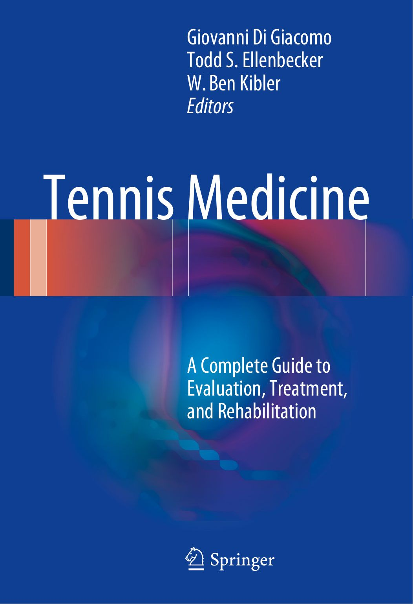
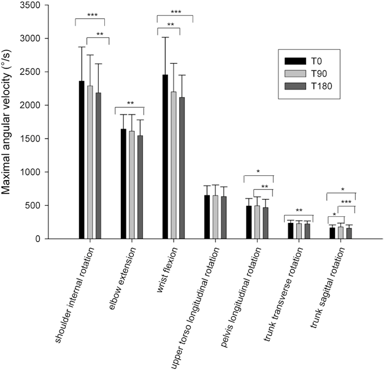
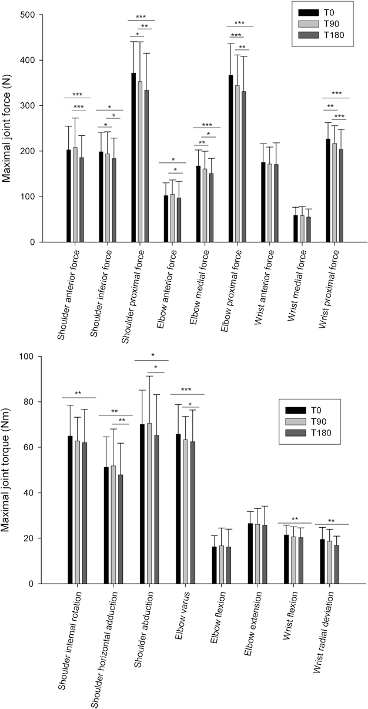
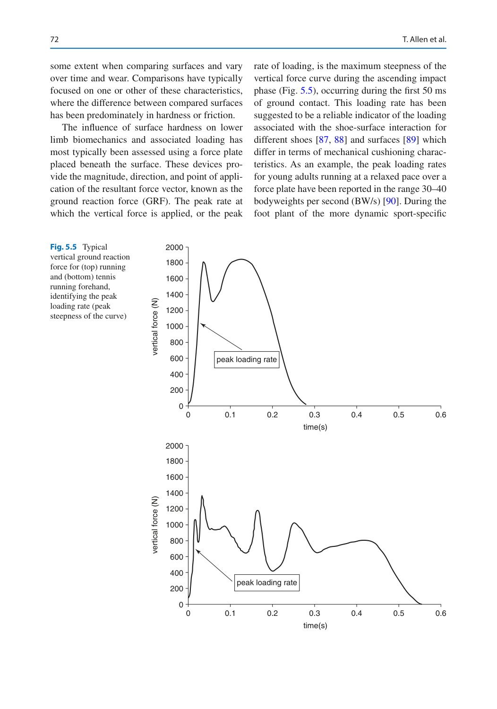
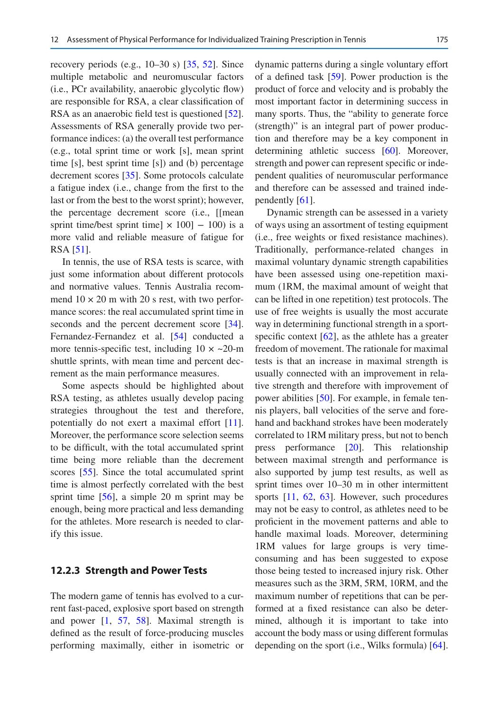
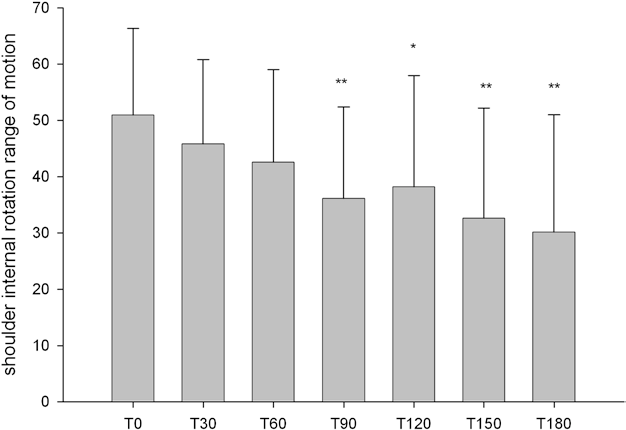
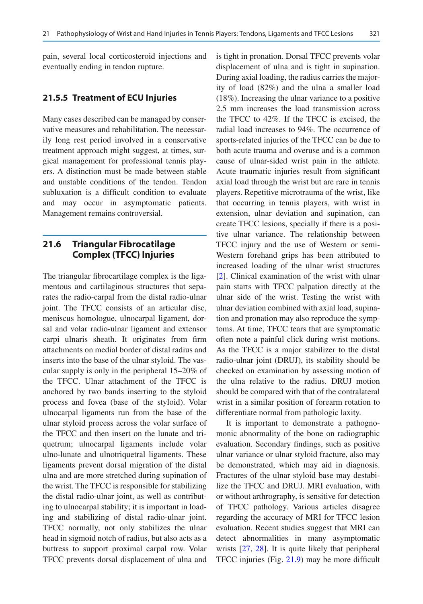
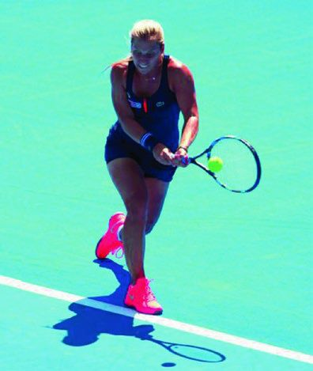
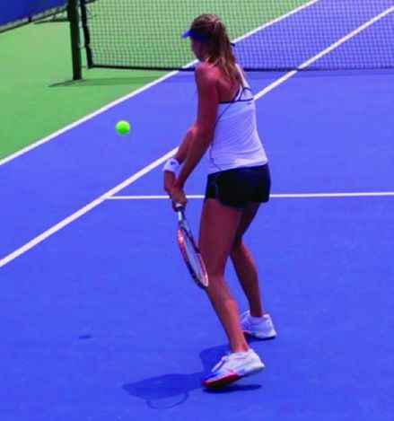
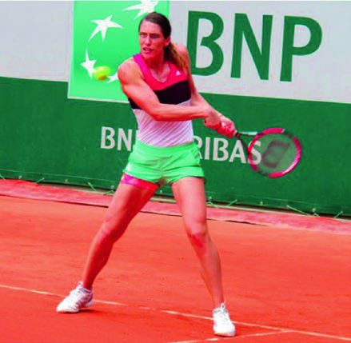

Tennis Medicine: Y Học Quần Vợt Toàn Diện

Bản dịch Việt ngữ này chỉ dùng cho mục đích học tập cá nhân, phi thương mại. Bản quyền tác phẩm gốc thuộc về tác giả và nhà xuất bản.
Phần I: Cơ Sinh Học Quần Vợt, Chuỗi Động Học & Dòng Chảy Năng Lượng
Lời Tựa Từ Novak Djokovic & Rafael Nadal: Sứ Mệnh Của Y Học Thể Thao Đỉnh Cao Forewords by Novak Djokovic & Rafael Nadal: The Mission of Elite Sports Medicine
Cuốn sách này nêu bật vai trò quan trọng của y học thể thao và khoa học thể thao trong môn thể thao quần vợt. Với tư cách là một cựu tay vợt, giám đốc giải đấu và hiện là Chủ tịch điều hành & Chủ tịch của ATP, tôi đã tận mắt chứng kiến vai trò quan trọng của Dịch vụ Y tế trong môn quần vợt cấp cao. Tôi đã được hưởng lợi từ các phương pháp điều trị và đánh giá được cung cấp cho tôi khi thi đấu, điều đó vừa ngăn ngừa chấn thương thêm vừa cho phép tôi quy trình trở lại thi đấu (Return-to-Play). Tôi cũng đã làm việc với các bác sĩ giải đấu, nhà vật lý trị liệu và nhà trị liệu xoa bóp trong khi giữ chức vụ Giám đốc Giải đấu cho giải ATP tại Câu lạc bộ Nữ hoàng ở London, cũng như Vòng chung kết ATP tại O2 trong nhiều năm. Vai trò của họ trong việc hỗ trợ sức khỏe và sự phục hồi của tay vợt cũng như quản lý chấn thương và bệnh tật là rất quan trọng đối với sự thành công của bất kỳ giải đấu nào. Cuối cùng, trong vai trò của tôi với ATP, chúng tôi đã phát triển một bộ phận Dịch vụ Y tế rộng khắp cung cấp thuốc thể thao cực kỳ quan trọng và chăm sóc phục hồi cho các tay vợt của chúng tôi ở cả ATP World Tour và ATP Challenger Tour. Người ta hy vọng rằng thông tin được cung cấp trong cuốn sách này của Di Giacomo, Ellenbecker và Kibler sẽ nâng cao kiến thức lâm sàng của các bác sĩ lâm sàng làm việc với tay vợt quần vợt và dẫn đến những cải tiến liên tục trong việc chăm sóc tay vợt.
Cơ Sinh Học Cú Giao Bóng & Động Lực Học Khớp Chi Trên Biomechanics of the Tennis Serve & Upper Limb Joint Kinetics (Caroline Martin)
Trong trò chơi chuyên nghiệp dành cho nam, cú giao bóng được cho là cú đánh quan trọng nhất. Từ góc độ chiến lược và chiến thuật, chìa khóa chính để thực hiện một cú giao bóng thành công là tốc độ, độ xoáy và vị trí. Thống kê từ US Open 2009 cho thấy ở trận hòa nam, 5 trong số 10 tay vợt xếp hạng cao nhất cũng có tốc độ giao bóng cao nhất. Thật vậy, khả năng tay vợt quần vợt tạo ra vận tốc bóng cao trong khi giao bóng là một yếu tố quan trọng của một trận đấu thành công vì nó khiến đối thủ bị căng thẳng và có thể cản trở việc trả giao bóng. Do đó, nếu bạn hỏi các huấn luyện viên quần vợt ưu tiên chính của họ khi dạy giao bóng quần vợt là gì, câu trả lời của họ có thể là “cải thiện hiệu suất, đặc biệt là tốc độ bóng” nhưng cũng có thể là “ngăn ngừa chấn thương”. Thật vậy, các nghiên cứu trước đây đã liên kết việc giao bóng với chấn thương do sử dụng quá mức ở chi trên và khớp lưng, đây là một vấn đề y tế phổ biến ở mọi cấp độ thi đấu quần vợt. Mục đích của bài đánh giá này là tổng hợp tất cả các nghiên cứu khoa học hiện có về cơ chế sinh học giao bóng quần vợt liên quan đến hiệu suất và chấn thương khớp chi trên.
Phòng thí nghiệm C. Martin M2S “Chuyển động, Thể thao, Sức khỏe”, Đại học Rennes 2, Bruz Cedex, Pháp e-mail: caromartin@numericable.fr Trong quần vợt, giao bóng là một chuỗi các chuyển động được gọi là “chuỗi động học (Kinetic Chain)” bắt đầu bằng hành động của chi dưới và tiếp theo là thân và chi trên. Fleisig và cộng sự. đã chỉ ra rằng những tay vợt quần vợt tạo ra một chuỗi các chuyển động quay nhanh chóng (Bảng 1.1). Thứ tự của vận tốc góc tối đa là nghiêng thân (280°/s), xoay dọc thân trên (870°/s), xoay xương chậu (440°/s), duỗi khuỷu tay (1510°/s), gập cổ tay (1950°/s) và xoay trong vai (2420°/s). Những đóng góp của chuyển động xoay khớp và phân đoạn này vào vận tốc vợt khi giao bóng rất được quan tâm trong tài liệu. Các yếu tố chính tạo nên vận tốc tuyến tính trung bình của vợt khi va chạm là chuyển động xoay trong của vai, độ gập của bàn tay, độ gập ngang và dang vai và độ uốn của thân (Bảng 1.2).
Sự thành thạo của những chuyển động quay này thông qua chuỗi động học (Kinetic Chain) liên quan đến việc truyền động lượng tuyến tính và góc từ chân đến thân rồi đến cánh tay và vợt . Mặc dù khái niệm truyền động lượng góc thường được cho là rất quan trọng trong việc tạo ra những cú giao bóng bùng nổ, nhưng rất ít nghiên cứu đã nghiên cứu động lượng góc trong quá trình giao bóng quần vợt. Chỉ có Bahamonde mới mô tả, định lượng và giải thích sự tiến hóa của xung lượng góc trong quá trình giao bóng quần vợt theo ba trục trực giao (ngang hoặc “bánh xe đẩy”, trước sau hoặc “vai qua vai”, dọc hoặc “xoắn”) ở năm vận động viên quần vợt ở trường đại học. Người ta đã báo cáo rằng phần lớn xung lượng góc theo chiều kim đồng hồ quanh trục ngang tập trung ở thân và tay vợt. Xung lượng góc đối với trục quay dọc nhỏ và thiếu một quy luật nhất quán. Hơn nữa, Bahamonde đã nhận thấy rằng sự khác biệt giữa những tay vợt có tốc độ bóng cao nhất (51,0, 46,3 và 50,4 m/s) và những tay vợt có tốc độ bóng thấp nhất (39,8 và 43,9 m/s) là sự đóng góp của thân cây vào tổng xung lượng góc trục trước sau. Một nghiên cứu gần đây đã xác định được mối quan hệ giữa xung lượng góc từng phần và vận tốc bóng ở những tay vợt chuyên nghiệp. Kết quả của nghiên cứu này chỉ ra rằng từ độ cong khuỷu tay tối đa đến tác động của bóng, những tay vợt có giá trị xung lượng góc thân và cánh tay vợt cao nhất quanh trục ngang là những người có vận tốc bóng cao nhất. Kết quả là, có vẻ như khả năng của tay vợt tạo ra các giá trị động lượng góc phân đoạn phần thân trên cao về trục ngang trong quá trình giao bóng sẽ làm tăng vận tốc bóng. Đối với các giai đoạn nghiêng và tăng tốc của cú giao bóng, có mối tương quan đáng kể giữa các giá trị động lượng góc của thân cây về trục trước sau và vận tốc bóng. Nói cách khác, tay vợt càng tạo ra xung lượng góc của thân cây về trục trước sau giữa độ cong tối đa của khuỷu tay và tác động của bóng thì vận tốc bóng sẽ càng cao. Những mối quan hệ chặt chẽ này xác nhận kết quả của Bahamonde cho thấy rằng chuyển động xoay của thân cây quanh trục trước sau (còn gọi là xoay “vai qua vai”) giúp phân biệt tay vợt có tốc độ bóng cao nhất với tay vợt có tốc độ bóng thấp nhất.
Elliott và cộng sự. đã chứng minh rằng các vận động viên nam chuyên nghiệp thường ghi nhận mô-men xoắn và lực ở khớp vai và khuỷu tay cao hơn so với các vận động viên nữ của họ. Theo họ, các biện pháp động học cao hơn này là yếu tố quan trọng trong việc tạo ra tốc độ giao bóng cao hơn đáng kể cho nhóm tay vợt này. Davis và cộng sự. đề xuất các phép đo hiệu quả cho sân bóng chày về mối quan hệ giữa vận tốc bóng và động học. Họ chia tải trọng của khớp theo vận tốc bóng để hiểu rõ hơn về hiệu quả của người ném bóng. Thật vậy, người ném bóng hoặc người giao bóng hiệu quả cao là người có thể tối đa hóa công suất (vận tốc bóng) với tải trọng khớp ít nhất. Martin và cộng sự. cho thấy những tay vợt quần vợt trình độ cao kém “hiệu quả” hơn những tay vợt chuyên nghiệp vì họ tăng động học của cả vai và khuỷu tay so với những tay vợt chuyên nghiệp mà không đạt được vận tốc bóng cao hơn. Người ta cho rằng hiệu suất thấp đo được ở những tay vợt trình độ cao có thể liên quan đến cơ chế không đúng của chuỗi động học (Kinetic Chain). Người ta đã chỉ ra rằng bất kỳ sự gián đoạn nào trong chuỗi động học (Kinetic Chain) do cơ học không phù hợp gây ra đều có thể dẫn đến tăng tải trọng lên các khớp chi trên trong chuỗi chuyển động. Kết quả là, có thể giả định rằng những tay vợt trình độ cao đã cố gắng bù đắp cho sự gián đoạn chuỗi động do cơ chế giao bóng không phù hợp gây ra bằng cách tăng cường kích hoạt và tải phân đoạn.
Chấn thương do sử dụng quá mức trong thể thao có thể là kết quả của sự tương tác phức tạp giữa các yếu tố nguy cơ khác nhau như tuổi tác, giới tính, yếu cơ và mất cân bằng, thiết bị kém, số lần lặp lại trong quá trình tập luyện và thi đấu cũng như tải trọng khớp quá mức. Trong số tất cả các yếu tố rủi ro trong các hoạt động ném và đánh quá tay, tải khớp quá mức (lực và mô-men xoắn) được biết đến là một yếu tố rủi ro quan trọng gây ra chấn thương vi mô lặp đi lặp lại, nguyên nhân dẫn đến chấn thương khớp chi trên do hoạt động quá mức. Thật vậy, có vẻ hợp lý khi những tay vợt phải chịu tải trọng cao hơn có thể dễ bị chấn thương do sử dụng khớp quá mức. Liên quan đến quần vợt, giao bóng được cho là một kỹ năng gây chấn thương vì nó gây ra tải trọng lớn lên các khớp chi trên ở những tay vợt quần vợt chuyên nghiệp và nâng cao (Bảng 1.3).
Tác động chấn thương của hoạt động quần vợt cũng liên quan đến tính chất lặp đi lặp lại của động tác giao bóng trong suốt sự nghiệp thi đấu của tay vợt. Điều thú vị là tay vợt quần vợt đánh từ 50 đến 150 cú giao bóng trong một trận đấu. Kết quả này tăng lên nhờ số trận đấu đơn mà các tay vợt thi đấu trong một mùa giải thi đấu (khoảng 60 trận), chưa tính đến các trận đấu đôi và các buổi tập. Việc lặp lại các cú giao bóng tác động lên khớp chi trên ở những vận động viên quần vợt thi đấu có thể giải thích tại sao chấn thương do vận động quá mức ở khớp chi trên là một vấn đề y tế phổ biến ở mọi cấp độ thi đấu trong quần vợt. Thật vậy, những chấn thương do sử dụng quá mức này không chỉ liên quan đến những tay vợt quần vợt chuyên nghiệp mà còn cả những tay vợt thi đấu giải trí và nâng cao. Quần vợt là môn thể thao cạnh tranh đẳng cấp thế giới thu hút hàng chục triệu tay vợt trên khắp thế giới và phần lớn trong số họ được cho là mang tính giải trí hoặc nâng cao hơn là giới thượng lưu. Do đó, Martin et al. đã so sánh động học của khớp và hiệu quả tạo ra cú đánh ở vai, khuỷu tay và cổ tay trong quá trình giao bóng giữa các vận động viên quần vợt chuyên nghiệp và cao cấp. Đỉnh của lực phía dưới vai, lực phía trước của vai, mô-men xoắn ngang của vai và lực trung gian của khuỷu tay cao hơn đáng kể ở những tay vợt ở trình độ cao. Vận tốc bóng nhanh hơn đáng kể đối với tay vợt chuyên nghiệp (177,8 ± 17,3 km/h) so với tay vợt nâng cao (143,3 ± 14,4 km/h). Do đó, tay vợt chuyên nghiệp sẽ hiệu quả hơn tay vợt nâng cao, vì họ tối đa hóa vận tốc bóng với động học khớp thấp hơn hoặc tương tự. Vì những tay vợt trình độ cao phải chịu động học khớp cao hơn nên kết quả cho thấy họ có nguy cơ cao bị chấn thương vai và khuỷu tay hơn so với những tay vợt chuyên nghiệp, đặc biệt là trong các giai đoạn gài và giảm tốc của quả giao bóng.
Theo Fortenbaugh, những thay đổi về động học có thể làm tăng hoặc giảm vận tốc hoặc không ảnh hưởng gì đến nó. Rõ ràng, bất kỳ mô hình động học nào làm tăng đáng kể các giá trị động học mà không tăng vận tốc đều là mô hình cơ học. Thật vậy, ngay cả những lỗi nhỏ về kỹ thuật và thời gian, liên tục lặp lại trong suốt một trận đấu, một mùa giải thi đấu hoặc một sự nghiệp, cũng có thể ảnh hưởng đến hiệu suất, làm tăng động lực của khớp và do đó gây ra các vấn đề về mất ổn định vi mô khi sử dụng gân quá mức.
Ngược lại, có ý kiến cho rằng cơ chế thời gian thích hợp có thể giúp các vận động viên đạt được thành tích tối đa với khả năng chấn thương tối thiểu. Liên quan đến cú giao bóng quần vợt, đã có báo cáo cho rằng cú công bằng chân kém sẽ làm giảm vận tốc bóng và tăng động học của vai và khuỷu tay trong khi giao bóng quần vợt (+15% đối với đỉnh mô-men quay trong của vai và +18% đối với đỉnh điểm của mô men xoay khuỷu tay). Hơn nữa, người ta đã chứng minh rằng kiểu backswing ảnh hưởng đến lực trước của vai. Thật vậy, lực trước chuẩn hóa ở khớp vai cao hơn được nhận thấy ở những tay vợt có cú vung vợt rút gọn so với những tay vợt sử dụng cú vung toàn bộ về sau (+34%). Trong bóng chày, người ta tin rằng việc ném bóng an toàn và hiệu quả nhất phụ thuộc vào thời điểm và trình tự chuyển động chính xác cũng như chất lượng của chính các chuyển động đó. Trong một chuỗi chuyển động như vậy, thời điểm xoay thân và vai dường như rất quan trọng vì thân và vai là những liên kết góp phần đáng kể vào xung lượng góc của cơ thể và có thể ảnh hưởng đến hiệu suất quần vợt. Do đó, nghiên cứu đã tập trung vào tác động của thời gian xoay thân lên động học của khớp chi trên trong quá trình giao bóng quần vợt. Mục đích của nghiên cứu này là đo lường tác động của các thông số thời gian lên cả vận tốc bóng và động học của khớp chi trên để xác định các yếu tố cơ học bệnh lý trong quá trình giao bóng quần vợt và xác nhận các yếu tố cơ học bệnh lý này bằng cách so sánh những tay vợt bị thương và không bị thương ở khớp chi trên. Thời điểm vận tốc góc đỉnh của thân muộn hơn và thời gian không thích hợp giữa độ khép ngang của vai và chuyển động xoay ra ngoài thực sự có liên quan đến động học khớp chi trên cao hơn và vận tốc bóng thấp hơn. Những tay vợt không bị chấn thương có thể tối đa hóa vận tốc bóng và giảm động học của khớp chi trên bằng cách xoay thân mình với vận tốc tối đa sớm hơn so với những tay vợt bị chấn thương, cho phép năng lượng truyền từ thân tới vai vào đúng thời điểm trong chuỗi chuyển động chính xác. Hơn nữa, trong các giai đoạn giật và tăng tốc của cú giao bóng quần vợt, cánh tay chuyển từ dang ngang sang khép và đến các góc quay ngoài cực đại. Các phân tích tương quan cho thấy rằng thời điểm xoay ngoài của vai càng đến trước thời điểm khép ngang của vai thì lực trước của vai (r = 0,40, p < 0,001) và mô-men xoắn dang ngang càng tăng (r = 0,40, p < 0,001) và vận tốc bóng càng giảm (r = −0,26, p < 0,05). Theo kết quả, những tay vợt không bị chấn thương sẽ hiệu quả hơn vì họ đạt được khả năng khép vai theo chiều ngang ngay trước những vị trí cực kỳ xoay ra ngoài. Kết quả là, họ có thể tối đa hóa vận tốc bóng và hạn chế tải trọng của khớp chi trên bằng cách sử dụng các thông số thời gian thích hợp trong quá trình giao bóng. Ngược lại, những tay vợt bị chấn thương “để” cánh tay của họ ở tư thế dang ngang quá lâu trong giai đoạn xoay vai ra ngoài. Do đó, các tay vợt bị chấn thương đạt vận tốc bóng thấp hơn đáng kể và thể hiện động học khớp cao hơn. Dạng ngang vai quá mức xảy ra trong giai đoạn cuối của chuyển động ném đã được báo cáo là rất nghiêm trọng đối với sự va chạm bên trong do sự dịch chuyển của đầu xương cánh tay so với ổ chảo, có thể dẫn đến rách gân chóp xoay (Rotator Cuff), bệnh lý gân (Tendinopathy) vai và tổn thương môi.
Dòng năng lượng đã được đưa ra giả thuyết là một trong những khái niệm cơ sinh học quan trọng nhất liên quan đến hiệu suất giao bóng tennis và chấn thương do sử dụng quá mức. Martin và cộng sự. đã nghiên cứu mối quan hệ giữa chất lượng và cường độ của dòng năng lượng, vận tốc bóng và đỉnh cao của động học khớp chi trên để so sánh dòng năng lượng trong quá trình giao bóng giữa những tay vợt quần vợt bị thương và không bị thương. Kết quả của họ cho thấy vận tốc bóng tăng lên và động học của khớp chi trên giảm theo chất lượng của dòng năng lượng từ thân đến phần tay + vợt. Các tay vợt bị chấn thương cho thấy chất lượng dòng năng lượng qua chuỗi động năng của chi trên thấp hơn, tốc độ bóng thấp hơn và tốc độ hấp thụ năng lượng ở vai và khuỷu tay cao hơn so với những tay vợt không bị chấn thương. Do đó, có vẻ như sự thay đổi của dòng năng lượng từ thân cây đến vợt có thể đóng vai trò dự đoán cả về hiệu suất giao bóng và chấn thương.
Mục tiêu của giai đoạn chuẩn bị cho người giao bóng, trong đó họ đưa cơ thể và chân vào vị trí, là sử dụng lực phản ứng của mặt đất để tạo ra năng lượng cần thiết cho chuyển động của dịch vụ. Tay vợt quần vợt thường có thể sử dụng hai kỹ thuật đứng: một số đưa chân sau lên chân trước trong khi ném bóng, trước khi thực hiện cú đánh (Murray, Tsonga, Del Potro); trong khi những người khác để chân sau ra sau cho đến khi bắt đầu duỗi chân (Federer, Djokovic). Kỹ thuật đầu tiên được gọi là kỹ thuật “chân lên”, trong khi kỹ thuật thứ hai được gọi là kỹ thuật “chân sau”. Trong giải Pháp mở rộng 2007, sự phân bố của hai kỹ thuật lập trường đã được phân tích. Kết quả cho thấy 72,4% tay vợt sử dụng kỹ thuật giơ chân lên. Tuy nhiên, khi xem xét lựa chọn kỹ thuật theo phong cách trò chơi, chúng tôi nhận thấy tỷ lệ này thay đổi đáng kể (Bảng 1.4). Gần 50% tay vợt giao bóng và đánh vô-lê thường xuyên hoặc thỉnh thoảng (đánh đôi hoặc tay vợt tấn công) sử dụng thế đứng bằng chân lùi khi giao bóng, so với chỉ một trong sáu tay vợt trong số những người không bao giờ di chuyển vào lưới sau khi giao bóng (Bảng 1.4). Ưu điểm và nhược điểm của từng kỹ thuật lập trường là gì?
Một nghiên cứu gần đây đã chỉ ra rằng khi các tay vợt chuyên nghiệp sử dụng kỹ thuật đá chân lên, họ tạo ra vận tốc bóng trung bình cao hơn (173,2 km/h so với 166,3 km/h với kỹ thuật đá chân sau). Điều này thể hiện sự khác biệt trung bình là 7 km/h đối với kỹ thuật gác chân. Chúng ta có thể giải thích kết quả này như thế nào? Được biết, cơ sở hỗ trợ càng lớn thì tay vợt càng cân bằng. Đó là điều xảy ra với kỹ thuật đá chân lùi, giúp tay vợt có sự ổn định tốt. Ngược lại, với kỹ thuật nhấc chân lên, khi cả hai chân tiến lại gần nhau cho đến khi chạm vào nhau và người giao bóng di chuyển về phía trước và đẩy khỏi mặt đất để đánh bóng, phần đế đỡ bị thu hẹp, nghĩa là tay vợt trở nên kém thăng bằng hơn. Phần thân của người giao bóng bắt đầu quay về phía trước. Do sự cản trở chuyển động của một bộ phận cơ thể (trong trường hợp này là bàn chân), một lượng chuyển động xoay của cơ thể được tạo ra (cũng như trường hợp trong một chuyến đi hoặc nhào lộn). Mức độ xoay cơ thể về phía trước (được gọi là “động lượng góc” trong cơ sinh học) khi sử dụng kỹ thuật nhấc chân lên sẽ lớn hơn so với kỹ thuật đưa chân ra sau. Và chúng ta biết rằng tốc độ quay của cơ thể về phía trước càng lớn thì vận tốc bóng càng cao. Đó là lý do tại sao tư thế giơ chân lên cho phép tay vợt giao bóng mạnh hơn một chút.
Một ưu điểm lớn khác của kỹ thuật nhấc chân lên là nó tạo ra lực phản ứng từ mặt đất hướng lên trên cao hơn so với kỹ thuật đặt chân lên sau (tương ứng là 2,1 lần trọng lượng cơ thể so với 1,5 lần trọng lượng cơ thể). Do đó, kỹ thuật foot-up cho phép tay vợt tác động bóng cao hơn so với kỹ thuật foot-back. Sự khác biệt trung bình là 11 cm được ghi nhận giữa hai kỹ thuật đứng (2,65 m với kỹ thuật đưa chân lên so với 2,54 m với kỹ thuật đưa chân ra sau) ở những tay vợt quần vợt chuyên nghiệp. Như chúng ta đã biết, tác động của bóng càng cao thì độ hở của lưới càng lớn, cơ hội tăng tỷ lệ giao bóng thứ nhất và thứ hai càng cao và bạn càng có nhiều cơ hội đạt được các góc ngắn và chéo sân. Người ta đã chứng minh rằng việc tăng độ cao tiếp xúc của bóng từ 2,60 lên 2,70 m cho phép tay vợt tiếp cận các vùng ngắn hơn 25–30 cm trong ô phát bóng.
1.5.3 Ảnh hưởng của kỹ thuật thế đứng đến thời gian chạy lên lưới trong khi giao bóng và vô lê Một nghiên cứu khoa học đã tập trung vào ảnh hưởng của kỹ thuật thế đứng đối với thời gian chạy lên lưới của các tay vợt chuyên nghiệp (nam và nữ) trong khi giao bóng và vô lê. Kết quả cho thấy các tay vợt sử dụng kỹ thuật đá chân sau có thể tiếp cận đường giao bóng nhanh hơn so với những tay vợt sử dụng kỹ thuật đá chân lên (tương ứng là 1,49 giây so với 1,56 giây). Mặc dù sự khác biệt 70 ms giữa hai kỹ thuật thoạt nhìn có vẻ không đáng kể, nhưng trên thực tế, nó tạo ra sự khác biệt khá lớn so với một trong những thách thức lớn nhất của trò chơi giao bóng và đánh vô-lê. Thật vậy, những tay vợt giao bóng và đánh vô-lê tìm cách chạy càng nhanh càng tốt để thực hiện cú vô lê trong điều kiện tốt; điều này có thể đạt được bằng cách đến gần lưới nhất có thể. Ví dụ: trong trường hợp quả giao bóng trả lại ở tốc độ 140 km/h, chênh lệch thời gian 70 ms có nghĩa là người giao bóng và người đánh vô-lê có thể tiến gần lưới hơn khoảng 2,4 m, do đó nâng cao đáng kể khả năng thực hiện cú vô lê đầu tiên thành công. Làm thế nào có thể giải thích sự khác biệt như vậy giữa hai kỹ thuật lập trường? Theo kết quả nghiên cứu này, việc mất thời gian được ghi nhận với kỹ thuật nhấc chân xảy ra chủ yếu trong giai đoạn tiếp đất. Thời gian tiếp xúc với sàn bằng chân đầu tiên sau khi giao bóng được kéo dài trung bình thêm 20 ms với kỹ thuật nhấc chân lên.
Bởi vì các tay vợt đẩy lên trên nhiều hơn khi sử dụng kỹ thuật nhấc chân lên, họ cần nhiều thời gian hơn để lấy lại thăng bằng trong giai đoạn tiếp đất trước khi chạy vào lưới. Một yếu tố khác giải thích cho thời gian chạy tới lưới của kỹ thuật đá chân sau ngắn hơn, đó là xung lực về phía trước. Với kỹ thuật đưa chân lên lưới, tay vợt có khoảng cách lớn hơn bên trong sân trong khi giao bóng (60 cm so với 46 cm của kỹ thuật đưa chân lên) vì họ có thể tạo ra lực đẩy lên lưới lớn hơn (0,20 lần trọng lượng cơ thể so với 0,16 lần trọng lượng cơ thể với kỹ thuật đưa chân lên).
1.5.4 Tác dụng của kỹ thuật thế đứng đối với tải trọng khớp chi trên và nguy cơ chấn thương mãn tính Một số nhà khoa học đã nghiên cứu tải trọng (lực và mô-men xoắn) đặt lên khớp vai trong chuyển động giao bóng tùy thuộc vào kỹ thuật thế đứng được sử dụng để xác định xem kỹ thuật này có gây chấn thương nhiều hơn kỹ thuật kia hay không. Không có sự khác biệt đáng chú ý nào về tải trọng khớp được quan sát giữa kỹ thuật đặt chân sau và nâng chân lên.
1.6.1 Sự khác biệt về động học giữa các kiểu giao bóng xoáy: Giao bóng phẳng, giao bóng cắt và giao bóng Cú xoáy đặc biệt quan trọng trong sự thành công của quần vợt. Hướng xoáy của bóng đối với các cú giao bóng phẳng và cắt là tương tự nhau, trong khi cú giao bóng phát bóng khác nhau vì nó được đánh với nhiều xoáy lên hơn các cú giao bóng khác. Có một mối quan hệ tiêu cực giữa tốc độ và độ xoáy. Thật vậy, khi tốc độ quay bóng tăng thì vận tốc bóng giảm (Bảng 1.5).
Vận tốc vợt trong quá trình giao bóng bị ảnh hưởng bởi kiểu xoáy . Sự khác biệt đáng kể về hướng của vectơ vận tốc vợt giữa các cú giao bóng đã được chứng minh (Bảng 1.6): cú giao bóng có thành phần vận tốc vợt về phía trước theo phương ngang lớn nhất và nhỏ nhất, trong khi cú giao bóng phẳng có thành phần theo chiều dọc nhỏ nhất. Cú giao bóng có vận tốc ngang, giống như cú đá và vận tốc về phía trước lớn, giống như cú đánh phẳng.
Reid và cộng sự. [24, Trang tính và cộng sự. và Abrams và cộng sự. động học của tay vợt quần vợt được điều tra Họ đã cho thấy động học tương tự của khớp vai giữa các cú giao bóng phẳng và cú đá, nhưng Sheets et al. báo cáo sự khác biệt về các thành phần vận tốc ở cổ tay và khuỷu tay. Các thành phần vận tốc ở cổ tay và khuỷu tay nhỏ hơn theo hướng bên trong khi giao bóng phẳng so với khi thực hiện cú đá và có vận tốc hướng xuống lớn hơn. Hơn nữa, người ta đã quan sát thấy lực đẩy chi dưới mạnh mẽ hơn trong cú giao bóng do vận tốc thẳng đứng cao nhất của hông sau trong cú giao bóng (2,3 ± 0,3 m/s) cao hơn đáng kể so với trong cú giao bóng phẳng (2,1 ± 0,3 m/s). Bằng cách sử dụng lực truyền chân dọc năng động hơn, tay vợt có thể tối đa hóa quỹ đạo vợt “lên và ra” và tốc độ xoáy được truyền sang bóng khi tiếp xúc. Hơn nữa, vị trí cơ thể khi tiếp xúc với bóng có sự khác biệt đáng kể giữa các cú giao bóng phẳng và cú đá. Thật vậy, vợt trong cú giao bóng được đặt ở vị trí sau hơn 9 cm và ở giữa hơn 21 cm so với vai so với mặt phẳng. Vị trí này có thể làm tăng nguy cơ chấn thương vai và lưng liên quan đến cú đá giao bóng. Sự kết hợp giữa góc vợt khi tiếp xúc và quỹ đạo vợt có liên quan đến bóng cho phép tay vợt tạo ra nhiều cú xoáy khác nhau trên bóng. Góc uốn ngang của vợt và góc xoắn của mặt vợt bị ảnh hưởng bởi kiểu xoáy và độ tuổi của tay vợt (Bảng 1.7 và 1.8).
Giao bóng phẳng Giao bóng cắt giao bóng Người lớn 5° 30° 20° 14–15 tuổi 10° 20° 15° 11–12 năm 10° 10° 10° Giao bóng đá thường liên quan đến đau vai và chi dưới cũng như chấn thương trong quần vợt. Reid và cộng sự. quan sát thấy tải trọng khớp vai tương đương giữa các cú giao bóng phẳng và đá ở 12 tay vợt nam có thành tích cao. Tuy nhiên, một nghiên cứu gần đây hơn ở bảy vận động viên quần vợt ở trường đại học đã cho thấy lực tác động về phía sau của vai lớn hơn trong cú giao bóng. Hơn nữa, cú giao bóng có cường độ lực ở phía sau cao hơn so với cú giao bóng phẳng và cắt. Độ lớn lực và mô-men xoắn ở khuỷu tay và cổ tay không khác biệt đáng kể giữa các lần giao bóng. Theo những kết quả đó, người ta có thể cho rằng cú giao bóng tạo ra lượng tải lớn nhất lên lưng và vai và do đó có thể gây ra nguy cơ chấn thương lớn nhất. Hơn nữa, sự kết hợp của điểm tiếp xúc sau trong và vận tốc tuyến tính theo chiều dọc và chiều ngang của vợt trong quá trình phát bóng góp phần làm tăng tải trọng căng thẳng lên lưng (dây chằng, đĩa đệm và đốt sống của cột sống) và mức độ hoạt động của các cơ thân như đã báo cáo trước đây. Ngược lại, cú giao bóng cắt lát thể hiện tải trọng tổng thể của khớp thấp hơn. Do đó, nó phải được coi là kiểu giao bóng “sinh lý” nhất và có thể là kiểu giao bóng đầu tiên được áp dụng khi cố gắng quy trình trở lại thi đấu (Return-to-Play), đặc biệt là khi bình phục sau chấn thương.
Thời gian trung bình của một trận đấu quần vợt thông thường là từ 1 đến 2 giờ, nhưng trong một số trường hợp, thời lượng này có thể kéo dài (từ 3 đến 6 giờ).
Trong các giải Grand Slam, thời lượng trung bình của các trận đấu kéo dài 5 set là từ 137 đến 154 phút, theo mặt sân. Trận đấu quần vợt được xác định bằng bài tập không liên tục: các hiệp ngắn có cường độ cao (<10 giây) bị gián đoạn bởi các hiệp phục hồi chủ động ngắn (10–20 giây) và thời gian phục hồi thụ động trong thời gian dài hơn (90–120 giây). Trong suốt một trận đấu quần vợt kéo dài 5 hiệp, tay vợt có thể đánh hơn 1000 cú đánh trên mặt đất và 400 cú giao bóng, dẫn đến mỏi cơ, được coi vừa là nguyên nhân gây suy giảm hiệu suất vừa là yếu tố nguy cơ chấn thương. Ảnh hưởng của tình trạng mỏi cơ đến tốc độ giao bóng trong quần vợt là không rõ ràng vì các nghiên cứu trước đây đã đưa ra những kết quả trái ngược nhau. Thật vậy, người ta đã chứng minh rằng vận tốc bóng giao bóng không thay đổi giữa lúc bắt đầu và kết thúc 2 giờ 30 và 4 giờ các trận đấu quần vợt, trong khi có báo cáo rằng một trận đấu quần vợt hoặc buổi tập kéo dài 2 giờ đã làm giảm độ chính xác khi giao bóng (từ −12% xuống −30%), tốc độ bóng (−4,5%) và tăng tỷ lệ lỗi . Hơn nữa, ảnh hưởng của tình trạng mệt mỏi khi chơi quần vợt lên khả năng hoạt động của cơ đã được phân tích trước đây. Hoạt động điện cơ (EMG) và lực đo được trong quá trình co tự nguyện tối đa đẳng cự đã giảm ở các cơ duỗi đầu gối, các cơ gấp bàn chân trong một trận đấu quần vợt kéo dài 3 giờ, và ở cơ ngực chính và cơ gấp cổ tay quay trong một bài tập quần vợt kéo dài 40 phút gồm bốn loạt 12 lần lặp lại một lần giao bóng, sau đó là tám cú đánh thuận tay. Tuy nhiên, kết quả cuối cùng này được đo trong quá trình đo độ mệt mỏi “nhân tạo” và có thể không phản ánh mức độ mệt mỏi đạt được khi thi đấu quần vợt kéo dài. Thật vậy, một trong những hạn chế trong các nghiên cứu trước đây là thời lượng tập luyện quần vợt dao động từ 40 đến 120 phút và tổng số lần giao bóng bị giới hạn ở mức 100 hoặc ít hơn. Tuy nhiên, điều cần thiết là các nghiên cứu khoa học phải phản ánh tình hình thi đấu thực sự để hiểu chính xác tác động của sự mệt mỏi đối với thành tích chơi quần vợt và hoạt động cơ bắp. Do đó, một nghiên cứu gần đây đã định lượng những thay đổi về động học, động học và hiệu suất xảy ra trong quá trình giao bóng trong suốt 3 giờ thi đấu quần vợt thực sự ở các tay vợt nam trình độ cao. Kết quả của họ cho thấy một trận đấu quần vợt kéo dài 3 giờ gây ra sự giảm giá trị tần số công suất trung bình cho một số cơ chi trên (bắp tay cánh tay, cơ delta trước, cơ ngực lớn, cơ thang giữa, cơ tam đầu cánh tay và cơ dưới gai) là một dấu hiệu của tình trạng mỏi cơ cục bộ. Hơn nữa, vận tốc bóng giao bóng giảm (−6,4 km/h, −3,9%) và chiều cao tác động của bóng (−4 cm) đã được báo cáo sau trận đấu. Từ đầu đến cuối trận đấu, kết quả cho thấy tốc độ góc tối đa của chuyển động xoay trong vai giảm đáng kể (−7,5%), duỗi khuỷu tay (−6,0%), gập cổ tay (−13,8%), xoay dọc xương chậu (−4,7%), xoay ngang thân (−5,1%) và xoay dọc thân (−6,0%) (Hình 1.1). Khi mệt mỏi, phần lớn động lực của khớp chi trên giảm dần từ đầu đến cuối trận đấu (Hình 1.2). Ngược lại, không có sự thay đổi nào về thời gian của vận tốc góc tối đa được quan sát trong suốt trận đấu. Tính nhất quán này gợi ý rằng những tay vợt quần vợt trình độ cao có thể sử dụng sự phối hợp theo từng phần mạnh mẽ, cho phép họ duy trì kiểu thời gian trong kỹ thuật giao bóng của mình, bất chấp sự phát triển mỏi cơ.
Việc đo lường khách quan phạm vi chuyển động (ROM) của khớp vai rất quan trọng đối với hoạt động chơi quần vợt cũng như phục hồi chức năng và ngăn ngừa chấn thương vai. Chandler và cộng sự. là những người đầu tiên so sánh ROM xoay trong và ngoài chủ động của vai với tư thế dang 90° ở những vận động viên quần vợt cấp cơ sở. Họ nhận thấy phạm vi xoay bên trong trung bình ở tay thuận ít hơn đáng kể so với tay không thuận (-11°). Ngược lại, độ xoay ra ngoài lớn hơn được ghi nhận ở vai thuận so với vai không thuận (13°). Kết quả tương tự trong các nghiên cứu sau này đã được tìm thấy. Kibler và cộng sự. đã phân tích tác động mãn tính của việc chơi quần vợt lên phạm vi chuyển động của vai và họ báo cáo rằng chuyển động xoay bên trong chiếm ưu thế của vai giảm và sự khác biệt giữa xoay bên trong chiếm ưu thế và không chiếm ưu thế tăng lên theo cả độ tuổi và số năm thi đấu. Sự thiếu hụt ROM xoay bên trong vai khoảng 10° giữa cánh tay thuận và tay không thuận hiện được coi là sự thích nghi sinh lý xảy ra bình thường ở những tay vợt quần vợt. Wilk và cộng sự. đã giới thiệu khái niệm về ROM xoay toàn bộ vai. Nó liên quan đến việc thêm ROM xoay bên trong và bên ngoài ở góc 90° cùng nhau. Ở những vận động viên quần vợt cấp cơ sở ưu tú, ROM xoay toàn bộ vai ít chiếm ưu thế hơn đáng kể được xác định (149,1° so với 158,2°). Xoay trong vai bệnh lý được xác định khi mất khả năng xoay trong của vai lớn hơn 18°–20° liên quan đến mất tổng ROM tương ứng lớn hơn 5° khi so sánh hai bên. Thật vậy, những phát hiện gần đây chứng minh rằng việc mất toàn bộ ROM ở vai là dấu hiệu báo trước về chấn thương vai trong tương lai ở các vận động viên ném qua đầu chuyên nghiệp. Trong môn bóng chày, người ta đã chứng minh rằng những người ném bóng có tổng so sánh ROM lớn hơn 5° có nguy cơ bị chấn thương vai cao hơn 2,5 lần . Trong môn quần vợt, người ta đã quan sát thấy mối tương quan có ý nghĩa thống kê giữa sự thiếu hụt khả năng xoay trong của vai chiếm ưu thế và tình trạng đau vai. Hơn nữa, mối quan hệ đáng kể giữa vận tốc giao bóng và sự gia tăng xoay trong của vai thuận ở góc dang 0° đã được tìm thấy ở những tay vợt chuyên nghiệp.
Việc xác định tác động cấp tính của một trận đấu quần vợt kéo dài lên ROM vai có thể rất sâu sắc để hiểu được khả năng chấn thương vai và hiệu suất giao bóng. Kết quả là, hai nghiên cứu đã phân tích tác động cấp tính của việc chơi quần vợt kéo dài trên vai ROM. Trong nghiên cứu của Martin et al. , ROM xoay bên trong và bên ngoài thụ động của vai được đo trên 8 tay vợt nam trình độ cao trước đó, cứ sau 30 phút trong và ngay sau một trận đấu quần vợt kéo dài 3 giờ, trong đó tay vợt thực hiện khoảng 250 cú giao bóng và 547 cú đánh trên mặt đất. Trong nghiên cứu của Moore-Reed et al. , ROM xoay bên trong và bên ngoài thụ động của vai được đánh giá ở 79 tay vợt nữ chuyên nghiệp tại ba thời điểm khác nhau (TP): vạch cuối sân trước khi thi đấu (TP1), ngay sau khi thi đấu (TP2) và 24 giờ sau vạch cuối sân (TP3). Cả hai nghiên cứu đều chứng minh sự giảm đáng kể về khả năng xoay trong của vai và tổng ROM từ đầu đến cuối trận đấu (Hình 1.3 và 1.4). Hơn nữa, ROM bên trong vai tiếp tục giảm 24 giờ sau khi tiếp xúc với trận đấu cấp tính. Không có sự khác biệt có ý nghĩa thống kê được quan sát thấy đối với việc xoay vai ra ngoài sau trận đấu.
Theo Manske và cộng sự. , xoay trong vai bệnh lý được xác định khi mất khả năng xoay trong của vai lớn hơn 18°–20°, với mức mất tương ứng tổng ROM lớn hơn 5° khi so sánh hai bên. Mức độ thiếu hụt xoay trong của vai không thể chấp nhận được được định nghĩa là (1) mất khả năng xoay trong của vai hơn 20° hoặc (2) mất hơn 10% tổng ROM. Trong nghiên cứu của Martin et al. , mức độ mất xoay bên trong trung bình của vai đạt tới 20,8° và mức mất trung bình của tổng ROM xấp xỉ 25° (tức là 15%) sau trận đấu. Mặc dù nghiên cứu này không so sánh vai thuận và vai không thuận nhưng kết quả cho thấy một trận đấu quần vợt kéo dài có thể khiến vai thuận rơi vào tình huống nguy hiểm khi so sánh với thời điểm đầu trận. Việc giảm khả năng xoay bên trong vai và tổng ROM đo được có thể là kết quả của các cơn co lệch tâm lặp đi lặp lại gây ra bởi nhiều cú giao bóng mạnh mẽ của tay vợt trong trận đấu. Các cơn co thắt lệch tâm lặp đi lặp lại có thể gây ra tình trạng bó cơ sau và căng bao khớp, điều này đã được chứng minh là tạo ra cơ chế sinh học bất thường ở vai. Thật vậy, đã có báo cáo rằng sự co cứng của bao sau của vai gây ra sự dịch chuyển ra trước và lên trên của chỏm xương cánh tay. Hậu quả là hiện tượng này có thể làm giảm khoảng cách dưới mỏm cùng vai và dẫn đến chèn ép mô mềm. Hơn nữa, Muraki và cộng sự. đã báo cáo áp lực đỉnh dưới mỏm cùng vai tăng lên và diện tích tiếp xúc trên dây chằng mỏm cùng vai ở tư thế tiếp theo là ném qua đầu sau khi điều chỉnh bao vai sau dưới. Hỗ trợ thêm cho tình trạng căng cứng vai sau vì yếu tố nguy cơ chấn thương vai đến từ Wilk et al. và Vad và cộng sự. , người đã quan sát thấy sự giảm xoay trong của vai ở những tay vợt bóng chày và quần vợt có triệu chứng va chạm ở vai. Do đó, người ta có thể lập luận rằng những thay đổi về ROM vai gây ra bởi thời gian sử dụng kéo dài.

Hình 1: Cơ sinh học & Chuỗi động học cú giao bóng đỉnh cao — Dòng truyền tải năng lượng từ bàn chân, cẳng chân, khớp háng, xoay thân mình đến vai, khuỷu tay và cổ tay tiếp xúc bóng.
Figure 1: Kinetic Chain & Energy Flow in the Tennis Serve — Proximal-to-distal force transmission from lower extremity drive to racket-ball impact.
Cơ Sinh Học Cú Đánh Cuối Sân & Cú Bắt Lưới Biomechanics of Groundstrokes and Volleys (Genevieve K. R. Dumas & Bruce Elliott)
Các cú đánh nền phổ biến như thế nào trong trận đấu và tầm quan trọng của chúng đối với sự thành công của môn quần vợt? Hawk-Eye, một sự phát triển kỹ thuật được giới thiệu để hỗ trợ điều hành trò chơi, đã mang đến cơ hội duy nhất để đánh giá đầy đủ cấu trúc của trò chơi chuyên nghiệp. Dữ liệu từ nguồn này sẽ mang lại lợi ích cho việc huấn luyện và giúp cải thiện hiệu suất cũng như giảm nguy cơ chấn thương. Hình 2.1 cung cấp dữ liệu Hawk-Eye được thu thập tại các giải Úc mở rộng 2012–2015. Rõ ràng là các cú đánh trên mặt đất cung cấp nền tảng cho quần vợt Grand Slam với số cú đánh được thực hiện ở bên thuận tay nhiều hơn một chút (≈38%) so với cú đánh trái tay (≈35%). Nói một cách tuyệt đối, phụ nữ đánh nhiều hơn 1–3 cú đánh nền mỗi trận so với nam giới, cho thấy rằng họ cần được tạo điều kiện để có số lần đánh cao hơn. Tuy nhiên, xét về mặt tích lũy, trong tuần đầu tiên của B. Elliott (*) Đại học Tây Úc, Perth, WA, Australia e-mail: Bruce.Elliott@uwa.edu.au M. Reid Tennis Australia và Liên đoàn quần vợt quốc tế, London, Vương quốc Anh e-mail: mreid@tennis.com.au D. Whiteside New York Yankees, New York, NY, USA e-mail: dwhiteside@yankees.comtennis.com.au Giải Úc mở rộng, một người đàn ông trung bình đánh nhiều hơn gần 800 cú đánh trong suốt cuộc thi so với đối thủ nữ. Về vấn đề này, có thể lập luận rằng nam giới dễ bị chấn thương do chạm đất liên quan đến cơ học hơn phụ nữ, đơn giản là do khối lượng bóng họ đánh vào trong khi thi đấu rất lớn (Bảng 2.1).
Do đó, trong khi cú giao bóng được coi là cú đánh quan trọng nhất trong quần vợt và khi xem xét lực và khoảnh khắc khớp, cùng với sự kích hoạt của cơ, sẽ tạo tải trọng cho cơ thể nhiều hơn bất kỳ cú đánh nào khác, thì những cú đánh nền thường xuyên hơn được cho là chìa khóa thành công của quần vợt. Phân tích ký hiệu của các giải Grand Slam đã chỉ ra rằng những cú đánh nền phổ biến hơn 1,75 lần so với những cú giao bóng. Ngoài ra, trong khi tốc độ giao bóng trung bình của các vận động viên chuyên nghiệp thường lần lượt là 185 km/h và 155 km/h đối với tay vợt nam và nữ (chênh lệch 15–20% dường như đúng ở tất cả các cấp độ hiệu suất), vận tốc điển hình của các cú đánh nền nữ (~105 km/h), trong khi thấp hơn so với tốc độ được ghi nhận đối với các đối thủ nam (~110 km/h) từ góc độ thực tế, là sự khác biệt về vận tốc gần hơn (~5%) so với quan sát đối với cú giao bóng. Mặc dù cú thuận tay có liên quan đến số điểm giành được nhiều hơn và thường được đánh với vận tốc bóng cao hơn so với cú đánh trái tay, nhưng sự phát triển của cú đánh trái tay từ việc sử dụng một (1H) sang hai tay (2H) đại diện cho một trong những thay đổi cơ học lớn nhất trong trò chơi trong thời gian gần đây. Phải nói rằng, nghiên cứu đã đưa ra kết luận không thuyết phục về Nam: trung bình (SD) Giao bóng lần đầu 278 (48) 433 (78) Giao bóng thứ hai 99 (19) 154 (34) Trả bóng thuận tay 145 (27) 203 (44) Trả bóng trái tay 164 (38) 271 (28) Cú chạm đất thuận tay Cú vô lê thuận tay 16 (5) 30 (10) Cú vô lê trái tay 14 (7) 28 (11) Đập 9 (5) 16 (6) Cú đánh 1496 (205) 2282 (507) là kết quả khi so sánh hai cách tiếp cận trái tay này về vận tốc vợt, vận tốc bóng và độ chính xác.
Ưu thế của các cú đánh nền trong trận đấu nhấn mạnh sự cần thiết phải học kỹ thuật chính xác ngay từ khi còn nhỏ, vì một nửa số chấn thương ở trẻ em chơi quần vợt đã được báo cáo là nằm ở chi trên. Do đó, cơ sở cơ sinh học của những cú đánh này đều quan trọng như nhau, bất kể giới tính, nếu tay vợt muốn đạt được hiệu suất tối ưu và không bị chấn thương. Từ góc độ cơ sinh học, trong khi độ chính xác được quyết định bởi hướng vợt và quỹ đạo khi tiếp xúc, vận tốc bóng chủ yếu bị chi phối bởi hai yếu tố chính: • Vận tốc của quả bóng tới • Vận tốc vợt (hãy nhớ, vận tốc chỉ là tốc độ theo hướng, hoặc cách khác nếu bạn nói về tốc độ vợt hoặc vận tốc tổng hợp, bạn đang đề cập đến sự kết hợp của vận tốc ngang, vận tốc ngang và vận tốc dọc của vợt) Khoảng 25% vận tốc đánh được quyết định bởi vận tốc ngang của quả bóng tới. Vận tốc này, mặc dù một phần nằm ngoài tầm kiểm soát của bạn, nhưng lại bị ảnh hưởng bởi mặt sân (hãy xem xét vận tốc của bóng trên sân cỏ ở Wimbledon so với vận tốc của quả bóng trên sân đất nện ở Roland Garros). Tuy nhiên, 75% tốc độ cú đánh tiếp đất của bạn được xác định bởi tốc độ vợt của bạn khi chạm bóng. Mặc dù tầm quan trọng của vận tốc vợt là rõ ràng, nhưng người ta cũng có thể hỏi tầm quan trọng của thiết kế vợt và thành phần dây đối với thành công của cú đánh nền. Điểm ngọt lớn hơn (khu vực đánh lớn hơn, nơi ghi lại tốc độ bật lại tối ưu và lực tác động ít hơn so với các tác động được ghi ở gần ngoại vi của dây) và thiết kế dây cải tiến của vợt hiện đại đã cho phép tay vợt vung mạnh hơn và đánh bóng ổn định với nhiều lực hơn. Cross, khi mô hình hóa sự đóng góp của các yếu tố cơ học khác nhau vào vận tốc đánh, đã nhấn mạnh tầm quan trọng của chuyển động của vợt bằng cách chỉ ra rằng tốc độ vợt tăng 20% sẽ dẫn đến tốc độ của quả bóng tăng khoảng 20%, tuy nhiên sự cải thiện tỷ lệ phần trăm tương tự trong thiết kế vợt và dây chỉ mang lại mức tăng 6%.
Do đó, cơ chế tiếp đất có mối liên hệ chặt chẽ với sự phát triển của vận tốc vợt, quỹ đạo và định hướng va chạm trong nhiều tình huống chiến thuật khác nhau.
Chương sau nên được đọc cùng với các ấn phẩm của ITF Cơ chế sinh học của phát triển kỹ thuật và quần vợt nâng cao trong sản xuất cú đánh quần vợt, cùng với Khoa học quần vợt: Tối ưu hóa hiệu suất trên sân, để hiểu đầy đủ về các khái niệm được trình bày.
Sự thay đổi của các chuyển động cơ thể tạo ra một vị trí nhất quán của vợt để chịu tác động từ các chuyển động khớp khác nhau, trong các tình huống chiến thuật tương tự và khác nhau, làm nền tảng cho việc tạo ra cú đánh.
Cơ sinh học thường bị cáo buộc là cố gắng tạo ra một cách tiếp cận theo một phong cách phù hợp cho tất cả để tạo ra cú đánh, trong đó tất cả các yếu tố cơ học từ tay vợt này sang tay vợt khác đều giống nhau. Không gì có thể xa hơn sự thật, vì trong khi có một số yếu tố cơ học nhất định tương đối bất biến (ví dụ: góc của vợt khi tiếp xúc), nhiều yếu tố khác khác nhau tùy theo từng tay vợt và hình thái của tay vợt này so với người khác. Từ góc độ hình thái học, hãy xem xét cơ chế cú đánh (và chiến thuật) được sử dụng bởi hai tay vợt hàng đầu ATP: David Ferrer cao 1,75 m (5 ft 9 in.) so với Milos Raonic cao 1,96 m (6 ft 5 in.). Tuy nhiên, một khi tay vợt đã quyết định “kế hoạch trò chơi” dựa trên hình thái của họ cùng với các yếu tố khác, vị trí vợt ổn định và vận tốc khi va chạm trong vô số tình huống chiến thuật sẽ đạt được thông qua các chuyển động có kiểm soát nhưng vốn có thể thay đổi. Sự thay đổi chuyển động này là một đặc điểm thiết yếu của hành vi vận động của con người, mang lại sự linh hoạt và khả năng thích ứng cần thiết cần thiết cho hiệu suất lành nghề.
Nói cách khác, chúng ta không nói về sự khác biệt trong cơ chế đánh giữa Djokovic và Federer hoặc giữa Williams và Kerber, mà là sự khác biệt giữa nhiều cú đánh thuận tay của Djokovic. Như đã đề cập ở trên, hướng vợt của Djokovic khi tiếp xúc sẽ tương đối ổn định, tuy nhiên cách thức đưa vợt đến đó có thể thay đổi. Cụ thể hơn, khoa học đã chỉ ra rằng các cú đánh thuận tay có đặc điểm là: • Xoay tương đối ổn định quanh khớp vai • Cấu hình vận tốc và gia tốc thay đổi ở khuỷu tay và cổ tay, ngay cả đối với một cú đánh dựa trên chiến thuật tương tự Cách duy nhất để tích hợp một cách phối hợp khái niệm đó vào sự phát triển cơ chế đánh của tay vợt là thách thức tay vợt đánh trúng mục tiêu chính xác trong nhiều tình huống chiến thuật khác nhau (ví dụ: bóng sâu, bóng ngắn, bóng có nhiều xoáy). Thật vậy, nhà khoa học quần vợt người Đức Richard Schonborn đã nhấn mạnh rằng chính nhờ sự liên kết của hai yếu tố này, việc đánh trúng mục tiêu và các tình huống chiến thuật thay đổi, mà khả năng thay đổi chức năng được mài giũa một cách có hệ thống. Là một phần của việc này, ông nhấn mạnh tầm quan trọng của việc bắn trúng mục tiêu, trong đó nó cho phép bộ não đánh giá sự thành công của mỗi cú đánh - một điều kiện tiên quyết trong việc liên tục cải tiến quá trình tạo ra cú đánh. Tại đây, ông chủ trương sử dụng các khối gồm ba phát bắn vào năm mục tiêu khác nhau để đạt được những cú đánh có độ tinh tế cao. Trong bối cảnh này, điều quan trọng cần lưu ý là mặc dù trọng tâm là khai thác khả năng biến đổi để cải thiện thành tích cú đánh, nhưng nó được thực hiện thông qua sự kết hợp của các lịch trình luyện tập thay đổi và nối tiếp. đạt được thành công cú đánh, điều bắt buộc là phải nhấn mạnh vào việc thực hành có thể thay đổi nhằm cung cấp khả năng tự đánh giá thành công cú đánh (phản hồi về kết quả) để tinh chỉnh sự phát triển của cơ học cú đánh. 2. Từ góc độ tải trọng, chấn thương do sử dụng quá mức là kết quả của những chấn thương vi mô lặp đi lặp lại đối với gân, xương và khớp. Người ta đã đề xuất rằng sự biến đổi của chuyển động có tác dụng phân phối tải trọng và cản trở tải đồng đều lặp đi lặp lại, điều này có thể giúp ngăn ngừa thương tích do sử dụng quá mức. 3. Điều thích hợp không kém đối với người tập là bằng chứng tiết lộ rằng số lần đánh tăng lên khi tay vợt tiến sâu hơn vào giải đấu. Nói một cách đơn giản, số cú đánh mà một tay vợt thực hiện ở hiệp thứ tư lớn hơn đáng kể so với số cú đánh được yêu cầu trong hai hiệp mở màn. Với suy nghĩ đó, việc phục hồi đầy đủ trong thi đấu Grand Slam không chỉ tập trung vào việc giúp tay vợt duy trì thành tích của họ so với vòng trước mà còn thực sự chịu được khối lượng công việc lớn hơn, đặc biệt là ở các cú đánh tiếp đất. Trên thực tế, điều này có thể liên quan đến việc tăng dần tải trọng cú đánh khi chạm đất của tay vợt trong thời gian huấn luyện kéo dài 2 tuần để mô phỏng việc thi đấu. Với thời gian chơi hiệu quả (tức là tỷ lệ tổng thời gian của trận đấu dành cho tính điểm) cũng đã được chứng minh là tăng lên khi giải đấu diễn ra, có một dự đoán hợp lý rằng sự mệt mỏi sẽ trở thành vấn đề lớn hơn trong các vòng đấu sau. Với sự mệt mỏi đã được đề xuất là nguyên nhân dẫn đến sự xuất hiện của cơn đau chi trên khi cử động từ trên cao, điều này có thể nhấn mạnh tầm quan trọng của việc chuẩn bị đầy đủ về thể chất để ngăn chặn sự phát triển của cơn đau. 4. Nghiên cứu cũng chỉ ra rằng việc tập luyện trên các bề mặt khác nhau sẽ có lợi vì mức độ uốn cong của đầu gối giảm khi tác động khi chạy thuận tay trên sân đất nện so với bề mặt acrylic có đệm. Tay vợt thích nghi với các đặc điểm của bề mặt và sự thích nghi này thiên về trượt trên bề mặt có độ ma sát thấp (đất sét). Độ uốn cong nhiều hơn góp phần giảm tải trọng truyền đến chi dưới khi phanh trên bề mặt cứng hơn— luyện tập trên nhiều bề mặt khác nhau giúp cơ thể thích nghi.
Các cơ chế liên quan đến việc chuẩn bị cú đánh sớm là cơ sở để xây dựng các giai đoạn sau.
Nơi tay vợt chuẩn bị và trong giai đoạn đầu của cú đánh có thể được coi là bao gồm cách tiếp cận tín hiệu của họ. Vì mục đích của chương này, điều này tách biệt với vai trò của tầm nhìn (và vị trí đầu) trong quá trình va chạm bóng vợt. Do đó, tín hiệu có thể được coi là cách tiếp cận bằng ánh mắt hoặc tìm kiếm bằng hình ảnh được tay vợt áp dụng từ thời điểm bóng nảy sang phía bên kia của lưới cho đến thời điểm bóng chạm đất bên phần sân của họ.
Ánh mắt của tay vợt nhìn qua các vật thể và vị trí, liên tục dao động giữa các giai đoạn ổn định và chuyển động nhanh. Một cái nhìn ổn định hơn sẽ giúp não có thời gian xử lý thông tin. Khi các vật thể đứng yên hoặc chuyển động trong các góc đánh nhỏ >100 mili giây, sự cố định và theo dõi theo đuổi (cái nhìn ổn định hơn) chiếm ưu thế. Tùy thuộc vào tình huống mà tay vợt gặp phải trong khi chơi trò chơi, có thể kiểu hành vi nhìn này có thể góp phần vào cách tay vợt xử lý thông tin. Ví dụ: khi tay vợt đang thực hiện các pha đánh bóng chéo sân bằng ngón chân đối với nhau (đánh qua lại các quả bóng chéo sân liên tiếp), có lý do là có liên quan đến việc theo dõi truy đuổi. Thật vậy, trong những tình huống này, cũng như các tình huống dựa trên tập hợp khác, tay vợt có xu hướng ở trong giai đoạn được gọi là giai đoạn nhận dạng đối tượng. Điều này có nghĩa là họ có thể có thời gian để tập trung hoặc theo dõi động học cú đánh của đối thủ, cũng như vị trí sân của họ. Tùy thuộc vào tốc độ bắn trúng, cũng có thể việc theo dõi truy đuổi mượt mà sẽ phù hợp để tay vợt xử lý những gì sắp xảy ra và bắt đầu chuẩn bị phản ứng. Tuy nhiên, thông thường hơn, khi quả bóng di chuyển nhanh, cần phải có chuyển động giật—là chuyển động nhanh của mắt từ vị trí được theo dõi này sang vị trí được theo dõi khác. Tay vợt/người trung bình có thể ‘saccade’ ba lần mỗi giây, trong khoảng từ 60 đến 100 mili giây, điều này hạn chế mức độ có thể xử lý thông tin có ý thức. Về bản chất, điều này có nghĩa là khi theo dõi quỹ đạo của quả bóng sắp tới, tay vợt sử dụng các cú giật để dự đoán hoặc đi trước đường bay của quả bóng để có thể tái thực hiện việc theo dõi việc theo đuổi (có thể phát hiện một cách có ý thức những thay đổi trong đường bay của quả bóng).
Động tác bằng chân mà tay vợt sử dụng để thực hiện và sau đó phục hồi sau mỗi cú đánh có thể tạo thành cơ sở cho chương sách của chính nó, nếu không muốn nói là sách! Vì vậy, thay vì cố gắng bao hàm tất cả các sắc thái chuyển động ở đây và làm như vậy làm giảm tầm quan trọng của một phần không thể thiếu của trò chơi, chúng tôi sẽ nêu bật các khía cạnh chính của việc di chuyển đến và đi từ các cú đánh nền. Vì chúng ta đang thảo luận về cách mà bàn chân tương tác với mặt sân để tạo ra lực, nên việc giới thiệu vai trò của thế đứng trong việc tạo ra cú đánh là một điều trực quan.
Không có gì lạ khi nghe các chuyên gia cho rằng một tay vợt có khả năng giữ thăng bằng tốt và một tay vợt khác là người có khả năng giữ thăng bằng kém. Khi bị ép phải mở rộng, khả năng ổn định, giữ vững vị trí, giữ vững đôi chân hoặc giữ vị trí của tay vợt thường được đưa vào cuộc trò chuyện. Sự cân bằng, khi được mô tả theo cách này, gần như mang một thực thể vô hình hoặc phù du. Tuy nhiên, về bản chất, các chuyên gia chỉ đơn giản mô tả mối quan hệ đã biết giữa trọng tâm của tay vợt (COG) và cơ sở hỗ trợ. Ở tư thế đứng hoặc đứng yên, sự cân bằng là tĩnh; trong khi khi di chuyển, như trường hợp thường thấy trong quần vợt, nó được gọi là động. Tay vợt liên tục tinh chỉnh mối quan hệ này giữa COG của họ và nền tảng hỗ trợ để đặt mình vào lợi thế cơ học trong cả quá trình di chuyển và thực hiện cú đánh. Ở mức độ thực tế, điều này thể hiện rõ nhất khi bắt đầu chuyển động và sử dụng các tư thế khác nhau khi tiếp cận bóng, như được thảo luận dưới đây.
Khi chuẩn bị di chuyển, ban đầu tay vợt phải ở tư thế cân bằng sẵn sàng (tĩnh), nhưng tư thế này chỉ là tạm thời, sao cho có thể phản ứng năng động với đối thủ và/hoặc bóng . Các vị trí sẵn sàng này luôn gắn liền với việc sử dụng bước phân chia. Bước tách bóng là một phản ứng kết hợp mang tính dự đoán-chuyển động của tay vợt bao gồm việc phối hợp tiếp xúc mặt đất và hướng của bàn chân bên ngoài (một bàn chân xa nhất từ nơi bóng được hướng) và bàn chân trong (một bàn chân gần nhất với nơi bóng được hướng) để đảm bảo chuyển tiếp bóng nhanh nhất có thể. Người ta đã quan sát thấy sự khác biệt dựa trên kiến thức chuyên môn về đặc điểm thời gian của bước tách đôi, trong khi từ quan điểm cơ học, nó giãn lệch tâm và dự trữ năng lượng đàn hồi ở các nhóm cơ tứ đầu và cơ bụng chân để hỗ trợ bước đi đầu tiên của tay vợt.
2.1.3.1 Đến và áp dụng thế đứng phù hợp Khi tay vợt tiếp cận bóng và/hoặc bóng đến gần tay vợt, nhiều quyết định khác nhau sẽ được cân nhắc—chơi cú đánh nào, đánh vào đâu, v.v. Là một phần của quá trình đó, tay vợt quyết định thế đứng phù hợp nhất với tình huống. Khi làm như vậy, họ xem xét áp lực thời gian mà họ đang phải chịu, cũng như mục đích chiến lược của mình—cả hai đều tác động đến cơ chế cú đánh.
Mặc dù đúng là tay vợt có thể định hướng bàn chân của mình ở bất kỳ đâu trong không gian 360 độ bao quanh họ, nhưng việc chân của tay vợt bị dịch chuyển ở đâu đó trong vòng cung 135 độ sang phải hoặc sang trái là điều phổ biến hơn (Hình 2.2). Bốn điểm chung đặc trưng trong các cung này, cụ thể là: bàn chân dịch chuyển 30–45° về phía trước (b) –– Thế đứng vuông góc, trong đó bàn chân phía trong hoặc phía trước dịch chuyển vuông góc với vạch cuối sân hoặc xoay 90° về phía trước (c) –– Thế đứng khép kín, trong đó bàn chân phía trong hoặc phía trước Trong khi tác động của thế đứng lên vận tốc cú đánh đã cho thấy những kết quả khác nhau trong tài liệu, các nhà nghiên cứu đã tiết lộ một số mối liên hệ nhất định với tải trọng khớp (xem Góc của bác sĩ lâm sàng). Khi khái quát hóa trong thực hành, người ta có thể coi thế đứng mở và thế đứng vuông góc tồn tại ở hai đầu đối lập của một phạm vi áp lực thời gian/không gian (cao, rộng mở; thấp, vuông vắn) và thế đứng bán mở tồn tại ở đâu đó ở giữa (Hình 2.3). Thế đứng khép kín là một trường hợp đặc biệt, thường được áp dụng trong những trường hợp cực đoan (tức là hồi phục ở cự ly cuối hoặc bóng nảy rất thấp). ipation chỉ thông báo phản ứng của tay vợt trong 6,1–13,4% các tình huống quần vợt, có xu hướng xảy ra với những tình huống khi đối thủ đang có lợi thế chiến thuật đáng chú ý. Điều này nhấn mạnh tầm quan trọng của bối cảnh chiến thuật trong việc phát triển các loại kỹ năng này, đặc biệt là ở những tay vợt trình độ cao. 2. Tư thế mà tay vợt áp dụng được cho là có tác động đến tải trọng chung. Trong khi Knudson và Blackwell tiết lộ thế thuận tay dạng vuông và mở có cùng hoạt động với cơ thân, thì các thế thuận tay dạng vuông đã được ghi nhận là tạo ra mô-men xoắn khớp chi trên cao hơn (xoay vào trong vai và gập cổ tay) so với các thế thuận tay dạng mở. 3. Quan điểm cũng liên quan đến sự đa dạng trong nghiên cứu của Campbell và cộng sự. , trong đó tư thế thuận tay mở tạo ra lực phía trước lớn hơn đáng kể so với các cú đánh trái tay có tư thế mở và vuông góc. Cú thuận tay, được đánh với cả tư thế mở và vuông góc, cũng có mômen uốn cong bên phải lớn hơn so với các tay sau, không phụ thuộc vào thế đứng được sử dụng.
Lý do là cách tay vợt cầm vợt sẽ ảnh hưởng đến việc tạo ra cú đánh, từ cả tốc độ vợt và quan điểm chấn thương. Về mặt logic, theo đó, có một loạt cách cầm có thể chấp nhận được cho mỗi cú đánh của trò chơi. Điều đáng chú ý là nghiên cứu đã có thể minh họa tác động của các cách cầm khác nhau lên các khía cạnh của mô hình chấn thương khi thực hiện kỹ năng.
Ví dụ, ở phía thuận tay, kiểu cầm vợt kiểu đông nhưng phổ biến hơn là kiểu bán tây và bán tây được những tay vợt hàng đầu sử dụng. Khi so sánh đặc điểm vận tốc vợt của các cú đánh thuận tay khi chơi với cách cầm vợt thuận tay kiểu phương Tây và kiểu cầm vợt kiểu phương Đông, Elliott et al. nêu bật các vai trò chức năng khác nhau của động tác gập cổ tay trụ, hướng tâm và lòng bàn tay tùy thuộc vào vị trí cầm nắm. Điều thú vị là, cách cổ tay uốn cong—theo độ bám—để hỗ trợ phát triển vận tốc vợt cũng đã được chứng minh là có liên quan đến các loại chấn thương cổ tay mà tay vợt gặp phải. Đó là, Tagliafico và cộng sự. đã nghiên cứu vị trí chấn thương cổ tay, như một chức năng của cách cầm vợt thuận tay ở 370 tay vợt không chuyên nghiệp và liên kết các chấn thương bên hướng tâm và bên trụ với việc sử dụng kiểu cầm thuận tay phía Đông và phía Tây tương ứng. Theo cách tương tự, mặc dù thông qua kiểm tra trực quan thay vì đo lường 3D, Eng và Hagler đã xác định tay dưới và tay trên trong trái tay 2H để lần lượt đảm nhận ba và sáu vị trí cầm vợt khác nhau, trong số 174 mẫu gồm 174 chuyên gia nam và nữ hàng đầu. Các tác giả liên hệ việc lựa chọn cách cầm vợt với độ chính xác hoặc đặc quyền về sức mạnh của tay vợt, trong đó nam giới có xu hướng sử dụng cách cầm vợt mạnh hơn (tức là nơi ngón cái của bàn tay trên đặt trong mặt phẳng của lòng bàn tay phía trên các ngón tay) hơn phụ nữ. Tuy nhiên, khi làm như vậy, họ không thể giảm bớt ảnh hưởng của độ dài tay cầm (tức là nam giới, với kích thước bàn tay lớn hơn, đã hết không gian trên tay cầm để sử dụng tay cầm chính xác) đối với hướng của bàn tay, nghĩa là nó cũng có thể ảnh hưởng đến việc lựa chọn tay cầm. Vua và cộng sự. đã sử dụng mô phỏng máy tính để liên hệ vị trí va chạm và độ chặt của tay cầm trong 1HB. Họ đã chỉ ra rằng các tác động lệch tâm làm tăng mô-men xoắn của cơ duỗi cổ tay. Việc thay đổi độ chặt của tay cầm không có ảnh hưởng đáng kể đến tác động trung tâm. Tuy nhiên, mô-men xoắn của cơ duỗi cổ tay đã tăng 20% khi so sánh các tác động trung tâm và lệch tâm với cách cầm 'bình thường'. Do đó, các tác động lệch tâm có thể là một yếu tố góp phần gây ra hội chứng hội chứng khuỷu tay tennis (Tennis Elbow) (Tennis Elbow), với việc nắm chặt sẽ làm trầm trọng thêm hiệu ứng do mô-men xoắn giãn cổ tay lệch tâm cao.
Wei và cộng sự. cũng nghiên cứu sự gia tăng rung động qua cẳng tay của những tay vợt có kinh nghiệm và có tính giải trí khi đánh 1HB. Mặc dù trải qua những rung động vợt lớn hơn đáng kể khi va chạm, nhưng những tay vợt có kinh nghiệm lại thành thạo hơn rất nhiều trong việc giảm bớt những rung động này để bảo vệ cánh tay đánh bóng. Cụ thể, chỉ có 11,8% (7,4 g) độ rung ban đầu của vợt được truyền tới khuỷu tay của tay vợt có kinh nghiệm, so với 38,2% (13,3 g) ở tay vợt giải trí. Phù hợp với nghiên cứu trước đây, người ta xác định rằng đây là sản phẩm của những tay vợt giải trí duy trì độ bám chắc sau khi va chạm với bóng, nhằm tạo ra một hệ thống vợt bóng cứng hơn. Bằng chứng này chỉ ra cơ chế bảo vệ nhiều hơn ở những tay vợt có kinh nghiệm, từ đó nhấn mạnh tầm quan trọng của kỹ thuật cầm vợt trong việc ngăn ngừa chấn thương. phân tích nghiên cứu điển hình, khuyến nghị rằng những tay vợt có nguy cơ bị đau khuỷu tay khi chơi quần vợt nên giảm lực (độ cứng) của cách cầm vợt khi tiếp xúc ở cú thuận tay. 2. Việc sử dụng cách cầm vợt thuận tay kiểu phương Tây và bán Tây, cùng với cường độ chơi ngày càng tăng, có liên quan đến việc gây ra hiện tượng gãy xương do căng thẳng ở ngón thứ hai và, ở mức độ thấp hơn, ở xương bàn tay thứ ba của tay vợt của những tay vợt quần vợt vị thành niên. 3. Rossi và cộng sự. mô phỏng tác động của ba kích cỡ tay cầm khác nhau lên lực cầm và mômen khớp cổ tay của những tay vợt đánh thuận tay ở trình độ trung cấp và cao cấp trong các điều kiện mệt mỏi và không mệt mỏi khác nhau. Kết quả cho thấy sự kích hoạt nổi bật của các cơ duỗi cổ tay trong cú đánh thuận tay nhưng khả năng chịu tải gân duỗi (và bất kỳ chứng viêm mỏm lồi cầu ngoài liên quan) sẽ giảm đi khi lựa chọn kích thước tay cầm tối ưu.
Giai đoạn tạo cú đánh này liên quan đến việc tăng khoảng cách mà vợt phải tăng tốc trong điều kiện kiểm soát tác động, cho phép các cơ liên quan đến chuyển động được căng ra, đồng thời định vị vợt cho tình huống chiến thuật cần thiết.
Chắc chắn có thể tăng tốc vợt nhanh chóng trong một khoảng cách ngắn, như trong các tình huống chiến thuật khi chiều dài vung vợt ra sau được giảm xuống để 'nhận' cú trả bóng sớm và do đó giảm thời gian dành cho đối thủ. Tuy nhiên, việc tạo ra cú đánh hiệu quả thường được đặc trưng bởi một cú đánh lùi có kiểm soát và kéo dài. Wu và cộng sự. đã chứng minh tầm quan trọng của cú backswing đủ dài ở chỗ điều này làm giảm tải trọng ở chi trên ít nhất là đối với cú đánh 1HB. Trong các cú đánh nền, điều này được đặc trưng bởi sự xoay của vai (sự thẳng hàng giữa hai khớp vai) nhiều hơn hông (đường nối hai khớp hông) tạo ra cái được gọi là góc tách biệt (Hình 2.4). Việc tạo ra góc này liên quan mật thiết đến giai đoạn kéo dãn của chu kỳ giãn-rút ngắn, nơi năng lượng đàn hồi được lưu trữ khi các cơ liên quan co lại một cách lệch lạc. Một phần năng lượng dự trữ này sau đó được sử dụng để hỗ trợ xây dựng vận tốc quay khi va chạm. aSự thẳng hàng với vai hoặc hông song song với vạch cuối sân tương đương với 0 độ bVợt hướng một góc 90° so với vạch cuối sân về phía đối thủ của bạn tương đương với 0° Các vị trí tuyệt đối khi hoàn thành các cú đánh thuận tay và trái tay được ghi lại trong Bảng 2.2 .
Mức độ xoay thân cây là tương tự đối với các cú đánh thuận tay và 1HB; tuy nhiên, chúng bị giảm đi trong 2HB, khi cả hai tay đều ở trên vợt. Những lần xoay này bị ảnh hưởng bởi tình huống chiến thuật, đặc biệt nếu bóng được hướng qua sân so với đường biên dọc. Elliott và Christmass còn báo cáo thêm rằng khả năng xoay vai của vai tăng lên so với các tác động ở độ cao ngang hông trong cú đánh trái tay 1H, cho thấy việc lựa chọn cú đánh và chiến thuật có liên quan chặt chẽ với nhau.
Độ xoắn thân cây 20–30° (góc tách— xem Hình 2.5a–c) là tương tự đối với tất cả các cú đánh nền. Tuy nhiên, nữ giới có xu hướng có khoảng cách xa hơn ≈10% so với nam giới, điều này có thể liên quan đến cường độ quay thân cây ít hơn ≈20% được ghi nhận ở nữ giới ở phía trái tay. Để các cơ chế này hoạt động hiệu quả, điều quan trọng là phải giải quyết được khả năng di chuyển của cột sống, vì vùng thắt lưng dưới gần đạt đến phạm vi chuyển động cuối trong cả hai lần chạm đất.
Xoay thân cây cũng đóng một vai trò trong việc dịch chuyển vợt, cao nhất ở 1HB và tương tự ở các cú đánh nền khác. Nói chung, luôn luôn tốt nếu cánh tay trên và vai thẳng hàng trong cú đánh thuận tay (tức là cánh tay trên không vượt quá đường vai), như minh họa trong Hình 2.5a, để giảm tải cho vai. Thật không may, trong khi giao bóng, sự va chạm bên trong ở vai có thể không thể tránh khỏi do tính chất của chuyển động trên đầu. Hình 2.4 Góc tách là sự khác biệt về sự sắp xếp của vai và hông—được minh họa ở đây đối với chứng đau lưng dưới tái phát bằng thuận tay xoay ra ngoài phạm vi cuối thắt lưng của họ trong các cú đánh nền so với những người không bị chấn thương, nhấn mạnh sự cần thiết của kỹ thuật tốt liên quan đến việc chuẩn bị thể chất phù hợp. 2. Những cú đánh nền ít gây tổn thương hơn cú giao bóng (theo nghĩa cấp tính) do cơ học, cường độ và chuyển động thay đổi nhiều hơn. 3. Lượng lực cần thiết để vung vợt có liên quan trực tiếp đến đặc tính quán tính của nó. Về vấn đề này, trọng lượng xoắn cao (tức là khối lượng được phân bổ ra xa đường giữa của vợt, ví dụ như ở hai bên đầu) đã được chứng minh làm tăng tải trọng cho vai và khuỷu tay khi giao bóng. Do đó, thật hợp lý khi giả định rằng tải trọng của khớp chi trên sẽ tăng lên cùng với sự gia tăng mômen quán tính của vợt đối với các cú đánh nền.
Tổng lực tác động từ chi dưới và sau đó là chuyển động xoay của thân và các phần của chi trên (cánh tay trên, cẳng tay và bàn tay) phải được phối hợp nếu tốc độ vợt tối ưu (vận tốc ngang, dọc và ngang) được tạo ra cho tác động.
2.1.6.1 Động lực chi dưới và thân cây Chi dưới bên phải, đối với tay vợt thuận tay phải, chịu trách nhiệm 'kích hoạt' chuỗi động học (Kinetic Chain) ở tay thuận. Cụ thể, hông phải duỗi ra để bắt đầu xoay hông về phía trước (Hình 2.6a, b; . Trong khi hông trái (chân sau) duỗi ra có thể quan sát được trong 1HB, thì nó lớn hơn trong động tác 2H với đặc điểm là xoay xương chậu cao hơn. Điều này gợi ý một sự tương đồng nhất định giữa vai trò của chi dưới trong động tác xoay thân trong động tác 2HB và động tác thuận tay.
Dòng năng lượng từ chân qua thân thường tuân theo trình tự của cú đánh thuận tay: • Phần mở rộng hông R quan trọng đối với việc xoay xương chậu (Hình 2.6a, b) • Dòng năng lượng từ vùng mông R theo đường chéo trên cơ thể đến vùng vai trái. Ngoài ra còn có dấu hiệu cho thấy tay vợt quần vợt có nguy cơ mắc hội chứng chèn ép xương đùi (FAI). Một số tay vợt nổi tiếng như Lleyton Hewitt, David Nalbandian và Tommy Haas được cho là đã nghỉ thi đấu vì tình trạng này trong thời gian gần đây. Ngoài ra, một nghiên cứu trên 148 tay vợt vị thành niên cho thấy 62% có biểu hiện hông có nguy cơ bị va chạm xương đùi. Người ta đã đề xuất rằng việc tham gia kéo dài các môn thể thao đòi hỏi vận động hông nhiều trong thời thơ ấu có thể kích thích sự thích nghi của xương đặc trưng cho tình trạng này. Trong khi điều này vẫn chưa được khám phá ở quần thể quần vợt trẻ, khái niệm về những thay đổi hình thái đặc trưng của quần vợt đã được thiết lập rõ ràng ở chi trên và do đó, xuất hiện một kịch bản hợp lý ở hông. Cuối cùng, cơn đau liên quan đến FAI bị kích động bởi sự xoay và/hoặc uốn cong bên trong tầm cuối ở hông—một tư thế là một phần của động tác tiếp theo trong quả giao bóng (Hình 2.7a) và động tác xoay thân trái tay có liên quan trực tiếp với vận tốc vợt về phía trước (Hình 2.8) trong cả hai cú đánh nền, bất kể tư thế hoặc cấp độ chơi. Xoay hông (xương chậu), thể hiện rõ ràng trong tất cả các động tác đánh nền, đặc biệt quan trọng trong 2HB. Nghiên cứu đã chỉ ra rằng số vòng quay cao gấp đôi ở hành trình 2H (9,4 so với 5 rad/s) khi so sánh với hành trình 1H. Do đó, các cú đánh trái tay 1H và 2H bao gồm các chiến lược khác nhau để phát triển vận tốc vợt theo chiều ngang. Cú đánh 2H phụ thuộc nhiều hơn vào chuyển động xoay của thân cây (căn chỉnh của vai xoay ngoài hướng của hông khi va chạm), trong khi cú đánh trái tay 1H phụ thuộc nhiều hơn vào chuyển động tuyến tính, được tạo ra bởi các vòng quay lớn hơn của các đoạn của chi đánh. Tay vợt nữ cũng đã được chứng minh là xoay vai nhiều hơn nam giới trong động tác backswing và sau đó tăng mức độ xoay về phía trước khoảng 10%. Rõ ràng là từ sức mạnh của việc xoay thân cây mà chuyển động của xương bả vai đóng một vai trò không thể thiếu trong mối liên kết giữa thân và chi vợt.
Có vẻ như việc xoay thân cây gần như có mối liên hệ tuyến tính với sự phát triển vận tốc ở cú thuận tay, trong đó tốc độ bóng tăng gấp đôi đi kèm với việc tăng gấp đôi vận tốc quay của thân cây. Các tay vợt nam, sinh viên đại học đã tăng tốc độ xoay thân cây của họ khi họ được yêu cầu tăng tốc độ bóng từ chậm đến trung bình và sau đó là các cú đánh nền thuận tay nhanh. Landlinger và cộng sự. minh họa thêm tầm quan trọng của cú đánh thuận tay khi họ so sánh các tay vợt đàn em có thành tích cao (≈16 tuổi) với các tay vợt nam xếp hạng ATP (≈23 tuổi). Vận tốc vợt cao hơn 2 m/s đối với tay vợt cao cấp có thể chủ yếu là do mức độ xoay thân cây. Khi xem xét cơ chế của cú vung vợt trong việc tạo ra vận tốc vợt khi va chạm, rõ ràng là bạn có thể tiếp cận tình huống này theo một trong hai cách.
Vận tốc của điểm cuối đoạn (ví dụ: điểm va chạm lên vợt hoặc khớp cổ tay) = vận tốc góc của đoạn (ω) nhân với chiều dài của đoạn − bán kính quay) (l) Vận tốc tăng theo khái niệm yêu cầu bạn tăng bán kính quay (l) hoặc tăng tốc độ quay (ω), và trong cú đánh 2H, bạn không có lựa chọn nào khác ngoài việc áp dụng cách sau.
Rõ ràng là từ sức mạnh của vòng quay này mà chuyển động của xương bả vai đóng một vai trò không thể thiếu trong mối liên kết giữa thân và chi vợt. Nhu cầu ổn định xương bả vai đã được thiết lập rõ ràng nếu người ta muốn có một phương pháp tiếp cận hiệu quả và không gây chấn thương để tạo ra cú đánh.
2.1.6.2 Chuỗi động học hoặc chuỗi động học (Kinetic Chain) Lý thuyết đằng sau khái niệm này sẽ được thảo luận trong một phần khác của cuốn sách này, vì vậy chúng tôi sẽ trình bày ứng dụng thực tế của nó đối với các bước đột phá. Hình 2.7a–c trực quan hóa chuỗi động năng diễn ra như thế nào trong quá trình tạo ra cú đánh nền, trong khi chúng tôi mở rộng sự đóng góp của từng khớp riêng lẻ vào vận tốc vợt khi tiếp bóng bên dưới (xem những đóng góp thực tế về thuận tay): • Vai vợt: Rõ ràng là lực đẩy chi dưới và xoay thân sẽ di chuyển vai này theo hướng của cú đánh và do đó thêm vận tốc tuyến tính (theo hướng của mục tiêu) vào vợt trong cả hai cú đánh nền bằng một tay (Hình 2.9a2, b2), nhiều hơn là trường hợp của hành trình 2H (Hình 2.9c2). • Chuyển động ngang của cánh tay trên ở vai: Hình 2.9a2–3, b1–2 và c1–2 cho thấy cách cánh tay trên uốn cong theo chiều ngang để góp phần tác động đến tốc độ vợt trong cả hai cú đánh nền. Trong cú đánh 2H, bên chiếm ưu thế đóng vai trò ổn định chi không thuận, đây là yếu tố quan trọng góp phần vào vận tốc vợt ngang. • Độ nghiêng và duỗi của cẳng tay ở khuỷu tay: Chỉ đóng vai trò thứ yếu trong việc tạo ra vận tốc vợt. Góc quay của cẳng tay thay đổi trong cú thuận tay; tuy nhiên điều này là do sự xoay vào trong của vai, trong khi độ bám và kiểu đánh sẽ quyết định sự đóng góp vào vận tốc vợt khi duỗi khuỷu tay. Việc duỗi khuỷu tay lại đóng vai trò thứ yếu trong cả hai cú đánh trái tay. • Xoay trong cánh tay trên ở vai trong cú đánh thuận tay (Hình 2.9a2–3): Điều này thay đổi tùy thuộc vào vận tốc của quả bóng tới và hướng phản ứng của tay vợt. Nó sẽ lớn hơn khi tạo ra sức mạnh, đặc biệt là khi hướng bóng chéo sân, hơn là khi hấp thụ và phản ứng với cú đánh mạnh của đối phương. Hãy nhớ rằng, bạn hầu như sẽ luôn có chuyển động xoay bên trong, như một đặc điểm chuyển động quan trọng và có thể quan sát được của quá trình theo dõi. Bahamonde và Knudson nhấn mạnh mô-men quay bên trong khớp vai xảy ra rất muộn trong cú vung thuận tay về phía trước, ngay trước khi va chạm. Rõ ràng việc xoay trong của vai không đóng vai trò tương tự đối với cú đánh nền trái tay; tuy nhiên, vai trò của chuyển động xoay ngoài và dang ngang ở tay thuận trong 1HB được chứng minh thông qua hoạt động cơ bắp. • Độ uốn của bàn tay: Chuyển động này đóng một vai trò quan trọng trong các cú đánh nền với các mức vận tốc hướng tâm và lòng bàn tay khác nhau tùy thuộc vào độ bám và độ xoáy đặt trên bóng (thuận tay: Hình 2.9a2–3). Góc cổ tay thường giảm từ vị trí được quan sát trong cú vung vợt sau đến giai đoạn vung vợt về phía trước muộn của cú đánh, khi vợt kéo theo chi chuyển động về phía trước (Hình 2.9a2). Việc uốn cong cổ tay, ở phía thuận tay, sau đó xảy ra để tăng tốc độ của vợt (vận tốc dọc, ngang và vận tốc ngang) khi va chạm (Hình 2.9a2–3). Seeley và cộng sự. đã báo cáo tốc độ uốn cong của bàn tay tăng lên trong cú công bóng thuận tay (vận tốc thấp, 460°/s; vận tốc trung bình, 780°/s; và vận tốc cao, 1070°/s) đi kèm với việc tăng vận tốc bóng từ thấp đến trung bình đến cao. Họ chỉ ra rằng cần phải tăng vận tốc quay của bàn tay để tăng gấp đôi vận tốc quả bóng, mặc dù điều này không nên được hiểu là đòi hỏi nhiều hoạt động cơ ở cổ tay hơn, vì vận tốc quay cao hơn trong chuỗi động học (Kinetic Chain) có thể đã góp phần tạo ra phản ứng giống như roi với bàn tay (truyền năng lượng quán tính). Trong khi khớp cổ tay bị duỗi quá mức khi hoàn thành cú vung vợt về phía sau (≈160°), nó thường vẫn bị duỗi quá mức (ở mức độ thấp hơn) khi tiếp xúc, cho thấy rằng sự uốn cong đã xảy ra trong quá trình vung vợt về phía trước, như đã đề cập ở trên. Hướng của lực về cổ tay khi va chạm được xác định bởi cách cầm vợt được sử dụng và có chuyển động hiệu quả của tay (gập/gập hướng tâm hoặc gập trụ) bất kể tư thế trong cú công bóng thuận tay . • Theo cách tương tự, bàn tay đóng một vai trò quan trọng trong 1HB và bàn tay lại đóng vai trò không thể thiếu trong cú đánh, là đoạn cuối cùng trong chuỗi động học (Kinetic Chain) (Hình 2.9b1– 2). Trong hành trình 2H, độ gập cổ tay được quan sát từ Hình 2.9c1–2. Tuy nhiên, tay vợt có thể áp dụng cách tiếp cận cơ học khác với cách tiếp cận được sử dụng trong hành động 1H, để tạo ra vận tốc và quỹ đạo vợt khác nhau. Với cả hai tay trên vợt, có thể tạo ra một cặp lực, trong đó các tay hoạt động độc lập để nghiêng vợt về phía trước trong tình huống 'đẩy-kéo', như trong Hình 2.10, trong khi khi đánh xoáy lên, các tay có thể di chuyển theo hướng lên xuống nhiều hơn.
• Như bạn có thể thấy, tất cả các cú đánh đều là sản phẩm của sự phối hợp hoạt động của một số bộ phận cơ thể. Mặc dù chúng tôi đã khám phá từng yếu tố đóng góp đó một cách riêng biệt, nhưng sự trình bày của chúng trong quá trình tạo cú đánh rõ ràng là không độc lập. Về vấn đề này, bằng chứng đã được đưa ra để chứng minh rằng dòng năng lượng qua chuỗi động năng của cú giao bóng hiệu quả hơn ở những tay vợt quần vợt không bị chấn thương so với những tay vợt bị chấn thương. Do đó, cái nhìn toàn diện về quá trình sản sinh cú đánh cũng quan trọng đối với việc ngăn ngừa chấn thương cũng như việc bảo dưỡng tổng thể các bộ phận riêng lẻ của nó. bề mặt cứng hơn so với đất sét khi chạy thuận tay, để phù hợp với độ cứng của mặt sân và giảm lực truyền đến cơ thể. 2. Chi trên sẽ được tải thêm để đạt được kết quả tương tự nếu thân không tham gia tích cực vào chuỗi động học (Kinetic Chain). 3. Cần chú ý nhiều hơn đến cột sống thắt lưng khi luyện tập ở động tác 2H, vì động tác xoay theo trục và uốn cong sang bên nhiều hơn trong động tác này. 4. Cú thuận tay quần vợt có thể góp phần gây ra chứng rối loạn vận động xương bả vai (Scapular Dyskinesis), chủ yếu là do biên độ lớn hơn của độ nghiêng về phía trước của xương bả vai và xoay trong quá trình thực hiện theo, do đó nhấn mạnh sự cần thiết phải ổn định xương bả vai. 5. Khi so sánh các nhóm bị đau và không đau ở vùng thắt lưng với các cú đánh nền, rõ ràng là phạm vi duỗi chủ động, xoay phải và gập bên trái lớn hơn đáng kể ở nhóm không bị đau. Phạm vi tăng lên này khiến nhóm bị đau thường đặt cột sống thắt lưng dưới của họ gần cuối phạm vi để gập và duỗi bên trái (Hình 2.11).

Hình 2: Động lực học cú đánh cuối sân & cú bắt lưới — Sự phối hợp giữa xoay xương chậu, độ uốn thân và góc mở mặt vợt giảm thiểu tải trọng va đập lên chi trên.
Figure 2: Groundstroke and Volley Kinematics — Pelvic rotation and trunk alignment minimizing joint load spikes on the upper extremity.
Cơ Chế Bệnh Sinh & Chuỗi Động Học Khép Kín Trong Quần Vợt Pathophysiology of Tennis Injuries: The Kinetic Chain Concept (W. Ben Kibler)
Giao bóng quần vợt là một hoạt động năng động phức tạp liên quan đến toàn bộ cơ thể. Việc giao bóng dẫn đến nhu cầu vận động ở tốc độ cao, tải trọng cao và phạm vi chuyển động lớn lặp đi lặp lại trên tất cả các bộ phận của cơ thể. Hiểu được cơ chế bình thường tạo ra chức năng và cơ chế bệnh lý liên quan đến rối loạn chức năng sẽ giúp các bác sĩ lâm sàng tối ưu hóa hiệu suất và giảm thiểu nguy cơ chấn thương. Chương này mô tả cơ chế chuỗi động học (Kinetic Chain) trong chức năng và rối loạn chức năng cũng như gợi ý các hàm ý cho việc đánh giá lâm sàng và phục hồi chức năng.
Chuyển động giao bóng được phát triển và điều chỉnh thông qua chuỗi động học (Kinetic Chain) phát triển lực được phối hợp tuần tự và theo nhiệm vụ cụ thể cũng như chuỗi động học (Kinetic Chain) được kích hoạt tuần tự của các vị trí và chuyển động cơ thể. Động học của cú giao bóng quần vợt đã được mô tả rõ ràng và có thể N. L. Myers (*) Khoa Y tế & Hiệu suất Con người, Đại học Bang Texas, San Marcos, TX, Hoa Kỳ e-mail: natalie.myers@txstate.edu W. B. Trung tâm Vai Kibler của Kentucky, Phòng khám Chỉnh hình Lexington, Lexington, KY, Hoa Kỳ được chia thành các giai đoạn. Những mô tả này cho thấy các cơ có thể di chuyển từng đoạn riêng lẻ như thế nào và hiển thị trình tự thời gian của các chuyển động. Động học không được mô tả rõ ràng nhưng rất quan trọng do các lực và chuyển động được phát triển. Các lực và chuyển động này được áp dụng cho tất cả các bộ phận của cơ thể để cho phép tổng hợp, điều chỉnh và truyền chúng qua các bộ phận, dẫn đến việc thực hiện nhiệm vụ ném hoặc đánh bóng. Thuật ngữ chuỗi động học (Kinetic Chain) được sử dụng để mô tả chung cả hai liên kết cơ học này.
Một chuỗi động học (Kinetic Chain) hiệu quả được đặc trưng bởi ba thành phần: (1) giải phẫu được tối ưu hóa ở tất cả các phân đoạn; (2) sinh lý học được tối ưu hóa (sự linh hoạt và sức mạnh của cơ và các mô hình vận động đặc thù, hiệu quả, được phát triển tốt để kích hoạt cơ); và (3) cơ học được tối ưu hóa (tạo ra các lực tuần tự được phân bổ hợp lý qua các chuyển động để đạt được chức năng thể thao mong muốn). liên kết tạm thời nhiều phần cơ thể thành một phần chức năng (ví dụ: chân sau ở tư thế nghiêng và đẩy và cánh tay xoay theo trục dài trước khi bóng va chạm) để giảm mức độ tự do (DOF) trong toàn bộ chuyển động 2. Cung cấp một điểm tựa ổn định cho các cơ ở xa của lõi và truyền nó sang tay 4. Tạo ra các mômen tương tác ở các khớp xa phát triển nhiều lực và năng lượng hơn khớp có thể phát triển và giảm cường độ của tải trọng tác dụng ở khớp xa; 5. Tạo ra mô men xoắn làm giảm tốc độ giảm tốc Một số nghiên cứu đã xác định rõ ràng vai trò cơ bản của chuỗi động học (Kinetic Chain) trong quần vợt . Mỗi bộ phận cơ thể có vai trò cụ thể trong toàn bộ chuyển động. Bàn chân là điểm tiếp xúc với mặt đất và cho phép phản lực mặt đất tối đa để tạo ra sự ổn định gần và tạo lực. Chân và lõi là khối lượng để đế ổn định và động cơ tạo ra lực lớn nhất. Vai là cái phễu để điều chỉnh và truyền lực và là điểm tựa cho sự ổn định trong quá trình chuyển động nhanh của cánh tay. Cánh tay và bàn tay là cơ chế chuyển động nhanh chóng của lực tới vợt.
Để đạt được vai trò của nó trong chức năng chuỗi động, vai phải phát triển động học bóng và ổ cắm chính xác để tạo ra lực nén lõm tối đa nhằm tối ưu hóa sự ổn định chức năng trong toàn bộ phạm vi chuyển động nhanh. Các yêu cầu về độ ổn định chức năng bao gồm sự căn chỉnh tối ưu của xương cánh tay và ổ chảo với góc ±30°, các cặp lực đồng co và lực nén của vòng quay và cơ vai, nền xương bả vai ổn định, phạm vi chuyển động xoay cân bằng phù hợp và tính toàn vẹn của cơ môi để hoạt động như một vòng đệm, cho phép xương cánh tay vừa khít nhất với ổ chảo.
Các nhiệm vụ được thực hiện trong quần vợt xảy ra do sự tổng hợp của nguyên tắc tốc độ, trong đó nêu rõ rằng để tối đa hóa tốc độ ở đầu xa của một hệ thống được liên kết, chuyển động phải bắt đầu từ các đoạn gần nhất (hông và lõi) và tiến tới các đoạn xa. (vai, khuỷu tay và cổ tay). Mỗi đoạn trong hệ thống liên kết này có thể ảnh hưởng đến chuyển động của các đoạn liền kề. Ví dụ, trong khi ném bóng chày, độ ổn định của lưng và chân sải chân cho phép thân người xoay, từ đó, cho phép cánh tay ném xoay ra ngoài tối đa. Chi dưới ổn định đóng vai trò là nền tảng cho chuyển động của thân và chi trên, trong đó mức độ xoay của thân tỷ lệ thuận với mức độ chuyển động của cánh tay có thể xảy ra. Các biến thể trong điều khiển vận động và các thành phần thể chất, chẳng hạn như sức mạnh, tính linh hoạt và sức bền của cơ, có thể ảnh hưởng đến hiệu suất và hiệu quả của tất cả các phân đoạn của hệ thống liên kết.
Cơ học hiệu quả có thể được cải thiện bằng cách giảm DOF có thể có trong toàn bộ chuyển động. Có 244 DOF có thể có trong cơ thể từ chân đến tay. Hầu hết các mô hình về hiệu quả tối đa trong chuyển động của cơ thể đều nhận thấy rằng việc giới hạn DOF ở khoảng 6–8 sẽ tối đa hóa tổng lực phát ra và giảm thiểu nỗ lực cũng như tải trọng. DOF có thể bị hạn chế bằng cách phối hợp kích hoạt cơ khớp nối, được gọi là phức hợp tích hợp, hạn chế và kết hợp các vị trí và chuyển động để một số phân đoạn chuyển động như một. Một số DOF độc lập được gọi là các nút và đại diện cho các vị trí và chuyển động quan trọng trong các nhiệm vụ trên cao. Những vị trí quan trọng này được cho là có mối tương quan với sự phát triển lực tối ưu và tải trọng tác dụng tối thiểu và được coi là phương pháp hiệu quả nhất để phối hợp kích hoạt chuỗi động học (Kinetic Chain). Chuyển động giao bóng quần vợt có thể được đánh giá bằng cách phân tích một tập hợp chín nút hoặc vị trí và chuyển động; các nút này là phần mở rộng của những nút được trình bày bởi Lintner et al. và Kibler et al. và đã được Trung tâm Vai Kentucky và Hiệp hội Quần vợt Nữ (WTA) tinh chỉnh (Bảng 4.1).
Phân tích bao gồm vị trí đặt bàn chân tối ưu, độ uốn cong đầu gối vừa đủ trong tư thế nghiêng tiến tới duỗi đầu gối khi va chạm với bóng, xoay hông ra khỏi sân vào tư thế nghiêng, nghiêng hông về phía sau trong tư thế nghiêng, không nghiêng về phía trước hông trong tư thế nghiêng, xoay hông/thân kết hợp với khoảng cách khoảng 30°, xoay thân và chuyển động kết hợp của cánh tay trong mặt phẳng xương bả vai. Phần lớn các nút đã được chứng minh là có độ tin cậy giữa các người giao bóng quan sát trên mức đáng kể. Các nút này có thể được đánh giá bằng quan sát trực quan hoặc bằng Xấu: hông ở phía sau không xoay khỏi lưới Độ nghiêng và tải của hông sau Xấu: hông ở phía sau không hạ xuống đất và chân sau không được tải Nghiêng hông trước Tốt: hông ở phía sau thả xuống đất và chân sau được tải Xấu: hông ở phía trước nghiêng về phía trước về phía lưới Góc X Tốt: góc x mô tả mối quan hệ giữa vai và hông và phải xấp xỉ bằng 30° Vai không xoay ra sau hông Xấu: góc x >30° Xấu: góc x <30° Xoay thân cây Xấu: quá nghiêng— vai phía sau mặt phẳng xương bả vai bị hạ thấp— vai ở phía trước mặt phẳng xương bả vai Chuyển động tổng hợp của chuỗi động học (Kinetic Chain) Xấu: sử dụng các cơ thân để kéo thân và cánh tay khỏi nghiêng thành quả bóng Tác động (chuyển động kéo) Tốt: sử dụng động tác gập đầu gối và truyền động chân sau để tối đa hóa lực phản ứng mặt đất đẩy cơ thể hướng lên từ vị trí nghiêng vào tác động của bóng (chuyển động đẩy) Lưu ý: Đánh giá các nút 1–8 ở điểm uốn cong đầu gối tối đa. Chuyển động tổng hợp của chuỗi động phải được đánh giá trong toàn bộ chuyển động Copyright © WTA Tour Inc., The Role Center of Kentucky. Ghi và phân tích video được bảo lưu mọi quyền. Một ví dụ về cơ chế bệnh lý đặc trưng của quần vợt được minh họa trong Hình 4.1 với các mô tả chi tiết về các chuyển động có hại được liệt kê trong Bảng 4.2.
Những tay vợt quần vợt bị đau vai đã được chứng minh là có vô số yếu tố nguyên nhân có thể góp phần gây ra những phàn nàn về cơn đau và giảm chức năng, bằng cách gây ra chấn thương giải phẫu hoặc làm tăng rối loạn chức năng do chấn thương. Có thể có những thay đổi về giải phẫu, sinh lý và/hoặc cơ chế sinh học. Chúng có thể kết hợp để tạo ra sự thay đổi trong cơ học thông thường, dẫn đến cơ chế bệnh lý có thể làm giảm hiệu quả trong chuỗi động học (Kinetic Chain), suy giảm hiệu suất, tăng nguy cơ chấn thương hoặc Tăng tải trọng lên vai và thân; không có khả năng đẩy để tăng tải trọng lên bụng. Tăng tải trọng lên vai và thân mình; không có khả năng đẩy để tăng tải trọng lên bụng. Tăng tải trọng lên vai và thân mình; không có khả năng đẩy qua, tăng tải trọng lên bụng. Tăng tải trọng lên bụng và “cánh tay chậm”; tăng tải trọng lên vai trước Tăng tải trọng lên bụng và “cánh tay chậm”; tăng tải trọng lên chấn thương thực tế ở vai trước. Những cơ chế bệnh lý này góp phần gây ra tình trạng khuyết tật vai ném (DTS), một thuật ngữ chung mô tả những hạn chế về chức năng tồn tại ở các vận động viên vận động viên ném cao có triệu chứng ở chỗ họ không thể thực hiện nhiệm vụ ném hoặc đánh bóng một cách tối ưu. Trong một tỷ lệ lớn các trường hợp, DTS là kết quả của một loạt chấn thương, một quá trình trong đó phản ứng của cơ thể đối với nhu cầu đánh vốn có dẫn đến một loạt thay đổi trong toàn bộ chuỗi động học (Kinetic Chain) có thể ảnh hưởng đến chức năng tối ưu của tất cả các phân đoạn trong chuỗi.
Trong một hệ thống khép kín, chẳng hạn như chuỗi động học (Kinetic Chain), sự thay đổi ở một khu vực sẽ tạo ra những thay đổi trong toàn bộ hệ thống. Điều này được gọi là hiện tượng bắt kịp, trong đó những thay đổi về mômen tương tác làm thay đổi lực ở các đoạn xa. Lực gia tăng gây thêm áp lực lên các đoạn xa, thường dẫn đến cảm giác đau hoặc tổn thương giải phẫu thực sự.
Chân và lõi kết nối cơ thể với mặt đất, tạo ra lực phản ứng mặt đất rất quan trọng cho sự phát triển lực, tạo ra cơ sở ổn định gần nhất cần thiết cho khả năng di chuyển ở xa và tạo ra hơn 50% động năng và lực truyền tới tay . Những thay đổi tạo ra cơ chế bệnh lý ở khu vực này được thấy ở tới 50% bệnh nhân DTS.
Vị trí chân rất quan trọng trong việc giao bóng quần vợt. Nghiên cứu cho thấy không có sự khác biệt lớn về mặt cơ học giữa tư thế “chân sau” và “chân lên”. Tuy nhiên, tư thế “chân về phía trước”, trong đó bàn chân sau đưa về phía trước của bàn chân trước, hạn chế khả năng xoay hông và nghiêng tối ưu, điều này có thể làm tăng tải trọng lên thân và vai.
Sự thay đổi độ gập đầu gối cũng có liên quan đến việc gia tăng căng thẳng ở cánh tay. Những tay vợt quần vợt không uốn cong đầu gối đầy đủ, phá vỡ chuỗi động học (Kinetic Chain) và giảm sự đóng góp của hông và thân, đã tăng 23–27% tải trọng trong việc khép ngang và xoay ở vai và tải trọng valgus ở khuỷu tay. Cơ tứ đầu không linh hoạt và sức mạnh lệch tâm giảm cũng có thể làm thay đổi chuyển động của đầu gối.
Điểm yếu hoặc căng cứng ở hông cũng có thể ảnh hưởng đến các bộ phận khác. Giảm độ linh hoạt của hông khi xoay hoặc sức mạnh khi dang (Trendelenburg dương tính) được thấy ở 49% vận động viên có vết rách môi sau trên được chứng minh qua nội soi khớp. Vad và các đồng nghiệp đã báo cáo tỷ lệ đau thắt lưng tăng 33% ở những tay vợt golf chuyên nghiệp có cơ hông săn chắc. Chuyển động của hông và thân bị thay đổi được cho làm tăng tải trọng ở vai. Những thay đổi về cơ xương có thể là do sự kém thích nghi của mô do tải trọng lặp đi lặp lại. Sự mất cân bằng sức mạnh xung quanh hông và cột sống thắt lưng đã được chứng minh bằng nhiều nghiên cứu, cho thấy những sự thiếu hụt này có thể đóng một vai trò trong sự rối loạn chức năng của chuỗi động học (Kinetic Chain). Những thay đổi này cũng có thể làm thay đổi ba nút xung quanh hông. Cơ hông yếu hoặc căng có thể làm thay đổi mức độ tải trọng của hông sau và mức độ xoay hông, đồng thời tăng mức độ tải trọng và độ nạc của hông phía trước.
Rối loạn vận động ở xương bả vai cũng có thể gặp ở các vận động viên mắc DTS. Rối loạn vận động thể hiện sự thay đổi vị trí tĩnh của xương bả vai hoặc chuyển động động của xương bả vai phối hợp với chuyển động của cánh tay. Vị trí và chuyển động bị thay đổi tạo ra sự mất kiểm soát về độ co rút và độ nghiêng về phía sau, dẫn đến hiện tượng kéo dài, nghiêng về phía trước và xoay bên trong quá mức. Việc thay đổi khả năng kiểm soát độ co rút của xương bả vai cũng có thể ảnh hưởng đến chuyển động của cánh tay/xương bả vai, làm tăng tải trọng cho khớp sau.
Những thay đổi trong quá trình xoay vòng glenohumeral thường được tìm thấy ở các vận động viên vận động trên cao mắc DTS và là những yếu tố có liên quan nhiều nhất đến đau vai và chấn thương . Chúng tạo ra nhiều vấn đề trong và xung quanh vai ném, bao gồm rối loạn vận động xương bả vai (Scapular Dyskinesis) do cuộn các cấu trúc chặt chẽ phía sau, va chạm do dịch chuyển đầu xương cánh tay trước trên trong quá trình di chuyển, và dịch chuyển đầu xương cánh tay sau-trên khi nghiêng và dịch chuyển phía trước trên khi uốn cong, làm tăng lực cắt của môi. Bằng chứng ngày càng tăng cho thấy rằng cả khiếm khuyết xoay trong ổ khớp cánh tay (GIRD) và khiếm khuyết vận động tổng thể (TROMD) đều có thể tạo ra cơ chế bệnh lý.
Người ta cũng phát hiện thấy nhiều cơ xung quanh vai bị căng do chuyển động từ trên cao xuống. Các cơ bị ảnh hưởng phổ biến nhất là cơ ngực nhỏ, cơ dưới vai và cơ lưng rộng. Sinh lý bệnh được cho là do tình trạng quá tải kéo dài mãn tính hoặc do phản ứng thích ứng của cơ. Cơ ngực bé chật tạo ra xu hướng xương bả vai nghiêng về phía trước và mỏm cùng vai hướng xuống, làm giảm khả năng ưỡn hoặc dang dạng tối đa của cánh tay. Cơ dưới vai bị bó chặt làm giảm khả năng xoay ra ngoài của cánh tay, hạn chế khả năng nghiêng của cánh tay. Cơ lưng to rộng hạn chế tư thế nằm trên cao và nghiêng.
Yếu tố cơ học cuối cùng trong DTS là mất khả năng nén lõm tối ưu và độ ổn định chức năng của ổ khớp. Điều này có thể là kết quả của sự kết hợp của sự lệch trục của xương cánh tay trên ổ chảo, sự thay đổi của các cặp lực cơ, rối loạn vận động xương bả vai (Scapular Dyskinesis), GIRD/TROMD, bệnh lý gân (Tendinopathy) chóp xoay (Rotator Cuff) và/hoặc chấn thương môi. Do đó, những yếu tố này có thể góp phần làm giảm vận tốc và độ chính xác ở vận động viên ném cao người trong khi biểu hiện lâm sàng với các triệu chứng đau, nhấp chuột, trượt, yếu và chấn thương.
Cơ thể hoạt động như một đơn vị để đạt được chức năng ném qua đầu tối ưu và có thể bị hỏng như một đơn vị khi hiệu suất bị thay đổi hoặc DTS. Do đó, việc đánh giá tay vợt quần vợt mắc DTS cần phải toàn diện và có thể bao gồm việc đánh giá các cơ chế bình thường thích hợp, đánh giá các cơ chế bệnh lý có thể xảy ra, xác định các yếu tố sinh lý và cơ sinh học góp phần vào cơ chế bệnh lý và kiểm tra chuỗi động học (Kinetic Chain) cũng như xác định tất cả các yếu tố giải phẫu bệnh có thể tồn tại ở vai. Tương tự, việc điều trị nên bao gồm tối ưu hóa giải phẫu bệnh cũng như phục hồi sinh lý bệnh và cơ chế bệnh học.
Phân tích giao bóng quần vợt quan sát (OTSA) được phát triển bởi Hiệp hội quần vợt nữ (WTA) và Trung tâm vai Kentucky (SCKY) như một phương pháp để đánh giá cơ chế giao bóng bằng quan sát trực tiếp và/hoặc phân tích video. Các phương pháp đánh giá cụ thể và tiêu chí xác định sự hiện diện (có) hay vắng mặt (không) của các nút đã được phát triển cho quần vợt và được tóm tắt trong Bảng 4.1. Việc kiểm tra này có thể xác định các vùng giải phẫu và chuyển động cơ học có thể góp phần gây ra các triệu chứng và gợi ý các vùng để đánh giá chi tiết hơn. Tám nút có thể được chứng minh

Hình 3: Sinh cơ học khớp vai & Cơ chế đứt gãy chuỗi động học (Kibler) — Giảm 20% lực đẩy từ chân và hông buộc vai phải tăng 34% vận tốc góc để duy trì tốc độ bóng, dẫn đến chấn thương quá tải.
Figure 3: Shoulder Biomechanics & Kinetic Chain Break Mechanism — A 20% decrease in lower-extremity drive requires 34% more shoulder angular velocity.
Phần II: Bệnh Lý Khớp Vai, Rối Loạn Vận Động Bả Vai & Hội Chứng GIRD
Chẩn Đoán & Điều Trị Rách Gân Chóp Xoay (Rotator Cuff Tears) Diagnosis and Management of Partial- and Full-Thickness Rotator Cuff Tears
Quần vợt tiếp tục là một trong những môn thể thao phổ biến nhất trên thế giới, và khi sự quan tâm ngày càng tăng, sự hiểu biết của chúng ta về nhu cầu sinh lý của môn thể thao này cũng tăng lên. Trong suốt một trận đấu quần vợt tiêu chuẩn, tay vợt được yêu cầu phải nỗ lực lặp đi lặp lại trong những đợt bùng nổ năng lượng ngắn nhưng bùng nổ vài trăm lần. Điều này đặc biệt đúng trong quá trình giao bóng, nhưng tất cả các kiểu đánh đều đặt ra những yêu cầu rất riêng biệt ở chi trên. Để hiểu rõ hơn về các quá trình sinh lý xảy ra trong quá trình giao bóng, nó đã được chia thành năm giai đoạn riêng biệt: (1) kết thúc, (2) đánh đầu sớm, (3) đánh muộn, (4) tăng tốc, và (5) theo sau. Để thực hiện thành công các giai đoạn này, năng lượng phải được truyền tải hiệu quả dọc theo toàn bộ chuỗi chuyển động. Mặc dù lực căng lớn nhất đối với vai xảy ra trong giai đoạn nghiêng và tăng tốc, sự gián đoạn của chuỗi động học (Kinetic Chain) tại bất kỳ điểm nào trong quá trình có thể khiến vai có nguy cơ bị chấn thương.
Theo đó, chấn thương vai thường gặp ở tay vợt quần vợt ở mọi cấp độ kỹ năng. Trong khi chấn thương chi dưới có xu hướng xảy ra cấp tính- C. L. Camp (*) Sports Medicine Center, Mayo Clinic, Rochester, MN, USA e-mail: camp.christopher@mayo.edu D. M. Dare · D. W. Altchek Sports and Vai Service, Hospital for Special Surgery, New York, NY, USA kết quả của sự hao mòn mãn tính và gắng sức quá mức. Cuối cùng, chấn thương chi trên chiếm 20–49% tổng số chấn thương cơ xương ở tay vợt quần vợt và chúng xảy ra ở tay vợt ở mọi lứa tuổi và trình độ kinh nghiệm. Mặc dù chấn thương chi trên phổ biến nhất được tay vợt quần vợt báo cáo là viêm mỏm lồi cầu một bên, nhưng có tới 24% tay vợt ở độ tuổi thiếu niên và 50% tay vợt ở độ tuổi trung niên bị đau vai. Trong khi bệnh lý vai phổ biến nhất ở những tay vợt trẻ tuổi thường liên quan đến sự mất ổn định tinh vi, thì chấn thương cổ tay quay lại phổ biến hơn ở những vận động viên quần vợt lớn tuổi hơn. Sự va chạm bên trong và rối loạn vận động ở xương bả vai cũng là những biểu hiện thường gặp ở nhóm này.
Rách gân chóp xoay (Rotator Cuff) ở tay vợt quần vợt là một thách thức đặc biệt đối với những người tập luyện, vì nhu cầu sinh lý của những vận động viên giơ cao đầu này khá khác so với dân số bình thường và chấn thương gân chóp xoay (Rotator Cuff) thường cùng tồn tại với các quá trình bệnh lý khác như chèn ép bên trong, rối loạn vận động xương bả vai (Scapular Dyskinesis), chấn thương môi trên, viêm gân bắp tay, chấn thương sụn và thậm chí cả viêm khớp. Khi điều trị cho những bệnh nhân này, điều quan trọng là phải xác định và giải quyết các quá trình tiềm tàng xảy ra đồng thời. Nói chung, một liệu trình điều trị không phẫu thuật toàn diện là phương pháp điều trị ưu tiên đối với chấn thương gân chóp xoay (Rotator Cuff) ở các vận động viên giơ cao đầu và các chỉ định can thiệp bằng phẫu thuật vẫn còn gây tranh cãi. Quản lý không phẫu thuật thường bao gồm một giai đoạn điều chỉnh hoạt động, dùng thuốc chống viêm và chế độ vật lý trị liệu toàn diện nhằm tối ưu hóa toàn bộ chuỗi động học (Kinetic Chain). Khi các biện pháp này không mang lại hiệu quả cứu trợ đầy đủ, can thiệp phẫu thuật sẽ được xem xét và điều này thường tồn tại dưới hình thức cắt bỏ vết rách, sửa chữa nội chất hoặc sửa chữa chính thức gân trở lại đầu xương cánh tay.
Phần lớn các chấn thương gân chóp xoay (Rotator Cuff) xảy ra ở tay vợt quần vợt là kết quả của quá trình thoái hóa mãn tính và hoạt động quá mức, và điều này đúng với cả vết rách một phần và toàn bộ. Rách một phần có thể xảy ra ở phía khớp, tồn tại trong gân hoặc phát triển ở phía bao hoạt dịch (dưới mỏm cùng vai). Mặc dù hầu hết các chấn thương gân chóp xoay (Rotator Cuff) ở tay vợt quần vợt là kết quả của việc sử dụng quá mức, mãn tính, lặp đi lặp lại, nhưng chấn thương cấp tính chắc chắn có thể xảy ra. Phổ bệnh lý gân (Tendinopathy) chóp xoay (Rotator Cuff) ở tay vợt quần vợt thường bao gồm bốn nhóm chính: (1) rách một phần nhỏ ở mặt khớp thường liên quan đến sự va chạm bên trong ở các vận động viên quần vợt trưởng thành trẻ tuổi; (2) viêm gân mãn tính, rách nội chất hoặc rách bao hoạt dịch thứ phát do sử dụng quá mức ở các tay vợt trung niên; (3) chấn thương cấp tính, có khả năng toàn thân ở các tay vợt trung niên; và cuối cùng, (4) các vết rách dày toàn bộ do thoái hóa ở những tay vợt quần vợt lớn tuổi.
Rách một phần mặt khớp có thể là kết quả của lực căng lệch tâm, va chạm bên trong hoặc kết hợp cả hai. Lý thuyết về ứng suất kéo được hỗ trợ bởi một số nghiên cứu cơ sinh học đã chứng minh tải trọng lệch tâm lặp đi lặp lại rất lớn được truyền qua vòng bít trong suốt phần tiếp theo của hoạt động trên đầu. Lý thuyết phổ biến gần đây hơn là về lực tác động bên trong, trong đó phần sau của cơ trên gai và phần trước của cơ dưới gai bị nén giữa lồi củ lớn hơn của xương cánh tay và khớp háng và môi trên khi cánh tay ở vị trí trên cao (dạng 90° và xoay ngoài 90°). Cũng thấy ở các vận động viên ném biên, hoạt động lặp đi lặp lại từ trên cao có thể dẫn đến co thắt bao sau, khiến chỏm xương cánh tay di chuyển lên trên trên ổ chảo trong quá trình chuyển động từ trên cao làm tăng nguy cơ va chạm vào bên trong. Điều đáng chú ý là nhiều tác giả đã gợi ý rằng rách một phần gân chóp xoay (Rotator Cuff) một bên khớp trong bối cảnh va chạm bên trong thường có thể được tìm thấy ở các vận động viên qua đầu không có triệu chứng. Các yếu tố hoặc đặc điểm cụ thể khiến một số bệnh nhân này phát triển các triệu chứng trong khi những bệnh nhân khác vẫn không bị đau vẫn chưa được làm rõ hoàn toàn.
Một nhóm nghiên cứu khoa học cơ bản mạnh mẽ đã chứng minh rằng phần gân của gân chóp xoay (Rotator Cuff) thực tế bao gồm năm lớp mô học khác nhau. Mỗi lớp này chịu ứng suất cắt theo những cách khác nhau trong quá trình co gân chóp xoay (Rotator Cuff). Theo đó, hiện tượng bong gân trong gân thường đi kèm với chấn thương gân chóp xoay (Rotator Cuff). Nói chung, sự tách lớp này được thấy trong tình trạng rách ở mặt khớp, mặt bao hoạt dịch hoặc toàn bộ bề dày; tuy nhiên, nó có thể xảy ra một cách riêng lẻ.
Mặc dù người ta tin rằng hầu hết các vết rách ở các vận động viên trên đầu đều bắt đầu ở phía khớp và lan truyền qua năm lớp mô học về phía bao hoạt dịch, nhưng các vết rách riêng biệt ở phía bao hoạt dịch của gân chóp xoay (Rotator Cuff) thường xảy ra. Đây có thể là kết quả của việc sử dụng quá mức và thoái hóa mãn tính và/hoặc tác động dưới mỏm cùng vai (còn được gọi là tác động thứ cấp, tác động đầu ra hoặc tác động bên ngoài).
Những vết rách mãn tính, dày toàn bộ ở các vận động viên chạy trên cao thường được cho là bắt đầu từ những vết rách ở mặt khớp lan truyền hoàn toàn qua gân đến phía bao hoạt dịch. Thời gian để quá trình này xảy ra vẫn chưa được xác định và có thể thay đổi đáng kể tùy thuộc vào từng bệnh nhân, nhu cầu sinh lý, chất lượng của gân và các cấu trúc xung quanh. Nước mắt cấp tính, chấn thương, toàn bộ có thể xảy ra mới xuất hiện hoặc trong bối cảnh rách một phần mãn tính trước đó. Những chấn thương cấp tính này thường được xác định dựa trên tiền sử của bệnh nhân khi họ mô tả cơn đau khởi phát cấp tính và rối loạn chức năng sau một lần giao bóng hoặc cú đánh.
Rách gân chóp xoay (Rotator Cuff) ở tay vợt quần vợt có thể biểu hiện theo nhiều cách; tuy nhiên, các triệu chứng phổ biến nhất bao gồm đau, yếu, mỏi vai và giảm cử động. Các triệu chứng cụ thể hơn, tinh vi hơn có thể bao gồm giảm sức bền khi chơi, giảm tốc độ giao bóng và mất kiểm soát bóng. Các yếu tố quan trọng khác cần làm sáng tỏ là tính mãn tính, sự hiện diện của cơn đau ban đêm, chất lượng của các triệu chứng, các yếu tố làm nặng thêm và giảm nhẹ, sự hiện diện của các triệu chứng cơ học, tiền sử điều trị trước đó, các triệu chứng thần kinh liên quan và tình trạng của cột sống cổ.
Việc xác định vị trí của cơn đau và những chuyển động chính xác khiến cơn đau xuất hiện cũng rất quan trọng. Ví dụ, những bệnh nhân nhận thấy đau vai sau khi đánh trái tay có thể bị chấn thương nhẹ ở cơ dưới gai (hoặc chiếm ưu thế). Những người bị đau vai bên hoặc vai trên khi cố gắng nâng cánh tay lên quá đầu có nhiều khả năng bị chấn thương vùng cơ trên cột sống hơn. Những bệnh nhân bị đau vai trước và yếu khi thuận tay có thể bị thiếu hụt cơ dưới vai. Các bệnh lý vai phổ biến khác cần được loại trừ bao gồm mất ổn định vai, chấn thương môi trên, viêm gân bắp tay hoặc mất ổn định, và viêm khớp acromioclavicular.
Một cuộc kiểm tra thể chất toàn diện nên được thực hiện trên tất cả các bệnh nhân, đặc biệt chú ý đến các xét nghiệm cụ thể về bệnh lý gân (Tendinopathy) chóp xoay (Rotator Cuff). Kỳ thi thực sự bắt đầu ngay khi bệnh nhân bước vào văn phòng hoặc phòng đào tạo. Người ta có thể thu thập được nhiều thông tin bằng cách quan sát cách bệnh nhân mang cánh tay khi đi bộ, cởi áo khoác, v.v. Việc khám vai chính thức nên bao gồm đánh giá cột sống cổ, đánh giá thần kinh, khám mạch máu, kiểm tra vai và cơ quanh xương bả vai, đo phạm vi chuyển động (ROM), đánh giá sức mạnh và các xét nghiệm đặc biệt như đã chỉ định.
13.3.2.1 Khám cột sống cổ Trước khi khám vai, có thể đánh giá cột sống cổ. Điều này được thực hiện bằng cách đánh giá chuyển động, vùng nhạy cảm khi sờ nắn, sự hiện diện của các dấu hiệu thần kinh và xét nghiệm Sperling. Nếu bất kỳ thành phần nào trong số này dương tính, điều quan trọng là chúng phải có mối tương quan với tiền sử và triệu chứng của bệnh nhân. Nếu bất kỳ thao tác nào trong số này tái tạo lại các triệu chứng của bệnh nhân thì cần phải điều tra thêm về cột sống cổ. Không có gì lạ khi bệnh nhân sẽ bị đau hoặc hạn chế liên quan đến cột sống cổ cùng tồn tại với bệnh lý gân (Tendinopathy) chóp xoay (Rotator Cuff). Trong những tình huống này, mỗi vấn đề cần được giải quyết tương ứng.
13.3.2.2 Kiểm tra Điều quan trọng là phải nhìn thấy toàn bộ vai và xương bả vai trong khi khám vai. Đứng phía sau bệnh nhân, bác sĩ phẫu thuật có thể tìm kiếm tình trạng teo cơ trên gai, cơ dưới gai hoặc bất kỳ cơ quanh xương bả vai nào khác. Teo cơ trên gai đơn độc thường là biểu hiện của thoái hóa mỡ sau vết rách cơ trên gai. Teo đơn độc cả cơ trên gai và cơ dưới gai có thể chỉ ra vết rách hai gân hoặc chèn ép dây thần kinh trên vai ở mức rãnh trên vai. Teo cơ dưới gai đơn độc có thể xảy ra thứ phát sau vết rách gân đơn độc, hoặc nó thường là kết quả của một nang rãnh gai ống tủy chèn ép dây thần kinh trên bả vai ở phía xa vùng chi phối của nó đối với cơ trên gai.
Sau khi kiểm tra tĩnh, sẽ rất hữu ích khi quan sát bệnh nhân nâng cánh tay lên trên đầu. Lúc này, cần đặc biệt chú ý đến xương bả vai. Không hiếm gặp, những bệnh nhân bị chấn thương gân chóp xoay (Rotator Cuff) sẽ có biểu hiện di chuyển xương bả vai (để tránh va chạm hoặc để tăng chuyển động bị hạn chế do yếu cơ) hoặc vung cánh. Khi có lo ngại về việc lắc cánh (trong hoặc ngoài), điều này thường được thể hiện rõ hơn bằng cách yêu cầu bệnh nhân liên tục nâng và hạ cánh tay của họ hoặc thực hiện động tác chống đẩy sửa đổi vào tường hoặc bàn.
13.3.2.3 Phạm vi của Motion ROM nên được đánh giá cho cả hai cánh tay trong nhiều mặt phẳng bao gồm gập về phía trước, nâng cao trong mặt phẳng xương bả vai, dang và xoay trong (IR)/xoay ngoài (ER) ở một bên và với cánh tay dang 90°. Khi chuyển động chủ động bị hạn chế, cần đánh giá chuyển động thụ động. Trong tất cả các mặt phẳng, cánh tay bị thương được so sánh với bên không bị thương. Giảm độ cao thường là thứ phát sau chấn thương cơ trên gai và giảm khả năng xoay chủ động ra ngoài (ER) có thể gợi ý tổn thương cơ trên gai. Sự xoay ra ngoài tăng lên có thể xảy ra trong bối cảnh thiếu hụt cơ dưới vai.
13.3.2.4 Sức mạnh Tương tự như ROM, sức mạnh cần được đánh giá trong tất cả các mặt phẳng chuyển động. Bệnh nhân bị chấn thương cơ trên gai thường sẽ bị đau và yếu khi không thể nâng mặt phẳng xương bả vai lên. Chấn thương cơ dưới gai có thể gây ra yếu cơ ER ở cánh tay ở bên cạnh, và rối loạn chức năng nhẹ của cơ tròn dẫn đến yếu cơ nội soi với cánh tay dạng ra 90°. Sức mạnh xoay bên trong giảm thường là thứ phát sau chấn thương dưới vai.
13.3.2.5 Thử nghiệm Đặc biệt Vô số thử nghiệm đặc biệt đã được mô tả để đánh giá vòng bít xoay. Đối với cơ trên gai, các xét nghiệm phổ biến nhất bao gồm dấu hiệu va chạm neer (đau khi nâng thụ động), xét nghiệm Jobe (đau khi bị cản trở nâng lên ở mặt phẳng xương bả vai), xét nghiệm Hawkins (đau khi cánh tay bị dang xoay mạnh vào trong) và dấu hiệu thả (đau khi hạ cánh tay xuống hoặc không có khả năng duy trì vị trí cánh tay sau khi nâng cao thụ động).
Cơ dưới gai được đánh giá tốt nhất bằng cách đánh giá cường độ ER và độ trễ ER. Các bài kiểm tra đặc biệt phổ biến nhất đối với cơ dưới vai bao gồm dấu hiệu IR lag, bài kiểm tra nhấc tay lên (không có khả năng nhấc tay ra sau hoặc giữ bàn tay ở tư thế nâng lên), bài kiểm tra ấn bụng (không có khả năng đưa khuỷu tay về phía trước trong khi ấn vào bụng), và bài kiểm tra ôm chặt (khả năng giữ bàn tay áp vào ngực đối diện trong quá trình kháng cự). Tầm quan trọng của sự va chạm bên trong được đánh giá bằng cách đánh giá dấu hiệu va chạm phía sau. Thử nghiệm này dương tính khi cơn đau của bệnh nhân được tái tạo khi cánh tay được đặt ở tư thế dang 90°, gập về phía trước 10° và xoay ra ngoài tối đa.
13.3.3.1 Chụp X quang thường X-quang tiêu chuẩn, bao gồm các mặt nhìn Y trước sau (AP), nách và xương bả vai, thường không lộ rõ; tuy nhiên, chúng cần được đánh giá về sự hiện diện của các thay đổi về khớp, sự di chuyển của đầu xương cánh tay phía trên, các thay đổi dạng nang ở dấu chân chèn của vòng bít và thay đổi hình thái mỏm cùng vai.
13.3.3.2 Chụp cộng hưởng từ Chụp cộng hưởng từ (MRI) đã trở thành phương thức chụp ảnh tiêu chuẩn để chẩn đoán bệnh lý mô mềm ở vai (Hình 13.1). Độ chính xác chẩn đoán thường được nâng cao bằng cách bổ sung độ tương phản trong khớp. Điều này đặc biệt đúng đối với vết rách một phần mặt khớp khi việc bổ sung chất cản quang đã mang lại độ chính xác chẩn đoán 91% với độ nhạy 84% và độ đặc hiệu 96%. Ở những bệnh nhân nghi ngờ có va chạm bên trong hoặc bị rách ở mặt khớp, MRI vai ở tư thế dang và xoay ra ngoài có thể cải thiện độ chính xác của chẩn đoán. MRI còn có thêm lợi ích là cho phép đánh giá chất lượng cơ gân chóp xoay (Rotator Cuff), mức độ co rút và kích thước của vết rách. Nó cũng có lợi trong việc đánh giá các cấu trúc xung quanh như gân bắp tay và môi âm hộ, đồng thời nó có thể giúp xác định tình trạng mòn sụn và viêm khớp tinh tế mà có thể không rõ ràng trên X-quang thông thường.
13.3.3.3 Siêu âm Trong những năm gần đây, siêu âm (Mỹ) đã trở nên phổ biến như một phương pháp đánh giá bệnh lý gân (Tendinopathy) chóp xoay (Rotator Cuff). Một số nghiên cứu đã chứng minh khả năng chẩn đoán tương đương của siêu âm với MRI khi đánh giá kích thước và mức độ co rút đối với các vết rách toàn bộ. US có lợi ích là cho phép đánh giá năng động và giảm chi phí so với MRI; tuy nhiên, độ chính xác và độ tin cậy phụ thuộc vào kỹ năng và kinh nghiệm của người dùng và nó không có độ tin cậy cao như MRI để đánh giá vết rách có độ dày một phần.
13.4.1.1 Quản lý không phẫu thuật Các chiến lược không phẫu thuật là phương pháp điều trị chính cho vết rách dày một phần ở các vận động viên bỏ qua đầu. Mặc dù phương pháp này bao gồm điều chỉnh hoạt động, thuốc chống viêm và hạn chế thuốc giảm đau, trọng tâm của điều trị không phẫu thuật là vật lý trị liệu. Trị liệu nên bắt đầu bằng việc đánh giá ban đầu toàn bộ chuỗi động học (Kinetic Chain) và điều chỉnh có mục tiêu bất kỳ thiếu sót nào. Điều này bao gồm, nhưng không giới hạn ở việc tăng cường sức mạnh cho chi dưới, khả năng giữ thăng bằng, khả năng nhận thức và tăng cường sức mạnh cốt lõi. Cũng phải chú ý đáng kể đến việc tăng cường và cân bằng quanh xương bả vai để loại bỏ chứng rối loạn vận động ở xương bả vai. Điều quan trọng là vấn đề này phải được giải quyết nhằm tạo ra một cơ sở ổn định để vai có thể hoạt động.
Về khớp ổ chảo cánh tay, điểm nhấn ban đầu là kéo giãn và điều chỉnh những khiếm khuyết về chuyển động, đặc biệt trong trường hợp va chạm bên trong và thiếu khả năng xoay bên trong ổ khớp cánh tay. Để khắc phục những thiếu sót này, độ giãn của tà vẹt và độ giãn theo chiều ngang được giới thiệu và tiến triển ở mức có thể chấp nhận được. Khi những thiếu sót về chuyển động quay này được giải quyết và chuỗi động học (Kinetic Chain) được ổn định, việc tăng cường vòng bít của vòng quay chuỗi kín sẽ được tiến hành. Khi các triệu chứng giảm bớt, sức mạnh và sự ổn định được cải thiện, các hoạt động thể thao cụ thể sẽ dần dần được giới thiệu. Nói chung, các vận động viên có thể bắt đầu với số lần thực hiện các động tác đánh nền và vô lê nhẹ nhàng. Khi những lần lặp lại này được tăng lên từ từ mà không có triệu chứng, thì việc giao bóng qua đầu tốc độ thấp sẽ được áp dụng. Khi bệnh nhân chịu đựng được, số lần giao bóng mỗi buổi và tốc độ giao bóng sẽ tăng dần.
13.4.1.2 Điều trị bằng phẫu thuật Do nhu cầu đặc biệt của vai ở những vận động viên ở trên cao này, nên can thiệp phẫu thuật đối với vết rách dày một phần chỉ nên dành cho những trường hợp ngoan cố với một liệu trình điều trị không phẫu thuật toàn diện. Khi xác định thời điểm can thiệp phẫu thuật, một số yếu tố phải được xem xét. Chúng bao gồm thời gian và chất lượng của việc điều trị không phẫu thuật, thời gian của mùa điều trị, sự xuất hiện của các triệu chứng cơ học quan trọng và mục tiêu tổng thể của bệnh nhân. Một khi đã xác định được rằng phương pháp điều trị không phẫu thuật đã thất bại và phẫu thuật được chỉ định, các chiến lược điều trị chính bao gồm cắt bỏ mô hoặc sửa chữa.
Đối với các tổn thương có ít hơn 50% gân bị rách khỏi gân, cắt bỏ gân thường là phương pháp điều trị phẫu thuật ưu tiên (Hình 13.2). Mức độ vết rách được đo từ trong ra ngoài đối với vết rách một phần mặt khớp. Chiều rộng bình thường của dấu chân trên gai là 12–14 mm, vì vậy các tổn thương có kích thước dưới 6 mm thường được coi là ứng cử viên để cắt bỏ. Mặc dù cơ trên gai nằm ngay bên rìa khớp của chỏm xương cánh tay, nhưng có một điểm trống trên chỏm xương cánh tay tồn tại giữa rìa khớp và vị trí chèn của cơ dưới gai. Vị trí và hướng của vùng này phải được xem xét khi đánh giá kích thước vết rách. Trong các trường hợp đã xác định được supraspinatus (b). Chấn thương đặc biệt này được điều trị bằng cách cắt bỏ mô đơn giản mà không cần sửa chữa (c). Khi quan sát từ khoang dưới mỏm cùng vai, không có bằng chứng về chấn thương ở phía bao hoạt dịch của gân cơ trên gai (d) nghi ngờ có sự va chạm bên trong, cánh tay có thể dang ra và xoay ra ngoài vào vị trí trên cao “90/90” để đánh giá xem vòng bít có bị va chạm với môi sau trên hay không. Khi hiện tượng này xảy ra, môi sau trên có thể cần được cắt bỏ/sửa chữa đồng thời.
Ngay cả trong những trường hợp dấu chân bị gián đoạn dưới 50%, một số yếu tố khác phải được xem xét trước khi xác định chiến lược xử lý cuối cùng. Chúng bao gồm sự hiện diện của vết rách trong gân, chất lượng của mô còn nguyên vẹn và sự hiện diện của vết rách bao hoạt dịch bên cạnh tổn thương mặt khớp. Các tổn thương có vết rách mặt khớp <50% diện tích và vết rách trong gân đi kèm có thể được điều trị bằng cách cắt bỏ mô nhẹ nhàng và sửa chữa trong gân mà không cần sử dụng neo vào xương (Hình 13.3). Nếu mô còn lại có chất lượng kém, tồn tại vết rách bao hoạt dịch đáng kể hoặc phần khớp chiếm hơn 50% diện tích, cần cân nhắc chuyển vết rách thành vết rách toàn bộ độ dày được sửa chữa chính thức bằng kỹ thuật tương đương hai hàng, qua xương. Tuy nhiên, bất cứ khi nào một sửa chữa chính thức được thực hiện trong một dấu chân (<25%), nó được xử lý bằng cách cắt bỏ mô và sửa chữa gân bên trong (c) hai bên được buộc vào vùng dưới mỏm cùng vai (d) trên đầu của vận động viên, điều quan trọng cần nhớ là nếu vị trí sửa chữa quá trung gian, vận động viên sẽ có nguy cơ cao hơn bị rối loạn chức năng và hư hỏng thứ phát do va chạm bên trong và hạn chế chuyển động trên đầu. Hiện tượng này chỉ xảy ra với vận động viên ở trên cao và phải luôn được xem xét trong quá trình sửa chữa gân chóp xoay (Rotator Cuff) ở nhóm đối tượng này. Để giải thích điều này, khi một sửa chữa chính thức thực sự được chỉ định, nó có thể được thực hiện ở vị trí hơi nghiêng so với các kỹ thuật tiêu chuẩn để hạn chế khả năng hạn chế chuyển động từ trên cao.
13.4.2.1 Xử lý không phẫu thuật Tương tự như rách một phần, quản lý không phẫu thuật là lựa chọn điều trị ban đầu cho các vết rách mãn tính, dày toàn bộ ở tay vợt quần vợt. Tương tự, trọng tâm của quản lý không phẫu thuật là vật lý trị liệu tập trung vào toàn bộ chuỗi vận động với việc giới thiệu dần dần các bài tập tăng cường cơ gân chóp xoay (Rotator Cuff) và các bài tập dành riêng cho thể thao nếu có thể. Mặc dù phần lớn các vết rách dày toàn bộ mãn tính được điều trị ban đầu bằng một liệu trình quản lý không phẫu thuật toàn diện, nhưng điều này không phải lúc nào cũng đúng đối với các chấn thương cấp tính. Những bệnh nhân bị rách cấp tính, dày toàn bộ ở gân chóp xoay (Rotator Cuff) trước đó vẫn hoạt động tốt thường được cân nhắc phẫu thuật sớm tùy thuộc vào nhu cầu và mức độ hoạt động của bệnh nhân.
13.4.2.2 Điều trị bằng phẫu thuật Đối với những bệnh nhân có nước mắt dày đặc không đáp ứng với điều trị không phẫu thuật (hoặc các vận động viên có nhu cầu cao bị rách cấp tính), có thể chỉ định sửa chữa chính thức. Kỹ thuật ưa thích của chúng tôi là sửa chữa tương đương hai hàng, qua xương. Mặc dù các bước của kỹ thuật này đã được công bố ở nơi khác, chúng bao gồm di chuyển gân chóp xoay (Rotator Cuff), chuẩn bị dấu chân, cố định hàng trong, khâu nối ± thắt nút, cố định hàng bên và giải nén dưới mỏm cùng vai bằng tạo hình mỏm cùng vai như đã chỉ ra (Hình 13.4). Phải xem xét đến kích thước vết rách, số lượng gân liên quan, mức độ rút và chất lượng tổng thể của gân. Những vết rách lớn hoặc những vết rách có kiểu vết rách “hình chữ L” có thể yêu cầu một yếu tố hội tụ biên bên cạnh việc sửa chữa dấu vết. Khi có nhiều gân bị tổn thương, điều quan trọng là mỗi gân phải được xử lý và sửa chữa theo cách giải phẫu. Nếu các trường hợp teo cơ gân chóp xoay (Rotator Cuff) nghiêm trọng, cần thận trọng khi tiến hành các nỗ lực sửa chữa vì việc sửa chữa mô teo này khó có thể dẫn đến kết quả tối ưu.
Như đã nêu trước đây, điều quan trọng cần nhớ là các vận động viên chạy trên cao đặt ra những yêu cầu chức năng rất đặc biệt trên vai của họ. Cụ thể, chúng yêu cầu tăng khả năng xoay bên ngoài với cánh tay ở phía trên và dễ bị va chạm bên trong. Khi thực hiện sửa chữa vòng bít chính thức, người ta phải siêng năng để đảm bảo rằng việc sửa chữa không được thực hiện quá trung gian vì điều này có thể làm giảm chuyển động và dẫn đến va chạm bên trong.
Sau phẫu thuật, việc phục hồi chức năng chủ yếu được xác định bằng phương pháp điều trị. Trong trường hợp mảnh vỡ không được sửa chữa chính thức, quá trình phục hồi sẽ được đẩy nhanh. Bệnh nhân được đặt trong tư thế địu sau phẫu thuật, nhưng các bài tập vận động đa dạng sẽ được bắt đầu ngay khi cơn đau cho phép (thường là 1–2 ngày sau phẫu thuật). Vận động hoàn toàn sẽ được lấy lại trong vòng 2–4 tuần và một chương trình tăng cường sức mạnh tiến bộ sẽ được áp dụng nếu dung nạp được. Bệnh nhân thường có thể trở lại hoạt động bình thường, không bị hạn chế trong vòng 3–4 tháng sau phẫu thuật.
Khi thực hiện sửa chữa chính thức, quá trình phục hồi sau phẫu thuật sẽ diễn ra với tốc độ chậm hơn. Nói chung, có bốn giai đoạn chính của quá trình phục hồi chức năng bao gồm chữa bệnh, vận động, tăng cường sức mạnh và hoạt động thể thao cụ thể. Tốc độ bệnh nhân tiến triển qua từng giai đoạn này phụ thuộc vào độ lớn của vết rách, chất lượng của mô còn lại, tính toàn vẹn của vết thương và nhu cầu chức năng của bệnh nhân. Đối với hầu hết các bệnh nhân có vết rách cỡ vừa phải và vết thương đã lành lâu, băng đeo sẽ được đeo trong 4–6 tuần và các bài tập con lắc được bắt đầu ngay sau khi phẫu thuật. Các bài tập ROM thụ động và chủ động bổ sung được thực hiện sau 4–6 tuần. Trong thời gian này, việc tăng cường sức mạnh của các cơ xung quanh (cơ gấp/duỗi khuỷu tay, cơ gấp/duỗi cổ tay, cơ quanh xương bả vai) thường được thực hiện. Việc tăng cường nhẹ nhàng vòng bít xoay bắt đầu vào khoảng tuần thứ 10–12 và tiến triển theo mức độ dung nạp. Tiếp theo là việc giới thiệu các hoạt động thể thao dành riêng cho 4–6 tháng sau phẫu thuật. Việc trở lại hoạt động quần vợt hoàn toàn thường xảy ra vào khoảng 6–8 tháng sau phẫu thuật. khía cạnh trung gian của dấu chân (c); chỉ khâu được truyền qua gân; và chúng được kéo vào các neo ở hàng bên để tạo lực nén cho gân lên toàn bộ diện tích bề mặt của dấu chân (d) Mặc dù tài liệu báo cáo kết quả về chấn thương gân chóp xoay (Rotator Cuff) ở những tay vợt quần vợt ưu tú còn hạn chế, một số nghiên cứu đã báo cáo kết quả ở các nhóm vận động viên hỗn hợp. Đối với những người bị rách một phần được điều trị bằng phương pháp cắt bỏ đơn giản, đại đa số đều có thể quy trình quy trình trở lại thi đấu (Return-to-Play) thể thao. Mặc dù mức độ hài lòng chung và tỷ lệ thành công chung dao động từ 72% đến 89% trong dân số thể thao nói chung, những kết quả này có thể không phải lúc nào cũng đúng đối với các vận động viên chạy trên cao. Khi

Hình 4: Cơ chế rách gân chóp xoay (Rotator Cuff) ở vận động viên quần vợt — Tổn thương gân trên gai (Supraspinatus) và dưới gai do lực kéo giảm tốc cực đại ở giai đoạn Follow-Through.
Figure 4: Rotator Cuff Pathology in Tennis Players — Eccentric deceleration loads on the supraspinatus and infraspinatus during post-impact follow-through.
Tổn Thương Sụn Viền & Hội Chứng Va Chạm Sau Khớp Vai Labral Injury and Posterior Impingement in Elite Tennis Players
Vai là khớp linh hoạt nhất trong cơ thể con người. Thiết kế giải phẫu của nó mang lại sự ổn định cho phép thực hiện nhiều chuyển động theo mọi hướng. Điều này dẫn đến sự cân bằng mong manh giữa sự ổn định và tính di động, đặc biệt là ở tay vợt quần vợt, người đang cố gắng tạo ra càng nhiều năng lượng càng tốt cho chuyển động giao bóng. Việc lặp lại chuyển động dang-xoay ra ngoài của cánh tay trong khi thực hiện động tác từ trên cao sẽ làm tăng nguy cơ gây quá tải cho các cấu trúc khác nhau xung quanh vai. Nguyên nhân gây đau vai ở vận động viên hất đầu rất khó xác định và chẩn đoán. Sự tiếp xúc bệnh lý giữa bờ sau của ổ chảo và bề mặt khớp của gân gân chóp xoay (Rotator Cuff) sau trên được gọi là va chạm bên trong sau (PII). Các vận động viên trẻ từ trên cao, liên tục thực hiện các động tác ném tốc độ cao trong nhiều năm, thường nhằm mục đích thích ứng cụ thể với mô mềm và xương. Những thay đổi về mặt giải phẫu thích ứng ở các vận động viên ném có thể dẫn đến xung đột bên trong bao gồm thiếu hụt khả năng xoay trong của ổ khớp cánh tay (GIRD), tăng sự đảo ngược của xương cánh tay và ổ khớp, mắc phải bệnh khớp vai trước-sau G. Di Giacomo (*) Khoa Chỉnh hình và Chấn thương, Bệnh viện Concordia, Rome, Ý, yếu xương bả vai và yếu cơ vòng quay đồng thời. Việc nén hoặc va chạm lặp đi lặp lại mãn tính dẫn đến rách khớp của gân gân chóp xoay (Rotator Cuff) cũng như tổn thương môi trên (tổn thương SLAP).
14.2 Các khía cạnh cơ sinh học và cơ chế bệnh lý của chấn thương má sau và chấn thương ở tay vợt quần vợt Để hiểu chức năng của vai trong giao bóng quần vợt, điều quan trọng là phải xem xét tất cả các khía cạnh góp phần vào hành động này. Để tạo ra chuyển động giao bóng tối ưu với khả năng giải phóng sức mạnh tối đa, cần có chức năng chuỗi động học (Kinetic Chain) nguyên vẹn, chức năng xương bả vai bình thường và các bộ ổn định động và tĩnh còn nguyên vẹn của vai. Trong quá trình giao bóng, vai là một phần của chuỗi động năng, trong đó cơ thể được coi là một hệ thống liên kết của các phân đoạn khớp nối, mỗi bộ phận góp phần tạo ra năng lượng cuối cùng cần thiết để đánh bóng. Tất cả các phân đoạn (chân, hông, thân, vai, khuỷu tay và cổ tay) của chuỗi động học (Kinetic Chain) phải ở dạng hoàn hảo để có thể truyền đủ mức năng lượng nhằm tạo ra một cú giao bóng hiệu quả. Chuỗi động học cho phép tạo ra, tổng hợp và truyền lực từ chân sang tay. Sự đứt gãy của mắt xích ở phần gần nhất của chuỗi sẽ dẫn đến nhu cầu cao hơn ở các phân khúc ở xa hơn. Từ cơ chế này, rõ ràng là các phần xa hơn của chuỗi động học (Kinetic Chain) (vai, khuỷu tay và cổ tay) dễ bị sử dụng quá mức và bị thương hơn các phần gần. Xương bả vai có vai trò quan trọng trong chức năng của vai. Nó hoạt động như một bệ đỡ ổn định cho đầu xương cánh tay trong quá trình chuyển động qua đầu. Nó cũng phải di chuyển xung quanh thành ngực trong khi cánh tay di chuyển từ tư thế sớm đến tư thế muộn và theo sau (rút/rút ra) và phải di chuyển theo hướng đi lên (xoay) để loại bỏ mỏm cùng vai khỏi đầu xương cánh tay đang chuyển động. Cuối cùng, nó tạo thành một nền tảng ổn định cho các cơ bên trong và bên ngoài điều khiển chuyển động của cánh tay và vị trí của xương bả vai so với ngực. Tinh chỉnh chuyển động của xương bả vai được cung cấp bằng cách kết hợp hoạt động của cơ (serratus trước, cơ thang trên và dưới, cơ latissimus dorsi và cơ hình thoi). Rối loạn chức năng của các cơ này dẫn đến rối loạn vận động ở xương bả vai, do tính không linh hoạt, yếu và mất cân bằng của các cơ. Rối loạn chức năng này có thể nguyên phát do chấn thương trực tiếp ở cơ hoặc thứ phát do ức chế cơ do đau gây ra. Thuật ngữ “SICK scapula” được đưa ra để mô tả một tình trạng bệnh lý của xương bả vai, đặc trưng bởi sự lệch vị trí của xương bả vai, bờ trong nổi bật dưới, đau và sai lệch xương quạ, và các bất thường về vận động của xương bả vai. Hội chứng này, đặc trưng bởi vai rũ xuống, thường thấy ở các vận động viên giơ cao đầu và được cho là góp phần vào sự phát triển của chấn thương vai. Ở hầu hết những tay vợt quần vợt, có thể phát hiện được vị trí bất thường như vậy của xương bả vai. Mặc dù có vẻ như vai bị ảnh hưởng có vị trí thấp hơn so với bên khỏe mạnh, nhưng thực tế là có sai lệch xương bả vai bao gồm nghiêng về phía trước và kéo dài. Theo Kibler, bệnh cảnh lâm sàng này có liên quan đến đau vùng quạ quạ trước, đau khu trú phía sau trên và đau ở phía trên một bên của vai (khoang dưới mỏm cùng vai, khớp cùng đòn). Vai trò của phức hợp bao khớp trong sự phát triển của chấn thương vai vẫn là một chủ đề tranh luận. Chức năng quan trọng nhất của dây chằng là hạn chế phạm vi chuyển động của khớp vai. Khi bắt đầu bắt cóc-xoay ngoài, chủ yếu là các bộ ổn định động giữ vai ở vị trí trung tâm trong ổ điện. Khi kết thúc phạm vi chuyển động, các cấu trúc dây chằng trở nên quan trọng hơn. Khi dang và xoay ra ngoài tối đa, dây chằng sụn khớp dưới (IGHL) bị căng và hạn chế cử động thêm. Trong IGHL, có một phần gia cố đặc biệt, được gọi là dải trước, di chuyển về phía trước đầu xương cánh tay, tạo ra sự hạn chế cho sự dịch chuyển ra trước và dưới. Đằng sau điều này, phần sau của IGHL dịch chuyển về phía trước phần sau của chỏm xương cánh tay trong tư thế dang và xoay vào trong, bảo vệ đầu khỏi bị dịch chuyển về phía sau. Sự tương tác năng động này của các dây chằng có nghĩa là ở vận động viên chạy trên cao, vai thường dễ bị chấn thương. Một số giải thích đã được phát triển để làm rõ cơ chế bệnh sinh của chấn thương vai ở các vận động viên nhảy từ trên cao xuống. Như đã đề cập ở trên, một lời giải thích là tính chất lặp đi lặp lại của cú giao bóng gây ra các vi chấn thương ở bao trước. Sự giãn dài của dây chằng có thể là nguyên nhân gây mất ổn định tinh tế. Sự dịch chuyển về phía trước của đầu xương cánh tay làm dịch chuyển tâm quay về vị trí phía trước hơn. Điều này có thể mang lại, ở tư thế dang và xoay ngoài (ABER), lồi củ lớn hơn và gân vòng quay gần với ổ chảo sau, gây ra sự va chạm bên trong sau (PII). Mặc dù PII xảy ra ở vai khỏe mạnh nhưng nó có thể trở thành bệnh lý ở tay vợt quần vợt. PII được đặc trưng bởi cơn đau ở mặt sau của khớp gối của các vận động viên ném qua đầu trong giai đoạn cuối của cú ném, khi cánh tay ở tư thế xoay hoàn toàn ra bên ngoài và dang ra ngoài ít nhất 90°. Cơn đau là do sự chèn ép của các gân cơ trên gai và cơ dưới gai do củ lớn quay về phía sau của chỏm xương cánh tay đối với phần sau trên của ổ chảo. Điều này xảy ra khi trục xương cánh tay di chuyển về phía sau ra ngoài mặt phẳng của xương bả vai trong giai đoạn ném nghiêng. Trong giai đoạn này, nếu thân xương bả vai và trục xương cánh tay không nằm trên cùng một mặt phẳng chuyển động, thì các gân vòng bít xoay có thể vẫn nằm giữa đầu xương bả vai vành ổ chảo gây ra PII. Một phát hiện thường gặp khác ở những tay vợt quần vợt là sự thay đổi trong cung quay của vai. Thông thường, có sự gia tăng xoay ngoài và giảm xoay trong do co thắt bao khớp sau dưới. Có ý kiến cho rằng có mối liên quan giữa tình trạng thiếu hụt khả năng xoay trong của ổ khớp cánh tay (GIRD) với sự phát triển của chấn thương vai. Nếu giới hạn xoay trong vượt quá mức tăng khi xoay ngoài, dẫn đến giảm cung quay (>10% phía đối diện), vai sẽ dễ bị chấn thương. Độ cứng và sự ngắn lại của các cấu trúc phía sau gây ra hậu quả cho việc ổn định vai trong quá trình dạng và xoay ra ngoài (Hình 14.1). Theo O'Brien và cộng sự, IGHL là thành phần ổn định quan trọng nhất của bao khớp ở vai (dải trước khi bắt cóc-xoay ngoài; dải sau trong xoay trong). Ở tư thế dang và xoay vai ra ngoài, IGHL sau được đặt dưới chỏm xương cánh tay. Trong trường hợp IGHL phía sau bị rút ngắn về mặt chức năng, tồn tại một lực định hướng phía sau trên, dịch chuyển tâm xoay của vai đến vị trí phía sau trên hơn. Sự dịch chuyển sau trên này có thể dẫn đến các tổn thương giải phẫu của phức hợp môi (tổn thương SLAP).
Trong giai đoạn ném nghiêng muộn, vai đạt góc quay ra ngoài tối đa là 170°–180°, trong khi động tác dạng dang được duy trì ở 90°–100°. Ở vị trí ABER này, Walch et al. là những người đầu tiên lưu ý rằng sự tiếp xúc của gân chóp xoay (Rotator Cuff) xảy ra giữa lồi củ lớn hơn và môi sau trên . Điều này được gọi là sự va chạm bên trong sau (PII). Các nghiên cứu MRI sau đây cho thấy sự tiếp xúc này là một hiện tượng sinh lý và có thể xảy ra trên vai của những người bình thường trong tư thế ABER. Tuy nhiên, do cơ chế sinh học ném và sự thích nghi về cấu trúc xảy ra ở vai của những vận động viên này, sự tiếp xúc này ngày càng tăng cường và dẫn đến PII bệnh lý. Hội chứng lâm sàng này được đặc trưng bởi đau sau trên và rối loạn chức năng khớp ổ chảo. Các vận động viên tham gia các môn thể thao trên cao như quần vợt, bóng chày, bóng nước và ném lao đặc biệt có nguy cơ phát triển PII. Ở những vận động viên này, sự dịch chuyển bệnh lý của trục tiếp xúc/xoay khớp khớp ngón tay xảy ra khi cánh tay được đưa vào vị trí ABER trong khi thực hiện hành động ném hoặc giao bóng, dẫn đến không còn tác động sinh lý lên phía sau trên nữa. Có hai lý thuyết khác nhau đưa ra lời giải thích cơ học sinh học cho sự thay đổi trục tiếp xúc/trục quay của khớp ổ chảo. Trong một lý thuyết trước đó, Jobe đã đưa ra giả thuyết rằng các cấu trúc dây chằng bao khớp phía trước bị hỏng do chấn thương vi mô gây ra bởi sự căng thẳng quá mức lặp đi lặp lại xảy ra trong giai đoạn ném bóng muộn. Khi đó, các cấu trúc bao khớp phía trước bị tổn thương sẽ ít có khả năng giữ chỏm xương cánh tay dẫn đến sự dịch chuyển về phía sau của điểm tiếp xúc giữa chỏm xương cánh tay và ổ chảo, cuối cùng làm nổi bật sự tiếp xúc của gân chóp xoay (Rotator Cuff) giữa môi sau trên và lồi củ lớn hơn ở vị trí ABER. Trong một nghiên cứu gần đây hơn, Burkhart đề xuất rằng sự co thắt bao xơ sau, gây ra bởi vi chấn thương thường xuyên xảy ra sau sự mất tập trung lặp đi lặp lại và lực quay trong giai đoạn tiếp theo, là cơ chế ban đầu của sự dịch chuyển điểm tiếp xúc ổ khớp cánh tay. Lý thuyết này phù hợp với phát hiện lâm sàng chính ở những bệnh nhân mắc PII là tình trạng thiếu hụt xoay trong ổ khớp (GIRD). Lý thuyết của Burkhart cũng đưa ra lời giải thích cho sự thích nghi sinh lý ở người ném cũng như các bệnh lý thường liên quan đến PII. Điểm tiếp xúc glenohumeral mới cho phép xoay ra ngoài nhiều hơn. Mức tăng xoay bên ngoài này phát sinh từ việc tăng độ thanh thải của củ lớn hơn trên ổ chảo trong quá trình quay cũng như giảm hiệu ứng cam của bao trước. Sau đó, người ném sẽ bị rách vòng bít quay do sự kết hợp giữa va chạm và lực xoắn và lực cắt tăng lên do các sợi bị xoắn quá mức. Lực xoay bên ngoài tăng lên trong giai đoạn ném nghiêng muộn cũng tạo ra nhiều lực xoắn hơn lên điểm neo của bắp tay, dẫn đến nguy cơ tổn thương SLAP cao hơn. Ứng suất cắt và lực tác động có thể dẫn đến rách môi sau trên. Các vận động viên ném biên trẻ tuổi có số lượng và tần suất các vết rách môi nhỏ hơn tăng lên. Điều quan trọng cần lưu ý là các kết quả MRI bất thường không nhất thiết tương quan với sự tồn tại của cơn đau hoặc khả năng phát triển PII ở vai ném. Halbrect và cộng sự. ghi nhận các phát hiện MRI bất thường cho thấy PII bệnh lý tiềm ẩn ở vai không có triệu chứng của các vận động viên ném biên. Nghiên cứu của họ đưa ra gợi ý rằng các phát hiện MRI có thể biểu hiện trước hình ảnh lâm sàng của PII bệnh lý (Hình 14.2a, b). Việc trình bày PII có thể được phân thành ba giai đoạn. Ở giai đoạn 1, vận động viên phàn nàn về hiệu suất ném hoặc giao bóng kém và không thoải mái khi khởi động khi vai ở vị trí ABER. Ở giai đoạn 2, người ném có thể khu trú cơn đau ở mặt sau của vai trong giai đoạn ném đá muộn. Giai đoạn 3 được mô tả là sự tồn tại dai dẳng của các triệu chứng sau khi kết thúc chương trình phục hồi chức năng.
Sự ảnh hưởng nội bộ thường ảnh hưởng đến người trẻ đến trung niên; trong hầu hết các trường hợp chính của va chạm bên trong, bệnh nhân đều dưới 40 tuổi và tham gia vào các hoạt động liên quan đến dạng dang lặp đi lặp lại và chuyển động hoặc tư thế xoay cánh tay ra bên ngoài. Phần lớn bệnh nhân được xác định mắc chứng xung lực bên trong là những vận động viên chạy trên cao. Hầu hết bệnh nhân đều biểu hiện giảm dần tốc độ ném hoặc mất khả năng kiểm soát và thực hiện. Đau lan tỏa vùng đai vai sau mãn tính là tình trạng phổ biến hiện nay, nhưng cơn đau có thể khu trú ở đường khớp. Mặc dù đau vai sau là triệu chứng phổ biến nhất ở những bệnh nhân bị chèn ép bên trong, nhưng bệnh nhân cũng có thể biểu hiện các triệu chứng tương tự như các triệu chứng của bệnh asso-glenoid. (b) Hình chụp chính diện từ MRI của một vận động viên quần vợt chuyên nghiệp cho thấy các dấu hiệu tổn thương SLAP liên quan đến bệnh lý gân (Tendinopathy) chóp xoay (Rotator Cuff) cổ điển. Ngoài ra, bệnh nhân cũng có thể có các triệu chứng không ổn định, chẳng hạn như lo lắng hoặc cảm giác bán trật khi cánh tay ở tư thế bắt cóc và xoay ra ngoài. Burkhart và cộng sự. đã báo cáo tỷ lệ 80% bị đau coracoid phía trước trong loạt 96 vận động viên bị khuyết tật vai ném, thay vì đau vai sau đơn độc, được mô tả là triệu chứng biểu hiện phổ biến nhất. Đau nhức đường khớp háng sau, tăng độ xoay ngoài và giảm độ xoay trong (GIRD) là những dấu hiệu khám thực thể phổ biến nhất ở các vận động viên ném ném. Liên quan đến việc tăng vòng quay bên ngoài đồng thời, Myers et al. gần đây đã nhấn mạnh rằng những vận động viên ném bị chấn thương bên trong bệnh lý có biểu hiện tăng đáng kể độ căng của vai sau và thiếu hụt khả năng xoay trong của ổ khớp vai không nhất thiết phải tăng đáng kể khả năng xoay ra ngoài . Ngoài ra, rối loạn vận động ở xương bả vai là một phát hiện thường được báo cáo. Các đặc điểm đặc trưng bao gồm đường viền phía trong phía dưới nổi bật của xương bả vai và sự xuất hiện của vai ném thấp hơn so với bên không ném. Meister và cộng sự. đã nghiên cứu khả năng của một thao tác duy nhất, được gọi là “dấu hiệu va chạm phía sau”, để phát hiện sự hiện diện của vết rách gân chóp xoay (Rotator Cuff) mặt khớp và tổn thương môi sau. Các đối tượng đã được kiểm tra xem có bị đau vai sau khi cánh tay được đưa vào tư thế tương tự như tư thế được ghi nhận trong giai đoạn ném đá muộn. Độ nhạy và độ đặc hiệu của dấu hiệu va chạm phía sau lần lượt là 75,5% và 85%. MRI được coi là tiêu chuẩn vàng trong việc theo dõi bất kỳ bệnh nhân trẻ tuổi nào có biểu hiện đau vai. Các dấu hiệu MRI trong va chạm bên trong bao gồm rách gân chóp xoay (Rotator Cuff) một phần bề dày mặt khớp của cơ trên gai, cơ dưới gai, hoặc cả hai gân và tổn thương môi sau hoặc trên. Các vết rách của gân gân chóp xoay (Rotator Cuff) thường nhỏ và liên quan đến bề mặt khớp. Ngoài ra, những vận động viên này thường có biểu hiện bất thường liên quan đến môi sau trên. Các u nang và biến dạng do chèn ép cũng được nhìn thấy ở lồi củ lớn phía sau và có thể làm tăng độ tin cậy chẩn đoán trong chẩn đoán chèn ép bên trong. Phần lớn các chấn thương vai ở người ném ban đầu nên được điều trị bằng chế độ bảo tồn, không phẫu thuật. Chỉ những tổn thương cấu trúc đáng kể như rách gân chóp xoay (Rotator Cuff) cấp tính, trật khớp hoặc tổn thương SLAP mới xứng đáng được can thiệp phẫu thuật sớm. Mỗi vận động viên ném trên cao đều yêu cầu một chương trình tập luyện giúp tăng cường tất cả các yếu tố của chuỗi động năng của chuyển động ném. Những bệnh nhân có triệu chứng nhẹ và giai đoạn đầu của bệnh cần được nghỉ ngơi tích cực, bao gồm cả việc ngừng tập vật lý trị liệu. Các biện pháp chống viêm để “hạ nhiệt” vai bị kích thích có thể có lợi trong việc đẩy nhanh quá trình phục hồi. Điều này bao gồm thuốc chống viêm không steroid (NSAID) và đôi khi tiêm corticosteroid. Các vận động viên có vấn đề kéo dài cần một chương trình phục hồi tập trung vào sự ổn định động lực, tăng cường sức mạnh cho gân chóp xoay (Rotator Cuff), kéo căng bao khớp và chương trình ổn định xương bả vai. Chương trình phục hồi chức năng Giai đoạn 1: mục đích chính của chương trình phục hồi chức năng là nhằm mục đích cho phép các mô bị thương lành lại, điều chỉnh hoạt động, giảm đau và viêm, thiết lập lại sự ổn định động cơ bản, điều chỉnh cân bằng cơ và phục hồi khả năng nhận cảm cơ thể. Ngoài ra, các hoạt động của vận động viên (chẳng hạn như ném và tập thể dục) phải được điều chỉnh ở mức không gây đau đớn. Các bài tập chuyển động được hỗ trợ tích cực có thể được sử dụng để bình thường hóa chuyển động của vai, đặc biệt là xoay trong vai và khép ngang. Người ném cũng nên thực hiện các bài tập kéo giãn và linh hoạt cụ thể để có lợi cho cơ bao sau và cơ vòng quay. Chương trình phục hồi chức năng Giai đoạn 2: mục tiêu chính là tăng cường chương trình tăng cường sức mạnh, tiếp tục cải thiện tính linh hoạt và tạo điều kiện kiểm soát thần kinh cơ. Trong giai đoạn này, chương trình phục hồi chức năng được tiến tới các hoạt động tăng cường đẳng trương tích cực hơn với sự nhấn mạnh vào việc phục hồi sự cân bằng cơ bắp. Kích hoạt cơ chọn lọc cũng được sử dụng để khôi phục sự cân bằng và đối xứng của cơ. Sự co rút của các cấu trúc phía sau, cơ ngực nhỏ và đầu ngắn của cơ nhị đầu cũng góp phần gây ra sự thiếu hụt khả năng xoay trong của ổ khớp cánh tay và làm tăng độ nghiêng về phía trước của xương bả vai. Borstad và cộng sự. nhận thấy “giãn cơ khi ngủ” có hiệu quả trong việc kéo giãn phần sau của vai . Một số tác giả đã nhấn mạnh tầm quan trọng của sức mạnh cơ xương bả vai và khả năng kiểm soát thần kinh cơ như một sự đóng góp cho chức năng vai bình thường. Kỹ thuật tập thể dục đẳng trương được sử dụng để tăng cường cơ bắp. Các vận động viên ném từ trên cao thường có biểu hiện yếu cơ xoay ngoài. Cũng trong giai đoạn phục hồi chức năng thứ hai này, vận động viên ném trên cao được hướng dẫn thực hiện các bài tập tăng cường sức mạnh cốt lõi cho cơ bụng và lưng dưới. Ngoài ra, vận động viên nên thực hiện tăng cường sức mạnh chi dưới và tham gia chương trình chạy bao gồm chạy bộ và chạy nước rút. Các bài tập kéo giãn chi trên được tiếp tục khi cần thiết để duy trì tính linh hoạt của mô mềm. Chương trình phục hồi chức năng Giai đoạn 3: mục tiêu là bắt đầu các bài tập tăng cường sức mạnh tích cực, nâng cao sức mạnh và sức bền, thực hiện các bài tập chức năng và dần dần bắt đầu các hoạt động ném. Các bài tập ổn định động cũng được thực hiện để tăng cường khả năng nhận cảm và kiểm soát thần kinh cơ. Một chương trình ném ngắt quãng có thể được bắt đầu trong giai đoạn phục hồi chức năng này. Chương trình phục hồi chức năng Giai đoạn 4: giai đoạn này thường liên quan đến sự tiến triển của chương trình ném tạ cũng như duy trì thần kinh cơ. Mục tiêu là trở lại tốc độ ném tối đa trong vòng 3 tháng. Để ngăn ngừa ảnh hưởng của việc tập luyện quá sức hoặc ném biên, điều cần thiết là phải hướng dẫn vận động viên những việc cần làm thông qua các bài tập cụ thể trong suốt cả năm. Việc không cải thiện sau 3 tháng, hoặc không có khả năng quy trình trở lại thi đấu (Return-to-Play) trong vòng 6 tháng, cấu thành sự thất bại của phương pháp điều trị bảo tồn không phẫu thuật và do đó sẽ dẫn đến xét nghiệm chẩn đoán bổ sung, và nếu cần, nên xem xét can thiệp phẫu thuật. Việc kiểm tra nội soi khớp sau đây được thực hiện dưới dạng đánh giá có hệ thống toàn bộ vai. Bác sĩ phẫu thuật nên đánh giá cẩn thận toàn bộ vai và tìm kiếm bằng chứng về sự mất ổn định ở gân bắp tay, cơ bắp tay neo, môi âm hộ, bao khớp, khoảng cách xoay và việc chèn vòng bít xoay. Can thiệp phẫu thuật nên hướng tới các tổn thương bệnh lý cụ thể được cho là tương ứng với các triệu chứng của bệnh nhân hoặc đóng một vai trò trong sinh lý bệnh phức tạp của sự va chạm bên trong. Bất chấp phương pháp điều trị này, có tới 90% bệnh nhân có thể bị đau dai dẳng, mặc dù ở mức độ thấp hơn, khi chơi quần vợt. Hơn nữa, chỉ có 50% số tay vợt quần vợt bị chấn thương ổ chảo sau trên được điều trị bằng phẫu thuật mới có thể quay quy trình quy trình trở lại thi đấu (Return-to-Play) quần vợt ở mức độ như trước khi bị chấn thương.
Môi âm hộ là một cấu trúc dạng sợi gắn chặt xung quanh mép của ổ chảo làm tăng diện tích bề mặt tiếp xúc giữa ổ chảo và đầu xương cánh tay . Glenoid labrum tăng cường sự ổn định của vai làm giảm sự dịch chuyển của đầu xương cánh tay, tăng hiệu ứng “nén khoang lõm” giữa đầu xương cánh tay và ổ chảo, tăng độ sâu tổng thể của hố ổ chảo và góp phần vào tác dụng ổn định của đầu dài của điểm neo bắp tay. Môi trên khá lỏng lẻo và di động và có bề mặt “giống sụn chêm”, trong khi môi dưới có vẻ tròn và gắn chặt hơn với vành ổ chảo. Labrum được gắn vào phần bên của cơ bắp tay một cách vượt trội. Ngoài ra, khoảng 50% số sợi ở đầu dài của bắp tay có nguồn gốc từ môi trên, và số sợi còn lại có nguồn gốc từ củ ổ chảo trên. Có một số cơ chế chấn thương được cho là nguyên nhân gây ra tổn thương SLAP. Những cơ chế này bao gồm từ các sự kiện chấn thương đơn lẻ đến các chấn thương vi mô lặp đi lặp lại. Hoạt động từ trên cao lặp đi lặp lại có lẽ là cơ chế chấn thương phổ biến nhất gây ra chấn thương SLAP. Andrew và cộng sự. ban đầu mô tả sự tách rời của môi môi cao cấp trong một nhóm nhỏ các vận động viên ném biên vào năm 1985 . Sau này Snyder và cộng sự. đã đưa ra thuật ngữ tổn thương SLAP—chỉ một tổn thương nằm trong môi trên kéo dài từ trước ra sau. Ban đầu, họ phân loại những tổn thương này thành bốn loại riêng biệt dựa trên loại tổn thương hiện tại, nhấn mạnh rằng tổn thương này có thể phá vỡ nguồn gốc của đầu dài của bắp tay. Theo thời gian, hệ thống phân loại ban đầu đã được sửa đổi để có thể xác định được mười loại vết rách SLAP khác nhau. Andrew và cộng sự. lần đầu tiên đưa ra giả thuyết rằng bệnh lý SLAP ở các vận động viên ném trên cao là kết quả của hoạt động lệch tâm cao của bắp tay trong quá trình giảm tốc độ của cánh tay và các giai đoạn tiếp theo của cú ném qua đầu . Burkhart và cộng sự. và Morgan và cộng sự. đã đưa ra giả thuyết về một cơ chế “bóc ngược” tạo ra tổn thương SLAP ở vận động viên ở trên cao. Họ cho rằng khi vai được đặt ở tư thế dang và xoay ra ngoài tối đa, chuyển động quay sẽ tạo ra sự xoắn ở gốc bắp tay, truyền lực xoắn đến mỏ neo. Hơn nữa, Jobe và Walch et al. cũng đã chứng minh rằng khi cánh tay ở vị trí xoay ra ngoài tối đa, sẽ có sự tiếp xúc giữa các tổn thương môi sau-trên và gân chóp xoay (Rotator Cuff). Một nghiên cứu gần đây được thực hiện tại trung tâm nghiên cứu của tác giả đã mô phỏng từng cơ chế này bằng cách sử dụng mô hình tử thi. Chín cặp vai tử thi được tải vào bắp tay bị hỏng phức tạp khi neo ở vị trí mô phỏng tải trọng thẳng hàng (tương tự như giai đoạn giảm tốc khi ném) hoặc cơ chế bóc vỏ mô phỏng (tương tự như giai đoạn nghiêng của ném trên cao). Kết quả cho thấy bảy trong số tám người trong nhóm tập tạ nội tuyến không thành công ở phần giữa của gân bắp tay và một trong tám người bị gãy ở lồi củ siêu âm. Tuy nhiên, tất cả tám thất bại của nhóm bóc vỏ mô phỏng đều dẫn đến tổn thương SLAP loại II. Sức mạnh cuối cùng của neo bắp tay khác nhau đáng kể khi so sánh hai kỹ thuật tải. Mỏ neo bắp tay đã thể hiện sức bền tối đa cao hơn đáng kể khi chịu tải trọng thẳng hàng (508 N) so với sức mạnh tối đa được thấy trong cơ chế chịu tải phía sau (202 N). Về lý thuyết, tổn thương SLAP rất có thể xảy ra ở các vận động viên chạy trên cao do sự kết hợp của hai lực được mô tả trước đây. Hoạt động lệch tâm của bắp tay trong quá trình giảm tốc có thể làm suy yếu phức hợp bắp tay-mép, trong khi lực xoắn ngược có thể dẫn đến sự bong ra sau trên của neo môi.
Một số tác giả cũng đã báo cáo mối tương quan chặt chẽ giữa tổn thương SLAP và sự mất ổn định của ổ khớp cánh tay. Chức năng bình thường của bắp tay và độ ổn định của xương cánh tay phụ thuộc vào cơ môi và cơ bắp tay ổn định. Pagnani và cộng sự. phát hiện ra rằng một tổn thương hoàn toàn ở phần trên của môi âm hộ đủ lớn để làm mất ổn định vị trí bám của bắp tay có liên quan đến sự gia tăng đáng kể về dịch chuyển ổ khớp cánh tay trước-sau và trên-dưới . Reinold và cộng sự. báo cáo rằng trong một loạt 130 vận động viên ở trên cao có triệu chứng hyperlaxity trải qua quá trình co rút bao khớp được hỗ trợ nhiệt (TACS) của khớp ổ chảo, 69% biểu hiện thoái hóa môi vượt trội, trong khi 35% có tổn thương SLAP loại II. Hơn nữa, Kim và cộng sự. báo cáo rằng hoạt động bắp tay tối đa xảy ra khi vai dang ra 90° và xoay ra ngoài 120° ở những bệnh nhân có sự mất ổn định phía trước . Bởi vì vị trí này rất giống với vị trí nghiêng của chuyển động ném quá tay, việc phát hiện ra sự mất ổn định có thể gây ra hoặc tạo điều kiện cho sự tiến triển của va chạm bên trong (va chạm của cơ dưới cột sống lên vành ổ chảo sau trên) ở vận động viên trên cao.
Mặc dù kiểu rách này đã được mô tả và nghiên cứu từ khá lâu, nhưng phương pháp điều trị lý tưởng cho những vết thương này vẫn còn khó nắm bắt. Chỉ định phẫu thuật sửa chữa vẫn chưa rõ ràng với các báo cáo ngày càng tăng về các biến chứng và kết quả dưới mức tối ưu trong y văn. Với kiến thức rằng những thay đổi thoái hóa của môi trên xảy ra phổ biến theo tuổi tác và sự cải thiện về chất lượng hình ảnh cộng hưởng từ, vết rách SLAP đang trở thành một chẩn đoán thường xuyên hơn. Zhang và cộng sự. gần đây đã xem xét các xu hướng nhân khẩu học của việc sửa chữa SLAP ở Hoa Kỳ bằng cách sử dụng cơ sở dữ liệu công khai và nhận thấy rằng số lượng sửa chữa SLAP đã tăng đáng kể theo thời gian từ năm 2004 đến năm 2009. Sự gia tăng số lượng vết rách SLAP được chẩn đoán được điều trị bằng sửa chữa nội soi là điều thú vị vì phương pháp điều trị lý tưởng cho vết rách SLAP vẫn chưa được làm rõ và một số nghiên cứu đã cho thấy nguy cơ biến chứng ngày càng tăng và kết quả kém dẫn đến việc không thể quy trình quy trình trở lại thi đấu (Return-to-Play) thể thao, đặc biệt là ở các vận động viên ném trên cao.
Khám lâm sàng là điều cần thiết để xác định sự hiện diện tiềm ẩn của bệnh lý màng phổi. Khám lâm sàng để phát hiện các tổn thương SLAP thường khó khăn vì sự hiện diện phổ biến của bệnh lý đi kèm ở những bệnh nhân mắc loại bệnh này. Mileski và Snyder báo cáo rằng 29% bệnh nhân bị tổn thương SLAP của họ có biểu hiện rách gân chóp xoay (Rotator Cuff) độ dày một phần, 11% rách toàn bộ gân chóp xoay (Rotator Cuff) và 22% tổn thương Bankart ở ổ chảo trước. Kim và cộng sự. phân tích tiến cứu các đặc điểm lâm sàng của các loại tổn thương SLAP khác nhau vì chúng khác nhau tùy theo nhóm bệnh nhân trong 139 trường hợp. Họ đã chứng minh rằng các tổn thương SLAP loại I thường liên quan đến bệnh lý gân (Tendinopathy) chóp xoay (Rotator Cuff), trong khi các tổn thương loại III và IV có liên quan đến sự mất vững sau chấn thương. Họ cũng lưu ý rằng các chấn thương đi kèm với tổn thương SLAP loại II khác nhau tùy theo độ tuổi của bệnh nhân, trong đó bệnh nhân lớn tuổi biểu hiện thường xuyên hơn với bệnh lý gân (Tendinopathy) chóp xoay (Rotator Cuff) và bệnh nhân trẻ tuổi không ổn định. Những lời phàn nàn về cơn đau thường không liên tục và thường liên quan nhất đến hoạt động trên cao. Các vận động viên ở trên cao thường báo cáo về việc mất vận tốc và độ chính xác cùng với cảm giác khó chịu chung ở vai. Có lẽ lời phàn nàn chủ quan mang tính dự đoán nhất ở vận động viên là không có khả năng thực hiện các hoạt động thể thao ở trình độ cao. Việc khám thực thể phải bao gồm việc đánh giá đầy đủ phạm vi chuyển động thụ động và chủ động hai bên của khớp gối, đặc biệt nhấn mạnh vào việc xác định sự hiện diện, tính tồn tại và hành vi của bất kỳ cung chuyển động đau đớn nào. Một loạt các thao tác kiểm tra đặc biệt có khả năng hữu ích đã được mô tả để giúp xác định sự hiện diện của bệnh lý môi ở một vận động viên ném qua đầu, bao gồm kiểm tra lực nén chủ động, kiểm tra tải trọng bắp tay, kiểm tra tải bắp tay II, kiểm tra kích thích đau, kiểm tra quay ngửa và xoay bên ngoài, kiểm tra tải trọng phát âm và kiểm tra cắt môi động được sửa đổi. Một số tác giả cũng khuyến cáo chụp khớp tăng cường MR để phát hiện các tổn thương SLAP, nhưng độ tin cậy của nó trong chẩn đoán vẫn còn bị tranh cãi. Tuy nhiên, chẩn đoán xác định tổn thương SLAP cần phải nội soi khớp. Quản lý bảo tồn các tổn thương SLAP thường là phương pháp điều trị đầu tiên và đã được chứng minh là thành công. Edwards và cộng sự. cho thấy rằng 10 trong số 15 vận động viên ném qua đầu bị tổn thương SLAP đã được điều trị bằng phương pháp không phẫu thuật đã có thể quy trình trở lại thi đấu (Return-to-Play) ở cùng cấp độ hoặc tốt hơn . Tuy nhiên, việc phục hồi chức năng thường không thành công; do đó, can thiệp phẫu thuật thường được đảm bảo để sửa chữa tổn thương ở môi đồng thời giải quyết mọi bệnh lý đi kèm. Điều trị ở những bệnh nhân này vẫn còn nhiều tranh cãi. Không phải tất cả các vết rách SLAP đều cần can thiệp bằng phẫu thuật và khoảng 70–80% bệnh nhân được phẫu thuật cố định có thể mong đợi quay trở lại các môn thể thao trước đây của họ. Những lợi ích cận biên của phẫu thuật sửa chữa SLAP đã khiến một số bác sĩ phẫu thuật coi việc nắn gân bắp tay như một thủ tục thay thế. Một số kỹ thuật cắt gân mở và nội soi khớp đã được mô tả, nhưng không có kỹ thuật nào trong số đó dường như vượt trội hơn kỹ thuật khác. Cho đến nay, tài liệu không cung cấp bằng chứng ủng hộ kỹ thuật này hơn kỹ thuật kia và mỗi thủ tục đều có những ưu điểm. Việc thiếu các thao tác khám thực thể và xét nghiệm chẩn đoán để chẩn đoán vết rách SLAP một cách đáng tin cậy đã dẫn đến sự gia tăng đáng kể số ca sửa chữa SLAP được thực hiện ở Hoa Kỳ. Hầu hết việc sửa chữa SLAP được thực hiện đối với vết rách SLAP loại II (Hình 14.3 và 14.4). Kết quả sau khi cắt bỏ (không sửa chữa) các tổn thương SLAP loại II và IV không ổn định là rất kém, và do đó hai loại tổn thương này cần được sửa chữa để khôi phục lại giải phẫu bình thường. Khi có tổn thương SLAP loại II, môi trên phải được gắn lại vào ổ chảo và cố định cơ bắp tay. Tổn thương loại II thường được ổn định bằng cách sử dụng các mũi khâu neo. Việc điều trị các tổn thương SLAP loại IV thường dựa trên mức độ liên quan đến cơ bắp tay. Khi sự tham gia của bắp tay nhỏ hơn khoảng 30% toàn bộ mỏ neo, mô bị rách thường được cắt bỏ và môi trên được gắn lại. Nếu vết rách ở bắp tay nghiêm trọng hơn, thì việc sửa chữa gân cơ bắp tay từ bên này sang bên kia, bên cạnh việc gắn lại cơ môi trên, thường được thực hiện. Tuy nhiên, nếu vết rách ở bắp tay đủ rộng để làm thay đổi đáng kể nguồn gốc của bắp tay, thì phẫu thuật cắt gân hoặc cắt gân bắp tay sẽ thực tế hơn là sửa chữa trực tiếp. Weber và cộng sự. gần đây đã xem xét dữ liệu từ Cơ sở dữ liệu Phần II của Hội đồng Phẫu thuật Chỉnh hình Hoa Kỳ từ năm 2003 đến năm 2007 để xác định tỷ lệ mắc bệnh, biến chứng và kết quả của việc sửa chữa SLAP. Kết luận đáng lo ngại nhất là chỉ có 26,3% bệnh nhân cho biết họ không đau, trong khi chỉ có 13,1% đánh giá chức năng của họ là bình thường. Gần đây, nhiều tác giả đã báo cáo kết quả của việc sửa chữa SLAP là không thể đoán trước được. Provencher và cộng sự. đã xem xét 179 bệnh nhân đã được phẫu thuật vết rách SLAP loại II. Sau thời gian theo dõi trung bình là 40,4 tháng, 37% được phân loại là thất bại và 28% phải điều chỉnh lại. Nghiên cứu này cũng cho thấy yếu tố nguy cơ duy nhất làm tăng đáng kể nguy cơ thất bại của bệnh nhân là tuổi trên 36. Tương tự, Boileau et al. phát hiện ra rằng 60% bệnh nhân được phẫu thuật vết rách SLAP loại II đều thất vọng vì cơn đau dai dẳng và chỉ 20% có thể quay lại chơi thể thao ở mức độ như trước khi bị chấn thương. Điều này được so sánh với một nhóm bệnh nhân đã trải qua phẫu thuật cắt gân bắp tay qua nội soi khớp để điều trị vết rách SLAP loại II và cho thấy tỷ lệ hài lòng là 93% và tỷ lệ quay trở lại mức độ thể thao trước đó là 87%. Erickson và cộng sự. cho thấy số lượng gân bắp tay tăng lên đáng kể theo thời gian, trong khi đó số lượng sửa chữa SLAP giảm đáng kể theo thời gian . Mặc dù một số người cho rằng sửa chữa SLAP phục hồi chức năng của cánh tay tốt hơn so với nắn gân bắp tay, Chalmers et al. đã chứng minh điều này là không chính xác. Các tác giả đã đánh giá 18 vận động viên ném bóng (7 vận động viên ném bóng không bị thương, 6 vận động viên ném bóng sau khi sửa chữa SLAP và 5 vận động viên ném bóng sau khi bị đứt gân bắp tay dưới ngực) và phát hiện ra rằng những vận động viên ném bóng đã trải qua phẫu thuật sửa chữa SLAP đã thay đổi mô hình xoay ngực so với những vận động viên ném bóng đã trải qua phẫu thuật cắt gân bắp tay. Laughlin và cộng sự. Tương tự, người ta cũng phát hiện thấy cơ chế thay đổi ở 13 vận động viên ném bóng chuyên nghiệp và đại học đã trải qua quá trình sửa chữa SLAP so với nhóm vận động viên ném bóng điều khiển. Vì vậy, ở các vận động viên trình độ cao, nắn gân bắp tay là một lựa chọn đáng tin cậy so với phương pháp sửa chữa SLAP. Bởi vì việc điều trị quá mức vết rách SLAP có thể dẫn đến các biến chứng gia tăng như cứng khớp, đau dai dẳng và cần phải phẫu thuật chỉnh sửa, việc điều trị vết rách SLAP trong tương lai có thể sẽ làm tăng tình trạng đứt gân bắp tay và giảm khả năng sửa chữa SLAP dựa trên kết quả được báo cáo trong tài liệu cũng như nguy cơ thất bại và biến chứng cao khi sửa chữa SLAP.
Kết luận Phần lớn các chấn thương vai ở các vận động viên chạy trên cao ban đầu nên được tiếp cận bằng phương pháp điều trị bảo tồn. Chỉ những tổn thương cấu trúc đáng kể mới cần được can thiệp phẫu thuật sớm. Mỗi vận động viên trên cao đều cần một chương trình tập luyện để tăng cường tất cả

Hình 5: Tổn thương sụn viền SLAP & Hội chứng va chạm sau trên (Internal Impingement) — Hiện tượng tiếp xúc bất thường giữa gân chóp xoay và viền ổ chảo sau trên ở tư thế Cocking tối đa.
Figure 5: SLAP Lesions & Internal Impingement in Elite Tennis — Contact between the rotator cuff and posterosuperior glenoid labrum in late cocking.
Đánh Giá & Phục Hồi Rối Loạn Vận Động Xương Bả Vai (Scapular Dyskinesis) Scapulothoracic Evaluation and Treatment in Tennis Players (W. Ben Kibler & Aaron Sciascia)
Xương bả vai đóng nhiều vai trò để đảm bảo chức năng vai thích hợp được thực hiện. Nó cung cấp một cơ sở ổn định để kích hoạt cơ, một nền tảng di động cho động học glenohumeral, một liên kết giữa lõi và cánh tay, đồng thời đóng vai trò như một cái phễu để truyền lực đến chi trên. Chuyển động của xương bả vai được coi là đa mặt phẳng và ba chiều vì khi cánh tay nâng lên, xương bả vai trải qua nhiều chuyển động tổng hợp. Chuyển động quay bao gồm xoay lên/xuống quanh trục vuông góc với thân xương bả vai, nghiêng trước/sau quanh trục ngang dọc theo cột sống vai và xoay trong/ngoài quanh trục thẳng đứng dọc theo đường viền trong. Cùng với những chuyển động quay này, xương bả vai cũng chuyển thành sự hiện diện của giải phẫu xương đòn nguyên vẹn, đặc biệt là ở khớp ức đòn (SC) và khớp cùng vai đòn (AC). Sự dịch chuyển lên/xuống dưới của xương bả vai trên thành ngực là do sự nâng lên/hạ xuống của xương đòn ở khớp SC, trong khi sự dịch chuyển ra trước/sau tương ứng với sự kéo/rút lại của xương đòn ở khớp SC.
N. L. Myers (*) Khoa Y tế & Hiệu suất Con người, Đại học Bang Texas, San Marcos, TX, Hoa Kỳ e-mail: natalie.myers@txstate.edu W. B. Kibler Vai Center of Kentucky, Phòng khám Chỉnh hình Lexington, Lexington, KY, Hoa Kỳ Người ta biết rất ít về chuyển động xương bả vai khi thực hiện các nhiệm vụ từ trên cao như giao bóng tennis hoặc ném bóng chày mặc dù tầm quan trọng đã được công nhận của chuyển động xương bả vai khi hoạt động từ trên cao. Vị trí xương bả vai ba chiều (3D) khi nâng cao xương cánh tay đã được báo cáo ở các vận động viên khỏe mạnh ở trên cao. Khi cánh tay di chuyển theo độ cao 120° của mặt phẳng xương bả vai, người ta thấy xương bả vai xoay lên trên 28°, xoay trong 14°, rút lại 13° và nâng lên 12°. Tuy nhiên, cần lưu ý rằng các kiểu chuyển động của xương bả vai và xương đòn này là đặc trưng của các tay vợt bóng chày và khác nhau giữa các nghiên cứu. Tại thời điểm này, vẫn chưa biết liệu những phát hiện này có thể áp dụng được cho cộng đồng quần vợt hay không.
Chuyển động bất thường của xương bả vai trước đây được gọi là “xương bả vai”, “vỡ xương bả vai”, rối loạn vận động xương bả vai (Scapular Dyskinesis) và “rối loạn vận động xương bả vai (Scapular Dyskinesis)”. Kuhn và cộng sự. mô tả sự chắp cánh của xương bả vai là nguyên phát, thứ phát hoặc tự nguyện. Sải cánh nguyên phát có thể là kết quả của chấn thương thần kinh, thay đổi xương hoặc yếu cơ ngực-capulohumeral. Chấn thương thần kinh ở cột sống phụ, vùng ngực dài hoặc xương bả vai có thể gây ra hiện tượng cong xương bả vai. Tổn thương dây thần kinh phụ cột sống và dây thần kinh lưng lưng dẫn đến các mô hình tương tự khi xương bả vai bị lõm xuống và dịch chuyển sang bên với góc dưới quay sang bên, trong khi các chuyển động hoàn toàn ngược lại xảy ra với tổn thương dây thần kinh ngực dài. Gãy xương bả vai thứ phát là kết quả của bệnh lý khớp ổ chảo và bệnh nhân có thể sẽ được kiểm tra điện cơ đồ và dẫn truyền thần kinh bình thường. Việc tự ý bỏ chạy là trường hợp hiếm gặp nhất và có liên quan đến những suy yếu tâm lý tiềm ẩn. Do đó, việc đánh giá một bệnh nhân có biểu hiện vẹo cánh phải mang tính toàn diện về bản chất để xác định các yếu tố có thể gây ra thay đổi vị trí hoặc chuyển động.
“Scapula gãy” là một thuật ngữ đại diện cho âm thanh crepitus có thể nghe được và sờ thấy được dọc theo đường viền trên trong của xương bả vai trong quá trình chuyển động động của cánh tay. Các nguyên nhân có thể gây gãy xương bả vai bao gồm bệnh lý về xương, bất thường mô mềm hoặc viêm bao hoạt dịch ở khoang xương bả vai. Bất kỳ sự thay đổi nào trong số này có thể tạo ra áp lực nén tăng lên dọc theo bờ trong và góp phần gây ra các triệu chứng đau. Một lần nữa, việc đánh giá đầy đủ kết hợp tính linh hoạt và sức mạnh của hệ cơ xung quanh là rất quan trọng trong việc xác định các yếu tố gây bệnh.
Rối loạn vận động xương bả vai ngụ ý mất khả năng vận động tự chủ . Tuy nhiên, chuyển động của xương bả vai vừa có chủ ý vừa không có chủ ý, vì các chuyển động quay của xương bả vai có bản chất phụ và không thể được kiểm soát một cách tự nguyện giống như chuyển động của xương bả vai (nâng lên/hạ xuống và rút lại/thu nhỏ). Do đó, thuật ngữ rối loạn vận động thể hiện sai sự chuyển động bất thường của xương bả vai. Rối loạn vận động xương bả vai (“rối loạn” thay đổi của “kinesis”—chuyển động) là một thuật ngữ thích hợp hơn phản ánh sự mất kiểm soát về sinh lý, cơ học và chuyển động bình thường của xương bả vai. Rối loạn vận động xương bả vai được xác định là (1) vị trí tĩnh bất thường của xương bả vai và/hoặc chuyển động động của xương bả vai được đặc trưng bởi đường viền trong nổi bật, (2) góc dưới nhô lên và/hoặc xương bả vai nhô lên sớm hoặc nhún vai khi nâng cao cánh tay, và/hoặc (3) xoay xuống nhanh trong khi hạ cánh tay (Hội nghị thượng đỉnh xương bả vai thứ hai. Tuyên bố đồng thuận chưa được công bố. Lexington, KY ngày 20 tháng 7 năm 2006). Chứng khó đọc không phải là chẩn đoán hoặc chấn thương, không phải là sự đảm bảo cho chấn thương và không liên quan đến một chấn thương cụ thể và có thể xảy ra ở cả vai có triệu chứng và không có triệu chứng . Nó được phân loại tốt nhất là sự suy giảm chức năng vai tối ưu. Chứng khó đọc có thể làm thay đổi chức năng của vai bao gồm kích thước khoang dưới mỏm cùng vai, kiểu kích hoạt cơ cũng như vị trí và chuyển động tối ưu của cánh tay. Những thay đổi này kết hợp với các hoạt động trên cao đòi hỏi chuyển động khớp lặp đi lặp lại, tải trọng khớp cao, lực nén và lực phân tâm lớn có thể làm giảm hiệu suất thể thao hoặc tăng nguy cơ chấn thương. Ngoài ra, bệnh lý ở vai (chấn thương khớp AC, rách môi trên, chấn thương gân chóp xoay (Rotator Cuff)) cùng với chấn thương cơ và dây thần kinh gần có thể thúc đẩy rối loạn vận động xương bả vai (Scapular Dyskinesis). Vì vậy, rối loạn vận động nên được đánh giá lâm sàng để giúp các bác sĩ lâm sàng xác định xem liệu rối loạn chức năng vận động có thể là một yếu tố gây ra triệu chứng hay không.
Mục tiêu của việc đánh giá xương bả vai là xác định sự hiện diện hay vắng mặt của rối loạn vận động xương bả vai (Scapular Dyskinesis) khi nghỉ ngơi và trong khi nâng cao cánh tay để giúp xác định mối quan hệ giữa chuyển động bị thay đổi và các triệu chứng, đồng thời xác định các yếu tố nguyên nhân tiềm ẩn ở đầu gần và đầu xa của rối loạn chức năng vận động. Năm thành phần chính cần có khi khám xương bả vai: (1) vị trí đau, (2) đánh giá quan sát, (3) điều chỉnh rối loạn chức năng bằng tay, (4) kiểm tra cơ bằng tay, và (5) tư thế và độ linh hoạt.
Xác định vị trí của cơn đau thông qua sờ nắn có thể hữu ích trong quá trình khám lâm sàng. Bờ vai trong thường nhạy cảm khi sờ nắn vì nó đóng vai trò là nơi gắn kết của một số cơ chính của chi trên. Ở các vận động viên nâng cao đầu, cơ thang trên, cơ nâng vai và cơ rộng dọc theo bờ vai bên, cơ ngực bé và đầu ngắn của bắp tay cũng có thể gây đau khi chạm vào vì các cơ này có xu hướng trở nên ngắn lại, căng cứng hoặc co cứng. Các kỹ thuật vận động và trị liệu bằng tay có thể được bắt đầu để cải thiện tính linh hoạt.
Một số kỹ thuật đã được đưa ra để định lượng rối loạn vận động xương bả vai (Scapular Dyskinesis) một cách khách quan: đo độ dịch chuyển của xương bả vai (thử nghiệm trượt xương bả vai bên), đánh giá điện từ 3D, địa hình Moire, chụp cắt lớp vi tính cánh 3D (CT) và quan sát trực quan. Nhiều nỗ lực đã được hướng tới việc phát triển các phương pháp hữu ích về mặt lâm sàng vì việc đánh giá 3D đòi hỏi phải có thiết bị mà bác sĩ lâm sàng không có sẵn. Thử nghiệm trượt xương bả vai bên là một biện pháp tĩnh được sử dụng để xác định vị trí xương bả vai. Bài kiểm tra yêu cầu thiết bị tối thiểu; tuy nhiên, các nhà điều tra đã chứng minh rằng xét nghiệm này không thể được sử dụng một cách đáng tin cậy và không thể phân biệt giữa những người có và không có rối loạn chức năng vai (Odom CJ, Taylor AB và cộng sự). Do đó, các phương pháp đánh giá xương bả vai có thể áp dụng lâm sàng khác đã được nghiên cứu để phân loại chuyển động của xương bả vai.
Hệ thống dựa trên trực quan đầu tiên để phân loại chứng rối loạn vận động ở xương bả vai được phát triển bởi Kibler et al. vào năm 2002. Hệ thống kết hợp ba mẫu xác định chuyển động bất thường của xương bả vai khi nghỉ và trong khi chuyển động cánh tay: loại I, các mẫu nổi bật ở bờ trong phía dưới; loại II lồi toàn bộ bờ trong; và loại III, đường viền trong trên cao và dịch chuyển ra phía trước. Bệnh nhân được yêu cầu thực hiện ba lần lặp lại động tác nâng cao cánh tay hai bên trong tư thế scaption và dang dang trong khi được quay video ở phía sau. Bốn chuyên gia chăm sóc sức khỏe (hai bác sĩ và hai nhà trị liệu vật lý) đã chứng minh mức độ tin cậy từ trung bình đến trung bình khác nhau. Với mục tiêu cải thiện độ tin cậy, một số tác giả đã đơn giản hóa việc phân loại rối loạn vận động xương bả vai (Scapular Dyskinesis).
Uhl và cộng sự. đã thu gọn cả ba loại rối loạn vận động (loại I đến III) thành một loại duy nhất là có (kiểu rối loạn vận động bất thường) hoặc không (chuyển động xương bả vai bình thường). Họ nghiên cứu những bệnh nhân có và không có bệnh lý ở vai. Hệ thống phân loại có/không thể hiện độ tin cậy giữa các người giao bóng ở mức vừa phải và thể hiện độ nhạy cao cũng như giá trị tiên đoán dương khi so sánh với tiêu chí 3D. Ngoài ra, các đối tượng có triệu chứng (54%) có nhiều mặt phẳng bất đối xứng hơn khi gập người về phía trước so với các đối tượng không có triệu chứng (14%). Tuy nhiên, trong trường hợp scaption có sự phân bố đồng đều về sự bất đối xứng của nhiều mặt phẳng là 45% ở cả hai nhóm.
Thử nghiệm rối loạn vận động xương bả vai (Scapular Dyskinesis) (SDT) do McClure và cộng sự đưa ra. phân loại chuyển động xương bả vai với thang đánh giá ba mục. Các vận động viên trên cao của hạng I thực hiện động tác gập và dạng dạng vai bằng tạ và được phân loại là có biểu hiện (bất thường tinh tế hoặc rõ ràng) hoặc không có biểu hiện rối loạn vận động xương bả vai (Scapular Dyskinesis) (chuyển động bình thường). Rối loạn vận động được định nghĩa là sự hiện diện của rối loạn nhịp tim hoặc run rẩy. SDT tạo ra độ tin cậy của người giao bóng liên quan cao hơn tất cả các xét nghiệm dựa trên trực quan khác về chứng rối loạn vận động ở xương bả vai. Hệ thống này cũng cho thấy rằng các vận động viên ném trên cao được phân loại trực quan là mắc chứng rối loạn vận động xương bả vai (Scapular Dyskinesis) cho thấy khả năng xoay xương bả vai hướng lên trên giảm, độ nâng và độ co rút của xương đòn ít hơn khi được đo bằng tiêu chuẩn vàng về theo dõi chuyển động 3D. Những kết quả này cho thấy rằng các vận động viên có bất thường về thị giác trong chuyển động của xương bả vai trên thực tế đã chứng minh chuyển động bị thay đổi, đặc biệt là khi gập vai.
Thử nghiệm hỗ trợ xương bả vai (SAT) và thử nghiệm rút lại (hoặc đặt lại vị trí) xương bả vai (SRT) là các thủ thuật khắc phục có thể làm thay đổi các triệu chứng liên quan đến chấn thương và cung cấp thông tin về vai trò của rối loạn vận động xương bả vai (Scapular Dyskinesis) trong rối loạn chức năng đi kèm với chấn thương vai . Nếu việc thực hiện các thao tác này cải thiện được các triệu chứng thì điều này cung cấp bằng chứng cho thấy rối loạn vận động nhiều khả năng là yếu tố thúc đẩy các triệu chứng ở vai. Trong kỳ thi SAT, giám khảo sẽ hỗ trợ cơ răng trước và cơ thang dưới bằng cách hỗ trợ xương bả vai quay lên trên khi cánh tay được nâng lên. Rabin và cộng sự. sau đó đã sửa đổi thử nghiệm này để kết hợp việc nghiêng xương bả vai ra sau. Việc giảm các triệu chứng đau cho thấy kết quả xét nghiệm dương tính trong quá trình thực hiện thủ thuật hỗ trợ. Bài kiểm tra đã được chứng minh là có độ tin cậy giữa các người đánh giá ở mức chấp nhận được. Thử nghiệm này đã được phát hiện làm thay đổi chuyển động của xương bả vai bằng cách tăng độ nghiêng về phía sau của xương bả vai, do đó, kết quả xét nghiệm dương tính sẽ chỉ ra sự cần thiết của Thử nghiệm rút xương bả vai bao gồm việc định vị và ổn định toàn bộ bờ giữa của xương bả vai trên ngực bằng tay. Trong SRT, người kiểm tra chấm điểm sức mạnh cơ khi bắt cóc theo các quy trình kiểm tra cơ thủ công tiêu chuẩn hoặc bằng máy đo lực cầm tay hoặc đánh giá các triệu chứng ở môi ở những bệnh nhân có xét nghiệm cắt môi động biến đổi dương tính (M-DLS). Sau đó, người khám sẽ đặt và cố định xương bả vai ở vị trí rút lại theo cách thủ công (Hình 15.1).
Thử nghiệm dương tính xảy ra khi lực dang được chứng minh tăng lên hoặc các triệu chứng của lực tác động bên trong chấn thương môi được giảm bớt ở vị trí co lại. Kết quả động học chính của thử nghiệm này làm tăng độ xoay ngoài của xương bả vai và độ nghiêng ra sau, do đó, thử nghiệm dương tính sẽ chỉ ra rằng việc tăng cường sức mạnh cho gân chóp xoay (Rotator Cuff) là không cần thiết, và nên tập trung vào việc tăng cường sức mạnh của hình thoi và chức năng của răng cưa khi co rút. Thử nghiệm định vị lại xương bả vai là một sự sửa đổi của thử nghiệm rút xương bả vai và nhấn mạnh đến độ nghiêng về phía sau của xương bả vai và xoay ra ngoài. Tate và cộng sự. đã tiến hành một nghiên cứu để xác định xem liệu việc định vị lại xương bả vai bằng tay có làm giảm đau và tăng sức mạnh của vai trong một mẫu gồm 142 vận động viên ở trên cao hay không. Gần 50% vận động viên có triệu chứng va đập vai cho biết họ giảm đau khi đặt lại vị trí xương bả vai, trong khi 26% tăng sức mạnh khi nâng vai. Mặc dù các xét nghiệm này không có khả năng chẩn đoán một dạng bệnh lý vai cụ thể, nhưng kết quả SAT hoặc SRT dương tính cho thấy rối loạn vận động xương bả vai (Scapular Dyskinesis) có liên quan trực tiếp đến việc tạo ra các triệu chứng và cho thấy sự cần thiết phải đưa vào các bài tập phục hồi chức năng xương bả vai sớm để cải thiện khả năng kiểm soát xương bả vai.
Sau khi xác định sự hiện diện của chứng rối loạn vận động ở xương bả vai, người khám bắt buộc phải đánh giá mô mềm xung quanh để xác định các cơ có thể chịu trách nhiệm cho những thay đổi trong chuyển động của xương bả vai. Mất cân bằng cơ có thể là một yếu tố góp phần gây ra chứng rối loạn vận động ở xương bả vai, đặc biệt là hoạt động cơ thang trên quá mức kết hợp với hoạt động của cơ thang dưới/giữa (LT UT) và cơ răng trước (SA) giảm sút. Do đó, LT, UT và SA nên được kiểm tra như một phần trong đánh giá của bác sĩ lâm sàng vì đây là những cơ quan trọng góp phần ổn định và di chuyển xương bả vai. Một thử nghiệm được ủng hộ để đánh giá tính toàn vẹn của LT và SA là thử nghiệm ở hàng thấp . Để thực hiện động tác này, bệnh nhân đứng với cánh tay bị tổn thương tựa sang một bên với lòng bàn tay hướng ra phía sau. Bệnh nhân được hướng dẫn duỗi thân mình và đẩy tay tối đa trước sức cản của người khám theo hướng duỗi vai và được hướng dẫn rút lại và ấn xuống xương bả vai. Thao tác này đánh giá khả năng của cả hai cơ trong việc chủ động ổn định xương bả vai đồng thời cung cấp cho người khám hình ảnh mô tả trực quan về sự co cơ LT. LT cũng có thể được kiểm tra khi bệnh nhân nằm nghiêng với vai ở độ cao 140° và lực cản bằng cách sử dụng lực kế cầm tay được áp vào cột sống của xương bả vai. Lực tác dụng lên xương bả vai phải được tác động theo hướng trên và hướng bên song song với trục dài của xương cánh tay. Vị trí này đã được chứng minh là gợi ra hoạt động cơ LT cao. Các thử nghiệm khác như xoay ngoài chủ động nằm nghiêng bên ngoài, gập người về phía trước nằm nghiêng, dạng nằm sấp theo chiều ngang (LT/MT) và chống đẩy lên cộng (SA) cũng được ủng hộ như các thao tác để sử dụng chức năng cơ xương bả vai. Hình. 15.1 SRT được thực hiện với đường viền giữa của xương bả vai được ổn định. Tư thế đầu hướng về phía trước và vai tròn góp phần làm thay đổi động học của xương bả vai và hoạt động của cơ SA có thể dẫn đến rút ngắn cơ thích ứng và/hoặc mất cân bằng cơ. Việc thu ngắn cơ ngực phụ được coi là một cơ chế cho tư thế đầu hướng về phía trước và tác động của vai. Cho bệnh nhân đứng dựa vào tường và đo khoảng cách từ tường đến hành trình mỏm cùng trước có thể thu được số đo sơ bộ về độ căng nhẹ của cơ ngực. Điều này có thể được thực hiện bằng cách sử dụng thiết bị “hình vuông đôi” với bệnh nhân đứng dựa lưng vào tường. Có bằng chứng cho thấy rằng việc kéo giãn vai trước và tăng cường sức mạnh cho vai sau ở những vận động viên bơi lội cạnh tranh sẽ làm giảm khoảng cách từ mỏm vai trước đến thành. Một phương pháp đánh giá khác liên quan đến việc sử dụng thước dây hoặc thước cặp để ghi lại khoảng cách tuyến tính giữa điểm gốc và điểm bám của cơ ngực phụ . Cả hai phương pháp đều có độ tin cậy và giá trị nội bộ tốt.
Căng cơ vai sau có thể góp phần gây ra chuyển động bất thường của xương bả vai . Để có được số đo chính xác về độ xoay trong của ổ khớp cánh tay, bệnh nhân phải được đặt nằm ngửa trên một mặt phẳng với vai dạng dạng 90° và khép ngang khoảng 10° (mặt phẳng vai). Người khám nên cố định xương bả vai bằng cách nắm mỏm quạ và gai xương bả vai ở phía sau. Sau đó, người kiểm tra tương tự sẽ di chuyển tứ chi một cách thụ động để chấm dứt cơn thịnh nộ. Người kiểm tra thứ hai sẽ thực hiện phép đo bằng cách sử dụng máy đo góc trong đó điểm tựa được đặt ở mỏm khuỷu của khuỷu tay và cánh tay đứng yên vuông góc với bàn.
Trước khi điều trị chứng rối loạn vận động ở xương bả vai, điều quan trọng là phải đánh giá từng tình trạng suy yếu cụ thể của từng bệnh nhân, vì chứng rối loạn vận động có thể là nguyên nhân gây ra các triệu chứng hoặc là kết quả của bệnh lý ở vai.
Sau khi đánh giá, việc phục hồi chứng rối loạn vận động ở xương bả vai nên bắt đầu ở phần gần và kết thúc ở phần xa. Mục tiêu của điều trị ban đầu là đạt được vị trí có chức năng tối ưu của xương bả vai – độ nghiêng ra sau, xoay ngoài và xoay lên trên. Các nhiệm vụ chức năng liên quan đến xương bả vai và vai thường xuyên nhất phụ thuộc vào hoạt động thích hợp của chuỗi động học (Kinetic Chain) như một đơn vị. Điều này đòi hỏi phải tối ưu hóa các phân đoạn chuỗi động học (Kinetic Chain) riêng lẻ và sự phối hợp thích hợp của các phân đoạn riêng lẻ. Một tiến trình điển hình cần tuân theo để đảm bảo mỗi phân đoạn được tối ưu hóa như sau: (1) đạt được tính linh hoạt, (2) thiết lập sức mạnh và sự sự ổn định trọng tâm thân người (Core Stability), (3) tạo điều kiện thuận lợi cho các liên kết chuỗi động học (Kinetic Chain) quan trọng thông qua kích hoạt tuần tự, (4) sử dụng chuỗi bài tập khép kín đến chuỗi mở, (5) hoạt động trên nhiều mặt phẳng, (6) áp dụng bài tập lệch tâm cho chi trên và (7) phát triển các tiến trình cụ thể theo hoạt động.
Các vận động viên chiếm ưu thế ở chi trên có thể bị suy giảm khả năng vận động ở gân kheo, cơ gấp hông, cơ gấp hông, cơ xoay hông, nhóm cơ dạ dày-đế, cơ ngực bé, đầu ngắn của bắp tay, cơ bậc thang, cơ nâng xương bả vai, cơ lưng rộng và cơ vai sau . Tính linh hoạt trong nhiều phân đoạn trong chuỗi động học (Kinetic Chain) có thể được thiết lập thông qua việc kéo giãn cơ thần kinh tĩnh, động hoặc cảm nhận bản thân. Cải thiện tính linh hoạt đã được chứng minh là cải thiện tốc độ giao bóng ở những tay vợt quần vợt cấp cao.
Vai thuận phải chịu những yêu cầu lệch tâm trong quá trình chuyển động qua đầu có thể làm giảm lượng chuyển động của vai . Những thay đổi cấp tính về tổng phạm vi chuyển động và xoay trong của cánh tay thuận đã được chứng minh là giảm đi sau khi tiếp xúc cấp tính với việc chơi quần vợt. Trong khi những khả năng thích ứng với chuyển động này được coi là bình thường, nguyên nhân của sự thay đổi chuyển động vẫn còn được thảo luận nhiều trong tài liệu và cần được theo dõi vì sự thiếu hụt toàn bộ chuyển động giữa tay thuận và tay không thuận có liên quan đến chấn thương chi trên. Có một số lý thuyết khác nhau về sự thay đổi chuyển động bao gồm sự thích nghi của xương, độ căng của cơ phía sau và độ kín của bao sau. Đánh giá toàn diện có thể giúp phân biệt giữa xương, cơ hoặc bao. Sau khi xác định được thủ phạm của sự thiếu hụt chuyển động, sức mạnh xuyên cơ thể với sự ổn định của xương bả vai, năng lượng cơ, khả năng vận động khớp và huy động mô mềm có thể được thực hiện để cải thiện khả năng vận động của vai. Ellenbecker và Cools đã phát triển một thuật toán phục hồi xương bả vai, trong đó họ đề xuất những thiếu sót về tính linh hoạt nên được giải quyết bằng các kỹ thuật kéo giãn và trị liệu bằng tay.
Các đoạn gần nhất của chuỗi động học (Kinetic Chain) rất quan trọng trong sự phát triển của lực và năng lượng ở phía xa. Những đoạn này tạo ra một nền tảng ổn định cần thiết cho khả năng di chuyển xa, sức mạnh, truyền năng lượng và giảm tải chi trên. Để tạo ra một nền tảng ổn định, các quy trình phục hồi phải kết hợp sự sự ổn định trọng tâm thân người (Core Stability). Sự ổn định tối ưu của lõi đòi hỏi sự kết hợp giữa điều khiển vận động với cơ lõi để duy trì vị trí cột sống trung tính và chống lại chuyển động qua cột sống thắt lưng. Mục tiêu khi tập cơ lõi là tăng sức mạnh và sức bền để duy trì cột sống ổn định trong suốt quá trình hoạt động. Để duy trì cột sống ổn định, McGill đã phát triển một loạt ba bài tập mang tên “The Big 3” (gập người biến đổi, cầu ngang và chó chim). Những bài tập này có thể được áp dụng sớm trong giai đoạn phục hồi chức năng hoặc luyện tập để thúc đẩy khả năng kiểm soát thần kinh cơ và cột sống trung tính trước khi thực hiện các bài tập năng động hơn. Các chương trình đào tạo sự ổn định trọng tâm thân người (Core Stability) đã được chứng minh là cải thiện khả năng kiểm soát tư thế động ở tay vợt quần vợt . Ngoài ra, Myer và cộng sự. đã báo cáo những cải thiện về độ ổn định của xương chậu và thân sau một chương trình tập luyện dành riêng cho hông và thân và gợi ý rằng những thay đổi về độ ổn định có thể chuyển thành hiệu suất được cải thiện và giảm chấn thương.
Bằng cách nhấn mạnh sự ổn định ở phần gần, cơ hông và thân sẽ hoạt động hiệu quả hơn trong một nhiệm vụ cụ thể, chẳng hạn như hoạt động của cánh tay trên cao. Ngoài việc tạo ra lực và truyền năng lượng đến các phần xa, luyện tập cốt lõi còn giúp phát triển nền tảng ổn định cho chuyển động của cánh tay. Giai đoạn phục hồi chức năng này không chỉ nhằm phục hồi chức năng cốt lõi mà còn là giai đoạn đầu tiên của quá trình phục hồi chi.
Các cơ xương bả vai như cơ răng trước và cơ thang dưới phải là điểm tập trung trong quá trình huấn luyện và phục hồi chức năng sớm. Sự mỏi của các cơ này làm gián đoạn chuyển động bình thường dẫn đến các triệu chứng va chạm. Cơ răng và cơ thang dưới cũng tạo thành một cặp lực quan trọng tạo ra độ cao mỏm cùng vai. Nếu cặp lực này bị rối loạn chức năng thì chuyển động của xương bả vai sẽ trở nên bất thường. Các kiểu chuyển động kích hoạt hai cơ này nên kết hợp với việc duỗi thân và duỗi hông. Chuyển động của vùng chậu và thân kết hợp với chuyển động của xương bả vai thúc đẩy chuỗi động năng từ đầu gần đến đầu xa của hoạt động cơ, điều này bắt buộc đối với các vận động viên tham gia vào các hoạt động lặp đi lặp lại từ trên cao. Các bài tập cụ thể được gọi là chuỗi ổn định xương bả vai, hàng thấp, lướt dưới, máy cắt cỏ và cướp đã được chứng minh là có thể kích hoạt cơ răng và cơ thang dưới ở mức độ an toàn khi kích hoạt cơ và vị trí cánh tay và có thể được sử dụng trong giai đoạn đầu của quá trình phục hồi chức năng.
Các phác đồ ổn định xương bả vai nên tập trung vào việc đào tạo lại các cơ để hoạt động như chất ổn định động. Độ bền tối đa của vòng bít xoay đạt được nhờ xương bả vai được thu lại ổn định. Người ta nhận thấy rằng sức mạnh của gân chóp xoay (Rotator Cuff) đã được chứng minh tăng tới 24% khi xương bả vai được ổn định và rút lại. Do đó, các bài tập gân chóp xoay (Rotator Cuff) và các bài tập nâng cao hơn kết hợp với các cơ tổng thể xung quanh vai sẽ được thực hiện sau khi đạt được sự kiểm soát ở xương bả vai.
Huấn luyện hoặc phục hồi chức năng dựa trên chuỗi động học (Kinetic Chain) đã được tách thành chuỗi mở hoặc chuỗi kín . Đặc điểm của chuỗi mở kết hợp sự chuyển động tự do của đoạn cuối. Đặc điểm của chuỗi khép kín bao gồm chuyển động cố định hoặc tối thiểu của đoạn cuối. Ví dụ trong số này là bài tập đồng hồ đeo tay, chuyển trọng lượng bằng bốn chân, được hỗ trợ bằng tay và chống đẩy được sửa đổi. Những bài tập này có thể hữu ích trong việc cung cấp lực gần đúng cho khớp, giúp thúc đẩy sự co lại của khớp và tăng cường độ ổn định động của khớp. Việc tạo lực, phân bổ lực, chuyển động khớp, kích hoạt cơ và gây căng thẳng cho mô có thể khá khác nhau ở hai loại bài tập. Thông thường, khi mô bị tổn thương, bị viêm hoặc bị kích thích, các bài tập chuỗi khép kín nên được thực hiện sớm trong quá trình phục hồi do lượng lực và căng thẳng tác động lên các khớp liên quan sẽ giảm. Các bài tập chuỗi mở nên được kết hợp sau trong quá trình phục hồi chức năng vì những bài tập này tạo ra tải trọng lớn hơn do nhu cầu ngày càng tăng của chúng đối với các khớp của cơ thể và đòn bẩy cánh tay dài hơn mà các bài tập này yêu cầu.
Lý do đằng sau sự nhấn mạnh vào chuỗi kín ban đầu là vai hoạt động như một chuỗi kín để truyền năng lượng. Bàn tay rõ ràng đang chuyển động theo kiểu chuỗi mở trong quá trình ném và giao bóng. Tuy nhiên, vị trí vai, chuyển động và truyền lực phù hợp với yêu cầu sinh lý và cơ sinh học của các hoạt động chuỗi kín. Khi ném và giao bóng, xương bả vai và vai thể hiện sự phối hợp giữa các phần, với các chuyển động kết hợp có thể đoán trước được dựa trên vị trí của cánh tay. Như vậy, vai đóng vai trò như một cái phễu, truyền và điều chỉnh các lực trong chuỗi động năng từ chân đến tay.
Các bác sĩ lâm sàng nên kết hợp các chuyển động đa mặt phẳng vào phác đồ phục hồi chức năng. Chuyển động qua đầu đòi hỏi nỗ lực của nhiều khớp và nhóm cơ; do đó, nên giảm thiểu việc sử dụng các bài tập phẳng đơn để cô lập cơ và khớp. Cần nhấn mạnh vào các vị trí chức năng, chuyển động và trình tự kích hoạt cơ để các mô hình sinh lý và cơ sinh học bình thường có thể được phục hồi. Mục tiêu là thiết lập sự kích hoạt cơ phối hợp của các phân đoạn trong toàn bộ chuỗi động học (Kinetic Chain).
Khi được thực hiện một cách cô lập, các hoạt động cơ lệch tâm đã cho thấy có một số đặc tính sinh lý riêng biệt so với các kiểu chuyển động tập trung. So với các tác động đồng tâm, các tác động lệch tâm đạt được lực co bóp cao hơn, giảm biên độ điện cơ (EMG) và khả năng thích ứng thần kinh nhanh hơn. Hơn nữa, các tác giả đã tiến hành một phân tích tổng hợp so sánh tác động của việc tập luyện đối kháng lệch tâm so với tập luyện đối kháng đồng tâm và nhận thấy rằng tập luyện lệch tâm được thực hiện ở cường độ cao đã được chứng minh là có tác dụng thúc đẩy tăng khối lượng cơ và diện tích mặt cắt ngang so với tập luyện tập trung.
Vai phải chịu các cơn co thắt lệch tâm giảm tốc nhanh chóng trong hoạt động thể thao trên cao và do đó không chỉ nên được tập luyện theo hướng đồng tâm mà còn theo hướng lệch tâm. Do đó, Kibler và cộng sự đã phát triển “giao thức sáu lập dị của Kibler”. Giao thức yêu cầu sự tương tác giữa bác sĩ lâm sàng và tay vợt để được thực hiện một cách thích hợp. Tất cả sáu bài tập đều yêu cầu co cơ lệch tâm ở chi trên và được minh họa trong Hình. 15.2, 15.3, 15.4, 15.5, 15.6 và 15.7.
Bài tập có thể được thực hiện với một loạt quả bóng có trọng lượng hoặc bằng một thanh gỗ có trọng lượng để kéo dài cánh tay đòn. Sáu lần lặp lại của mỗi bài tập được thực hiện. Lần lặp lại đầu tiên là với trọng lượng 1 lb; sau đó mỗi lần lặp lại tăng thêm nửa pound. Xoay ngoài dễ bị là bài tập duy nhất được thực hiện với 15 lần lặp lại bằng TheraBand. Giai đoạn lệch tâm của mỗi bài tập nên kết hợp đếm 8 giây.
Khi các thành phần trước đó của trình tự phục hồi đã được đáp ứng, tiến trình hoạt động và nhiệm vụ cụ thể có thể được thực hiện. Nhiệm vụ chuyển động chức năng kết hợp cả hai phạm vi ER). (c) Sau đó, bệnh nhân thả quả bóng có trọng lượng vào tay người hướng dẫn. (d) Người hướng dẫn đặt một quả bóng có trọng lượng mới vào tay bệnh nhân. (e) Vị trí kết thúc của chi dưới và chi trên là bắt buộc. Việc rèn luyện dành riêng cho hoạt động tốt nhất chính là thể thao; tuy nhiên, các bài tập và bài tập kỹ năng cụ thể có thể được thực hiện để nâng cao thành tích thể thao. Khi thực hiện các tiến trình dành riêng cho hoạt động, bác sĩ lâm sàng phải hiểu nhu cầu của môn thể thao này. Bác sĩ lâm sàng huấn luyện tay vợt quần vợt nên cân bóng. (d) Bệnh nhân duỗi cánh tay sao cho song song với bàn và người hướng dẫn đặt một quả bóng có trọng lượng mới vào tay bệnh nhân. (e) Vị trí kết thúc (ER tầm trung). (c) Khi cánh tay trên vuông góc với bàn, bệnh nhân thực hiện ER trong thời gian đếm một giây. (d) Vị trí kết thúc với bàn, bệnh nhân thả bóng ra. (d) Sau đó, bệnh nhân được hướng dẫn quay trở lại vị trí ban đầu và người hướng dẫn đặt một quả bóng có trọng lượng mới vào mặt đất trên tay bệnh nhân, hướng dẫn bệnh nhân thả bóng. (d) Sau đó, bệnh nhân được hướng dẫn quay trở lại vị trí bắt đầu và người hướng dẫn đặt một quả bóng có trọng lượng mới vào tay bệnh nhân được hướng dẫn uốn cong khuỷu tay trong một lần đếm (gập khuỷu tay ở mức trung bình). (d) Bệnh nhân gập khuỷu tay hoàn toàn. (e) Bệnh nhân được hướng dẫn duỗi khuỷu tay theo số đếm 8. (f) Vị trí kết thúc cần xem xét các chương trình đào tạo kết hợp hệ thống năng lượng chính của thể thao, mức độ căng cơ (sức mạnh, sức mạnh, tốc độ, sức bền, v.v.) và nhu cầu về thể tích. Dữ liệu cho thấy rằng thi đấu quần vợt đơn có thành phần hiếu khí cũng như kỵ khí. Ngoài ra, tay vợt phải có khả năng phát huy lực cơ ở tốc độ cao. Vì vậy, sức mạnh và sức mạnh cơ bắp cần được thử thách để tăng tốc cơ thể xung quanh sân. Vì phần thân dưới và phần lõi cung cấp nền tảng ổn định cho khả năng di chuyển xa, không được bỏ qua các phần này và cần được huấn luyện để tạo ra năng lượng. Sự nhanh nhẹn và tốc độ là rất quan trọng để di chuyển trên sân tốt và giữ đúng vị trí trên sân. Quần vợt phụ thuộc vào tốc độ bùng nổ nhanh chóng theo các hướng đa mặt phẳng. Các bài tập nhanh nhẹn và tốc độ nên được thực hiện trên sân và kết hợp chuyển động bùng nổ cường độ cao. Parsons và cộng sự. mô tả một số bài tập tốc độ và sự nhanh nhẹn có thể được sử dụng trên sân và được hiển thị trong Hình. 15,8 và 15,9.
Hơn nữa, cường độ của các cú đánh phải được tích hợp trở lại vào quá trình hoạt động. Myers và cộng sự. đã phát triển một chương trình đào tạo ngắt quãng theo khối lượng ba giai đoạn dành riêng cho các cú đánh trên mặt đất và giao bóng cho những tay vợt quần vợt ở trình độ cao (Bảng 15.1).
Tiến trình 21 bước có thể được kết hợp vào cách chơi thực hành trong đó tay vợt bắt chước các tình huống giống như trò chơi. Ví dụ: trong bước 10, tay vợt phải thực hiện 16 cú giao bóng và 28 cú đánh nền. Các đấu thủ sẽ thi đấu theo các cú đánh mặt đất mỗi trận 1 1 10 – – 10 2 10 2a 50 12 3 10 3a 50 13 4 12 4a 50 16 5 12 6a 50 18 2 6 14 8 60 22 2 6 2 7 7 18 10b 60 28 8 22 12b 60 34 9 26 14b 60 40 10 28 16 60 44 4c 6 2 7 3 11 28 16 80 44 4c 6 2 7 12 42 24 80 66 6c 6 2 7 13 56 32 80 88 8c 6 2 7 14 42 24 90 66 6c 6 2 7 15 56 32 90 88 8c 6 2 7 16 84 48 90 132 10c 10d 8e 18 56 32 100 88 8c 6 2 7 19 168 96 100 264 14c 14d 12 20 224 128 100 352 16c 12 4 14 21 Trận đấu mô phỏng aTất cả các cú giao bóng thứ hai bKết hợp các cú giao bóng thứ nhất và thứ hai bKết hợp đỉnh của các cú giao bóng thứ nhất và thứ hai 90 giây sau hai ván đấu dTổng số không tính tổng vào cột giao bóng vì làm tròn, không phù hợp về mặt toán học khi sử dụng tỷ lệ giữa các cú giao bóng đầu tiên và thứ hai eTotals không tính tổng vào cột nét đất vì làm tròn

Hình 6: Phân loại rối loạn vận động xương bả vai (Scapular Dyskinesis - Kibler) — Thất thoát bệ đỡ ổ chảo dẫn đến chèn ép khoang dưới mỏm cùng vai và suy giảm lực đòn bẩy.
Figure 6: Kibler Classification of Scapular Dyskinesis — Loss of glenoid stability causing secondary subacromial impingement and kinetic deficit.
Phác Đồ Phục Hồi Chức Năng Khớp Vai & Khắc Phục GIRD Rehabilitation of the Shoulder in Tennis Players & Correcting GIRD (Todd S. Ellenbecker)
Trong các nghiên cứu dịch tễ học về những tay vợt quần vợt ưu tú, vai thường được coi là một trong những vùng thường bị thương nhất do chơi quần vợt lặp đi lặp lại ở cấp độ cao. Ellenbecker và cộng sự. đã xem xét nhiều nghiên cứu dịch tễ học và báo cáo tỷ lệ đau vai cao (4–24%) ở những tay vợt ưu tú. Ngoài ra, Kovacs và cộng sự. đã khảo sát 861 tay vợt trẻ ưu tú về lịch sử chấn thương của họ. Đau vai chỉ đứng thứ hai sau chấn thương lưng dưới ở các tay vợt nam và nữ ưu tú trong nghiên cứu của họ. Tại ATP World Tour, việc đánh giá và điều trị chấn thương vai một lần nữa chỉ đứng sau bệnh lý cột sống ở các tay vợt nam chuyên nghiệp ưu tú về tần suất chấn thương. Trong số các chẩn đoán thường gặp ở các tay vợt chuyên nghiệp nam, gân chóp xoay (Rotator Cuff) T. S. Ellenbecker (*) ATP World Tour và Rehab Plus Sports Therapy, Scottsdale, AZ, USA e-mail: Tellenbecker@atpworldtour.com A. Cools Khoa Khoa học Phục hồi chức năng & Vật lý trị liệu, Khoa Y học và Khoa học Sức khỏe, Đại học Ghent, Ghent, Khoa Vật lý trị liệu và Nghề nghiệp của Bỉ và Viện Y học Thể thao, Bệnh viện Bispebjerg, Đại học Copenhagen, Copenhagen, Đan Mạch va chạm và viêm gân được báo cáo thường xuyên nhất. Những nghiên cứu này xác định vai là vị trí chấn thương phổ biến và nhấn mạnh sự cần thiết của cả chương trình phục hồi và điều trị cũng như chương trình phòng ngừa cho vai.
Một số sự thích ứng về mặt giải phẫu đã được báo cáo trong tài liệu về cơ xương khớp ở những vận động viên quần vợt ưu tú. Những sự thích ứng này đã được xác định ở những tay vợt cấp dưới ưu tú cũng như những tay vợt chuyên nghiệp. Những sự thích ứng này bao gồm sự lõm xuống (thấp hơn) của vai thuận khi so sánh với vai không thuận. Ở các tay vợt chuyên nghiệp nam tại ATP World Tour, Ellenbecker et al. báo cáo vai chiếm ưu thế thấp hơn vai không chiếm ưu thế thông qua quan sát trực quan 82% thời gian. Ngoài ra, phát hiện teo cơ dưới gai được quan sát bằng mắt ở xương bả vai thuận đã được báo cáo ở 73% nam tuyển thủ chuyên nghiệp và 52% nữ tuyển thủ chuyên nghiệp. Rối loạn vận động xương bả vai được chẩn đoán bằng cách sử dụng hệ thống phân loại xương bả vai của Kibler xuất hiện ở 52% tay vợt nam chuyên nghiệp ở chi thuận và 38% ở chi không thuận. Ở những học sinh cấp dưới ưu tú, quan sát trực quan về bệnh lý xương bả vai được xác định lần lượt ở 65% và 75% tay vợt nam và nữ trên các chi thuận của họ. Đối với chi không thuận, tỷ lệ rối loạn chức năng xương bả vai thấp hơn đáng kể đã được xác định (tương ứng 48–56% ở nam và nữ).
Trong một nghiên cứu gần đây, được thực hiện trên những tay vợt trẻ ưu tú không có triệu chứng ở độ tuổi 12–20, những sự thích ứng cụ thể về chức năng cũng như cấu trúc của môn thể thao đã được xác định và báo cáo. Từ góc độ chức năng, vị trí xương bả vai và sự khác biệt đáng kể về sức mạnh cơ xương bả vai hoặc sự bất đối xứng giữa chi trội và chi không thuận đã được thiết lập, với những thay đổi phụ thuộc vào độ tuổi trong thời niên thiếu, cho thấy sự suy giảm tương đối của sức mạnh cơ quay bên ngoài, tổng phạm vi chuyển động, xoay lên trên của xương bả vai và sức mạnh trong các bộ ổn định xương bả vai, trong khi sự gia tăng được tìm thấy ở cường độ IR và sức mạnh trong các động cơ cơ bản của xương bả vai.
Những thay đổi về cấu trúc là rõ ràng ở gân chóp xoay (Rotator Cuff) và đầu trên xương cánh tay ở những tay vợt vị thành niên ưu tú, cho thấy các dấu hiệu ban đầu của bệnh viêm gân chủ yếu ở cơ dưới gai ở hơn 30% số tay vợt và sự thay đổi tấm tăng trưởng đã được thiết lập ở đầu trên xương cánh tay chiếm ưu thế so với bên không thuận lợi. Gân của gân chóp xoay (Rotator Cuff) dường như tương quan với thành tích kém hơn trong bài kiểm tra thể chất, có thể nhấn mạnh vai trò của thể lực nói chung ở những tay vợt quần vợt vị thành niên để bảo vệ họ khỏi tình trạng quá tải cơ xương cục bộ.
Cuối cùng, những điều chỉnh về ROM vai và sức mạnh cũng đã được báo cáo. Người đọc được nhắc tới Chap. 10 để có một cuộc thảo luận đầy đủ hơn về việc điều chỉnh ROM xoay vòng cánh tay và cánh tay x-arm ở những tay vợt chuyên nghiệp và cấp dưới ưu tú. Tóm lại, ROM xoay bên trong của cánh tay thuận ít hơn (trung bình là 10–11°) và mất tổng ROM xoay (6–7°) đã được báo cáo ở những tay vợt ưu tú . Ngoài ra, ở những tay vợt chuyên nghiệp, ROM khép cánh tay ít hơn 7–8° được báo cáo ở vai thuận không bị thương so với vai không thuận. Thử nghiệm độ bền đẳng động đã xác định được độ bền xoay bên trong lớn hơn đáng kể, không có sự khác biệt đáng kể về độ bền xoay bên ngoài khi được đo ở góc 90° dạng dang khớp ổ chảo trong một số nghiên cứu một cách nhất quán. Sự phát triển sức mạnh ưu tiên rõ ràng này của các cơ quay bên trong, mà không có sự phát triển đồng thời của các cơ quay bên ngoài trên cánh tay thuận ở những tay vợt ưu tú, tạo ra sự mất cân bằng cơ ER/IR. Tỷ lệ sức mạnh đơn phương ER/IR thấp hơn này đã được xác định là yếu tố nguy cơ gây chấn thương vai ở các vận động viên ném đầu qua đầu. Tỷ lệ mong muốn của ER và IR ở vai ở vai bình thường và ở vai của vận động viên ném cao được khuyến nghị nằm trong khoảng từ 66% đến 75%.
Điều quan trọng là bác sĩ lâm sàng phải hiểu những thích ứng đặc trưng này ở vai và xương bả vai ở những tay vợt quần vợt trình độ cao để giải thích rõ hơn các kết quả khám lâm sàng và hướng dẫn cả chương trình điều hòa phòng ngừa và phục hồi chấn thương.
Một phần quan trọng của bất kỳ chương trình phục hồi chức năng nào dành cho những tay vợt quần vợt trình độ cao là giải quyết những thiếu sót về sức mạnh và khả năng ổn định ở gân chóp xoay (Rotator Cuff) và xương bả vai. Từ góc độ phòng ngừa cũng như phục hồi chấn thương vai, các bài tập cho tay vợt tennis nên tập trung vào việc phục hồi sức mạnh của vòng quay (RC) cũng như sự cân bằng của cơ xương bả vai. Cách tiếp cận cụ thể sẽ phụ thuộc vào kết quả khám lâm sàng và các phép đo bổ sung; tuy nhiên, những hướng dẫn chung sau đây có thể hỗ trợ bác sĩ lâm sàng trong việc lựa chọn bài tập: Nói chung, xét đến vai trò ổn định và khả năng bảo vệ khớp khỏi quá tải trong khi ném hoặc giao bóng, các bài tập tăng cường sức mạnh cho cơ gân chóp xoay (Rotator Cuff) là bắt buộc. Tuy nhiên, một số dữ liệu nghiên cứu chỉ ra tầm quan trọng của việc tăng cường sức mạnh, đặc biệt là cơ bắp tay sau, thực hiện các bài tập xoay ngoài (ER). Điểm yếu cơ tương đối của ER so với máy quay bên trong (IR) đã được xác định ở những tay vợt quần vợt khỏe mạnh ở các độ tuổi khác nhau. Mất sức mạnh ER và giảm tỷ lệ ER/IR đã được công nhận là yếu tố nguy cơ nội tại gây đau vai liên quan đến ném bóng trong bóng chày, cú bắt lưới và bóng ném. Ngoài ra, các dấu hiệu ban đầu của bệnh viêm gân cơ dưới gai (IS) đã được xác định ở những vận động viên quần vợt trẻ không có triệu chứng ưu tú, và gần đây, người ta đã tìm thấy sự giảm kích hoạt cơ của IS trong phản ứng với cơn đau do thực nghiệm gây ra ở cơ trên gai (SS). Tóm lại, ER, đặc biệt là IS, dường như dễ bị tổn thương trước những thay đổi về cấu trúc và chức năng ở tay vợt quần vợt cũng như phản ứng với chứng đau vai. Do đó, bác sĩ lâm sàng nên tập trung vào đào tạo cấp cứu trong quá trình phục hồi chức năng và phòng ngừa chấn thương vai.
Ngoài kiến thức từ phân tích yếu tố rủi ro và vai trò của IS trong chứng đau vai, một số nghiên cứu nhấn mạnh tầm quan trọng của đào tạo ER dựa trên nghiên cứu cơ sinh học hoặc điện cơ. Các bài tập ER có ảnh hưởng tích cực đến khoang dưới mỏm cùng vai, dẫn đến giảm áp lực dưới mỏm cùng vai và giảm độ dịch chuyển của đầu xương cánh tay phía trên. Townsend đã chỉ ra rằng các bài tập ER có thể kích hoạt các cơ vòng bít sau, trong khi các bài tập IR kích hoạt các cơ bắp thịt lớn như cơ ngực chính (PM) và cơ lưng rộng (LD) chứ không phải cơ dưới vai (SC). Nói cách khác, các bài tập IR chỉ nên được thực hiện nếu nhìn chung sức mạnh IR là mục tiêu của bài tập chứ không phải để tăng sức mạnh RC và nên ưu tiên các bài tập ER. Ngoài ra, các bài tập ER đã được chứng minh là không chỉ kích hoạt IS và teres nhỏ (Tm) mà còn cả SS, nhấn mạnh vai trò quan trọng của SS không chỉ trong việc duy trì độ ổn định của ổ khớp dưới/cao mà còn kiểm soát các chuyển dịch trước/sau. Cuối cùng, các thành phần xoay bên ngoài trong các bài tập dường như kích hoạt cơ thang dưới và giữa, điều này có lợi cho các bài tập cơ bả vai trong trường hợp cơ mất cân bằng với điểm yếu tương đối của các cơ này.
Các cơ vòng bít sau có thể được kích hoạt bằng cách thực hiện các bài tập ER riêng biệt (Hình 16.1 và 16.2 ) hoặc bằng cách thực hiện các chuyển động kết hợp như dang ngang với ER (Hình 16.3, ). Tuy nhiên, bên cạnh các chuyển động ER đơn lẻ, các thành phần ER có thể được thực hiện trong các bài tập nâng cao chức năng (Hình 16.4, ) hoặc kết hợp với kích hoạt. Do vai trò lệch tâm của các cơ vòng bít sau, việc rèn luyện khả năng lệch tâm của các cơ này là cực kỳ quan trọng đối với tay vợt quần vợt. Các bài tập này có thể được thực hiện một cách chậm rãi (tập trung vào tải trọng trong giai đoạn lệch tâm) hoặc theo cách plyometric hơn (tập trung vào các đặc tính giảm tốc của vòng bít sau).
Đối với tải lệch tâm, các bài tập có thể tập trung vào tải cao hơn trong giai đoạn lệch tâm so với giai đoạn đồng tâm (Hình 16.6 và 16.7) hoặc vào vai trò giảm tốc trong các chuyển động nhanh. Với mục đích thứ hai, hoạt động của cơ xương bả vai đã được mô tả trong nhiều bài tập plyometric. Dựa trên mục tiêu điều trị cụ thể (theo quan điểm cân bằng cơ xương bả vai), Để phục hồi chứng rối loạn vận động xương bả vai (Scapular Dyskinesis) ở tay vợt tennis, người ta phải thừa nhận rằng các cơ tác động lên xương bả vai có thể đóng nhiều vai trò khác nhau, như là cơ vận động chính (chủ yếu là cơ thang trên (UT) và cơ răng trước (SA)), cơ ổn định động (ví dụ, MT và LT), hoặc ở vai trò có tư thế hơn (ngực nhỏ (Pm), cơ nâng vai (LS), hình thoi (RH)). Dựa trên sự chắc chắn này và hiểu biết rằng rối loạn vận động xương bả vai (Scapular Dyskinesis) liên quan đến đau vai thường được đặc trưng bởi sự mất cân bằng cơ chứ không phải là thiếu sức mạnh cơ nói chung, việc phục hồi chức năng của tay vợt quần vợt bị đau vai và rối loạn chức năng xương bả vai nên tập trung vào cơ bắp kém hoạt động Bài tập đề xuất UT LT hoặc MT Bài tập bắt nằm nghiêng với Plyoball với vai ở vị trí trung lập (Hình 16.8) Bài tập bắt nằm nghiêng với Plyoball với vai gập về phía trước (Hình 16.9) SA Plyometric push-up (Hình 16.10) Không có Trapezius Prone bắt 90-90 (Hình 16.11) Nằm sấp bắt toàn bộ độ cao (Hình 16.12) Không có Bài tập SA + hình thang Xco (Hình 16.13) Bắt ngược (Hình 16.14) Chuỗi động năng, trong đó vận động viên hoạt động, có tính đặc thù thể thao cao và cần phải được xem xét lại đối với mỗi vận động viên. Trong các môn thể thao trên mặt đất, như quần vợt, tất cả các hoạt động của vai hoạt động trong một chuỗi động học (Kinetic Chain) liên kết từ mặt đất đến thân, chủ yếu theo mô hình đường chéo. Hình 16.10 Plyometric đẩy lên các cân bằng cơ có ý nghĩa lâm sàng này, kích hoạt các cơ tương đối ít hoạt động đồng thời ức chế cơ tăng hoạt động. Dựa trên các bằng chứng sẵn có và kinh nghiệm lâm sàng, các tỷ lệ cân bằng phù hợp về mặt lâm sàng và các bài tập phù hợp nhất được trình bày (Bảng 16.2).
Tỷ lệ cân bằng phù hợp về mặt lâm sàng Các bài tập đề xuất Pm SA Pm/SA Đứng đấm Serratus (Hình 16.15a) MT Pm/MT Độ cao với ER LT Pm/LT Độ cao với ER Rh Pm/Rh Độ cao với ER UT SA UT/SA Chống đẩy khuỷu tay (Hình 16.16) Serratus đấm nằm ngửa (Hình 16.15b) Độ cao với ER Trượt tường (Hình. 16.17) MT hoặc LT UT/MT hoặc UT/LT Độ cao với ER Nằm nghiêng về phía trước (Hình 16.18) Xoay ngoài nằm nghiêng (Hình 16.1) Nằm sấp với ER (Hình 16.3) Nằm sấp (Hình 16.19) Nằm sấp ER ở 90° abd (Hình 16.20) RH UT/RH Độ cao với ER LS SA LS/SA Trượt tường UT LS/UT Nhún trên cao MT hoặc LT hoặc RH LS/MT hoặc LS/LT hoặc LS/RH Rút lại từ trên cao RH SA RH/SA Trượt tường Những vận động viên này được hưởng lợi từ các mô hình đường chéo trong các bài tập chuỗi kín cũng như trong các bài tập chuỗi mở. Nghiên cứu đã chỉ ra rằng thực hiện các bài tập vai đứng trên chân đối diện giúp tăng cường hoạt động của cơ bả vai và thực hiện duỗi chân đối diện trong một bài tập chuỗi khép kín (chống đẩy) làm tăng hoạt động ở bẫy giữa và dưới của vai liên quan .
Việc sử dụng các bài tập này ở dạng kháng lực thấp/lặp lại cao được áp dụng để tăng cường kích hoạt tương đối của vòng bít xoay và cơ ổn định xương bả vai .
16.3.3 Các khái niệm về phạm vi chuyển động và vận động để phục hồi vai của vận động viên quần vợt xuất sắc Việc sử dụng và áp dụng phạm vi chuyển động, kéo giãn và/hoặc huy động khớp ổ chảo được dựa trên sự hiểu biết rõ ràng về phạm vi chuyển động của mỗi tay vợt thu được trong quá trình đánh giá cơ xương khớp. Trong trường hợp tay vợt ghi nhận mất ROM xoay bên trong <5–8° (so với chi không bị thương không thuận) mà không có tổng phạm vi chuyển động xoay hoặc tổng số vòng xoay của cánh tay thuận <5–8°, việc kéo giãn và phạm vi chuyển động thường không phải là trọng tâm đáng kể trong chương trình phục hồi hoặc bảo trì. Những tay vợt bị mất ROM IR >6–8° cùng với việc mất tổng ROM xoay từ 6–8° trở lên sẽ nhận được các khoảng thời gian kéo dài để tăng cường khả năng thu được ROM IR. Điểm cắt này cho phạm vi chuyển động dựa trên nhiều nghiên cứu mô tả từ những tay vợt quần vợt ưu tú có tính đến sự thích ứng ROM điển hình xảy ra ở những tay vợt ưu tú khỏe mạnh, không bị thương. Phương pháp này yêu cầu đánh giá riêng biệt cẩn thận khả năng xoay trong, xoay ngoài và xoay toàn bộ khớp xoay hai bên bằng cách sử dụng ổn định xương bả vai (Hình 16.21). Các kỹ thuật được các tác giả này sử dụng và khuyến nghị để tăng phạm vi chuyển động xoay trong và khép ngang cánh tay bao gồm kéo dãn tà vẹt và căng ngang cánh tay. Những động tác kéo dãn này đã được nghiên cứu và cho thấy làm tăng phạm vi chuyển động của khớp háng một cách sâu sắc cũng như trong các nghiên cứu can thiệp trong luyện tập. Một số lưu ý khi ứng dụng lâm sàng nhằm nâng cao phản ứng của bệnh nhân bao gồm việc sử dụng tư thế quay lui 30 độ (Hình 2). 16.22) đối với tư thế duỗi người khi ngủ ở những bệnh nhân cảm thấy khó chịu ở tư thế nằm nghiêng cũng như việc sử dụng dụng cụ ổn định xương bả vai trong quá trình căng cơ ngang tay (Hình 16.23) . Những chi tiết này có thể cho phép ứng dụng tối ưu hơn các tác dụng kéo dãn vai cụ thể được chứng minh là để tăng cường IR ROM ở vai con người.
Cuối cùng, khái niệm huy động khớp xương cánh tay xứng đáng được thảo luận về ứng dụng của nó trong việc phục hồi chức năng của vận động viên chạy trên cao. Manske và cộng sự. đã nghiên cứu tác động của việc bổ sung động tác vận động lướt phía sau bởi một nhà trị liệu vật lý để kéo dài cơ khép chéo trong mô hình thử nghiệm kéo dài 4 tuần. Kết quả sau 4 tuần căng cơ vai sau hoặc căng cơ vai sau kết hợp vận động trượt phía sau cho thấy không có sự khác biệt đáng kể giữa các nhóm. Phát hiện này chỉ ra rằng việc huy động trượt ra sau không làm tăng đáng kể phạm vi chuyển động xoay trong của động tác kéo giãn vai sau (kéo dài khép ngang cánh tay). Việc sử dụng khả năng huy động lực trượt phía sau để tăng ROM xoay trong ở vận động viên trên cao sẽ chỉ dành riêng cho những cá nhân đã giảm đáng kể khả năng dịch chuyển phía sau được đánh giá thủ công bằng cách sử dụng kỹ thuật đánh giá phía sau để đảm bảo dịch chuyển thích hợp dọc theo đường của khớp ổ chảo. Các kỹ thuật kéo dãn hoặc huy động quá mức áp dụng cho vai của vận động viên ở trên cao không bị hạn chế phạm vi chuyển động không được chỉ định.
Một trong những bước cuối cùng quan trọng nhất trong quá trình phục hồi của một vận động viên quần vợt ưu tú là quyết tâm quay quy trình trở lại thi đấu (Return-to-Play) quần vợt. Đây là một bước thường bị bỏ qua và không được tích hợp hoàn toàn vào chương trình phục hồi chức năng đầy đủ của vận động viên chạy trên cao bị chấn thương vai. Bảng 16.3 liệt kê một số tiêu chí có thể được sử dụng để cung cấp cơ sở khách quan nhằm hỗ trợ quá trình ra quyết định của bác sĩ lâm sàng. Chúng bao gồm các thao tác khám lâm sàng, phạm vi chuyển động, sức mạnh và các bài kiểm tra/đánh giá chức năng có thể được áp dụng và áp dụng lại để xác định mức độ sẵn sàng của bệnh nhân. Tính khách quan bổ sung được cung cấp bằng cách sử dụng lực kế cầm tay hoặc máy đo lực kế đẳng động để thu được tỷ lệ sức mạnh, độ bền và sức mạnh một bên có thể cung cấp hỗ trợ quan trọng cho bác sĩ lâm sàng trong việc ra quyết định lâm sàng cấp cao này.
Việc giới thiệu chương trình quần vợt ngắt quãng tuân theo một số nguyên tắc. Mặc dù việc mô tả đầy đủ chương trình quần vợt ngắt quãng nằm ngoài phạm vi của chương này nhưng chương trình này đã được xuất bản ở nơi khác và một số thành phần cũng như khái niệm chính sẽ được thảo luận ở đây. Đầu tiên, trình tự các thao tác áp dụng cho bệnh nhân sau chấn thương vai là rất quan trọng. Các cú đánh trên mặt đất (thuận tay và trái tay) là các kiểu chuyển động dành riêng cho quần vợt đầu tiên được tích hợp vào chương trình quần vợt ngắt quãng. Những cú đánh này sử dụng mức độ kích hoạt cơ bắp thấp hơn và các vị trí dưới 90° so với độ cao của vai và thường được dung nạp tốt hơn trong phần đầu của chương trình quần vợt.
Khám lâm sàng đạt yêu cầu và ROM hoàn toàn không đau (ROM thích hợp và cần thiết) Sức mạnh cơ bắp có thể chấp nhận được (đặc biệt là cơ gân chóp xoay (Rotator Cuff), cơ bả vai và cơ lõi) Các xét nghiệm đặc biệt với kết quả có thể chấp nhận được (kiểm tra chuyển vị trí bán trật, xét nghiệm SLAP) Sự chấp thuận của bác sĩ về việc bắt đầu chương trình quần vợt ngắt quãng Kiểm tra đẳng động đạt yêu cầu hoặc kiểm tra cơ bằng tay bằng máy đo lực kế cầm tay (a) Tỷ lệ xoay bên ngoài/bên trong • 66–75% (b) So sánh song phương • Xoay bên ngoài so sánh: 95% hoặc cao hơn • So sánh xoay vòng bên trong: 110–115% hoặc cao hơn (c) Tỷ lệ độ bền • Giảm 10–15% Mô-men xoắn cực đại cho ER và IR từ ba lần đầu tiên đến ba lần cuối Kiểm tra chức năng đạt yêu cầu • Ngồi xổm một chân, mười lần không mất thăng bằng (ngồi xổm đến 45–50°) • Nằm nghiêng và lật bóng trong 30 giây (số lượng vừa đủ và không đau) Việc ưa chuộng cú đánh nền trái tay (sử dụng tỷ lệ tiếp đất/đánh 2:1) cũng được khuyến nghị đối với những tay vợt có cú đánh nền bằng hai tay để cho phép đóng góp chuỗi động học (Kinetic Chain) lớn hơn vào cả việc giảm chấn động và phát triển lực trong giai đoạn đầu của chương trình. Tiếp theo là tăng dần âm lượng và cường độ bằng cách sử dụng tiến trình từng bước.
Ngoài việc lựa chọn cẩn thận kiểu đánh quần vợt ban đầu được sử dụng, một kiểu sử dụng bóng tennis cụ thể cũng được tuân theo. Đối với những lần thử nghiệm đầu tiên về các cú đánh trên mặt đất trong quần vợt, thường được thực hiện tại phòng khám dưới sự chỉ đạo của nhà vật lý trị liệu, người ta sử dụng bóng xốp. Những quả bóng này nhẹ hơn nhiều và tạo ra lực tác động thấp hơn đến các chi. Những quả bóng xốp này có thể được cung cấp thông qua nhiều nhà sản xuất và cũng có thể đảm bảo rằng các giai đoạn đầu của chương trình có thể được thực hiện tại phòng khám trong một không gian hạn chế mà không gây nguy hiểm cho sự an toàn. Sự phát triển từ bóng xốp sang bóng tennis “có độ nén thấp” được theo sau để tăng dần trọng lượng bóng và lực căng đến đầu mút đồng thời mang lại tác động bóng gần hơn, chân thực hơn. Những quả bóng này, được sử dụng để dạy quần vợt cho trẻ nhỏ, lại có thể dễ dàng mua thông qua các nhà cung cấp bóng tennis để sử dụng trong lâm sàng và đi theo tiến trình từ bóng cấp độ đỏ (lượng không khí ít nhất) đến bóng cấp độ cam và cuối cùng là bóng cấp độ xanh lá cây (Hình 16.24). Những quả bóng này đều được sử dụng trong quá trình phát triển của bệnh nhân thông qua các cú đánh trên mặt đất ban đầu với sự tích hợp của các cú vô lê trong giai đoạn tiếp theo của chương trình. Các cú đánh trên mặt đất ban đầu được ưu tiên hơn khi bóng bật ra khỏi bề mặt sân và được giảm tốc độ khiến vận tốc bóng trước khi va chạm giảm đi. Khi thêm cú vô lê, bóng sẽ được tiếp xúc trước khi bóng nảy lên với độ giảm tốc tối thiểu trước khi va chạm. Do đó, các cú vô lê chỉ được tích hợp sau khi thực hiện thành công các cú đánh trên mặt đất trong chương trình quần vợt ngắt quãng.
Giao bóng, tiếp theo là giao bóng, là các kiểu chuyển động dành riêng cho quần vợt cuối cùng được tích hợp vào chương trình quần vợt ngắt quãng. Cú giao bóng được thực hiện và tích hợp trước tiên, trước cú đánh qua đầu, mặc dù nhiều đặc điểm chuyển động và kiểu hoạt động cơ là tương tự nhau (xem Chương 1). Sự khác biệt chính giữa cú giao bóng và cú đập qua đầu là ở trong cú giao bóng, việc định vị cẩn thận điểm tiếp xúc thông qua cú ném tự định hướng của bệnh nhân để đánh quả giao bóng được ưu tiên hơn so với cú giao bóng qua đầu vốn yêu cầu chuyển động và định vị cơ thể của tay vợt để phản ứng với một cú lốp bóng và thường ít hơn việc tận dụng điểm tiếp xúc tối ưu cũng như sử dụng thường xuyên kiểu chuyển động của vai đã được sửa đổi. Việc sử dụng tiến trình bóng khi giao bóng một lần nữa được áp dụng bằng bọt được sử dụng trong các lần thử đầu tiên, tiếp theo là các tiếp xúc với bóng tennis màu đỏ, cam, xanh lá cây và cuối cùng là thực sự. Những cú giao bóng đầu tiên được bắt đầu và tiến triển trước khi đưa ra những cú giao bóng thứ hai hoặc những cú giao bóng “đá/xoay”.
Tiến bộ thành công thông qua chương trình quần vợt ngắt quãng là bước quan trọng cuối cùng để tay vợt quay quy trình trở lại thi đấu (Return-to-Play) sau khi phục hồi sau chấn thương vai hoặc phẫu thuật.
Phần III: Hội Chứng Khuỷu Tay Tennis Elbow, Cổ Tay TFCC & Cột Sống Thắt Lưng
Cơ Chế Bệnh Sinh Của Bệnh Lý Gân: Hội Chứng Khuỷu Tay Tennis Elbow Pathophysiology of Tendinopathy: Implications for Tennis Elbow (Lateral Epicondylalgia)
Bệnh lý gân chiếm một phần đáng kể trong tất cả các chấn thương thể thao và ngày càng phổ biến. Bất chấp mức độ nghiêm trọng của rối loạn, dữ liệu khoa học chất lượng cao về nguyên nhân và phương pháp điều trị hiện có vẫn còn hạn chế. Việc tiếp xúc lặp đi lặp lại kết hợp với các yếu tố nội tại được phát hiện gần đây, chẳng hạn như các biến thể di truyền của protein nền và rối loạn chuyển hóa là những yếu tố nguy cơ phát triển bệnh viêm gân.
Bệnh lý gân là một hội chứng lâm sàng, thường ám chỉ chấn thương gân do sử dụng quá mức, đặc trưng bởi sự kết hợp của đau, sưng lan tỏa hoặc cục bộ và suy giảm hiệu suất. Bệnh viêm gân cũng có thể xảy ra mà không có dấu hiệu sử dụng quá mức và sau đó chủ yếu liên quan đến tình trạng bệnh lý. Bệnh viêm gân phần giữa và phần bám vào (bệnh điểm bám gân) nên được phân biệt thành hai chẩn đoán lâm sàng khác nhau. Khoa P. Renstrom Y học Phân tử và Phẫu thuật, Viện Karolinska, Stockholm, Thụy Điển Trung tâm Nghiên cứu Chấn thương Thể thao Stockholm, Viện Karolinska, Stockholm, Thụy Điển e-mail: per.renstrom@telia.com P. W. Ackermann (*) Khoa Y học Phân tử và Phẫu thuật, Viện Karolinska, Stockholm, Thụy Điển Khoa Phẫu thuật Chỉnh hình, Bệnh viện Đại học Karolinska, Stockholm, Thụy Điển e-mail: Paul.Ackermann@ki.se Các gân bị ảnh hưởng nhiều nhất do sử dụng quá mức là gân Achilles và gân bánh chè, và ở chi trên, gân chóp xoay (Rotator Cuff) và gân duỗi carpi radalis brevis (hội chứng hội chứng khuỷu tay tennis (Tennis Elbow) (Tennis Elbow)) .
Các tình trạng bệnh lý phổ biến liên quan đến bệnh lý gân (Tendinopathy) là viêm gân và viêm phúc mạc. Viêm gân là phát hiện mô bệnh học về tình trạng mất tổ chức collagen và tách sợi, tăng chất nhầy nền, tăng tế bào, và sự phát triển của dây thần kinh và mạch máu nhưng hầu hết không có dấu hiệu viêm trong gân (viêm gân). Tuy nhiên, gần đây, nguyên nhân không viêm của bệnh lý gân (Tendinopathy) đã bị nghi ngờ, vì tình trạng viêm có thể đóng một vai trò trong giai đoạn đầu của bệnh. Viêm gân thực chất không gây đau đớn. Vì vậy, những thay đổi mô bệnh học liên quan đến thoái hóa, chẳng hạn như viêm gân, không liên quan đến đau phải được tách ra khỏi sinh lý bệnh gây đau.
Tuy nhiên, viêm gân được thấy ở mức độ thấp hơn nhiều (<3%) có liên quan đến tình trạng viêm cổ điển thường thấy trong giai đoạn đầu hồi phục. Viêm màng ngoài tim là tình trạng viêm cấp tính hoặc mãn tính của màng mỏng, paratenon, bao quanh gân, thường gây ra do tập thể dục lặp đi lặp lại và đặc trưng bởi sưng cục bộ và thâm nhiễm các tế bào viêm. Chỗ bám gân và bao hoạt dịch bao quanh gân là những vị trí thường gặp của tình trạng viêm điển hình, ví dụ như các tình trạng viêm mãn tính như viêm khớp dạng thấp hoặc do phản ứng với căng thẳng lặp đi lặp lại, do mật độ mạch máu và dây thần kinh dày hơn. Trong khi đó, gân riêng phần lớn là vô thần kinh và vô mạch và không biểu hiện phản ứng viêm điển hình trong điều kiện bình thường.
Tải cơ học của mô gân là đồng hóa bằng cách điều chỉnh tăng biểu hiện gen collagen và tăng tổng hợp protein collagen. Đỉnh điểm này xảy ra vào khoảng 24 giờ sau khi tập thể dục và duy trì ở mức cao tới 70–80 giờ. Tuy nhiên, tập thể dục cũng dẫn đến sự thoái hóa của protein collagen, mặc dù thời điểm đạt đỉnh dị hóa này xảy ra sớm hơn đỉnh đồng hóa. Kết quả là dị hóa, tức là mất đi lượng collagen thực sự trong khoảng 24–36 giờ đầu tiên sau khi tập luyện, sau đó là tăng lượng collagen thực sự, tức là đồng hóa. Do đó, một khoảng thời gian phục hồi nhất định giữa các lần tập luyện là rất quan trọng để mô thích ứng và tránh tình trạng dị hóa thực sự (Hình 18.1).
Gân có thể thích ứng với tải trọng liên kết với chức năng cụ thể của cấu trúc giải phẫu trong và xung quanh gân—tức là các tế bào gân, tế bào gân, ma trận ngoại bào và các thụ thể ở đầu dây thần kinh. Sự căng thẳng lặp đi lặp lại làm cho các tế bào mười tạo ra các phân tử gây viêm và làm vỡ các sợi collagen. Mức độ tăng của các chất trung gian gây viêm (ví dụ, prostaglandin E2 [PGE2]) được tìm thấy trong gân sau khi chịu tải cơ học lặp đi lặp lại. Việc tiêm PGE2 vào gân gây ra những thay đổi thoái hóa nghiêm trọng và việc tiêm PGE1 vào quanh gân dẫn đến mô hình mô học của bệnh viêm gân.
Ngày nay, một số nghiên cứu xác nhận nền tảng viêm một phần của bệnh lý gân (Tendinopathy) với sự thay đổi hạt của mạch mao mạch và thâm nhiễm viêm đáng kể bao gồm đại thực bào, tế bào mast và tế bào lympho B và T. Những phát hiện này cho thấy vai trò của con đường miễn dịch nội tại trong các sự kiện làm trung gian cho bệnh viêm gân sớm. Có lẽ, các tế bào viêm kích hoạt một loạt các cytokine tiền viêm (ví dụ IL-18, IL-15 và IL-6) được tìm thấy trong bệnh viêm gân. Các tế bào gân và nguyên bào sợi, chịu áp lực cơ học lặp đi lặp lại kết hợp với các cytokine tiền viêm và sự kích thích của yếu tố tăng trưởng biến đổi β (TGF-β), có thể biến đổi thành nguyên bào sợi cơ. Nguyên bào sợi cơ là những tế bào quan trọng trong việc chữa lành gân, cũng có thể giúp thích ứng với mô. Sau khi quá trình chữa lành hoàn tất và căng thẳng cơ học được giải phóng trên các nguyên bào sợi cơ, các tế bào này trải qua quá trình huấn luyện lặp đi lặp lại mà không có đủ thời gian nghỉ ngơi ở giữa có thể dẫn đến tình trạng dị hóa thực sự với sự thoái hóa của ma trận và dẫn đến bệnh lý gân (Tendinopathy). Được sao chép với sự cho phép của Magnusson et al. Sự chết tế bào gram năm 2010 (apoptosis). Nếu cơ chế này thất bại, các nguyên bào sợi cơ sẽ lan truyền một quá trình tăng sinh, xơ hóa, được xem như một đặc điểm mô học nổi bật của bệnh lý gân (Tendinopathy).
Một yếu tố khác có thể gây tăng sinh nguyên bào sợi là tình trạng thiếu oxy, có thể điều chỉnh tăng các metallicoproteinase nền, dẫn đến thay đổi tính chất vật liệu của gân. Tình trạng thiếu oxy điều hòa tăng cường yếu tố tăng trưởng nội mô mạch máu, yếu tố này có thể khởi phát sự phát triển của các vi mạch (tân tạo mạch) vào trong gân—một phát hiện quan trọng trong bệnh lý gân (Tendinopathy). Sự hình thành tân mạch đã được suy đoán là một yếu tố gây đau vì liệu pháp xơ cứng làm giảm đau ở bệnh lý gân (Tendinopathy). Tuy nhiên, bản chất mạch máu không gây đau, nhưng sự phát triển của các sợi thần kinh cảm giác bên cạnh mạch máu có thể gây ra phản ứng đau khi bị kích thích cơ học hoặc hóa học (Hình 18.2). Các gân khỏe mạnh không đau hầu như không có tế bào thần kinh bên trong gân, tức là ma trận nội mô. Tuy nhiên, các gân bị đau mãn tính cho thấy sự phát triển của các dây thần kinh cảm giác từ các cấu trúc xung quanh, tức là, chất nền giữa các bó, ví dụ, paratenon, với sự giải phóng các chất gây đau. Hạn chế sự phát triển của dây thần kinh bệnh lý bằng cách cắt dây thần kinh (ví dụ: phẫu thuật xâm lấn nhỏ hoặc giải phóng paratenon) có thể giúp giảm đau. Điều thú vị là, sự phát triển của dây thần kinh cảm giác trong gân có thể là phản ứng với tải trọng lặp đi lặp lại và cũng là phản ứng với chấn thương. Trong quá trình sửa chữa gân bình thường, sự phát triển của dây thần kinh cảm giác có tương quan với việc tăng cảm giác đau, tiếp theo là sự phát triển của dây thần kinh tự chủ, trùng hợp với việc giảm khả năng hấp thụ và sau đó là sự co rút dây thần kinh. Tuy nhiên, trong bệnh lý gân (Tendinopathy), các dây thần kinh cảm giác mọc ngược không co lại như trong quá trình lành bệnh thông thường. Do đó, rối loạn điều hòa tế bào thần kinh trong bệnh lý gân (Tendinopathy), đặc trưng bởi sự phát triển bất thường của dây thần kinh cảm giác, có thể phản ánh phản ứng chữa lành thất bại (Hình 18.2), dẫn đến tăng tín hiệu đau và có thể dẫn đến những thay đổi tăng sinh liên quan đến bệnh lý gân (Tendinopathy). Ngoài việc truyền đau, các sợi thần kinh ngoại biên còn phản ứng với các kích thích cơ học và giải phóng một số chất hóa học, thường liên quan đến việc chữa lành và cân bằng nội môi nhưng có thể gây xơ hóa khi giải phóng kéo dài. Sự hiện diện của các chất trung gian thần kinh thiết yếu trong gân đã được thiết lập từ hơn 10 năm trước và các nghiên cứu gần đây đã xác minh một nhóm đa dạng các chất trung gian thần kinh và thụ thể trong gân. Các gân bệnh lý biểu hiện mức độ tăng lên của peptide thần kinh cảm giác, chất P (SP), ngoài vai trò của nó trong việc hấp thụ đau, chất này có thể phản ánh các hoạt động tiền viêm và dinh dưỡng. SP điều hòa sự giãn mạch, thoát mạch huyết tương và giải phóng các cytokine bằng cách liên kết với thụ thể của nó, Neurokinin 1, được tìm thấy trong gân và được điều chỉnh tăng cường nhờ tải trọng. SP kích thích sự tăng sinh của nguyên bào sợi và tế bào nội mô và cũng có thể biến đổi nguyên bào sợi thành nguyên bào sợi cơ bằng cách tăng sản xuất TGF-β trong nguyên bào sợi [Nhãn FDA]. Do đó, sự điều hòa tăng bất thường của SP có thể góp phần gây ra chứng gân (xơ hóa), biến đổi tế bào mười, tăng tế bào và tăng sinh mạch máu được quan sát thấy ở những bệnh nhân mắc bệnh viêm gân.
Các yếu tố thần kinh khác, được điều hòa cao trong bệnh lý gân (Tendinopathy), là chất dẫn truyền thần kinh glutamate và thụ thể của nó, NMDAR1, có liên quan đến các bệnh đau đớn khác nhau. Hơn nữa, việc định vị tín hiệu glutamate tăng lên gần đây đã được xác định ở những bệnh nhân bị bệnh lý gân (Tendinopathy), cho thấy vai trò bệnh lý. Do đó, glutamate/NMDAR1 được điều hòa tăng được quan sát thấy trong các tế bào mười biến đổi về mặt hình thái, trong các lớp nội mô và lớp ngoài của thành mạch mới, và trong các sợi thần kinh mọc ngược. NMDA được kích hoạt, phospho-NMDA, được nhìn thấy trong gân thích hợp của sinh thiết gân nhưng không có trong đối chứng, cho thấy vai trò trong sự biến đổi tế bào mười bệnh lý, hình thành tân mạch và tín hiệu đau. Những điều này có thể được giảm thiểu theo giả thuyết bằng cách chặn NMDAR1. Việc điều tra có hệ thống các quá trình sinh lý bệnh trong bệnh lý gân (Tendinopathy) có thể dẫn đến các liệu pháp mới, nhắm vào các cơ chế bệnh lý cơ bản.
Chấn thương gân ở khuỷu tay là phổ biến, đặc biệt ở vận động viên ném cao người do tải trọng lặp đi lặp lại và hoạt động cơ bắp mạnh mẽ vốn có trong giao bóng quần vợt, đánh cầu lông, cũng như trong ném bóng chày, ném bóng ném, v.v. . Chấn thương phổ biến nhất ở khuỷu tay thể thao là “hội chứng hội chứng khuỷu tay tennis (Tennis Elbow) (Tennis Elbow)”—bệnh lý gân (Tendinopathy) bên trên lồi cầu xương cánh tay. Các chấn thương khuỷu tay khác liên quan đến tình trạng quá tải duỗi vẹo ngoài và chấn thương dây chằng bên trụ.
Ngay từ năm 1873, Runge đã mô tả bệnh viêm mào tinh hoàn ở xương cánh tay, hay “hội chứng hội chứng khuỷu tay tennis (Tennis Elbow) (Tennis Elbow),” vì nó được biết đến rộng rãi hơn. Cyriax và Cyriax vào năm 1936 đã liệt kê 26 nguyên nhân gây ra bệnh hội chứng hội chứng khuỷu tay tennis (Tennis Elbow) (Tennis Elbow), trong khi một nghiên cứu sâu rộng của Goldie vào năm 1964 đã báo cáo sự tăng sinh mạch máu của cơ duỗi và tăng các đầu dây thần kinh tự do trong khoang dưới gân. Leadbetter sau đó đã mô tả viêm mỏm lồi cầu cánh tay là một quá trình thoái hóa phụ thuộc vào thời gian bao gồm các sự kiện về mạch máu, hóa học và tế bào dẫn đến sự thất bại của phản ứng chữa lành ma trận tế bào ở gân người. Mô tả về chấn thương gân này khác với các lý thuyết trước đó trong đó phản ứng viêm được coi là yếu tố chính; do đó, thuật ngữ viêm gân đã được sử dụng, trái ngược với thuật ngữ được Leadbetter, Nirschl và Sobel khuyến nghị. Từ năm 1998, thuật ngữ bệnh lý gân (Tendinopathy) được sử dụng chủ yếu. Đây là một hội chứng lâm sàng, thường ám chỉ chấn thương gân do sử dụng quá mức, đặc trưng bởi sự kết hợp của đau, sưng lan tỏa hoặc cục bộ và suy giảm hiệu suất. Do đó, thuật ngữ bệnh lý gân (Tendinopathy) ngoài lồi cầu cánh tay có thể được sử dụng cho hội chứng hội chứng khuỷu tay tennis (Tennis Elbow) (Tennis Elbow).
Sự ổn định của khuỷu tay được cung cấp bởi các dây chằng bên và các bao xơ, cũng như xương, khớp nối, cơ và gân. Sự ổn định thụ động của khuỷu tay được đảm bảo bởi các xương liền kề, tức là xương cánh tay, xương quay và xương trụ, cũng như các dây chằng bên cạnh và bao khớp xung quanh. Ở mặt bên của khuỷu tay là các cơ và gân kéo dài cổ tay, tức là cơ duỗi carpi radalis longus và brevis, các ngón tay cái, các ngón nhỏ, và carpi radialis brevis, và bắt nguồn từ mỏm lồi cầu ngoài (Hình 18.3). Những cơ và gân này góp phần vào sự ổn định tích cực.
Phạm vi chuyển động (ROM) bình thường của khuỷu tay là gấp và duỗi 0–145° với cung chức năng là 0–130°. Việc quay sấp và lật ngửa có thể được thực hiện với góc quay 70–90° đến 90° lật ngửa. Trục quay xoay quanh tâm của đầu xuyên tâm. Khi duỗi hoàn toàn, khuỷu tay bị xoắn thêm (góc lệch valgus) một góc valgus 10–15°.
Giải phẫu bệnh của bệnh lý gân (Tendinopathy) khuỷu ngoài liên quan đến quần vợt liên quan chủ yếu đến cơ duỗi carpi radialis brevis (ECRB) và thứ hai là gân cơ duỗi các ngón tay. Mỏm lồi cầu ngoài của xương cánh tay tạo thành nguồn gốc chung cho ít nhất các bộ phận của tất cả các cơ duỗi của cổ tay và các ngón tay.
Tỷ lệ mắc bệnh viêm gân mỏm lồi cầu bên cánh tay lớn hơn nhiều so với bệnh viêm gân mỏm lồi cầu trong ở những tay vợt quần vợt giải trí và ở cánh tay dẫn đầu (cánh tay trái ở tay vợt golf thuận tay phải), trong khi bệnh viêm gân mỏm lồi cầu trong phổ biến hơn nhiều ở những vận động viên quần vợt ưu tú và các vận động viên ném do tải trọng mạnh của các đơn vị gân cơ gấp và cơ quay trong khi duỗi vẹo ngoài quá tải vốn có trong giai đoạn tăng tốc của những kiểu chuyển động trên cao đó . Cánh tay xuôi của tay vợt gôn (cánh tay phải ở tay vợt gôn thuận tay phải) có nhiều khả năng có các triệu chứng ở giữa hơn là ở bên.
Rất khó xác định tỷ lệ chính xác và mức độ phổ biến của các chấn thương do quần vợt gây ra vì có nhiều phương pháp được sử dụng và các nhóm đối tượng khác nhau có liên quan. Pluim và cộng sự, trong một phân tích tổng hợp toàn diện trên tất cả các cấp độ của tay vợt, đã báo cáo tỷ lệ chấn thương trong quần vợt dao động từ 0,04 đến 3,0 chấn thương trên 1000 giờ chơi. Ở những tay vợt trình độ cao nhất dưới 18 tuổi, tỷ lệ chấn thương được ước tính là từ 2 đến 20 chấn thương trong 1000 giờ chơi quần vợt. Trong một nghiên cứu gần đây, tỷ lệ chấn thương cấp tính là 1,2/1000 giờ chơi tennis (KTC 95%, 0,7–1,7). Tỷ lệ chấn thương do vận động quá mức ở những tay vợt trẻ cấp cao cho thấy cần phải tập trung sớm vào các biện pháp phòng ngừa, đặc biệt tập trung vào việc giám sát và quản lý khối lượng công việc.
Khuỷu tay quần vợt phổ biến nhất ở những tay vợt quần vợt giải trí, những người thường ở độ tuổi 30–50 và có mức độ hoạt động cao, tức là chơi quần vợt hơn ba lần một tuần trong các buổi tập kéo dài hàng giờ. Tỷ lệ mắc bệnh viêm mỏm lồi cầu ngoài nói chung được báo cáo là từ 35% đến 51%. “Khuỷu tay quần vợt” có tỷ lệ mắc là 4,7 biến cố trên 1000 bệnh nhân ở cơ sở chăm sóc ban đầu. giảng viên đại học; 4—cơ duỗi các ngón tay (với sự cho phép của Peterson L., Renström P., Chấn thương thể thao, CRC Press, Taylor & Francis, London 2017) Chuyển động giao bóng trong quần vợt có thể được chia thành các giai đoạn khác nhau. Trong giai đoạn chuẩn bị, khuỷu tay được uốn cong 45°. Trong giai đoạn nghiêng, cánh tay cũng như thân mình được kéo về phía sau. Vai xoay ra ngoài 150–180°, làm cho bao trước của vai căng ra và tăng tính linh hoạt. Trong giai đoạn tăng tốc, chuyển động về phía trước được bắt đầu cho cánh tay. Trong giai đoạn bùng nổ này, vòng bít xoay giúp ổn định khớp vai, dẫn đến áp lực valgus ở khuỷu tay. Giai đoạn này gây căng thẳng cho các vận động viên bị đau khuỷu tay. Giai đoạn giảm tốc là một giai đoạn ngắn với vai xoay bên trong về 0 độ. Đây là giai đoạn có hại nhất của giao bóng tennis. Động tác ném điển hình này có thể gây ra chấn thương, ví dụ như trong quần vợt và bóng chày chẳng hạn như hội chứng hội chứng khuỷu tay tennis (Tennis Elbow) (Tennis Elbow), tình trạng lỏng lẻo ở dây chằng bên trong và chấn thương do lạm dụng quá mức ở phía bên, có thể gây tổn thương sụn ở chỏm đầu.
Trong quần vợt, các triệu chứng của tay vợt giải trí nằm xung quanh mỏm lồi cầu bên, nhưng đối với những tay vợt hàng đầu thì triệu chứng này thường nằm ở mỏm lồi cầu trong. Các vấn đề khác xung quanh khuỷu tay là bệnh viêm gân “khuỷu tay của tay vợt gôn”, tức là các vấn đề thường khu trú ở mỏm lồi cầu trong. Ở các vận động viên bóng chày, các vấn đề xảy ra ở phần sau nơi khớp khuỷu chạm vào xương cánh tay, sc, “hội chứng hội chứng khuỷu tay tennis (Tennis Elbow) (Tennis Elbow) sau”. Trong giao bóng tennis, điều này có thể xảy ra trong giai đoạn tiếp theo khi cánh tay được mở rộng và xoay vào trong. Cẳng tay chuyển sang trạng thái phát âm. Khuỷu tay được duỗi tối đa sao cho phần sau trên của xương trụ, tức là khớp khuỷu, được ép vào mặt sau của cánh tay trên và có thể gây ra lực tác động.
Mặc dù không được chứng minh trong các nghiên cứu lâm sàng, một số tác giả tin rằng tỷ lệ bệnh viêm gân thượng lồi cầu bên thấp hơn ở những người thuận tay trái bằng hai tay vì cánh tay không thuận có thể hấp thụ một số lực liên quan đến cú đánh và sử dụng cánh tay thứ hai làm giảm khả năng xảy ra lỗi cơ học của cổ tay kéo và uốn cong. Tuy nhiên, một cuộc điều tra kiểm tra hồ sơ điện cơ (EMG) của ECRB giữa các cú đánh trái tay bằng một tay và hai tay, không cho thấy bất kỳ sự khác biệt đáng kể nào trong hoạt động.
Mức độ của các triệu chứng liên quan trực tiếp đến mức độ họ chơi quần vợt, có mối liên hệ trực tiếp giữa các buổi chơi và cơn đau. Ngay cả những tay vợt có kinh nghiệm, chơi lâu hơn và thường xuyên hơn, cũng có thể bị đau ở khuỷu tay. Tay vợt quần vợt dễ bị hội chứng hội chứng khuỷu tay tennis (Tennis Elbow) (Tennis Elbow) nhất đang tập luyện với một kỹ thuật đòi hỏi khắt khe và không phù hợp với trình độ thể lực. Kỹ thuật không đúng là một trong những nguyên nhân phổ biến nhất, và đặc biệt phổ biến là những cú đánh trái tay không chính xác.
Cú giao bóng cũng có thể gây đau khuỷu tay. Trong số 75% tay vợt giải trí bị hội chứng hội chứng khuỷu tay tennis (Tennis Elbow) (Tennis Elbow), 40% gặp phải chứng bệnh này do một cú đánh trái tay bị lỗi kết hợp với yếu cơ. 50% phụ nữ và 30% nam giới chơi chuyên nghiệp gặp phải vấn đề này do sử dụng quá nhiều cú thuận tay và/hoặc trái tay. Đó là sự kết hợp của việc duỗi khuỷu tay và xoay cổ tay theo hướng trụ (ngôi) làm cho gân cơ duỗi cổ tay radialis brevis ăn mòn mỏm lồi cầu ngoài.
Các yếu tố nguy cơ khác liên quan đến viêm mào mỏm bên đã được chứng minh trong bệnh lý gân (Tendinopathy) chóp xoay (Rotator Cuff) (OR 4,95), bệnh De Quervain (OR 2,48), hội chứng ống cổ tay (OR 1,50), liệu pháp corticosteroid đường uống (OR 1,68) và tiền sử hút thuốc trước đó (OR 1,20).
Bệnh viêm gân mỏm lồi cầu cánh tay là một tổn thương gân ngoài khớp đặc trưng bởi sự tạo hạt mạch máu quá mức và phản ứng lành vết thương bị suy giảm ở gân, “tăng sản nguyên bào sợi mạch”. Trong một phân tích mô bệnh học kỹ lưỡng, các mẫu gân bị tổn thương ở những vùng bị lạm dụng mãn tính không chứa số lượng lớn tế bào lympho, đại thực bào và bạch cầu trung tính. Thay vào đó, gân được đặc trưng bởi số lượng lớn nguyên bào sợi, collagen vô tổ chức và tăng sản mạch máu, do đó mô tả về quá trình thoái hóa đã được đưa ra, tức là chứng viêm gân. Gân chính trong viêm mỏm lồi cầu ngoài cánh tay là cơ duỗi carpi radialis brevis. Khoảng một phần ba các trường hợp liên quan đến gân cơ duỗi. Cơ duỗi carpi radialis longus và cơ duỗi carpi ulnaris cũng có thể liên quan. Các vị trí chính của bệnh lý gân (Tendinopathy) mỏm lồi cầu trong là các gân gấp cổ tay quay, gân tròn quay sấp và gân cơ gấp cổ tay trụ.
Sự thích ứng xảy ra ở khuỷu tay của vận động viên trên cao về phạm vi chuyển động, độ lỏng và khả năng bù đắp của cơ. Việc so sánh với chi không thuận đối bên thường phức tạp do sự phát triển giải phẫu không đối xứng này.
Những tay vợt quần vợt ở trình độ cao có chuyển động xoay bên trong ít hơn đáng kể và không có sự khác biệt đáng kể về chuyển động xoay bên ngoài trên cánh tay thuận, cũng như tổng phạm vi chuyển động xoay trên cánh tay thuận giảm khoảng 10°.
Trong môn bóng chày, 50% người ném bóng bị co rút khi gấp khuỷu tay thuận, với 30% có biểu hiện biến dạng cubitus valgus. Co rút khuỷu tay trung bình 5° là tình trạng phổ biến ở 40 vận động viên ném bóng chày chuyên nghiệp khỏe mạnh. Trong 33 vận động viên ném biên trước mùa thi đấu, mức độ duỗi khuỷu tay bị mất trung bình là 7° và mức độ mất khả năng uốn cong trung bình là 5,5°. Liên quan trực tiếp đến chức năng khuỷu tay là độ linh hoạt của cổ tay, độ linh hoạt của tay thuận ít hơn 3° khi duỗi và cao hơn 3° ở bên thuận khi gập so với tay không thuận.
Vận động viên bị chấn thương khuỷu tay nên theo dõi cẩn thận phạm vi chuyển động của khớp gối.
Người ta thường quan sát thấy tiền sử hoạt động lặp đi lặp lại hoặc lạm dụng quá mức, chẳng hạn như chơi quần vợt cường độ cao tại trại huấn luyện hoặc tiếp tục chơi sau một thời gian ít hoạt động. Các vấn đề thường có thể xảy ra sau các hoạt động như sơn nhà và những việc tương tự. Cơn đau chủ yếu ảnh hưởng đến mặt ngoài của khuỷu tay nhưng cũng có thể lan lên dọc theo cánh tay trên và lan xuống dọc theo mặt ngoài của cẳng tay. Cổ tay yếu có thể gây khó khăn khi thực hiện các động tác đơn giản như nâng đĩa hoặc tách cà phê, mở cửa ô tô, vắt khăn ướt và bắt tay. Một điểm đau khác biệt được tạo ra khi ấn hoặc gõ lên mỏm lồi cầu ngoài.
Trong thử nghiệm “tách cà phê”, tức là khi người bị thương nhấc tách cà phê lên, cơn đau sẽ xuất hiện ở mỏm lồi cầu ngoài. Đau xảy ra ở mỏm lồi cầu ngoài khi bàn tay gập mu bàn tay để chống lại lực cản. Chỉ dấu hiệu này thôi cũng đủ để chẩn đoán “hội chứng hội chứng khuỷu tay tennis (Tennis Elbow) (Tennis Elbow)”. Trong xét nghiệm ngón giữa dương tính, sẽ có cảm giác đau ở khuỷu tay bên khi ngón giữa duỗi ra để chống lại lực cản. Sự tham gia của cơ duỗi carpi radialis brevis là điển hình ở những tay vợt quần vợt. Trong bệnh viêm gân ngoài khuỷu tay do các nguyên nhân khác, ví dụ như công việc công nghiệp, dường như cơ duỗi các ngón chân thường liên quan. Điều này cũng dẫn đến kết quả xét nghiệm ngón giữa dương tính. Nói cách khác, có thể có hai nguyên nhân khác nhau của bệnh viêm gân ngoài khuỷu tay với các vị trí khác nhau của vấn đề. Chẩn đoán chính xác bệnh viêm gân bao gồm đánh giá mức độ thay đổi bệnh lý, điều này hữu ích như một yếu tố dự đoán tiên lượng cũng như xây dựng phác đồ điều trị. Mô tả của bệnh nhân về thời gian và cường độ đau là hướng dẫn tốt nhất để đánh giá.
Khuỷu tay có thể được chụp X-quang để loại trừ tình trạng lỏng lẻo ở khớp hoặc gãy xương. Các chẩn đoán khác có thể là rối loạn thấp khớp, kẹt dây thần kinh (nhánh sâu của dây thần kinh quay) và đau lan tỏa do thoái hóa cột sống ở vùng đốt sống cổ thứ năm và thứ sáu.
Cần phải đánh giá kỹ lưỡng khuỷu tay của vận động viên để loại trừ các cấu trúc bị thương khác đi kèm và quan trọng nhất là xác định nguyên nhân cơ bản của chấn thương gân. Cần đánh giá toàn bộ chuỗi động học (Kinetic Chain) của chi trên, đặc biệt tập trung vào sức mạnh, chuyển động và sự ổn định của vai và xương bả vai, cùng với chẩn đoán hình ảnh và xét nghiệm lâm sàng cho phần xa của chi trên.
Kỹ thuật chơi và làm việc đúng là biện pháp phòng ngừa quan trọng nhất. Nên tránh các kỹ thuật đào tạo không đối xứng. Trong quần vợt cần nhấn mạnh những điểm sau: động tác bằng chân tốt để tay vợt tiếp cận bóng chính xác.
Thiết bị: Bóng phải được đánh bằng vợt đúng cách và đúng thời điểm. Vai và toàn bộ cơ thể phải tham gia vào mỗi cú đánh để không xảy ra hiện tượng giảm tốc khi đánh bóng. Cú đánh phải được thực hiện xuyên suốt và cổ tay phải vững chắc.
Mặt sân phải chậm để giảm vận tốc của bóng. Các bề mặt nhanh như cỏ hoặc bê tông khiến bóng đập vào vợt với lực tăng lên, dẫn đến tải trọng lên cánh tay của tay vợt tăng lên. Các quả bóng phải nhẹ. Bóng ướt hoặc bóng chết trở nên nặng.
Nên sử dụng đúng thiết bị. Vợt nên được lựa chọn riêng theo kỹ thuật chơi. Nó phải được cân bằng tốt và dễ xử lý, chẳng hạn như khi thực hiện các cú đánh rơi theo góc cạnh. Cánh tay có thể an toàn nhất với một cây vợt tương đối nặng, không được cân bằng quá mức bởi đèn pha, vì trọng lượng ở đầu vợt nhiều hơn sẽ mang lại khả năng chống xoắn cao hơn, điều này cũng giúp tăng cường khả năng kiểm soát. Một cây vợt có dây căng sẽ làm tăng lực tác động và lực căng. Dây vợt phải được điều chỉnh riêng và không quá căng. Bất cứ ai gặp khó khăn với hội chứng hội chứng khuỷu tay tennis (Tennis Elbow) (Tennis Elbow) nên căng vợt lỏng hơn vì nó sẽ phân tán lực tác động của quả bóng trong một khoảng thời gian dài hơn. Nhược điểm chính của dây lỏng hơn là khả năng kiểm soát kém hơn. Dây ruột cho khả năng đàn hồi cao hơn và ít rung hơn so với dây nylon. Kích thước cán vợt nên được lựa chọn cẩn thận để vừa vặn với bàn tay một cách thoải mái. Tay cầm quá lớn hoặc quá nhỏ có thể buộc tay vợt phải nắm tay cầm quá chặt và do đó làm tăng sức căng cho cẳng tay. Tay cầm quá nhỏ có thể sẽ tệ hơn vì nhiều khả năng nó sẽ cố gắng vặn tay. Tay cầm quá nhỏ có thể dễ dàng sửa chữa bằng cách thêm một lớp bọc bên ngoài. Sự va chạm giữa vợt và bóng tạo ra sự truyền chấn động từ vợt tới tay vợt. Điều này có thể tăng lên trừ khi bóng được đánh chính xác vào điểm ngọt của vợt (trung tâm bộ gõ). Đây là khu vực của mặt vợt nơi xảy ra hiện tượng xoắn tối thiểu khi va chạm. Những cú va chạm bên ngoài vị trí này sẽ làm tăng độ xoắn cũng như các lực và rung động không mong muốn. Những điều này có thể không trực tiếp gây ra bệnh hội chứng hội chứng khuỷu tay tennis (Tennis Elbow) (Tennis Elbow) nhưng được coi làm tình trạng này trở nên trầm trọng hơn khi được xác định.
Việc điều trị phải tuân theo phản ứng chữa lành; điều này bao gồm ba giai đoạn: (1) giai đoạn viêm cấp tính, (2) giai đoạn sản xuất collagen và chất nền, và (3) giai đoạn trưởng thành và tái cấu trúc.
Dựa trên phản ứng chữa lành của gân người, một số giai đoạn cụ thể có thể được thực hiện trong quá trình điều trị không phẫu thuật gân khuỷu tay: chức năng được bảo vệ, sức mạnh tổng thể của cánh tay và hoạt động trở lại. Mỗi loại đóng một vai trò quan trọng trong việc điều trị toàn diện bệnh viêm gân khuỷu tay.
Chức năng được bảo vệ: Trong giai đoạn đầu tiên này, cần chú ý bảo vệ đơn vị gân cơ bị thương khỏi bị căng thẳng chứ không phải khỏi chức năng. Thông thường, tất cả các hoạt động thể thao phải tạm thời dừng lại để gân cơ có thời gian lành lại và để quá trình phục hồi chức năng chính thức diễn ra. Việc bất động có thể làm teo cơ và ảnh hưởng tiêu cực đến chuỗi vận động của chi trên. Việc ngừng sử dụng thuốc đối với các triệu chứng ở cơ thể ở phần trung gian được chỉ định. Cho phép đánh trái tay bằng hai tay trong quần vợt để tiếp tục hoạt động đồng thời giảm thiểu căng thẳng cho vùng bị thương. Tiếp tục làm việc hoặc chơi thể thao có thể làm chậm sự tiến triển của các bài tập kháng lực và vật lý trị liệu.
Vận động viên nên giảm đau và viêm khi chấn thương ở giai đoạn cấp tính bằng cách chườm mát trong khoảng 2 ngày (không cần nâng cao và nén vì sưng tấy không phải là vấn đề). Nghỉ ngơi tích cực, tức là cho vùng bị thương nghỉ ngơi và tránh các cử động gây đau, nhưng vẫn tiếp tục các hoạt động điều hòa như chạy hoặc đạp xe. Tiếp tục chơi tennis nhưng tránh những cú đánh gây đau đớn. Chườm nóng cục bộ và sử dụng vật giữ nhiệt khi vết thương không còn ở giai đoạn cấp tính. Điều trị bằng massage bằng nước đá, có thể xen kẽ với xử lý nhiệt. Hãy thử băng cổ tay để đỡ khớp khuỷu tay khi chịu tải. Giảm tải cho các cơ duỗi với sự trợ giúp của nẹp, nẹp này nên được áp dụng khi cánh tay được thả lỏng và giữ nguyên vị trí cho đến khi thời gian phục hồi kết thúc.
Niềng răng phản lực hạn chế các nhóm cơ chính. Một bàng quang chứa đầy không khí đã được phát triển như một yếu tố đối áp. Dải co thắt này làm giảm đáng kể hoạt động điện cơ tích hợp (EMG) của cơ duỗi carpi radialis brevis và cơ duỗi các ngón tay khi so sánh với các giá trị được kiểm soát và dải tiêu chuẩn. Cần nhiều nghiên cứu hơn để xác nhận tác dụng của niềng răng trong điều trị hội chứng hội chứng khuỷu tay tennis (Tennis Elbow) (Tennis Elbow). Tuy nhiên, kinh nghiệm lâm sàng chỉ ra rằng việc sử dụng các nẹp như vậy là một công cụ bổ sung có giá trị trong điều trị hội chứng hội chứng khuỷu tay tennis (Tennis Elbow) (Tennis Elbow). Các dải khuỷu tay có thể được kết hợp với các ống bọc cao su tổng hợp giữ nhiệt giúp tăng thêm tác dụng tích cực của nhiệt trong việc kích thích quá trình lành vết thương.
Bài tập kháng trở cho bệnh viêm mỏm lồi cầu cánh tay tập trung vào nguyên tắc “sự ổn định ở đầu gần là cần thiết để thúc đẩy khả năng vận động ở đầu xa”. Cần phải nói rằng việc điều trị không phẫu thuật ban đầu nên bao gồm các bài tập lệch tâm, đây phải là nền tảng (cơ sở) của việc điều trị bệnh viêm gân. Sức mạnh, sức chịu đựng và khả năng vận động nên được cải thiện bằng các bài tập khi cơn đau và chứng viêm đã được kiểm soát, tức là vận động viên có thể chịu đựng được cơn đau khi bắt tay. Chương trình đào tạo phải tuân theo các hướng dẫn được nêu dưới đây.
Tập luyện lệch tâm bằng cách uốn cong cổ tay với tải trọng 1–2 kg 20 lần mỗi ngày là thành phần trọng tâm của quá trình tập luyện. Điều này có thể được kết hợp với việc kéo dài tương ứng khi luyện tập cổ tay. Huấn luyện lệch tâm kết hợp với điều trị bằng sóng xung kích ngoài cơ thể trong một số báo cáo cho thấy tỷ lệ thành công cao hơn so với bất kỳ liệu pháp điều trị đơn thuần nào. Một nghiên cứu cho thấy 71% báo cáo phục hồi hoàn toàn ở nhóm tập thể dục lệch tâm, với 39% ở nhóm kéo giãn thư giãn. Bài tập lệch tâm giúp giảm đau đáng kể và loại bỏ tình trạng thiếu hụt sức mạnh ở cơ duỗi cổ tay và cơ ngửa cẳng tay.
Các phương thức điện vật lý có thể hữu ích trong thời gian phục hồi. Tuy nhiên, trong một nghiên cứu đối chứng ngẫu nhiên tiền cứu đa trung tâm, liệu pháp sóng xung kích ngoài cơ thể không hiệu quả ở 272 bệnh nhân mắc bệnh viêm gân mỏm lồi cầu cánh tay. Tương tự, chiếu xạ laser Nd:YAG cường độ thấp tại 7 điểm dọc theo cẳng tay, 3 lần một tuần trong 4 tuần, không chứng minh được bất kỳ lợi ích đáng kể nào.
Thỏa thuận về phương thức ưu việt không tồn tại . Một phân tích tổng hợp gồm 185 nghiên cứu về điều trị bệnh viêm gân mỏm lồi cầu trên xương cánh tay cho thấy những thiếu sót lớn về chất lượng khoa học của các nghiên cứu mà không có phương pháp điều trị ưu việt nào. Trong một đánh giá toàn diện về điều trị bệnh lý gân (Tendinopathy) mỏm lồi cầu cánh tay, không tìm thấy sự khác biệt đáng kể nào với laser năng lượng thấp, châm cứu, liệu pháp sóng xung kích ngoài cơ thể hoặc tiêm steroid. Một đánh giá có hệ thống gần đây đã chứng minh hiệu quả tiềm tàng của siêu âm và laser trong việc điều trị hội chứng hội chứng khuỷu tay tennis (Tennis Elbow) (Tennis Elbow); tuy nhiên, cần có nhiều nghiên cứu chất lượng cao hơn.
Tiêm steroid tại chỗ đã được sử dụng từ lâu trong điều trị hội chứng hội chứng khuỷu tay tennis (Tennis Elbow) (Tennis Elbow). Tuy nhiên, ngày nay, bằng chứng nghiên cứu chứng minh rằng tiêm corticosteroid không hiệu quả và thậm chí có thể làm chậm quá trình phục hồi của hội chứng hội chứng khuỷu tay tennis (Tennis Elbow) (Tennis Elbow). Hơn nữa, nghiên cứu chất lượng cao không chỉ chứng minh tác dụng có hại cục bộ mà còn cả tác dụng có hại toàn thân tiềm tàng của liệu pháp corticosteroid.
Việc sử dụng phương pháp tiêm máu tự thân để điều trị bệnh lý gân (Tendinopathy) là một liệu pháp có lịch sử cổ xưa, trong thập kỷ qua đã thu hút được sự quan tâm ngày càng tăng được sửa đổi dưới dạng tiêm huyết tương giàu tiểu cầu (PRP). Mặc dù đã có một số nghiên cứu đầy hứa hẹn nhưng hiện tại không có bằng chứng nào ủng hộ việc sử dụng phương pháp tiêm máu tự thân cho hội chứng hội chứng khuỷu tay tennis (Tennis Elbow) (Tennis Elbow). Hơn nữa, trong khi tiêm PRP đã chứng minh kết quả tích cực từ các nghiên cứu trên động vật và nhận được sự quan tâm ngày càng tăng từ công chúng, thì không có bằng chứng nào chứng minh việc sử dụng nó cho hội chứng hội chứng khuỷu tay tennis (Tennis Elbow) (Tennis Elbow).
Việc chữa lành không thành công được coi là đã xảy ra nếu có các triệu chứng mãn tính của bệnh lý gân (Tendinopathy)/đau kéo dài hơn 6–12 tháng. Nếu phản ứng kém với chương trình phục hồi chức năng, nếu có tiền sử đau dai dẳng hoặc nếu bệnh nhân không thể trở lại chất lượng cuộc sống chấp nhận được, phẫu thuật có thể được chỉ định. Các loại phẫu thuật khác nhau ở những bệnh nhân bị bệnh lý gân (Tendinopathy) ngoài lồi cầu cánh tay đã được đề xuất bao gồm phẫu thuật mở, nội soi khớp cũng như giải phóng gốc cơ duỗi qua da. Kết quả về mặt chức năng của phương pháp giải phóng mở và qua nội soi khớp có thể tốt hơn so với giải phóng qua da; tuy nhiên, sự khác biệt có thể không được nhận thấy rõ ràng trên lâm sàng. Tất cả các kỹ thuật phẫu thuật đều báo cáo tỷ lệ hài lòng của bệnh nhân khoảng 90%. Ở những bệnh nhân trải qua phẫu thuật, người ta thấy rằng 100% mô liên quan là từ cơ duỗi carpi radialis brevis. Mô từ cơ duỗi các ngón chân, đặc biệt là rìa trước, có liên quan đến 35%, và có sự hình thành gai xương của mỏm lồi cầu ngoài trong 20%.
Khái niệm phẫu thuật: Nguyên tắc can thiệp phẫu thuật là cắt bỏ toàn bộ cơn đau không lành mạnh tạo ra mô gân nguyên bào sợi mạch, tăng cường khả năng tiếp cận mạch máu đến vị trí phẫu thuật và bảo tồn mô bình thường . Những kỹ thuật không thể xác định và cắt bỏ mô gân cũng như giải phóng các gân bình thường đều không được khuyến khích. Phẫu thuật thất bại hầu như luôn liên quan đến việc cắt bỏ không đủ mô gân có hoặc không giải phóng quá mức các mô bình thường (ví dụ, mỏm lồi cầu ngoài, cơ duỗi các ngón nối và dây chằng bên). Kỹ thuật mở mini đã báo cáo tỷ lệ thành công lần lượt là 95% và 97% đối với mô trong và mô bên. Các mô bệnh lý quan trọng nằm ở cơ duỗi carpi radialis brevis và cơ duỗi ngón tay cái bên, cơ tròn quay tròn và cơ gấp carpi radialis trong, cơ tam đầu sau và phần xa bắp tay trước. Sau đó cần có chất lượng phục hồi sau phẫu thuật. Khuỷu tay được bảo vệ ở góc 90° trong 1 tuần bằng thiết bị cố định khuỷu tay phản lực. Các bài tập sức bền và sức bền thường bắt đầu 3 tuần sau phẫu thuật.
Chứng mất thần kinh dây thần kinh trụ thường liên quan (50%) với chứng viêm gân khuỷu tay trong và có thể cần phải giải nén đường hầm trụ.
Ngày nay phẫu thuật ít được chỉ định hơn do các liệu pháp điều trị bảo tồn thành công. Các quy trình phẫu thuật nhỏ mới, thông qua nội soi, loại bỏ mô bệnh lý hoặc dây thần kinh thần kinh mới bất thường cho thấy kết quả đầy hứa hẹn nhưng cần được xác nhận bởi các nghiên cứu Cấp 1.
Tóm tắt điều trị: Các chiến lược điều trị được khuyến nghị cho bệnh viêm gân là khác nhau. Tập thể dục giúp tăng cường khả năng phục hồi gân và rút dây thần kinh khỏi gân thích hợp. Tải lệch tâm có thể dẫn đến khả năng chống chấn thương của gân. Tập luyện sức mạnh chậm, nặng, đặc biệt là tập lệch tâm, có hiệu quả đối với bệnh viêm gân Achilles và gân bánh chè, đồng thời mang lại kết quả đáng khích lệ đối với chứng đau thượng vị. Giám sát vật lý trị liệu làm tăng sự tuân thủ và chất lượng vì việc quản lý bệnh lý gân (Tendinopathy) rất khó khăn, tốn thời gian và có thể dẫn đến sự thất vọng và tái chấn thương. Tập thể dục nên là nền tảng của điều trị bệnh viêm gân. Các thủ thuật sinh lý bổ trợ, chẳng hạn như liệu pháp sóng xung kích ngoại cơ thể, có thể bắt đầu quá trình lành vết thương do sửa chữa gân bị hỏng bằng cách cắt bỏ dây thần kinh cảm giác có chọn lọc. Các liệu pháp tiêm các sản phẩm máu, chất gây xơ cứng và cortisone có thể có tác dụng ngắn hạn tốt, nhưng tất cả đều có kết quả lâu dài hạn chế. Không có nghiên cứu Cấp 1 hoặc nghiên cứu chất lượng cao nào hỗ trợ bất kỳ liệu pháp tiêm nào. Vì vậy, phương pháp điều trị tiêm có vai trò hạn chế trong việc kiểm soát bệnh viêm gân. Phẫu thuật đôi khi có thể được chỉ định trong những trường hợp ngoan cố và có thể cho phép 60–85% bệnh nhân trở lại mức hoạt động như trước khi bị chấn thương. Tuy nhiên, việc phục hồi sau phẫu thuật có thể mất khá nhiều thời gian. Phẫu thuật xâm lấn nhỏ giải quyết sự phát triển của dây thần kinh và mạch máu bệnh lý trong bệnh lý gân (Tendinopathy) cho thấy kết quả ban đầu tốt.
Các kỹ thuật mới giải quyết vấn đề sửa chữa gân, chẳng hạn như kỹ thuật tái tạo và tái tạo mô, có vẻ đầy hứa hẹn. Những phương pháp này bao gồm các phương pháp tiếp cận phân tử trong đó các tế bào biến đổi gen, kể cả tế bào gốc, tổng hợp các yếu tố tăng trưởng hoặc các chất trung gian khác cần thiết cho việc chữa lành. Tuy nhiên, các quy trình phân tử vẫn chưa sẵn sàng để sử dụng lâm sàng thông thường. Các thủ thuật xâm lấn nhỏ mới nhằm vào các bệnh lý tiềm ẩn, chẳng hạn như thần kinh thần kinh bất thường, đang được phát triển và ban đầu đầy hứa hẹn nhưng cần có các thử nghiệm ngẫu nhiên có đối chứng chất lượng cao trước khi được khuyến nghị.

Hình 7: Phác đồ phục hồi chức năng hội chứng khuỷu tay Tennis Elbow (Lateral Epicondylalgia) — Bài tập tăng cường cơ duỗi cổ tay đẳng trường (Isometric) và lệch tâm (Eccentric) có kiểm soát.
Figure 7: Rehabilitation Protocol for Lateral Epicondylalgia (Tennis Elbow) — Progressive isometric and eccentric loading of the extensor carpi radialis brevis.
Viêm Mỏm Trên Lồi Cầu Cánh Tay & Chỉ Định Nội Soi Khớp Khuỷu Humeral Epicondylitis in Elite Tennis Players and Indications for Elbow Arthroscopy
Những tay vợt quần vợt thường xuyên phải đối mặt với các tác nhân gây căng thẳng lặp đi lặp lại, đột ngột và bùng nổ trong quá trình thi đấu, dẫn đến những yêu cầu về hệ thống cơ xương vốn chỉ có ở môn thể thao này. Trong một cú đánh quần vợt, khuỷu tay phải chịu tải trọng và lực cực kỳ cao. Vì vậy, không có gì đáng ngạc nhiên khi người ta tin rằng các triệu chứng và chấn thương ở khuỷu tay xảy ra ở ít nhất 40–50% tay vợt quần vợt tại một thời điểm nào đó trong sự nghiệp của họ. Được mô tả lần đầu tiên bởi Runge vào năm 1873, viêm mỏm lồi cầu ngoài hay “hội chứng hội chứng khuỷu tay tennis (Tennis Elbow) (Tennis Elbow)” là chẩn đoán chi trên phổ biến nhất ở những tay vợt quần vợt giải trí, với tỷ lệ chấn thương dao động từ 75% đến 85% trong các chấn thương khuỷu tay. Viêm mỏm lồi cầu bên thường ảnh hưởng đến những người mới chơi quần vợt so với người chuyên nghiệp- Khoa Phẫu thuật Chỉnh hình và Y học Thể thao C. L. Camp, Phòng khám Mayo, Rochester, MN, Hoa Kỳ I. Dịch vụ Y học Thể thao và Vai Felix, Bệnh viện Phẫu thuật Đặc biệt, New York, NY, Hoa Kỳ J. S. Dines (*) Dịch vụ y học thể thao và vai, Bệnh viện Phẫu thuật Đặc biệt, New York, NY, Hoa Kỳ Viêm mỏm lồi cầu ở những tay vợt quần vợt hạng ưu và chỉ định cho nội soi khớp khuỷu tay hoặc những tay vợt ở cấp độ ưu tú. Những tay vợt giải trí có nhiều khả năng thực hiện các cú đánh trái tay bằng cổ tay của họ ở vị trí linh hoạt hơn, trong khi những tay vợt ở trình độ cao lại tăng cường độ duỗi cổ tay ngay trước khi tiếp xúc với bóng. Tay vợt giải trí cũng đã được chứng minh là co cơ duỗi một cách lệch tâm, gây ra các vi chấn thương lặp đi lặp lại ở gân.
Thay vì tình trạng viêm, viêm mỏm lồi cầu xương cánh tay là một chấn thương gân ngoài khớp được đặc trưng bởi sự tăng sinh hạt mạch máu và phản ứng chữa lành bị suy giảm ở gân, một quá trình được gọi là "tăng sản nguyên bào sợi mạch". Các nghiên cứu mô học của gân bị tổn thương đã cho thấy gân bị thoái hóa với các nguyên bào sợi, collagen vô tổ chức và tăng sản mạch máu. Việc tác dụng lực lên gân thường dẫn đến tăng liên kết chéo và lắng đọng collagen. Tuy nhiên, vết rách nhỏ xảy ra khi tốc độ giãn vượt quá khả năng chịu đựng của gân. Có bốn giai đoạn mô học được xác định rõ ràng do các vi chấn thương và vết rách vi mô lặp đi lặp lại như vậy.
• Giai đoạn 1: giai đoạn viêm cấp tính. Bệnh nhân có thể tìm cách điều trị trong giai đoạn này. Nếu có thời gian và nghỉ ngơi, giai đoạn này có thể khỏi hoàn toàn. • Giai đoạn 2: nếu vi chấn thương tiếp tục, nồng độ nguyên bào sợi tăng lên, tăng sản mạch máu và collagen mất tổ chức. Các yếu tố này cùng nhau được gọi là tăng sản nguyên bào sợi mạch và dẫn đến chứng viêm gân. Đây là giai đoạn phổ biến nhất mà bệnh nhân đến điều trị. • Giai đoạn 3: Các vi chấn thương tiếp diễn gây ra sự phát triển dai dẳng và tích tụ các thay đổi bệnh lý, cuối cùng dẫn đến suy gân, biểu hiện là rách một phần hoặc toàn bộ. • Giai đoạn 4: bao gồm các khía cạnh của giai đoạn 2 và giai đoạn 3 với những thay đổi tiến triển hơn khác như xơ hóa và vôi hóa mô mềm.
Tuy nhiên, chỉ riêng cấu trúc bị thay đổi của gân là không đủ để giải thích sự thay đổi trong các triệu chứng của bệnh nhân. Người ta tin rằng một phần cơn đau trong viêm mỏm lồi cầu ngoài là do nồng độ các chất dẫn truyền thần kinh tăng lên, làm tăng phản ứng đau, và lactate hoặc các hóa chất khác gây kích ứng trực tiếp. Cả hai cơ chế này đều có thể bắt đầu một loạt các thay đổi ở các tế bào thần kinh trong hệ thần kinh ngoại biên nhằm thúc đẩy sự nhạy cảm của hệ thần kinh trung ương. Điều này có thể giải thích tại sao các vận động viên bị hội chứng hội chứng khuỷu tay tennis (Tennis Elbow) (Tennis Elbow) lại bị đau ở các vùng thần kinh cách xa khuỷu tay. Người ta đã lưu ý rằng trong số những bệnh nhân bị viêm mỏm lồi cầu ngoài, 56% cũng có cảm giác khó chịu ở cổ. Tuy nhiên, tất nhiên, đau cổ, vai hoặc cổ tay liên quan có thể chỉ đơn giản là biểu hiện của sự đứt gãy trong chuỗi động học (Kinetic Chain).
Độ ổn định của khuỷu tay được duy trì nhờ sự đồng đều của khớp, khả năng của dây chằng bao khớp và khả năng kiểm soát cơ năng động. Các ràng buộc về xương mang lại sự ổn định ban đầu ở các góc uốn <20° hoặc lớn hơn 120°. Trong khi dây chằng trụ trụ đóng vai trò là chất ổn định tĩnh chính đối với ứng suất valgus, thì các gân cơ gấp cẳng tay—cụ thể là cơ gấp cổ tay trụ và cơ gấp các ngón tay nông—cung cấp sự ổn định động học quan trọng cho khuỷu tay.
Cú giao bóng trên cao và cú đánh trên mặt đất (thuận tay và trái tay) có thể được chia nhỏ hơn nữa thành nhiều giai đoạn quan trọng dành riêng cho mỗi cú đánh. Cú giao bóng trên cao bao gồm các cú đánh lên, lên xuống và giảm tốc/theo dõi (Hình 19.1). Cú đánh tiếp đất bao gồm việc chuẩn bị vợt, tăng tốc và theo dõi. Mỗi giai đoạn yêu cầu năng lượng được tạo ra và truyền qua khuỷu tay. Sự tương tác phức tạp của quá trình truyền năng lượng này được hiểu trong khuôn khổ chuỗi động học (Kinetic Chain).
Khuỷu tay hoạt động như một mắt xích trong chuỗi động học (Kinetic Chain) của cả cú đánh nền và cú giao bóng (Hình 19.2) . Động năng được tạo ra và truyền tuần tự qua chuỗi. Khuỷu tay là mắt xích áp chót trong chuỗi này, tiếp nhận và sau đó bổ sung năng lượng và lực trước khi chuyển chúng sang cổ tay và vợt. Sự thiếu hiệu quả ở bất kỳ liên kết nào ở gần hơn sẽ gây ra cơ chế sinh học kém hiệu quả và có thể dẫn đến tăng nguy cơ chấn thương.
Chuyển động ở liên kết khuỷu tay bao gồm gập/duỗi và varus/valgus ở khuỷu tay và lật ngửa/lật sấp ở cẳng tay. Trong quá trình chuyển động giao bóng, khuỷu tay di chuyển từ góc gấp 116° sang góc gấp 20°, với tác động bóng ở góc 35°. Vòng cung uốn này xảy ra chỉ trong 0,21 giây. Vòng cung uốn cong/mở rộng nhỏ hơn nhiều với các cú đánh nền, trung bình là 11° (46–35°) ở bên thuận tay và 18° (48–30°) ở bên trái tay. Vận tốc góc của khuỷu tay mở rộng trong quá trình hoạt động trên cao được xác định là 982°/s. Dữ liệu của Kibler nêu bật những lực bất thường truyền qua khuỷu tay khi chơi quần vợt.
Các cơ và gân xung quanh khuỷu tay tích cực tạo ra năng lượng và lực cần thiết để cơ sinh học hoạt động hiệu quả. Hoạt động của cơ trong cú đánh thuận tay phản ánh nhu cầu chủ động ngửa/ngón chân, cùng với sự ổn định của khuỷu tay và cổ tay trong giai đoạn tăng tốc. Như vậy, có sự gia tăng hoạt động ở cơ bắp tay, cơ tròn quay tròn, cơ gấp và cơ duỗi cổ tay. Cơ duỗi cổ tay hoạt động trong các giai đoạn tăng tốc và thực hiện cú đánh trái tay bằng một tay và hai tay. Tuy nhiên, cơ gấp cổ tay và cơ tròn cũng được kích hoạt trong cú đánh trái tay bằng hai tay.
Rõ ràng, quần vợt gây ra căng thẳng cực độ cho cả cơ gấp và cơ duỗi khuỷu tay. Mục đích của chương này là mô tả các nguyên nhân liên quan đến viêm mỏm lồi cầu ngoài và trong, bên cạnh các lựa chọn chẩn đoán và điều trị chính.
Mặc dù hội chứng hội chứng khuỷu tay tennis (Tennis Elbow) (Tennis Elbow) không chỉ dành riêng cho tay vợt quần vợt, nhưng có báo cáo cho rằng có tới 50% tay vợt quần vợt giải trí sẽ phát triển bệnh viêm gân khuỷu tay bên vào một thời điểm nào đó trong sự nghiệp của họ .
Phân tích cơ sinh học đã chỉ ra rằng các cơn co lệch tâm của cơ duỗi carpi radialis brevis (ECRB) trong cú vung trái tay, đặc biệt ở những tay vợt giải trí, gây ra các vi chấn thương lặp đi lặp lại và rách đến tận gốc gân, cuối cùng dẫn đến viêm mỏm lồi cầu ngoài (Hình 19.3). Trong cú đánh trái tay, quả bóng truyền một lực đến vợt, lực này truyền lực lên tay tay vợt và lần lượt đến các cơ duỗi cổ tay, cụ thể là ECRB và cơ duỗi các ngón tay (EDC).
Sau đó, lực được truyền từ các cơ duỗi đến nguồn gốc gân chung ở mỏm lồi cầu ngoài . Có một số yếu tố liên quan đến sự phát triển của vấn đề này ở tay vợt quần vợt: • Kỹ thuật không đúng: bẻ cổ tay khi chơi trái tay, đặt chân không đúng và đánh bóng muộn hoặc khuỷu tay bị cong. Những kỹ thuật không đúng này dẫn đến việc tạo ra lực từ các cơ duỗi cẳng tay chứ không phải từ các cơ cốt lõi hoặc vòng quay. • Thời lượng và tần suất chơi kéo dài, dẫn đến sử dụng quá mức. • Trọng lượng vợt.
Trong khi hội chứng hội chứng khuỷu tay tennis (Tennis Elbow) (Tennis Elbow) thường xuyên ảnh hưởng đến người mới chơi, thì các vận động viên chuyên nghiệp cũng không tránh khỏi. Những tay vợt quần vợt chuyên nghiệp đặc biệt bị ảnh hưởng bởi tải trọng rung tăng lên khi đánh bóng cùng với trọng lượng vợt không phù hợp. Tuy nhiên, bất chấp các báo cáo trước đó, dữ liệu gần đây cho thấy kích thước tay cầm vợt không ảnh hưởng đến sự phát triển của viêm mỏm lồi cầu ngoài.
Các vận động viên thường phàn nàn về cơn đau ở hoặc xung quanh mỏm lồi cầu ngoài thường lan xuống cẳng tay dọc theo các cơ duỗi chung. Cơn đau thường được kích hoạt hoặc trở nên tồi tệ hơn do sự co lại của khối cơ duỗi chung. Cường độ và tần suất của cơn đau khác nhau và có thể ảnh hưởng đến hoạt động sinh hoạt hàng ngày và giấc ngủ. Tay vợt quần vợt cũng có thể phàn nàn về sức cầm nắm yếu.
Chỉ kiểm tra thôi thì không thể phát hiện ra những bất thường rõ ràng. Ngoại lệ là bệnh nhân đã tiêm nhiều corticosteroid, dẫn đến teo cơ và làm mỏng lớp da bên trên. Cách trình bày này rất khác thường ở một vận động viên ưu tú. Thường có cảm giác đau khi sờ vào điểm đặt ECRB ngay phía trước bờ trước của mỏm lồi cầu ngoài. Tuy nhiên, điểm đau có thể lan tỏa hơn, đặc biệt là điểm đau ở trên lồi cầu ngoài.
Toàn bộ phạm vi chuyển động thường được duy trì. Tuy nhiên, trong những trường hợp nghiêm trọng hơn, bệnh nhân có thể bị đau khuỷu tay khi duỗi tối đa ở cẳng tay sấp hoàn toàn. Việc gập cổ tay tối đa thụ động, làm căng ECRB, có thể gây đau. Có một số thử nghiệm mang tính khiêu khích có thể tái hiện các triệu chứng của tay vợt. Việc duỗi cổ tay có kháng cự với khuỷu tay duỗi hoàn toàn và nghiêng sẽ gây căng thẳng cho nguồn gốc cơ duỗi thông thường và có thể gây đau ngay cả trong những trường hợp nhẹ. “Bài kiểm tra ghế” cổ điển yêu cầu bệnh nhân nhấc ghế với cẳng tay quay sấp. Một xét nghiệm dương tính là một xét nghiệm mô phỏng lại những phàn nàn của bệnh nhân. Và như đã đề cập trước đó, tay vợt quần vợt cũng có thể phàn nàn về sức cầm nắm bị giảm sút.
Các chẩn đoán khác có đặc điểm lâm sàng tương tự như viêm mỏm lồi cầu ngoài phải được loại trừ. Ở vận động viên, những tình trạng này bao gồm: • Bệnh rễ thần kinh cổ gây đau ở khuỷu tay và cẳng tay. • Sự phá vỡ liên kết ở vị trí gần hơn trong chuỗi động học (Kinetic Chain) dẫn đến việc sử dụng quá mức khuỷu tay. • Dây thần kinh gian cốt sau (PIN) bị kẹt ở cẳng tay bên có thể gây đau ở khuỷu tay và cẳng tay bên. Bẫy PIN, hay hội chứng đường hầm xuyên tâm, không gây đau khi duỗi cổ tay có lực cản. Cơn đau có thể bị kích thích bởi sự chống cự và giảm bớt bằng cách tiêm tại chỗ. Điện cơ cũng có thể được sử dụng để giúp loại trừ việc kẹt mã PIN. • Đau một bên ở vận động viên quần vợt chuyên nghiệp có thể liên quan đến thoái hóa hoặc thay đổi sụn ở khớp chỏm tia.
Nghiên cứu hình ảnh thường hữu ích hơn trong việc loại trừ các nguyên nhân khác gây đau khuỷu tay bên hơn là chẩn đoán viêm mỏm lồi cầu bên. Chụp X quang thường quy có thể giúp loại trừ các cơ thể lỏng lẻo, viêm xương sụn bóc tách hoặc viêm xương khớp. Sự tích tụ canxi có thể được nhìn thấy ở điểm khởi đầu của cơ duỗi chung.
Siêu âm rất hữu ích trong việc đánh giá những thay đổi về cấu trúc trong gân, bao gồm dày lên hoặc mỏng đi, thoái hóa, rách toàn bộ độ dày hoặc lắng đọng canxi. Siêu âm Doppler, cụ thể hơn, có thể đánh giá tân mạch. Đã có báo cáo rằng việc không có tân mạch và những thay đổi ở thang màu xám đã loại trừ chẩn đoán viêm mỏm lồi cầu ngoài.
Trong khi siêu âm đã được chứng minh là một công cụ hữu ích trong việc đánh giá hội chứng hội chứng khuỷu tay tennis (Tennis Elbow) (Tennis Elbow), MRI có khả năng tái tạo cao hơn và cũng có thể điều tra bệnh lý nội khớp đồng thời. MRI xác nhận một cách đáng tin cậy sự hiện diện của mô thoái hóa hoặc vết rách trong gân, và những kết quả hình ảnh này có mối tương quan rõ ràng với các kết quả phẫu thuật và mô học (Hình 19.4). Coel và cộng sự. báo cáo tăng tín hiệu MRI ở cơ anconeus trong các trường hợp viêm mỏm lồi cầu ngoài tái phát nhưng không thể xác định liệu tình trạng phù nề này có liên quan đến tính chất mãn tính của các triệu chứng hay do chuyển động khuỷu tay bất thường thứ phát sau các triệu chứng của bệnh nhân. Ngược lại, kết quả MRI ít tương quan với các triệu chứng của bệnh nhân - kích thước của vết rách không liên quan rõ ràng đến mức độ nghiêm trọng của các triệu chứng.
Mặc dù hình ảnh đã được chứng minh là một công cụ hỗ trợ hữu ích trong chẩn đoán viêm mỏm lồi cầu ngoài nhưng nó không nên thay thế đánh giá lâm sàng. Các dấu hiệu hình ảnh phải tương quan với biểu hiện lâm sàng và thăm khám để đưa ra chẩn đoán chính xác.
Như mọi khi, việc điều trị nên bắt đầu bằng việc phòng ngừa. Tay vợt quần vợt phải tập trung vào kỹ thuật đánh vợt; đặc biệt, cổ tay phải duỗi thẳng khi chạm bóng. Cần nhấn mạnh vào việc tập luyện cân bằng đồng tâm và lệch tâm của cơ bắp tay, vì sự mất cân bằng cơ có thể tạo ra chấn thương. Có lẽ quan trọng nhất là phải chú ý đến hiệu quả của toàn bộ chuỗi động học (Kinetic Chain), vì sự thiếu hụt ở một mắt xích duy nhất có thể gây ra những ảnh hưởng xuôi dòng.
Các nguyên tắc điều trị không khác gì các vấn đề chỉnh hình khác: (1) kiểm soát cơn đau, (2) duy trì chuyển động, (3) cải thiện sức mạnh cầm nắm và độ bền, (4) quay trở lại hoạt động và (5) ngăn ngừa tình trạng xấu đi về mặt lâm sàng và mô học.
Hầu hết bệnh nhân bị viêm mỏm lồi cầu ngoài đều đáp ứng tốt với điều trị không phẫu thuật. Nghỉ ngơi, tránh các hoạt động làm nặng thêm và thay đổi hành vi thường giúp giải quyết các triệu chứng. So với việc chỉ nghỉ ngơi, vật lý trị liệu đã được chứng minh là có hiệu quả hơn sau 6 tuần. Vật lý trị liệu nên bao gồm bệnh sử chủ quan toàn diện và đánh giá sức khỏe cơ xương, bao gồm vai, cẳng tay, lõi và sức mạnh, tính linh hoạt và sức bền của phần dưới cơ thể. Ngoài việc đánh giá cơ xương, bác sĩ lâm sàng phải xem xét các yếu tố bên ngoài góp phần gây ra viêm mào tinh hoàn bên. Những yếu tố này bao gồm tập luyện quá sức, độ bám, độ căng của dây, phong cách chơi và cơ chế đánh. Sự thiếu hụt về động học của vai có thể góp phần gây ra bệnh lý khuỷu tay. Vì vậy, vật lý trị liệu nên bao gồm việc tăng cường và ổn định xương bả vai. Sự mỏi của các bộ ổn định xương bả vai có thể gây ra sự thay đổi về động học của khuỷu tay, chẳng hạn như tăng chuyển động của khuỷu tay trong giai đoạn nghiêng của cú giao bóng. Nói tóm lại, vật lý trị liệu cho bệnh viêm mỏm lồi cầu phải nhấn mạnh vào sức mạnh cơ xương bả vai, sức bền, kiểm soát thần kinh cơ và cách di chuyển hiệu quả, vì quần vợt là môn thể thao tối ưu hóa trình tự. Hình ảnh được cung cấp bởi Hollis G. Potter, MD. Tham dự Bác sĩ X quang, Bệnh viện Phẫu thuật Đặc biệt, 535 E 70th Street, NY, NY 10021 chuỗi động học (Kinetic Chain). Một kế hoạch phục hồi chức năng thành công phải bao gồm toàn bộ chi trên, cơ lõi và chân. Khi tay vợt đã đáp ứng các tiêu chí để quay lại chơi, một chương trình ngắt quãng sẽ được thực hiện. Việc sử dụng chương trình chơi tennis ngắt quãng có thể dần dần đưa tay vợt trở lại đánh bóng miễn là tay vợt vẫn không có triệu chứng.
Nẹp phản lực Epicondylar có tác dụng làm giảm sức căng ở cơ duỗi cẳng tay. So với dụng cụ chỉnh hình giả dược hoặc nẹp cổ tay, nẹp đối lực (dây đeo khuỷu tay, móc cài, tay áo, v.v.) đã được chứng minh là vượt trội trong việc giảm đau và cải thiện độ bám. Nẹp mở rộng cổ tay được cho là cải thiện đáng kể thành phần đau trong thang điểm ASES so với nẹp đối lực. Mặc dù nẹp cổ tay có thể đẩy nhanh quá trình cải thiện cơn đau cấp tính nhưng việc một vận động viên quần vợt ưu tú chơi hoặc luyện tập với nẹp cổ tay là không thực tế. cải thiện chức năng ngắn hạn. Nên thận trọng khi tiêm corticosteroid tại chỗ ở những tay vợt quần vợt ưu tú nhưng có thể cho phép giải quyết các triệu chứng nhanh chóng, mặc dù chỉ là thoáng qua. Trên thực tế, corticosteroid đã được chứng minh là vượt trội hơn NSAID sau 4 tuần nhưng không có lợi ích gì về lâu dài. Có thể thực hiện tiêm bằng kỹ thuật tiêm một lần hoặc tiêm hạt tiêu vào nhiều phần của gân. Một thử nghiệm ngẫu nhiên, có kiểm soát chỉ cho thấy những cải thiện tốt hơn một chút về điểm khuyết tật ở cánh tay, vai và bàn tay (DASH) và điểm tương tự hình ảnh (VAS) về mức độ đau và độ bám, ở nhóm tiêu.
Có rất nhiều phương pháp điều trị thay thế. Chúng bao gồm liệu pháp sóng xung kích ngoại bào (ECSW), liệu pháp laser, châm cứu, botox, nitrat tại chỗ, tiêm máu tự thân và tiêm huyết tương giàu tiểu cầu (PRP).
Liệu pháp ECSW truyền sóng xung kích qua mô. Cơ chế của nó chưa được hiểu đầy đủ nhưng người ta tin rằng nó kích hoạt một chu kỳ viêm cần thiết để chữa lành. Một tổng quan của Cochrane năm 2006 đã điều tra chín nghiên cứu. Trong khi năm nghiên cứu cho thấy ECSW vượt trội hơn liệu pháp giả dược, các tác giả không tìm thấy lợi ích tổng thể có ý nghĩa thống kê. Liệu pháp laser cường độ thấp có thể có lợi về mặt lâm sàng nếu sử dụng liều lượng và bước sóng tối ưu.
Mặc dù lợi ích lâu dài là không chắc chắn, châm cứu đã được chứng minh làm giảm đau sau 2–8 tuần sau khi điều trị. Độc tố botulinum có thể làm giảm đau trong thời gian ngắn nhưng có liên quan đến các tác dụng phụ, chẳng hạn như yếu khi duỗi ngón tay. Một nghiên cứu riêng biệt cho thấy không có sự khác biệt giữa tiêm botox và tiêm nước muối. Oxit nitric là một yếu tố quan trọng trong việc chữa lành gân. Không có gì đáng ngạc nhiên khi nitrat tại chỗ có tác dụng kích thích lưu lượng máu và có thể kích thích sản xuất collagen, đã được chứng minh là có hiệu quả trong việc giảm đau ở khuỷu tay do chơi quần vợt.
Máu tự thân và tiêm PRP đều đã được nghiên cứu. Máu tự thân đã được chứng minh làm giảm đau ở bệnh nhân hội chứng hội chứng khuỷu tay tennis (Tennis Elbow) (Tennis Elbow). Ngoài ra, trong một thử nghiệm ngẫu nhiên, có đối chứng, tiêm máu tự thân được cho là tốt hơn corticosteroid ở tuần thứ 4 và 8. Tuy nhiên, những nghiên cứu này đều có quy mô khá nhỏ và do đó rất khó để đưa ra kết luận về hiệu quả của nó. PRP là tập trung các tiểu cầu có chứa nồng độ cao các yếu tố tăng trưởng có thể giúp tăng cường quá trình lành gân. Một số nghiên cứu đã chứng minh rằng PRP vượt trội hơn so với máu tự thân và gây tê cục bộ. Tuy nhiên, có sự khác biệt rất lớn trong các phương pháp chuẩn bị và kích hoạt PRP, do đó các báo cáo gây nhầm lẫn về hiệu quả lâm sàng của nó. Công việc trong tương lai phải nhằm mục đích giảm thiểu sự thay đổi này, vì PRP đã cho thấy nhiều hứa hẹn trong việc điều trị viêm mỏm lồi cầu ngoài dai dẳng.
Phẫu thuật nên được dành riêng cho những bệnh nhân đã thất bại trong các phương pháp điều trị không phẫu thuật. Điều trị phẫu thuật có thể đạt được bằng các kỹ thuật mở, qua da hoặc nội soi khớp. Không có sự đồng thuận về kỹ thuật phẫu thuật tối ưu. Nirschl và Pettrone đã cắt bỏ mô gân trong ECRB, bóc vỏ hoặc khoan phần lồi cầu ngoài và sửa chữa cơ duỗi carpi radialis longus (ECRL) và EDC. Ở 88 bệnh nhân, họ báo cáo rằng 97,7% đã cải thiện. Các tác giả khác ủng hộ việc giải phóng đơn giản gân duỗi chung, như Spencer và Herndon mô tả, và nhận thấy kết quả tốt ở 80% và 89% bệnh nhân. Việc kéo dài ECRB ở cổ tay và giải phóng qua da cũng đã được mô tả riêng biệt và mang lại kết quả tốt đến xuất sắc ở 78% và 91% bệnh nhân, tương ứng.
Kỹ thuật mở được sử dụng thường xuyên nhất và được các tác giả xác nhận, bao gồm cắt bỏ bất kỳ mô bất thường hoặc thoái hóa nào ở điểm khởi đầu của gân duỗi, tiếp theo là bóc vỏ để chuẩn bị nền xương chảy máu và tái tạo lại khối cân nằm phía trên. Trước khi sửa chữa chứng cân đó, các tác giả muốn giảm ECRB về vị trí ban đầu bằng cách sử dụng một mũi khâu.
Phẫu thuật mở mang lại tỷ lệ kết quả thành công cao và tỷ lệ quay trở lại với thể thao cao . Trong loạt 92 khuỷu tay, 93% vận động viên đã có thể trở lại hoạt động thể thao. Ưu điểm của quy trình mở là nó cho phép kiểm tra bề mặt bên dưới ECRB, có thể phát hiện vết rách và cho phép tách ECRL ra khỏi cơ duỗi, cho phép sửa chữa giải phẫu.
Nhiều người cho rằng ưu điểm chính của điều trị nội soi khớp là khả năng giải quyết bệnh lý nội khớp đồng thời. Ngoài ra, phương pháp nội soi giúp phục hồi nhanh hơn và giảm tỷ lệ mắc bệnh. Hơn nữa, bề mặt dưới của ECRB có thể được cắt bỏ mà không vi phạm cơ chế cân cơ duỗi thông thường.
Không giống như phẫu thuật mở, kỹ thuật nội soi khớp cũng mang lại kết quả tốt. Baker và Baker đã báo cáo tỷ lệ hài lòng là 87% ở mức trung bình là 130 tháng ở 42 khuỷu tay sau khi cắt bỏ mô khớp bằng nội soi. Solheim và cộng sự. gần đây đã so sánh kết quả của bệnh nhân được điều trị bằng phương pháp giải phóng gân ECRB mở và nội soi khớp. Cả hai phương pháp đều được chứng minh là những lựa chọn điều trị hiệu quả, nhưng kỹ thuật nội soi khớp mang lại sự cải thiện nhỏ nhưng không đáng kể về kết quả, được đo bằng điểm QuickDASH.
Một nghiên cứu gần đây đã xác nhận không có sự khác biệt giữa các kỹ thuật qua da, mở và nội soi khớp liên quan đến tái phát, biến chứng, thất bại hoặc điểm chức năng sau phẫu thuật. Bất kể kỹ thuật nào được sử dụng, việc điều trị phẫu thuật thành công đều phụ thuộc vào việc lựa chọn bệnh nhân thích hợp, xác định bệnh lý và cắt bỏ toàn bộ gân bị bệnh.
Các tác giả cố định khuỷu tay theo kiểu tách đôi trong 7–10 ngày sau khi phẫu thuật mở. Tiếp theo là các bài tập chuyển động tăng dần. Sau đó, một chương trình tăng cường sức mạnh dần dần sẽ được bắt đầu khi đạt được chuyển động hoàn toàn và không gây đau đớn, thường là vào khoảng 3 tuần. Những cú đánh nhẹ và chạm đất có thể được tiếp tục một cách thận trọng sau khoảng 6 tuần. Việc phục hồi và tăng cường sức mạnh nên tiếp tục ít nhất 2-3 tháng trước khi quy trình trở lại thi đấu (Return-to-Play).
Viêm mỏm lồi cầu trong, hay hội chứng hội chứng khuỷu tay tennis (Tennis Elbow) (Tennis Elbow) trong, hoặc khuỷu tay của tay vợt gôn, là một chấn thương ở điểm nối gân cơ ở khuỷu tay trong. Trong khi viêm mào tinh hoàn bên phổ biến hơn ở những người mới chơi quần vợt, thì bệnh viêm gân khuỷu tay trong lại phổ biến hơn ở những tay vợt ở trình độ cao. Có ba lớp mô ở mỏm lồi cầu trong. Cơ tròn tròn quay sấp (PT), cơ gấp cổ tay quay (FCR), lòng bàn tay dài và cơ gấp cổ tay trụ (FCU) có nguồn gốc từ phần nhô ra trên lồi cầu và bao gồm lớp bề mặt. Các sợi sâu hơn của gân gấp và phần trước của dây chằng bên trụ (UCL), gắn vào nền của mỏm lồi cầu trong, bao gồm các lớp giữa. Lớp sâu bao gồm UCL và bao khuỷu tay, gắn vào mỏm lồi cầu trước dưới. Giao diện của cơ tròn tròn quay sấp và cơ gấp cổ tay quay (FCR) là vị trí thường gặp nhất nhưng cũng có thể bao gồm nguồn gốc của FCU và cơ gấp các ngón tay sublimis (Hình 19.5).
Viêm mỏm lồi cầu trong có thể do cổ tay giật quá mức trong các cú giao bóng và thuận tay, ngoài các cú đánh ở tư thế mở và các cú đánh ngắn. Tất cả những yếu tố này dẫn đến tình trạng quá tải lặp đi lặp lại ở khuỷu tay. Quả giao bóng quần vợt diễn ra theo bốn giai đoạn: kết thúc, bắt bóng, tăng tốc và tiếp theo. Khuỷu tay giữa chịu được lực căng đáng kể trong các giai đoạn nghiêng và tăng tốc của cú giao bóng, phần lớn là do lực lệch ra ngoài, nghiêng cẳng tay và gập cổ tay.
Mặt khác, các cú đánh tiếp đất bao gồm việc chuẩn bị vợt, tăng tốc và theo dõi. Khuỷu tay giữa phải chịu tải trọng valgus đáng kể trong giai đoạn tăng tốc của cú thuận tay và thường thấy nhất ở những tay vợt sử dụng nhiều xoáy lên, đòi hỏi cẳng tay phải nghiêng về phía trước một cách tích cực. Căng thẳng không ngừng thông qua các vết rách nhỏ ở nguồn gốc FCR và cơ tròn phát triển dẫn đến một phản ứng chữa lành bệnh lý được gọi là bệnh viêm gân nguyên bào sợi mạch, tương tự như mô tả ở trên về bệnh viêm gân khuỷu tay bên. Tương tự như viêm mỏm lồi cầu ngoài, viêm mỏm lồi cầu trong bao gồm thoái hóa, thoái hóa gân nguyên bào sợi.
Đánh giá tình trạng đau khuỷu tay ở mặt trong của vận động viên phải bao gồm các bệnh lý như chèn ép dây thần kinh trụ, bệnh nội khớp hoặc chấn thương dây chằng bên trụ. Việc chẩn đoán là một thách thức, vì một thực thể bệnh lý không loại trừ, nhưng thường bao gồm một chẩn đoán khác. Trên thực tế, viêm dây thần kinh trụ được báo cáo là đi kèm với viêm mỏm lồi cầu trong 60% trường hợp.
Cơn đau thường khởi phát âm ỉ và không có sự kiện kích động cụ thể. Cảm giác đau thường xuất hiện ở hoặc chỉ ở phần xa của gân chung cơ gấp-lúp. Việc gập cổ tay bị cản trở có thể gây đau. Tuy nhiên, tư thế quay sấp của cẳng tay có kháng cự là xét nghiệm kích thích nhạy cảm nhất đối với chấn thương gân giữa.
Phạm vi chuyển động nên được xem xét kỹ lưỡng, vì những tay vợt có hội chứng hội chứng khuỷu tay tennis (Tennis Elbow) (Tennis Elbow) ở giữa bị co rút khi uốn nhẹ trong 20% trường hợp. Mất khả năng uốn cong cũng có thể đi kèm với mất khả năng lật ngửa. Sự lỏng lẻo của Valgus phải được loại trừ bằng thử nghiệm valgus. Ngoài ra, nên thực hiện kiểm tra thần kinh kỹ lưỡng để loại trừ kích ứng dây thần kinh trụ, vì nó không thường xuyên liên quan đến bệnh viêm gân khuỷu tay trong.
Chụp X quang được thực hiện để phát hiện các thể lỏng lẻo liên quan hoặc tình trạng vôi hóa bên trong gân giữa . MRI thường cho thấy nguồn gốc gân gấp chung dày lên với cường độ tín hiệu tăng lên trên hình ảnh T1 và T2. Mặt khác, một số bệnh nhân có biểu hiện các vùng mỏng ở gốc gân với tín hiệu dịch tăng mạnh trên hình ảnh T2W.
Điều trị viêm mỏm lồi cầu trong phần lớn phản ánh điều trị viêm mỏm lồi cầu bên với một số ngoại lệ. Các lựa chọn điều trị không phẫu thuật và phẫu thuật được nêu dưới đây.
Quản lý không phẫu thuật là phương pháp điều trị chính và nên bao gồm nghỉ ngơi tương đối, chườm đá, vật lý trị liệu và dùng thuốc không steroid hoặc acetaminophen để giảm đau. Việc xem xét lại cơ chế cú đánh để giảm thiểu tình trạng quá tải cũng có thể hữu ích. Nẹp chống lực có hiệu quả ở một số bệnh nhân nhưng nên được sử dụng một cách thận trọng vì nó có thể làm trầm trọng thêm bệnh lý thần kinh chèn ép dây thần kinh trụ.
Tiêm corticosteroid tại chỗ mang lại kết quả tốt trong thời gian ngắn, nhưng không có lợi ích lâu dài so với điều trị bảo tồn đơn thuần. Stahl và cộng sự. đã chứng minh rằng việc tiêm steroid cải thiện đáng kể điểm số và triệu chứng đau sau 6 tuần so với bệnh nhân đối chứng. Tuy nhiên, những cải thiện này không được duy trì ở thời điểm 3 và 12 tháng. Ngoài ra, tiêm mỏm lồi cầu trong có thể gây ra các biến chứng, bao gồm teo da, viêm dây thần kinh hóa học, thay đổi sắc tố và suy giảm UCL do tiêm trực tiếp.
Các phương pháp điều trị thay thế tương tự như các phương pháp điều trị được sử dụng cho viêm mỏm lồi cầu ngoài. Chúng bao gồm liệu pháp ECSW, liệu pháp laser, châm cứu, botox, nitrat tại chỗ, tiêm máu tự thân và tiêm PRP. Còn thiếu những nghiên cứu được thiết kế tốt về các phương pháp điều trị thay thế này. Tất cả các phương pháp điều trị tại chỗ viêm mỏm lồi cầu trong phải thận trọng khi xem xét sự gần gũi của dây thần kinh trụ. Chấn thương dây thần kinh trụ và dây thần kinh da trước cánh tay trong đã được báo cáo.
Phẫu thuật được dành riêng cho những người bị đau dai dẳng và tàn tật mặc dù đã được quản lý không phẫu thuật ít nhất 6 tháng . Tương tự như điều trị phẫu thuật viêm mỏm lồi cầu ngoài, mục tiêu của phẫu thuật là loại bỏ phần gân bị thoái hóa, bị bệnh và sau đó sửa chữa phần gân còn lại. Gân thường được tìm thấy ở sâu trong và trong khoảng giữa cơ tròn tròn quay tròn và cơ gấp cổ tay quay.
Có rất ít báo cáo được công bố mô tả việc điều trị bằng phẫu thuật viêm mỏm lồi cầu trong. Chúng bao gồm giải phóng cơ mỏm lồi cầu qua da, tách mở nguồn gốc cơ gấp mà không cắt bỏ mô, tách mở nguồn gốc cơ gấp với cắt bỏ và sửa chữa, cắt bỏ mỏm lồi cầu trong và cắt bỏ mô bệnh lý. Đặc biệt, chúng tôi sẽ thận trọng chống lại việc sử dụng phẫu thuật cắt bỏ mỏm lồi cầu trong ở những tay vợt quần vợt.
Kỹ thuật ưa thích của tác giả tương tự như kỹ thuật được mô tả bởi Ollivierre et al. . Điều quan trọng là phải đánh giá lại các triệu chứng thần kinh trụ trước khi can thiệp phẫu thuật. Tùy thuộc vào mức độ nghiêm trọng của các triệu chứng thần kinh, có thể thực hiện giải nén dây thần kinh trụ đơn thuần hoặc giải nén và chuyển vị. Một vết rạch dọc dài 6 cm được thực hiện ở giữa mỏm lồi cầu trong. Vết mổ sẽ được kéo dài nếu cần giải nén dây thần kinh trụ. Cần phải đặc biệt chú ý để bảo vệ nhánh sau của dây thần kinh bì vùng cánh tay trong, nằm ngay phía trước mỏm lồi cầu trong. Gân cơ gấp chung lộ ra ngoài. Việc phân chia theo chiều dọc được thực hiện trong gân hoặc sử dụng khoảng teres lật/FCR. Mô gân bị bệnh thường dễ bị lộ ra khi vết mổ ngày càng sâu. Việc cắt bỏ mô bệnh lý màu xám, xỉn màu được thực hiện theo hình elip. Ollivierre và cộng sự. mô tả xét nghiệm vết xước để giúp xác định mô bất thường. Sau khi tất cả các mô bị bệnh đã được cắt bỏ, xương bên dưới sẽ được loại bỏ nhẹ nhàng và chuẩn bị để kích thích quá trình lành vết thương ở nền xương của dấu chân gân để phục hồi sau này. Sau đó, một hoặc hai neo SuperQuick G2 chịu tải kép (DePuy Mitek; Raynham, Massachusetts) được sử dụng tại vị trí mỏm lồi cầu trong. Số lượng neo cần thiết được xác định bởi kích thước của mỏm lồi cầu trong. Sau đó, các mũi khâu được đưa qua phần gân còn lại theo cấu hình nệm nằm ngang để đưa phần gân khỏe mạnh trở lại vị trí tiếp cận của nó. Việc đóng cửa sau đó được hoàn thành theo kiểu xếp lớp. Cuối cùng, bệnh nhân được băng ép và nẹp phía sau ở góc gập 90°.
Những bệnh nhân có các triệu chứng kháng trị với cách xử trí không phẫu thuật mà cuối cùng cần phải phẫu thuật sẽ có thể cải thiện cơn đau nhưng có thể không quay trở lại các hoạt động thể thao trước chấn thương. Ollivierre và cộng sự. báo cáo trên 50 bệnh nhân được điều trị bằng phẫu thuật. Tất cả các bệnh nhân đều mô tả giảm đau một phần hoặc hoàn toàn, nhưng đáng chú ý là 26% không thể trở lại mức độ hoạt động thể thao trước đó. Bốn trong số sáu vận động viên chuyên nghiệp đã có thể trở lại trạng thái bình thường trước chấn thương sau phẫu thuật. Grawe và cộng sự. báo cáo rằng 24 trong số 28 bệnh nhân đã quay lại hoạt động thể thao trước khi mắc bệnh sau thời gian trung bình là 4,5 tháng. Vangsness và cộng sự. mô tả sự bong gân cơ gấp trong rộng hơn, cắt bỏ và gắn lại bằng chỉ khâu xuyên qua đường hầm xương. Các tác giả này đã báo cáo 97% kết quả từ tốt đến xuất sắc và giảm đau 98%. 13 trong số những bệnh nhân có khuynh hướng chơi thể thao có trình độ đại học hoặc chuyên nghiệp. 19 trong số 20 vận động viên này đã trở lại mức trước chấn thương.
Những trường hợp viêm dây thần kinh trụ đi kèm với viêm mỏm lồi cầu trong có kết quả kém thuận lợi hơn so với những trường hợp bị viêm mỏm lồi cầu trong đơn độc. Kurvers và cộng sự. báo cáo về các triệu chứng thần kinh trụ đồng thời ở 24 trên 38 khuỷu tay. Điểm kết quả chủ quan thấp hơn đáng kể ở nhóm bị viêm dây thần kinh trụ trước phẫu thuật. Trong đoàn hệ này, ba trong số 24 bệnh nhân bị viêm dây thần kinh trụ không có triệu chứng ở lần theo dõi cuối cùng, so với 11 trong số 16 bệnh nhân bị đơn độc ở phần giữa. Mặc dù nó đã được chứng minh là an toàn trong một nghiên cứu trên tử thi, nội soi khớp khuỷu tay hiếm khi được sử dụng trong điều trị viêm mỏm lồi cầu trong.
Thanh nẹp sẽ được tháo ra trong vòng 7–10 ngày. Một chương trình phục hồi chức năng có giám sát sẽ được bắt đầu ở lần khám hậu phẫu đầu tiên và bệnh nhân được chuyển sang nẹp khuỷu tay có bản lề thấp để bảo vệ gân đang lành trong 6–8 tuần. Phục hồi chức năng sớm tập trung vào phạm vi chuyển động của khuỷu tay và cổ tay, trong khi duỗi cổ tay thụ động và gập cổ tay chủ động bị hạn chế. Sau 4–6 tuần, chương trình phục hồi hội chứng hội chứng khuỷu tay tennis (Tennis Elbow) (Tennis Elbow) nên bắt đầu bằng việc tập trung vào việc lấy lại sức lực và hoạt động bình thường sau khoảng 3 tháng. Để trở lại chức năng cấp đầy đủ thường cần 6 tháng.
Như đã đề cập ở trên, nội soi khớp khuỷu tay mang lại một số lợi ích rõ ràng trong điều trị viêm mỏm lồi cầu ngoài. Những ưu điểm được trích dẫn này bao gồm khả năng cắt bỏ bề mặt ECRB bên dưới mà không vi phạm gân duỗi chung, khả năng đánh giá bệnh lý nội khớp và khả năng phục hồi chức năng được rút ngắn. Các nghiên cứu trước đây cho thấy rằng 18–58% bệnh nhân được nội soi khớp khuỷu tay để điều trị viêm mỏm lồi cầu ngoài có bệnh lý nội khớp đồng thời, thường là viêm màng hoạt dịch. Tuy nhiên, vẫn chưa rõ tiêu chí nào được sử dụng để đưa ra chẩn đoán này và việc điều trị nó ảnh hưởng đến kết quả như thế nào.
Bệnh nhân phàn nàn về các triệu chứng cơ học có thể cần phải nội soi khớp khuỷu tay. Thể lỏng lẻo đã được ghi nhận xuất hiện trong 3–5% số ca nội soi khớp khuỷu tay được thực hiện đối với viêm mỏm lồi cầu ngoài. Tuy nhiên, theo kinh nghiệm của các tác giả, việc phát hiện tình cờ bệnh lý nội khớp có triệu chứng đồng thời là rất hiếm. Hơn nữa, mặc dù nhìn chung có những kết quả tích cực,
Bệnh Lý Chấn Thương Cổ Tay & Bàn Tay: Rách Phức Hợp Sụn Sợi Tam Giác (TFCC) Pathophysiology of Wrist and Hand Injuries: Tendons, Ligaments and TFCC Lesions
Mối liên kết cuối cùng, quan trọng trong chuỗi động học (Kinetic Chain) giữa cơ thể và vợt là cổ tay và bàn tay, một cấu trúc phức tạp thực hiện một số vai trò thiết yếu để tạo ra tất cả các cú đánh quần vợt. Không còn nghi ngờ gì nữa, chính những tay vợt quần vợt hiện đại trong việc phấn đấu thông qua thử và sai để có thêm sức mạnh, khả năng kiểm soát nhiều hơn và sự đa dạng hơn trong cách thực hiện cú đánh là những yếu tố chính quyết định những thay đổi đối với cơ chế đánh. Trong trường hợp này, cổ tay đóng một vai trò quan trọng trong việc đạt được những cú đánh tốt nhất. Lý thuyết tổng quát cung cấp cơ sở để có thể thực hiện những sửa đổi; sự hiểu biết về cơ học hành trình của từng cá nhân sẽ dẫn đến hiệu suất được cải thiện. Sự gia tăng tỷ lệ mắc các vấn đề về cổ tay ở những tay vợt quần vợt trong 20 năm qua có thể là do những thay đổi về thiết bị, độ bám, vận tốc và hiệu suất. Chấn thương cơ xương liên quan đến quần vợt có thể liên quan đến một sự kiện duy nhất trong đó chấn thương vĩ mô là nguyên nhân gây ra chấn thương cấp tính hoặc do sử dụng quá mức mãn tính.
Sinh lý bệnh của chấn thương cổ tay và bàn tay ở tay vợt quần vợt: Gân, dây chằng và tổn thương TFCC Không giống như chấn thương chi dưới, hầu hết các chấn thương cổ tay và chi trên khác trong quần vợt đều liên quan đến việc sử dụng quá mức và thời gian kéo dài mãn tính, với tải trọng lặp đi lặp lại trong cú đánh quần vợt thường được mô tả là một yếu tố góp phần.
Điều quan trọng là phải xem xét cổ tay và bàn tay, những phần cuối cùng của chuỗi động học (Kinetic Chain). Vai trò của cả hai cấu trúc là đạt được sự truyền lực chính xác từ phần dưới của cơ thể sang vợt. Để đạt được hiệu suất tối đa và giảm thiểu nguy cơ chấn thương, cần phải kích hoạt tối ưu tất cả các liên kết trong chuỗi động học (Kinetic Chain). Chấn thương thường liên quan đến những thay đổi trong dòng năng lượng giữa các phân đoạn, chẳng hạn như nếu một phân đoạn bị loại bỏ khỏi chuỗi thì sẽ phải phụ thuộc nhiều hơn vào các phân đoạn khác để bù đắp cho sự mất mát này, điều này có thể dẫn đến tình trạng quá tải mô. Tải trọng của cơ thể trong môn quần vợt, để đạt được một cú đánh bóng mạnh, có được bằng cách tác dụng các ngoại lực và nội lực, nghĩa là phải có lực phản ứng mặt đất tốt cũng như lực và mô-men xoắn tốt của cơ. Theo Elliott trong chu kỳ kéo dài-rút ngắn, năng lượng đàn hồi được lưu trữ trong giai đoạn lệch tâm của hành động (độ giãn) được phục hồi một phần, sao cho giai đoạn đồng tâm (rút ngắn) được tăng cường. Điều này cũng được hỗ trợ bởi thực tế là hoạt động đồng tâm bắt đầu với các cơ thích hợp dưới sức căng cao hơn mức sẽ được tạo ra nếu chúng co hoàn toàn đồng tâm từ trạng thái nghỉ. Các bài báo đã chỉ ra rằng sự căng cơ là điều quan trọng nhất trong quần vợt để có được cú giao bóng và cú đánh nền mạnh mẽ. Khi thực hiện, độ giãn lệch tâm và sự giả vờ của các cơ vai trước (đặc biệt là các cơ xoay trong) được tối đa hóa bằng lực đẩy chân mạnh mẽ giúp đặt vợt “xuống phía sau và cách xa lưng dưới” để chuẩn bị cho cú công bóng. Trong các cú đánh thuận tay, sự xoay của vai, lớn hơn hông (tạo ra một góc tách biệt) và vị trí của chi trên so với thân trong giai đoạn vung vợt sau của những cú đánh này, sẽ đặt các cơ thích hợp vào trạng thái căng. Đây là lý do tại sao trong cú đánh trái tay một góc tách biệt (30° bằng một tay; 20° bằng hai tay) được tạo ra trong động tác vung vợt ra sau để chuẩn bị cho cú vung vợt.
Chìa khóa để phục hồi năng lượng đàn hồi là thời gian giữa các pha kéo dài và rút ngắn của chuyển động. Do đó, trong quần vợt, điều cần thiết là phải có một khoảng dừng ngắn giữa các pha vung vợt về phía sau và phía trước của cú đánh để tạo ra sự truyền lực tốt nhất từ pha lệch tâm đến pha đồng tâm. Điều này có nghĩa là, việc tăng vận tốc từ pha lệch tâm đến pha đồng tâm của cú đánh cho phép đánh bóng với lực mạnh hơn. Sự phối hợp hoàn hảo (chuyển động và thời gian) giữa tất cả các mắt xích trong chuỗi động học (Kinetic Chain) có thể đạt được một cú đánh lý tưởng (giao bóng, thuận tay, trái tay và vô lê), nhưng chúng ta phải xem xét sự thay đổi trong việc tạo ra cú đánh đối với những tay vợt khác nhau. Đôi khi sự thay đổi này (tùy thuộc vào độ đàn hồi của cơ thể, sức mạnh của cơ, v.v.) phải được huấn luyện viên xem xét để đạt được chiến lược tốt để thi đấu thành công.
Hãy xem xét điều này, thật đơn giản để hiểu rằng cơ chế sinh học của môn quần vợt là sự kết hợp hoàn hảo giữa các cơ hoạt động theo các pha lệch tâm và đồng tâm và liên quan đến tất cả các khớp theo cách khác nhau trong các thời điểm khác nhau của cú đánh. Ví dụ, cú giao bóng cổ điển bắt đầu bằng động tác backswing. Trong giai đoạn này có các vị trí cụ thể của bàn chân, gập đầu gối, xoay thân và hông, vai xoay ra ngoài và cổ tay ở tư thế duỗi. Trong giai đoạn này, tất cả các cơ xoay ngoài hoạt động theo kiểu đồng tâm và các cơ xoay trong hoạt động theo kiểu lệch tâm; Động tác xoay về phía trước tiếp tục với đầu gối duỗi ra, thân và hông ở tư thế giảm xoay, vai xoay vào trong, khuỷu tay duỗi ra, cổ tay gập và bàn tay quay sấp. Trong giai đoạn này, các cơ xoay trong hoạt động theo kiểu đồng tâm và các cơ xoay ngoài hoạt động theo kiểu lệch tâm.
Về cơ sinh học cổ tay, điều quan trọng là phải xem xét các giai đoạn khác nhau trong các cú đánh khác nhau. Vai trò của cổ tay và bàn tay trong quần vợt là truyền năng lượng từ cơ thể đến vợt và tạo độ xoáy và hướng tốt cho bóng.
Trong khi giao bóng, cổ tay bắt đầu ở tư thế duỗi và ngửa bàn tay trong giai đoạn nấu, sau đó tiếp tục uốn cong và lệch trụ trong giai đoạn tăng tốc với tư thế quay sấp của bàn tay. Chuyển động này mang lại sự liên kết ổn định hơn giữa cổ tay và vợt tại thời điểm đánh bóng và cho phép định hướng và tạo độ xoáy cho bóng cùng một lúc. Các cơ, FRC và FUC liên quan đến độ gấp và độ lệch trụ của cổ tay, hoạt động theo kiểu lệch tâm trong giai đoạn nấu và kiểu đồng tâm trong giai đoạn tăng tốc. Tuy nhiên, trong quá trình thực hiện tiếp theo, các cơ duỗi hoạt động theo kiểu lệch tâm để giảm tốc độ nhanh chóng cho cổ tay.
Trong các cú đánh thuận tay và trái tay, cổ tay di chuyển theo kiểu khác nhau nếu tay vợt có kỹ năng hoặc người mới tập. Vị trí của cổ tay trong 10 năm qua đã thay đổi hoàn toàn trong cú đánh thuận tay tùy theo sự thay đổi cách cầm. Hầu hết các tay vợt, đặc biệt là các tay vợt trẻ, sử dụng cách cầm vợt kiểu phương Tây hoặc bán phương Tây. Độ bám cực cao này mang lại khả năng tạo cho quả bóng hiệu ứng xoáy từ trên xuống. Trong khi đánh, cổ tay được đặt ở tư thế duỗi và lệch trụ và nhanh chóng chuyển sang uốn cong và quay sấp. Các cơ gấp (cơ gấp cổ tay trụ và cơ gấp cổ tay quay) hoạt động theo kiểu đồng tâm sau khi chịu lực lệch tâm. Cơ duỗi (cơ duỗi cổ tay trụ) đóng một vai trò quan trọng trong quá trình vung vợt sau để định vị cổ tay ở tư thế duỗi và lệch trụ. Hầu hết các vận động viên quần vợt hiện đại đều luyện tập cú đánh trái tay bằng hai tay. Những tay vợt có kỹ năng tác động vào bóng bằng cổ tay duỗi thẳng và duỗi bàn tay khi chạm bóng. Tức là, các cơ duỗi quanh khớp cổ tay hoạt động đồng tâm để phát triển tốc độ vợt thông qua tác động. Tuy nhiên, những người mới chơi thường đánh bóng với cổ tay uốn cong (13°), đồng thời di chuyển bàn tay ở khớp cổ tay sang trạng thái uốn cong hơn nữa. Nghĩa là, các cơ duỗi quanh khớp cổ tay co lệch tâm, trước khi co lại tập trung sau khi va chạm. Đồng thời, trong cú đánh trái tay bằng hai tay, tay ở xa di chuyển (gần đầu vợt) theo cách tương tự như tay của cú đánh thuận tay và trở thành tay dẫn đầu. Bàn tay không thuận được chuyển từ lật ngửa sang quay sấp và từ duỗi sang gập rất nhanh với cổ tay lệch trụ. Chuyển động này là nguyên nhân gây ra hầu hết các chấn thương ở cổ tay ở cổ tay không thuận khi đánh trái tay bằng hai tay.
Các cây vợt hiện đại đã cho phép đánh bóng với tốc độ cao hơn so với các thiết kế trước đây. Những cây vợt nhẹ hơn với “diện tích gõ” lớn hơn và thiết kế dây mới đều ảnh hưởng đến kỹ thuật hiện đại và là lý do chính dẫn đến một số thay đổi trong quá trình tạo cú đánh được thảo luận dưới đây. Cho đến những năm 1970, vợt được làm bằng gỗ. Các cây vợt hiện đại được làm chủ yếu bằng than chì và tăng kích thước đầu, điều này có thể thực hiện được nhờ độ bền lớn hơn của vật liệu mới (từ 27 × 9 inch [68,6 × 22,9 cm] lên 29 × 12,5 inch [73,7 × 31,8 cm]). Thay đổi thứ hai là giảm khối lượng vì gỗ đặc hơn đáng kể so với vật liệu composite hiện đại. Khối lượng vợt ngày nay đã giảm từ khoảng 400–250 g, mặc dù đã lớn hơn. Sự giảm khối lượng này có tác dụng quan trọng là tay vợt có thể vung vợt nhanh hơn, tạo ra tốc độ va chạm cao hơn, dẫn đến tốc độ bóng nhanh hơn. Bằng cách rộng hơn, các cây vợt hiện đại có mômen quán tính cực lớn hơn (khả năng cản của vợt đối với việc xoay quanh trục dọc của nó), khiến chúng dễ chịu hơn với các cú đánh lệch tâm. Điều này không chỉ giúp người mới chơi chơi dễ dàng hơn mà còn cho phép họ cải thiện kỹ thuật nhanh hơn. Mặc dù nhẹ hơn nhưng vợt hiện đại cũng cứng hơn vợt gỗ. Nhờ đó, chúng ít biến dạng hơn và truyền rung động với tần số cao đến bàn tay và cổ tay. Thời gian tiếp xúc giữa bóng và vợt là khoảng 5–6 ms, nghĩa là vợt cần rung ở tần số 166–200 Hz. Vợt gỗ cũ rung ở tần số khoảng 90 Hz.
Quần vợt chuyên nghiệp ngày nay dựa trên sức mạnh. Việc tăng kích thước đầu vợt giúp thực hiện topspin dễ dàng hơn: một thực tế được cho là đã góp phần tạo nên phong cách chơi ngày nay dựa trên sức mạnh đánh. Lực không phải là hằng số ở mọi điểm trên mặt vợt. Các đặc điểm vật lý được mô tả ở trên góp phần tạo nên sự hiện diện của cái được gọi là “điểm ngọt”. Để hiểu đầy đủ ý nghĩa của thuật ngữ này, những điều sau đây rất quan trọng: Nút—điểm đó trên đầu vợt nơi độ rung truyền đến tay được tạo ra khi bóng chạm vào vợt là nhỏ nhất.
Tâm bộ gõ—các tác động tại vị trí này không tạo ra gia tốc cho tay cầm trong tay và do đó không có “sốc” nào được truyền đến tay vợt.
Hệ số phục hồi tối đa—vị trí trên dây nơi tạo ra tốc độ bóng tối đa.
Bởi vì các vị trí được mô tả ở trên không trùng nhau nên điểm ngọt giống một "vùng ngọt" hơn, với sức mạnh đạt cực đại về phía giữa đầu và giảm dần về phía chóp và cổ họng. Tuy nhiên, điều đó không có nghĩa là tốc độ bóng tối đa sẽ luôn là kết quả của việc đánh vào điểm mà lực ở mức cao nhất. Cả dây tổng hợp và dây tự nhiên đều được sử dụng. Dây ruột tự nhiên được làm từ ruột bò và có độ đàn hồi tuyệt vời, độ căng ổn định và “sống động”. Dây tổng hợp là sản phẩm công nghệ cao hiện nay gần giống với dây ruột tự nhiên nhưng vẫn giữ được ưu điểm là chất liệu tổng hợp có độ bền cao hơn. Dây lai là sự kết hợp của hai dây khác nhau dành cho dây chính và dây chéo; chúng tôi ghi lại các dây là “hybrid” khi dây chính là ruột tự nhiên và dây chéo là dây tổng hợp hoặc ngược lại. Người ta thường chấp nhận rằng độ căng dây thấp hơn tạo ra nhiều lực hơn, trong khi độ căng dây cao hơn mang lại nhiều khả năng kiểm soát hơn. Việc lựa chọn chất liệu chỉ là vấn đề sở thích cá nhân. Mặc dù công nghệ vợt hiện đại đã tạo ra nhiều tác dụng tích cực nhưng có ý kiến cho rằng tỷ lệ chấn thương cũng vì thế mà tăng lên. Bằng chứng giai thoại cho thấy rằng phần lớn các chấn thương chi trên là mãn tính, phát triển theo thời gian thông qua sự lặp đi lặp lại.
Điều quan trọng là phải mô tả các kiểu cầm vợt vì người ta thường chấp nhận rằng việc sửa đổi thiết bị kỹ thuật và cách cầm vợt là nguyên nhân gây ra tỷ lệ chấn thương cổ tay cao ở những tay vợt quần vợt hiện đại. Theo Tagliafico và cộng sự. , có bốn cách cầm vợt đơn cơ bản được sử dụng để đánh thuận tay: Continental, Eastern, semi-Western và full Western. Đối với mỗi cách cầm vợt, tay vợt đặt khớp gốc của ngón trỏ và phần đệm gót chân của lòng bàn tay lên góc xiên của cán vợt. Tay cầm được xác định theo vị trí của Continental (Hình 21.1). Đốt ngón tay đế được đặt ở mặt số 2, và miếng đệm gót chân nằm trong khoảng từ 1 đến 2. Tay cầm phổ thông từng được sử dụng để đánh hầu hết các cú đánh: thuận tay, trái tay, đánh đặc biệt, vô lê và giao bóng. Nó có nguồn gốc từ các sân đất nện mềm, độ nảy thấp của Châu Âu. Ngày nay, nó thường chỉ được sử dụng cho các cú giao bóng và cú bắt lưới.
Đông (Hình 21.2). Trong cách cầm vợt kiểu Eastern, đốt ngón tay cơ bản nằm ở mặt 3, và miếng đệm gót chân nằm trong khoảng từ 2 đến 3. Cách cầm vợt này xuất hiện trên các sân có độ nảy trung bình ở miền đông Hoa Kỳ và đại diện cho cách cầm thuận tay cổ điển vì nó phù hợp với nhiều phong cách chơi khác nhau, thoải mái cho người mới bắt đầu và thích ứng với mọi bề mặt. Ưu điểm của kiểu cầm vợt Eastern là dễ dàng cho người mới bắt đầu học, tạo lực dễ dàng, lý tưởng cho những quả bóng cao đến thắt lưng và có thể được sử dụng để đánh nhiều loại cú công bóng xoáy lên, xoáy dưới và phẳng. Nhược điểm là khó đánh mạnh ở mức cao.
Bán phương Tây (Hình 21.3). Cả đốt ngón tay cơ bản và miếng đệm gót chân đều nằm trên mặt 4. Cách cầm này đảm bảo cả sức mạnh và khả năng kiểm soát ở phía trước, đặc biệt tạo điều kiện thuận lợi cho các cú thuận tay xoáy lên mạnh mẽ. Người mới bắt đầu cảm thấy thoải mái vì lòng bàn tay hỗ trợ vợt, mang lại sự ổn định hơn khi tiếp xúc. Những cú thuận tay có độ xoáy từ trên mạnh mẽ là những cú đánh được tạo điều kiện thuận lợi nhờ kiểu cầm này. Ưu điểm của kiểu cầm này là bóng cao rất dễ đánh; tuy nhiên, bóng thấp và xoáy xuống rất khó và việc thay đổi cách cầm vợt là cần thiết để thực hiện các cú vô lê và đánh đầu.
Phương Tây (Hình 21.4). Cả khớp đốt ngón tay và miếng đệm gót chân đều nằm ở mặt 5. Xuất phát từ mặt sân xi măng có độ nảy cao ở miền Tây Hoa Kỳ, nhược điểm của kiểu cầm vợt này là nó đóng mặt vợt quá sớm trước khi tiếp xúc. Tuyệt vời đối với bóng cao và xoáy lên, tuy nhiên lại khó xử lý đối với bóng thấp và xoáy xuống. Người ta chấp nhận rộng rãi rằng cách cầm này là nguy hiểm nhất đối với cổ tay và rằng cổ tay khỏe và căn thời gian hoàn hảo là điều cần thiết để tránh chấn thương cổ tay.
Thông thường, cú đánh trái tay được thực hiện bằng cách sử dụng trái tay bằng hai tay; Người ta thường chấp nhận rằng cách cầm này có liên quan đến chấn thương ở tay không thuận.
Trong 20 năm qua, quần vợt đã trở thành một trong những môn thể thao phổ biến nhất. Điểm số của các vận động viên không chuyên nghiệp đã cải thiện và phát triển một trận đấu hiệu quả và quyết liệt hơn nhờ những thay đổi về trang thiết bị và kỹ thuật. Tuy nhiên, họ đã làm được điều đó mà không được rèn luyện thể chất đầy đủ. Sự mất cân bằng giữa sức mạnh của cú đánh và mức độ điều hòa thể chất, bao gồm sự phối hợp, sức mạnh, sức mạnh, tốc độ, sức bền và tính linh hoạt, là nguyên nhân gây ra những thay đổi thích ứng tiêu cực có thể xác định kiểu chấn thương.
Chấn thương cổ tay, theo Tagliafico et al. , có tương quan với sự thay đổi trong độ bám. Trong cùng một bài báo, không có mối tương quan thống kê nào giữa nhóm tay vợt bị chấn thương và người không bị chấn thương về chỉ số khối cơ thể, số năm tập luyện, số giờ tập luyện hàng tuần, trọng lượng vợt và loại dây. Một số bằng chứng cho thấy rằng đau/chấn thương cổ tay chiếm tỷ lệ phần trăm cao hơn trong tổng số thương tích được báo cáo trong các nghiên cứu gần đây hơn (2014–2015; 7,6–11,8%) so với các nghiên cứu ban đầu (1986–1995; 2,3–3,8%). Thứ hai, vào năm 1986, Reece et al. nhận thấy rằng tần suất tương đối của đau/chấn thương cổ tay (2,3%) thấp hơn đáng kể so với tần suất quan sát được ở những vùng có vấn đề được công nhận rõ ràng đối với tay vợt quần vợt, chẳng hạn như phức hợp vai (9,1%), khuỷu tay (7,4%) và cột sống thắt lưng (5,1%). Tuy nhiên, có thể nhận thấy sự thay đổi trong một số nghiên cứu gần đây, đặc biệt là ở phụ nữ.
Cú đánh tiếp đất quan trọng nhất đối với tay vợt quần vợt chuyên nghiệp và mới tập là cú thuận tay. Nó được chơi với tư thế đứng mở: ở đây cổ tay đóng vai trò quan trọng trong việc phát triển xung lượng góc để tăng tốc độ của đầu vợt. Cú thuận tay ngày nay thường được thực hiện bằng cách sử dụng các kiểu cầm vợt cực chuẩn như kiểu bán Tây hoặc kiểu Tây có chuyển động xoay đáng kể (Hình 21.5).
Bóng bị đánh rất mạnh với độ xoáy từ trên đáng kể. Trong giai đoạn này, có thể tạo ra đủ căng thẳng ở phía trụ của cổ tay để dẫn đến chấn thương cấp tính hoặc lặp đi lặp lại. Người ta cũng thấy rõ mối liên quan giữa đau cổ tay phía trụ ở cấu trúc quan trọng nhất liên quan là gân cơ duỗi cổ tay trụ (ECU) và vỏ bọc của nó và TFCC. Vấn đề phổ biến nhất được các tác giả khác nhau ghi nhận là viêm gân và hiếm gặp là tổn thương. Liên quan đến cách cầm vợt kiểu phương Đông, độ uốn cong của cổ tay tăng lên được mô tả bởi Elliott và cộng sự. có thể giải thích bệnh viêm bao gân cơ gấp cổ tay quay (FCR) và hội chứng de Quervain, thường xảy ra trong các động tác gập và duỗi lặp đi lặp lại. Kiểu chấn thương khác nhau liên quan đến các cách cầm khác nhau phản ánh tải trọng cơ sinh học đa dạng lên khớp cổ tay được phát triển bởi các cú đánh truyền thống và hiện đại. Hơn nữa, trong bài báo của Tagliafico, những tay vợt kiểu cầm vợt phương Đông già hơn đáng kể (42 tuổi) nếu so sánh với những tay vợt kiểu cầm vợt phương Tây và bán phương Tây (22) khi họ bị chấn thương cổ tay. Điều này có nghĩa là các tay vợt phương Đông có thời gian hoạt động dài hơn đáng kể so với các tay vợt bán phương Tây và tay vợt phương Tây (20 năm hoạt động so với 8 năm; P < 0,01).
Các sợi cơ của gân ECU được mô tả là kết thúc ở một gân phía trên cổ tay một chút. Gân đi phía sau đầu dưới của xương trụ trong một vỏ xơ xương chạy qua rãnh xương giữa đầu xương trụ và mỏm khớp của nó. Gân bám vào mấu trong của xương bàn tay thứ năm. Gân ECU được cố định trong rãnh xương. Nó nằm ở khoang thứ sáu, được hình thành bằng sự nhân đôi của cân trước cánh tay sâu chèn vào rãnh xương, tạo thành một đường hầm (vỏ bọc ECU). Lưới lưng, chạy qua năm ngăn lưng, đi qua phía trên nó, giống như một cây cầu. Các retinaculum không được gắn vào xương trụ dưới và chèn vào triquetrum và pisiform, cho phép cả tư thế quay sấp và quay ngửa. Gân này di chuyển kém tự do hơn các gân duỗi khác dẫn đến căng thẳng lên gân ECU trong quá trình quay sấp và quay ngửa. Trong quá trình quay sấp, gân ECU nằm trên bề mặt bên trong của đầu xương trụ, cách xa cơ duỗi tối thiểu các ngón. Do đó, một khoảng cách được tạo ra giữa hai gân, trong đó gân ECU có đường đi trực tiếp. Trong quá trình ngửa, gân ECU di chuyển đến gần cơ duỗi ngón tay cái nhỏ nhất, xóa sạch khoảng trống giữa hai cơ. Gân ECU chịu lực kéo tối đa và phải nghiêng một góc khoảng 30° để chạm tới đáy của xương bàn tay thứ năm. Những thay đổi trong lối chơi quần vợt hiện đại có thể giải thích sự căng thẳng nghiêm trọng trên gân này do cổ tay quay ngửa khi đánh thuận tay và hai cú đánh trái tay. Một bài báo thú vị của Mantalvan đã nghiên cứu 28 trường hợp đau cổ tay ở những tay vợt quần vợt chuyên nghiệp, báo cáo 11,2% chấn thương cổ tay ở nam và 15,7% ở nữ trong 5 năm. Trong số các chấn thương này, cơn đau ECU chiếm 76% ở nam và 45% ở nữ. Ba thực thể lâm sàng riêng biệt khác nhau về khởi phát, biểu hiện lâm sàng và hình ảnh và cuối cùng là kết quả của chúng được mô tả: trường hợp này, cơn đau xảy ra đột ngột, tương ứng với sự mất ổn định do chấn thương của gân ECU trong rãnh xơ hóa ở phần dưới của xương trụ. 2. Bệnh lý gân của ECU. Ở đây không có chấn thương ban đầu được báo cáo. Đau xảy ra từ từ và hình ảnh lâm sàng gợi ý bệnh lý gân (Tendinopathy) ECU. 3. Đứt gân ECU. Những trường hợp hiếm gặp chấn thương này xảy ra đột ngột khi thực hiện cú đánh thuận tay hoặc trái tay. Nó phổ biến hơn ở tay không thuận đối với cú đánh trái tay bằng hai tay. Trong trường hợp này, cơn đau ở phía trụ của cổ tay rất trầm trọng và tay vợt không thể tiếp tục thi đấu trong vài phút. Tay vợt thường mô tả cơn đau dữ dội nhưng hiếm khi báo cáo cơn đau dội ngược ở mỏm trâm trụ. Cơn đau có thể tái phát ngay khi tay vợt cố gắng thực hiện cú đánh xoáy từ trên xuống một lần nữa. Trong quá trình khám lâm sàng, bệnh nhân có: 1. Đau dữ dội khi nằm ngửa thụ động 2. Đau khi sờ nắn gân ECU. Đôi khi, khi đánh giá, cổ tay có vẻ bình thường và không xuất hiện cảm giác đau khi sờ nắn rãnh trụ. Trong trường hợp này, cần phải tái tạo sự mất ổn định thông qua ứng suất đẳng cự trong cả tư thế quay ngửa và quay sấp có cản trở. Về mặt giải phẫu, có thể xuất hiện hai vấn đề: (a) võng mạc ECU đã bị đứt hoàn toàn và gân rời khỏi vỏ; (b) gân rời khỏi bao trong quá trình ngửa và phục hồi vị trí của nó trong quá trình quay sấp. Đây là sự sang trọng đầy đủ của ECU. Ba loại tổn thương có thể xảy ra đối với võng mạc thực tế được mô tả trong tài liệu: vỡ xương trụ của bao xơ-xương, trong đó bao xơ bị rách nằm trên bề mặt của gân (loại A) (Hình 2). 21,7 và 21,8); sự phá vỡ xuyên tâm của vỏ bọc sợi xương, trong đó vỏ bọc nằm trong rãnh trụ bên dưới gân (loại B); màng xương bong ra khỏi mặt trụ của xương trụ, trong đó bao xơ-xương tạo thành một túi giả (loại C). Cả đào tạo và kinh nghiệm đều cần thiết để chẩn đoán chính xác các tổn thương vỏ bọc. Hai kỹ thuật hình ảnh đặc biệt hữu ích: lựa chọn đầu tiên là quét siêu âm ở trạng thái nghỉ và trong quá trình nằm ngửa, sử dụng phương pháp do JLB phát triển. Trong trường hợp này, có hai bác sĩ tham gia: một người quét trong khi người thứ hai cố gắng gây căng thẳng khi ngửa cổ tay. Không phải lúc nào cũng có thể tái tạo lại sự mất ổn định của ECU. Chụp MRI với các lát cắt milimet của bao trụ ở các chế độ T1, T1 STIR, T2, T2 và FATSAT GADO và các phim so sánh thu được trong quá trình quay sấp và ngửa cổ tay cũng có thể hữu ích.
Bệnh viêm gân ECU phát triển dần dần. Bệnh sử âm tính với chấn thương hoặc té ngã bạo lực ban đầu. Đó là chấn thương ECU thường xảy ra; chấn thương vi mô lặp đi lặp lại, nguyên nhân gây ra cơn đau. Nói chung, có thể tiếp tục chơi quần vợt bất chấp cơn đau, bởi vì mặc dù những cú đánh đầu tiên rất đau nhưng cơn đau sẽ giảm đi sau khi khởi động. Khám lâm sàng thấy đau cổ tay phía trụ. Đau khi nằm ngửa cưỡng bức được tìm thấy trong hầu hết các trường hợp. Đôi khi quan sát thấy sưng nhẹ bao xương trụ kèm theo cảm giác đau khi sờ nắn. Siêu âm và MRI, sử dụng cùng một phương pháp được mô tả ở trên, cho thấy sự ổn định bình thường của gân ECU mà không có hiện tượng bong võng mạc phía trụ hoặc hướng tâm. Chất lỏng xung quanh gân, đôi khi liên quan đến sự dày lên của gân hoặc thậm chí là các vết nứt trong gân, đôi khi được tìm thấy trên siêu âm và MRI.
Vỡ ECU là một tình trạng hiếm gặp. Có thể xảy ra sau những chấn thương vi mô lặp đi lặp lại và sau khi tiêm corticosteroid. Một tai nạn ban đầu thường được ghi nhận, sau đó là cơn đau tái phát và xen kẽ các khoảng thời gian nghỉ ngơi và vui chơi bắt buộc. Tay vợt báo cáo rằng tác động đến cuộc sống hàng ngày là rất ít, nhưng họ không thể sử dụng tay trái bằng hai tay vì thiếu lực ở cổ tay. Khi khám cổ tay, không thể sờ thấy gân trong vỏ bọc của nó. Siêu âm và MRI xác nhận bao gân ECU trống. Các tài liệu tương đối mô tả vấn đề này ở các vận động viên ưu tú, một chấn thương bạo lực ban đầu, một số cơn đau cổ tay ở phía trụ, một số mũi tiêm corticosteroid cục bộ và cuối cùng kết thúc bằng đứt gân.
Nhiều trường hợp được mô tả có thể được xử lý bằng các biện pháp thận trọng và phục hồi. Thời gian nghỉ ngơi dài cần thiết liên quan đến phương pháp điều trị bảo tồn, đôi khi có thể gợi ý phương pháp phẫu thuật cho những tay vợt quần vợt chuyên nghiệp. Cần phải phân biệt giữa trạng thái ổn định và không ổn định của gân. Bán trật gân là một tình trạng khó đánh giá và có thể xảy ra ở những bệnh nhân không có triệu chứng. Việc quản lý vẫn còn gây tranh cãi.
Phức hợp sụn xơ hình tam giác là các cấu trúc dây chằng và sụn giúp ngăn cách xương cổ tay với khớp trụ xa. TFCC bao gồm một đĩa khớp, sụn khớp tương đồng, dây chằng cổ tay, dây chằng đĩa đệm lưng và mặt trong và bao cơ duỗi carpi ulnaris. Nó bắt nguồn từ sự bám chắc vào bờ trong của bán kính xa và bám vào gốc của mỏm trâm trụ. Nguồn cung cấp máu chỉ nằm ở ngoại vi 15–20% của TFCC. Phần đính kèm trụ của TFCC được neo bởi hai dải chèn vào mỏm trâm và hố mắt (nền của mỏm trâm). Các dây chằng ngón tay trụ chạy từ đáy mỏm trâm trụ qua bề mặt mặt trong của TFCC và sau đó chèn vào xương nguyệt và xương ba ngón; dây chằng ulnocarpal bao gồm dây chằng ulno-lunate và dây chằng ulnotriquetral. Những dây chằng này ngăn chặn sự di chuyển về phía sau của xương trụ ở xa và bị kéo giãn nhiều hơn khi cổ tay nằm ngửa. TFCC chịu trách nhiệm ổn định khớp trụ-ra xa ở xa, cũng như góp phần vào sự ổn định của xương trụ; điều quan trọng là chịu lực và ổn định khớp trụ-ra xa. TFCC thông thường không chỉ ổn định đầu trụ ở rãnh bán kính sigmoid mà còn đóng vai trò như một trụ đỡ để hỗ trợ hàng cổ tay gần. TFCC vùng mặt ngăn cản sự dịch chuyển của xương trụ về mặt lưng và được cố định khi quay sấp. TFCC mặt lưng ngăn chặn sự dịch chuyển của xương trụ và giữ chặt khi nằm ngửa. Trong quá trình tải trọng dọc trục, bán kính chịu phần lớn tải trọng (82%) và trụ chịu tải trọng nhỏ hơn (18%). Việc tăng phương sai trụ lên mức dương 2,5 mm sẽ làm tăng khả năng truyền tải qua TFCC lên 42%. Nếu loại bỏ TFCC, tải xuyên tâm sẽ tăng lên 94%. Sự xuất hiện của các chấn thương liên quan đến thể thao của TFCC có thể là do chấn thương cấp tính và do sử dụng quá mức và là nguyên nhân phổ biến gây đau cổ tay ở phía trụ ở vận động viên. Chấn thương cấp tính do tải trọng trục đáng kể xuyên qua cổ tay nhưng hiếm gặp ở tay vợt quần vợt. Chấn thương vi mô lặp đi lặp lại ở cổ tay, giống như xảy ra ở tay vợt quần vợt, với cổ tay duỗi, lệch trục và lật ngửa, có thể tạo ra các tổn thương TFCC, đặc biệt nếu có sự khác biệt dương tính với trụ. Mối quan hệ giữa chấn thương TFCC và việc sử dụng kiểu cầm vợt thuận tay kiểu phương Tây hoặc bán phương Tây được cho là do sự gia tăng tải trọng của cấu trúc cổ tay trụ. Khám lâm sàng cổ tay có đau trụ bắt đầu bằng việc sờ nắn TFCC trực tiếp ở phía trụ của cổ tay. Kiểm tra cổ tay với độ lệch trụ kết hợp với tải trọng trục, tư thế nằm ngửa và tư thế quay sấp cũng có thể gây ra các triệu chứng. Đôi khi, nước mắt TFCC có triệu chứng thường gây ra tiếng kêu đau khi cử động cổ tay. Vì TFCC là chất ổn định chính cho khớp trụ-đầu xa (DRUJ), nên độ ổn định của nó cần được kiểm tra khi kiểm tra bằng cách đánh giá chuyển động của xương trụ so với bán kính. Chuyển động của DRUJ nên được so sánh với chuyển động của cổ tay đối diện ở vị trí xoay cẳng tay tương tự để phân biệt tình trạng lỏng lẻo bình thường với tình trạng lỏng lẻo bệnh lý.
Điều quan trọng là phải chứng minh được sự bất thường về bệnh lý của xương khi đánh giá bằng chụp X quang. Các phát hiện thứ cấp, chẳng hạn như phương sai dương tính ở trụ hoặc gãy xương chày ở trụ, cũng có thể được chứng minh, điều này có thể hỗ trợ chẩn đoán. Gãy nền mỏm trâm trụ có thể làm mất ổn định TFCC và DRUJ. Đánh giá MRI, có hoặc không có chụp khớp, rất nhạy để phát hiện bệnh lý TFCC. Nhiều bài báo không đồng ý về tính chính xác của MRI để đánh giá tổn thương TFCC. Các nghiên cứu gần đây cho thấy MRI có thể phát hiện những bất thường ở nhiều cổ tay không có triệu chứng. Rất có khả năng là chấn thương TFCC ngoại biên (Hình 2). 21.9) có thể khó khăn hơn Phân loại Palmer đối với các tổn thương phức hợp sụn sợi hình tam giác (TFCC) dựa trên nguyên nhân, vị trí và mức độ tổn thương Loại 1—tổn thương do chấn thương (a) Thủng trung tâm (b) Giật xương trụ có hoặc không có gãy xương trụ ở đầu xa có thể liên quan đến lá ở đầu gần hoặc đầu xa (phần đính kèm của lông và mỏm trâm tương ứng) hoặc cả hai (c) Giật ở xa (d) Xuyên tâm giật có hoặc không có gãy khía hình sigmoid Loại 2—tổn thương thoái hóa (hội chứng mố trụ) (a) mòn TFCC (b) mòn TFCC với nhuyễn sụn trụ và/hoặc nhuyễn sụn trụ và thủng dây chằng mặt trăng (e) thủng TFCC với xương nguyệt và/hoặc trụ trụ để phát hiện hơn là rách trung tâm hoặc xuyên tâm do giải phẫu phức tạp hơn và viêm màng hoạt dịch khu trú ở phần đính kèm TFCC trụ. Điều này cũng đã được báo cáo trong một nghiên cứu của Oneson et al. , trong đó độ nhạy phát hiện vết rách mặt trụ chỉ là 25–50% so với 86–100% của vết rách trung tâm và vết rách hướng tâm. Bác sĩ phải luôn lưu ý các trường hợp dương tính giả và khám lâm sàng cẩn thận để xác định chẩn đoán. Nội soi khớp vẫn là tiêu chuẩn vàng để chẩn đoán bệnh lý TFCC. Trong hệ thống phân loại Palmer (Bảng 21.1), vết rách của TFCC được phân loại là do chấn thương hoặc thoái hóa. Nguồn cung cấp máu cho TFCC mạnh hơn ở ngoại vi và tương đối vô mạch ở trung tâm. Giải phẫu này hướng dẫn điều trị phẫu thuật.
Các phương pháp điều trị không phẫu thuật thường là hình thức quản lý ban đầu đối với các tổn thương TFCC và bao gồm nghỉ ngơi, cố định, vật lý trị liệu và tiêm cortisone. Phẫu thuật nội soi cắt bỏ hoặc sửa chữa vết rách của TFCC đã được chứng minh là thành công đối với những bệnh nhân không đáp ứng với các phương pháp điều trị không phẫu thuật thông thường.
Một nghiên cứu của McAdams cho thấy rằng việc cắt bỏ hoặc sửa chữa TFCC qua nội soi khớp thành công ở các vận động viên thi đấu đòi hỏi chức năng cổ tay ở mức độ cao để thi đấu.
Tùy thuộc vào loại tổn thương TFCC, nếu có tổn thương trụ hoặc xương quay, việc khâu bằng kỹ thuật cụ thể sẽ rất hữu ích. Tất cả các kỹ thuật bên trong, như sửa chữa sụn chêm, đều cho kết quả tốt nhất. Các vết khâu cho kết quả tốt do được cung cấp máu tốt cho các phần ngoại vi của TFCC. Khi tổn thương ảnh hưởng đến phần trung tâm của TFCC, chỉ thực hiện cắt bỏ mô do thiếu nguồn cung cấp mạch máu. Thời gian cố định cổ tay phụ thuộc vào thủ thuật được thực hiện. Sau khi khâu TFCC, nên cố định 6 tuần bằng nẹp cánh tay ngắn. Sau đó, 6 tuần thực hiện các bài tập tăng cường phạm vi chuyển động và tăng cường sức mạnh để có thể quay trở lại thể thao hoàn toàn sau 3 tháng sau phẫu thuật. Sau phẫu thuật, những bệnh nhân có tổn thương trung tâm đã được cắt bỏ của TFCC sẽ được nẹp trong 1 tuần và bắt đầu cử động được. Bednar và Osterman đã báo cáo 90% kết quả từ tốt đến xuất sắc khi cắt bỏ phần trung tâm. Trong các tổn thương phức hợp thoái hóa sụn xơ hình tam giác hoặc các chấn thương cấp tính hoặc mãn tính, phương sai trụ phải được đánh giá cẩn thận. Trong phương sai trung tính và dương, lựa chọn rút ngắn xương trụ, bằng cách cắt bỏ tấm wafer Feldon hoặc rút ngắn xương trụ chính thức bằng cố định tấm, nên được thảo luận với vận động viên. Kỹ thuật wafer Feldon được chỉ định trong trường hợp phương sai trụ <3 mm và có thể được thực hiện mở hoặc nội soi khớp. Trong trường hợp có chênh lệch dương lớn hơn 3 mm, phẫu thuật rút ngắn xương trụ mở chính thức với cố định tấm nén 3,5 được chỉ định, kèm theo nội soi khớp cổ tay. Một số bài báo đã chứng minh tỷ lệ viêm màng hoạt dịch trụ tái phát cao nếu bệnh nhân được phép quay lại quá nhanh để chơi quần vợt, ngay cả sau khi chỉ phẫu thuật cắt bỏ TFCC. Ví dụ, những bệnh nhân bị viêm gân ECU không được phép thi đấu trở lại cho đến 7 tháng sau phẫu thuật.
Gãy xương móc của hamate phổ biến hơn ở các vận động viên. Tỷ lệ gãy xương móc của hamate là 2–4% trong tổng số các trường hợp gãy xương cổ tay. Cơ chế chấn thương được cho là do trụ của móc móc tác dụng lên một vật hoặc do lực cắt tác dụng bởi gân gấp của ngón út và ngón đeo nhẫn.
Chấn thương thường xảy ra ở các vận động viên tham gia các môn thể thao bóng chày, golf và quần vợt do vị trí của dụng cụ chơi trong tay. Chấn thương vi mô lặp đi lặp lại có thể dẫn đến gãy xương do căng thẳng (Hình 21.10). Giải phẫu gãy xương đã được nghiên cứu: đáng chú ý là khu vực đầu nguồn có thể giải thích tỷ lệ cao của các trường hợp gãy xương không liền xương.
Gãy xương hamate nên được nghi ngờ ở các vận động viên tham gia các môn thể thao dùng vợt, chơi gôn hoặc bóng chày được phát hiện bị đau cổ tay trụ. Khám thực thể cho thấy đau ở phần móc của hamate khi sờ nắn. Móc của hamate được tìm thấy một đường giữa đầu pisiform và đầu metacarpal thứ hai. Chụp X-quang ống cổ tay (duỗi cổ tay 30°) (Hình 21.11) và nhìn nghiêng cổ tay có thể giúp chẩn đoán chính xác. Chụp CT mật độ cao (Hình 21.12) với cổ tay ở “tư thế cầu nguyện” sử dụng các vết cắt 2 mm trên mặt phẳng dọc trục và dọc cho phép

Hình 8: Giải phẫu & Tổn thương phức hợp sụn sợi tam giác TFCC cổ tay — Chấn thương điển hình bên trụ do lực xoay cổ tay đột ngột khi đánh bóng topspin muộn hoặc bị ép sân.
Figure 8: Anatomy & Pathology of the Triangular Fibrocartilage Complex (TFCC) — Ulnar wrist injury mechanisms induced by hyper-pronation during topspin groundstrokes.
Gãy Cung Sau Đốt Sống (Spondylolysis) & Đau Cột Sống Thắt Lưng Spondylolysis and Lumbar Spine Pathology in Tennis Players
Thoái hóa cột sống là một khiếm khuyết xương ảnh hưởng đến phần gian khớp của một đốt sống (Hình 30.1). Pars interarticularis là một eo nhỏ nằm giữa các khớp mặt của đốt sống trên và dưới. Điều này thường xảy ra ở cả hai bên, ảnh hưởng đến L5 (85–95%) và trong những trường hợp hiếm hơn ảnh hưởng đến đốt sống thắt lưng gần, ảnh hưởng thường là một bên. Tổn thương eo thắt một bên được quan sát thấy ở 14–30% trường hợp. Nó có thể liên quan đến các chấn thương ở mức độ khác hoặc với tình trạng ly giải ở bên đối diện, tiến triển theo thời gian. Mặc dù hiếm gặp nhưng nó có thể ảnh hưởng đến nhiều cấp độ cùng một lúc.
Trượt đốt sống được hiểu là sự dịch chuyển của một đốt sống lên đốt sống ngay bên dưới (Hình 30.2). Sự dịch chuyển nói trên sẽ xảy ra thường xuyên hơn ở chỗ nối thắt lưng cùng.
R. Balius Consell Català de l'Esport, Generalitat de Catalunya, Barcelona, Tây Ban Nha Real Federación Española de Tenis, Barcelona, Tây Ban Nha e-mail: aruizcotorro@clinicammtenis.com Trượt đốt sống ở thanh thiếu niên có thể là do quá trình phát triển, với các phần cơ thể loạn sản hoặc các phần sau khác, eo thắt lưng (liên quan đến gãy phần phần sau) hoặc thứ phát do khối u hoặc chấn thương phần phần sau . Tỷ lệ mắc bệnh này ở người da trắng là khoảng 5%, trong khi trượt đốt sống thắt lưng xuất hiện ở 25–30% trong số những người đầu tiên.
Ly giải đốt sống được coi là một chứng gãy xương do căng thẳng, xuất hiện ở khoảng 3–13% dân số da trắng, với sự gia tăng tỷ lệ này ở một số nhóm dân tộc, thể thao và gia đình nhất định. Khiếm khuyết ở interarticularis pars là một thực thể xuất hiện trong thời thơ ấu và không tăng đáng kể ở tuổi trưởng thành. Tổn thương eo thắt ảnh hưởng đến nam giới nhiều hơn nữ giới, mặc dù có vẻ như nam giới sẽ phát triển tình trạng khuyết tật lớn hơn.
Trong một nghiên cứu được thực hiện bởi Liên đoàn Quần vợt Hoàng gia Tây Ban Nha, các phân tích hồi cứu được thực hiện trên 66 tay vợt trẻ được chẩn đoán bị thoái hóa cột sống có hoặc không có trượt đốt sống từ năm 2002 đến năm 2004.
Tổng cộng có 66 trường hợp thoái hóa đốt sống được nghiên cứu, 42 nam và 24 nữ, với độ tuổi trung bình là 14,8 tuổi (khoảng 12–21): 53 (80%) trường hợp ở L5, 8 trường hợp (12%) ở L4, 2 trường hợp (3%) ở L3 và 1 (1%) trường hợp hai bên ở L2. Hai trường hợp hai cấp độ nữa đã được tìm thấy (L5 song phương và L4 và L3 một bên ở bên phải).
Những tay vợt quần vợt bị thương với các thực thể bệnh lý được phân loại dựa trên thành tích của họ trong các xét nghiệm bổ sung: 27 (tuổi trung bình là 15,1 tuổi (tầm 12–21); 17 nam và 10 nữ) bị thoái hóa cột sống (chụp X quang âm tính, PBS/SPECT dương tính), 20 (tuổi trung bình là 14,8 tuổi (tầm 12–18); 12 nam và 8 nữ) bị ly giải tích cực (chụp X quang dương tính, PBS/SPECT dương tính) và 19 (tuổi trung bình 16,6 tuổi (khoảng 14–20); 13 nam và 6 nữ) đã bị thoái hóa đốt sống (chụp X quang dương tính, PBS/SPECT âm tính).
Kết quả của nghiên cứu này cho thấy tỷ lệ mắc bệnh thoái hóa cột sống cao hơn những gì được thấy trong hầu hết các tài liệu hiện nay. Điều này có thể là do hiện tượng thoái hóa cột sống phổ biến hơn nhiều ở thanh thiếu niên vì cột sống vẫn đang trong quá trình phát triển và tái cấu trúc, và các khớp nối không đạt đến độ trưởng thành xương cho đến độ tuổi xấp xỉ 25 tuổi.
Liên quan đến hiện tượng thoái hóa đốt sống, có một số yếu tố nguy cơ chung nhất định được mô tả rộng rãi trong tài liệu như di truyền, tuổi tác và giới tính, chủng tộc và cấu trúc của các đốt sống và của trục, trong đó yếu tố kích hoạt là tình trạng quá tải cơ học, đặc biệt là yếu tố xảy ra trong quá trình duỗi quá mức và xoay thắt lưng.
Trong thế giới quần vợt, chuyển động kết hợp duỗi với xoay cưỡng bức trong cú đánh thuận tay có thể là một yếu tố góp phần gây ra tổn thương eo thắt ở những tay vợt quần vợt trẻ. Mặc dù việc đưa vào thế đứng đối diện với quỹ đạo của quả bóng dường như đã làm tăng tốc độ của cú đánh, nhưng nó cũng làm tăng quá tải cho vòm sau. Ngoài ra, các hành động cụ thể gây ra quá tải cho vòm sau của đốt sống là duỗi quá mức khi giao bóng và chuyển động kết hợp duỗi với xoay cưỡng bức trong khi đánh thuận tay.
Trong những năm gần đây đã có sự thay đổi về đặc điểm của việc chơi quần vợt. Sự thay đổi về vật liệu liên quan đến vợt, dây, sân hoặc bóng sự kiện dẫn đến sự gia tăng tốc độ và lực của cú đánh, đòi hỏi độ gần với bóng lớn hơn và thoát ra nhanh hơn nhiều sau khi đánh cú đánh. Điều này dẫn đến việc xoay thắt lưng đột ngột hơn (kèm theo động tác duỗi cơ gấp) và tác động mạnh mẽ hơn ở các cú thuận tay và trái tay.
Người ta đã thảo luận liệu sự gia tăng tải trọng xoay lên cột sống này có phải là do cơ chế của cú giao bóng nhiều hơn hay không (trong đó lực căng quá mức bắt buộc—sự uốn cong của thắt lưng—diễn ra với thành phần xoay lớn hơn hoặc nhỏ hơn tùy thuộc vào loại giao bóng được sử dụng) hoặc trong cú thuận tay hoặc trái tay. Theo kinh nghiệm của chúng tôi ở Liên đoàn Tây Ban Nha, chúng tôi tin rằng hiện tại, các cú đánh thuận tay hoặc trái tay có tính hung hãn hơn so với cú giao bóng có thể gây chấn thương ở dạng thoái hóa đốt sống.
Các cơ chế và chuyển động này của trò chơi cùng với sự yếu kém của cơ bụng và độ cứng quá mức của cơ gân kheo gây ra phản ứng căng thẳng này ảnh hưởng đến cột sống thắt lưng với tỷ lệ cao hơn trong cộng đồng thể thao.
Trên thực tế, tỷ lệ chấn thương eo trong cộng đồng thể thao tăng lên so với dân số da trắng không chơi thể thao khoảng 10–20%. Chấn thương cơ thắt được thấy trong các môn thể thao với ưu thế là duỗi cơ linh hoạt (thể dục dụng cụ, bơi kiểu bướm) đôi khi liên quan đến các động tác xoay người (quần vợt, nhảy cao và/hoặc các môn thể thao có tải trọng đồng thời như cử tạ, lặn hoặc taekwondo).
Một trong những biến chứng chính của bệnh thoái hóa đốt sống với sự tiến triển theo thời gian là sự xuất hiện của bệnh thoái hóa cột sống. Chúng được phân loại dựa trên phân loại của Wiltse, Newman và MacNab (1976), chia trượt đốt sống thành 5 loại khác nhau. Trong thể thao, chúng ta thường gặp phải tình trạng trượt đốt sống do thắt lưng (loại II) và đôi khi là thoái hóa cột sống do loạn sản (loại I).
Về mặt lâm sàng, có ba loại đau liên quan đến chấn thương eo và/hoặc xương khớp: đau thắt lưng do chấn thương eo, đau thắt lưng liên quan đến sự thay đổi ở các khớp nhỏ và đau rễ liên quan đến tổn thương ở vùng phân tích.
Đau do tổn thương eo thắt lưng (có hoặc không có khuyết tật). Chấn thương vùng thắt lưng thường tiến triển mà không có triệu chứng. Người ta tính toán có tới 80% trường hợp không có triệu chứng. Trong trường hợp này, những người phải duỗi hoặc xoay trục nhiều lần là những người thường xuyên bị đau nhất. Thực tế này có liên quan đến các cơ chế cơ sinh học tạo ra tổn thương được đề cập ở trên và rõ ràng là trong cộng đồng thể thao, trong đó việc chẩn đoán chính xác là điều cần thiết.
Sự khởi đầu của cơn đau thường tiến triển và mang tính cơ học, mặc dù cũng có những đề cập đến sự xuất hiện đột ngột hoặc hình ảnh xấu đi cấp tính sau một tai nạn tình cờ.
Nó biểu hiện dưới dạng đau vùng thắt lưng dưới, lan xuống mông và đôi khi đến đùi, thường gây tàn tật. Đối với Standaert và Herring, thao tác chẩn đoán bệnh duy nhất có thể là thao tác liên quan đến việc kết hợp hạ độ giãn của hông và cột sống thắt lưng, giữ cá nhân ở chân kia. Xét nghiệm này rất hữu ích trong điều trị thoái hóa đốt sống một bên, vì cơn đau xuất hiện khi bệnh nhân dồn trọng lượng lên bên khỏe mạnh. Cơn đau thường liên quan đến tình trạng co rút phản ánh của gân kheo, tư thế thắt lưng trong chứng gù lưng và một mức độ nào đó của tư thế vẹo cột sống.
Sự co lại phản ánh của gân kheo có liên quan đến sự chiếu xạ của rễ thần kinh hoặc nỗ lực kiểm soát sự ổn định của mối nối thắt lưng cùng.
Đau thắt lưng liên quan đến sự thay đổi của các khớp nhỏ phía sau (hội chứng mặt). Nó là đặc điểm nhưng không phải là đặc trưng của hiện tượng thoái hóa cột sống hoặc trượt đốt sống. Nó liên quan đến một mức độ mất ổn định nhất định của vùng thắt lưng hoặc do chức năng của đoạn xương bị khiếm khuyết. Một số tác giả cho rằng sự mất ổn định là nguyên nhân gây ra phần lớn các cơn đau thắt lưng ở các đoạn có tổn thương vùng thắt lưng. Đây sẽ là đau thần kinh tọa giả hoặc giả đau thần kinh tọa.
Đau thắt lưng dạng rễ. Bệnh nhân hiếm khi bị đau rễ hoặc rễ ở một hoặc cả hai chi dưới liên quan đến đau thắt lưng. Những triệu chứng này được tìm thấy thường xuyên hơn trong bệnh trượt đốt sống thẳng thắn. Những người trẻ tuổi, không giống như người lớn, hiếm khi có dấu hiệu khách quan của sự chèn ép thần kinh, chẳng hạn như yếu vận động, thay đổi phản xạ gân sâu hoặc suy giảm cảm giác.
Sự tiến triển chính xác của bệnh thoái hóa cột sống ở những tay vợt thể thao tuổi teen phụ thuộc rất nhiều vào việc chẩn đoán sớm. Do đó, khi một tay vợt thể thao bị đau thắt lưng cấp tính hoặc đau kéo dài, kèm theo bệnh rễ thần kinh mức độ nhiều hay ít, đồng thời bị đau khi di chuyển sang bên và xoay thắt lưng và khi thực hiện nghiệm pháp duỗi thẳng thắt lưng bằng một chân và với sự giảm tính linh hoạt của các cơ đẳng trương, phải loại trừ sự hiện diện của thoái hóa đốt sống.
Đối với điều này, bất kể phòng khám nào, đều có bốn xét nghiệm bổ sung, mỗi xét nghiệm có đặc tính và đặc điểm khác nhau. Tại mọi thời điểm, sự kết hợp giữa bệnh sử lâm sàng với một hoặc nhiều xét nghiệm này sẽ đưa ra ý tưởng rất chính xác về thời điểm diễn ra tự nhiên của tổn thương.
(1) X quang thông thường. Đây là một xét nghiệm rất đặc hiệu nhưng lại khó nhạy cảm. Những hạn chế này một phần là do định hướng không gian của khuyết tật. Nên thực hiện chế độ xem A/P với độ lệch trục 30° .
Hình ảnh khách quan nhất của tổn thương được cung cấp thông qua chế độ xem xiên (Hình 30.3). Điều này được cung cấp thông qua độ xiên 45° của tia.
Tổn thương thường được mô tả là một con chó con có vòng cổ hoặc “bị chặt đầu”, tùy theo trạng thái tinh thần của người quan sát. Khuyến cáo nên chụp X-quang khi đứng, vì hiện tượng thoái hóa đốt sống rõ ràng ở tư thế nằm ngửa có thể được phát hiện dưới dạng trượt đốt sống khi đứng. Từ 16% đến 20% trường hợp thoái hóa cột sống trên tia X chỉ được nhìn thấy qua mặt cắt xiên thông thường.
Hình nhìn từ bên (Hình 30.4) có khả năng xác định một số lượng lớn thoái hóa cột sống và lý tưởng trong chẩn đoán thoái hóa cột sống. Tương tự, các quan điểm chức năng rất quan trọng vì trong quá trình thoái hóa cột sống, những quan điểm này sẽ phản ánh bất kỳ sự mất ổn định nào có thể xảy ra, trong khi việc sử dụng nó bị hạn chế hơn trong trường hợp thoái hóa cột sống.
(2) Quét xương và SPECT. Nhận thức được sinh lý học của các tổn thương do quá tải phần lớn nhờ vào việc quét xương bằng technetium99m-MDP kết hợp với kỹ thuật chụp cắt lớp (SPECT). Quét xương (Hình 30.5a) có độ nhạy cao nhưng không đặc hiệu lắm. Nghiên cứu xạ hình xương cung cấp ý tưởng về hoạt động trao đổi chất của chấn thương và liệu đó là chấn thương mới hay cũ. Quét xương có hoặc không có kỹ thuật SPECT là xét nghiệm duy nhất đánh giá, với độ nhạy cao, liệu tổn thương xương có hoạt động trao đổi chất hay không.
Kỹ thuật SPECT (Hình 30.5b) cải thiện cả độ nhạy và độ đặc hiệu của việc quét xương và nghiên cứu X-quang đơn giản [16, 19, 20, 30, 42–45]. Nó cung cấp thông tin về thời điểm chấn thương xảy ra và cùng với đó là cách điều trị cần tuân thủ. Độ nhạy của việc quét xương để phát hiện các tổn thương cột sống, đặc biệt ở các phần sau của đốt sống, tăng lên đáng kể khi sử dụng kết hợp với SPECT. Ở cột sống thắt lưng cùng, SPECT xương tăng độ nhạy lên 20–50% so với nghiên cứu mặt phẳng.
3. Chụp cắt lớp vi tính (CT). CT (Hình 30.6) được coi là có độ nhạy cao hơn X quang thông thường và đặc hiệu hơn SPECT. Bất kể vết cắt được thực hiện như thế nào, CT sẽ cung cấp thông tin về tình trạng của khuyết tật (gãy cấp tính, khuyết tật không cố kết với hốc và xơ cứng, quá trình cố kết hoặc sửa chữa của phần phân tích).
Chế độ xem giàn đảo ngược, vuông góc với chế độ thông thường, mang lại cái nhìn rõ hơn về vết thương. Nó cung cấp cho chúng ta những thông tin có giá trị về đặc điểm của các bờ của khuyết eo.
4. Cộng hưởng từ. Nó cho phép đánh giá các vết thương cũng liên quan đến việc khách quan hóa vết thương ở eo. Phân tích cú pháp bình thường được xem tốt hơn ở trình tự T1 so với trình tự T2. Kỹ thuật này chứng minh rằng chỉ có 3/4 số phân tích là hoàn toàn bình thường. MRI cũng hữu ích trong việc đánh giá khối sụn xơ phát triển ở mức độ khiếm khuyết (mô-đun Gill).
MRI có khả năng phát hiện sớm tình trạng thoái hóa đốt sống (Hình 30.7). MRI cho phép xác định sớm các thay đổi tín hiệu ở cấp độ phân tích được phân loại là “đáp ứng căng thẳng” giống nhau và có thể được phân loại thành các mức độ hoạt động khác nhau.
Như đã thảo luận ở trên, chẩn đoán sớm bệnh lý là điều cần thiết. Do đó, khi có nghi ngờ lâm sàng về thoái hóa cột sống, trước tiên nên yêu cầu chụp X-quang xương bằng SPECT để xác định hoặc loại trừ chẩn đoán, sau đó thực hiện các nghiên cứu MRI tiếp theo (ngoại trừ những trường hợp cụ thể trong đó người ta tin rằng việc kiểm soát nên được thực hiện bằng phương pháp chụp X-quang xương bằng SPECT để đánh giá hoạt động trao đổi chất của tổn thương). Việc sử dụng CT được dành riêng cho các trường hợp cần xác định chính xác lỗi phân tích cú pháp.
Một trong những mối quan tâm chính là sự tiến triển đến trượt đốt sống. Nói chung, trong thể thao, nguy cơ bị thoái hóa cột sống, dù có hoặc không có trượt cột sống ở mức độ thấp, tiến triển đến trượt nhiều hơn là thấp. Sự trượt dốc tiến triển có thể thấy ở thanh thiếu niên trong giai đoạn tăng trưởng bùng nổ, và dường như sự trượt dốc ban đầu lớn hơn ở nữ giới.
Các yếu tố khác nhau đã được đề xuất là yếu tố tiên lượng: sự thay đổi loạn sản liên quan đến tổn thương eo, mức độ thoái hóa đĩa đệm liên quan và sự mất ổn định. Hai khái niệm cuối cùng này có liên quan chặt chẽ với nhau vì thoái hóa đĩa đệm liên quan đến sự mất ổn định và sự mất ổn định này có thể được đánh giá bằng nghiên cứu MRI về X quang chức năng động.
Các thay đổi loạn sản liên quan. Sự biến đổi của isthmic thường có trong luyện tập thể thao là biến thể của isthmic. Tuy nhiên, bác sĩ phải xác định xem liệu phần khuyết có nguồn gốc loạn sản hay không, vì theo định nghĩa, phần khuyết có thể lớn hơn. Bị tật nứt đốt sống ẩn (SBO) là một yếu tố tiên lượng cho việc bị tổn thương một phần hoặc khuyết tật lớn hơn. Tương tự như vậy, hình thái loạn sản vùng thắt lưng cùng là yếu tố dẫn đến hiện tượng thoái hóa đốt sống có hoặc không có thoái hóa cột sống. Đây là hai sự thay đổi cần được xem xét: mặt hình thang của đốt sống thắt lưng thứ năm và hình dạng điều khiển của bề mặt trên của xương cùng. Việc quan sát hai sự thay đổi này cung cấp một cách đơn giản để đánh giá sự tiến triển hoặc thiếu hụt (Hình 30.8).
Thoái hóa đĩa đệm liên quan. Người ta đã chứng minh rằng có mối tương quan giữa thoái hóa đĩa đệm với hiện tượng thoái hóa đốt sống và thoái hóa cột sống. Thoái hóa đĩa đệm có thể tạo điều kiện cho sự thoái hóa đĩa đệm.
Quá trình thoái hóa đĩa đệm xảy ra song song với hiện tượng liệt kê trải qua ba giai đoạn. Đầu tiên là rối loạn chức năng, trong đó đĩa đệm có những thay đổi bệnh lý tối thiểu mà không gây ra sự thay đổi chức năng của nó. Thứ hai là tính không ổn định, trong đó chiều cao của đĩa giảm đi và tất cả các vòng xơ giãn ra xung quanh chu vi được kéo ngang bởi đĩa. Thứ ba là tái ổn định, giai đoạn này chủ yếu là ổn định sợi và gai xương của đoạn này.
Hiện tại, bằng cách thực hiện MRI, việc kiểm soát và/hoặc chẩn đoán bệnh thoái hóa đốt sống ở các vận động viên trẻ dẫn đến ngày càng nhiều ví dụ về các thoái hóa đĩa đệm nhỏ này ở độ tuổi sớm hơn.
Sự bất ổn. Sự mất ổn định theo quan điểm lâm sàng là sự mất khả năng của các trục, do quá tải sinh lý, để duy trì vị trí của nó giữa các đốt sống, theo cách mà sẽ có một tổn thương do chính sự mất ổn định và sau đó là sự kích thích của ống sống hoặc rễ thần kinh. Chức năng đĩa đệm này rất khác nhau tùy thuộc vào độ tuổi, giới tính, độ linh hoạt (béo phì-gầy) hoặc thậm chí ở cùng một cá nhân trong các cuộc kiểm tra X quang khác nhau. Việc kiểm tra X quang chức năng phải được thực hiện theo các tiêu chí lâm sàng duy nhất, quan sát sự đóng kín đồng đều của các đĩa đệm để có được đường cong thắt lưng hài hòa và đều đặn.
Khi thực hiện các nghiên cứu X quang về cột sống thắt lưng ở tư thế gấp và duỗi tối đa hoặc với các loại tải trọng khác nhau, điều này thường xác nhận, đặc biệt là trong giai đoạn đầu của tình trạng trượt, sự hiện diện của khả năng di chuyển quá mức của đốt sống bị lệch.
Một nghiên cứu động có thể rất hữu ích để phát hiện một số trường hợp ly giải, dịch chuyển không đáng kể trong các cuộc kiểm tra tư thế đứng thông thường và đặc biệt là trong trường hợp tổn thương vùng eo ở vận động viên (Hình 30.9).
Là một tiêu chí về sự mất ổn định, người ta đánh giá một chuyển động bất thường vượt quá góc động 12° hoặc chuyển động giữa các đốt sống 8%.
Một yếu tố tiên lượng khác cần được xem xét, đặc biệt là ở những tay vợt quần vợt, là bệnh lý ảnh hưởng đến L5 và/hoặc xuất hiện ở độ tuổi từ 12 đến 16 tuổi vì đây là khi các vận động viên đang trải qua quá trình phát triển của họ.
Ngoại trừ những trường hợp nặng và những trường hợp có biến chứng liên quan, việc điều trị thoái hóa đốt sống ở tay vợt quần vợt là thận trọng. Việc xây dựng lại các phân tích cú pháp có thể được thực hiện bằng cách sử dụng các loại niềng răng hỗ trợ khác nhau. Chúng có thể cứng hoặc mềm và có thể tạo ra tác dụng chống cong vẹo trên trục hoặc đơn giản là hạn chế duỗi thắt lưng.
Các cuộc thảo luận chính liên quan đến khoảng thời gian nên đeo nẹp hỗ trợ này. Theo nghĩa này, có những tác phẩm khuyến nghị thời gian cố định từ 2 đến 3 tháng hoặc ít hơn và có tác phẩm khác khuyến nghị tối đa 6 tháng. Chúng ta cũng phải lưu ý rằng trong nhiều trường hợp, kết quả lâm sàng xuất sắc thu được mà không cần tái tạo phân tích, có thể nhìn thấy được trong tia X, trong khi các xét nghiệm đồng vị hoặc MRI cho thấy không có hoạt động.
Cần lưu ý rằng tổn thương vùng thắt lưng có thể được phân loại là ly giải trong quá trình hình thành (với hoạt động tạo xương được xác định thông qua SPECT và X quang âm tính), ly giải chủ động (với SPECT hấp thu tăng lên và tổn thương có thể nhìn thấy qua X quang thông thường) hoặc ly giải thầm lặng hoặc giai đoạn cuối (X quang dương tính với nghiên cứu đồng vị âm tính). Điều chỉnh phân loại này cho phù hợp với các nghiên cứu khác nhau đã được tư vấn, sự tái tạo eo của những nghiên cứu này đã được thấy trong việc hình thành các tổn thương và hầu như không tồn tại trong quá trình ly giải im lặng hoặc giai đoạn cuối và đôi khi có thể xảy ra trong quá trình ly giải tích cực. Mặt khác, có vẻ như việc tái tạo có nhiều khả năng xảy ra hơn trong những trường hợp liên quan đến tổn thương một bên.
Rõ ràng là khi đối mặt với tổn thương eo thắt lưng gây ra các triệu chứng, các bước cần tuân theo sẽ bao gồm nghỉ ngơi thể thao và tránh các hoạt động liên quan làm tăng đau thắt lưng.
Việc điều trị này bằng cách đeo nẹp hỗ trợ và nghỉ ngơi thể thao phải gắn liền với việc thực hiện các bài tập phục hồi thắt lưng sẽ được kết hợp dần dần kể từ tuần thứ ba hoặc thứ tư sau khi đeo nẹp hỗ trợ.
Khi điều trị bảo tồn thất bại, khuyến nghị sẽ là điều trị bằng phẫu thuật, điều này trở nên cần thiết trong 9–15% trường hợp thoái hóa đốt sống và/hoặc trượt đốt sống cấp độ thấp. Đây là những trường hợp tình trạng trượt ngày càng tiến triển, cơn đau không thể điều trị được hoặc đau thắt lưng có liên quan đến tình trạng suy giảm thần kinh hoặc mất ổn định cột sống.
Để xác định hành vi sẽ được thực hiện, chúng ta phải tính đến tuổi sinh học của vận động viên, tiềm năng phát triển của anh ấy/cô ấy và các triệu chứng phải chịu. Tất cả điều này được xem xét cùng với kết quả của các xét nghiệm bổ sung khác nhau, để tìm ra tổn thương eo thắt đang ở giai đoạn nào. Ở những tay vợt quần vợt ở tuổi vị thành niên, có hai tình huống có thể xảy ra dựa trên tuổi của họ và chấn thương hiện có: –– Trẻ em hoặc thiếu niên bị thoái hóa cột sống –– Trẻ em hoặc thiếu niên bị trượt đốt sống Ở một trẻ em hoặc một thiếu niên, đối mặt với nghi ngờ chấn thương eo, ban đầu chúng tôi sẽ thực hiện một nghiên cứu chụp X quang với các hình chiếu sau-trước, bên và xiên ở góc 45° liên quan đến quét xương SPECT. Dựa trên những kết quả này, nếu cần thiết, nghiên cứu có thể được bổ sung bằng phương pháp quét. Có ba tình huống bệnh lý mà chúng ta có thể phải đối mặt.
Điều rất quan trọng là chẩn đoán bệnh lý trong giai đoạn này, vì tiên lượng cải thiện đáng kể và việc điều trị cần thiết có xu hướng ít hơn. Nghi ngờ thoái hóa đốt sống ở một vận động viên được phát hiện do đau thắt lưng gợi ý và phản ứng với căng thẳng quan sát được trên MRI hoặc quét xương hấp thu bằng SPECT ở mức eo, mặc dù X-quang không hiển thị hình ảnh tiêu xương. Công thức tương ứng sẽ là: Đối mặt với tình huống này, nên nghỉ ngơi để vận động. Bệnh nhân có thể sử dụng nẹp hỗ trợ cho đến khi đạt được xu hướng tiêu cực của phòng khám và giảm rõ rệt các dấu hiệu thể hiện trên MRI hoặc SPECT quét xương. Loại nẹp hỗ trợ, linh hoạt hay không, cứng hay mềm, phải là tùy chọn và cuối cùng sẽ phụ thuộc vào bác sĩ chịu trách nhiệm đối với vận động viên. Mục tiêu của việc cố định là để khắc phục tình trạng suy giảm phân tích và giảm đau. Thời điểm đeo nẹp và loại nẹp rất khác nhau. Trong Liên đoàn quần vợt Tây Ban Nha, vì đây là những cá nhân trẻ tập luyện thể thao, thường ở trình độ rất cao nên chúng tôi cho rằng nên đeo nẹp trong tối thiểu 6 tuần. Nhờ đó, ít nhất chúng ta sẽ loại bỏ được các triệu chứng và trong một số trường hợp là sự ổn định và hợp nhất của phân tích cú pháp.
Cần lưu ý rằng nếu kỹ thuật SPECT đã được sử dụng; xu hướng tiêu cực rất khó đánh giá, vì độ nhạy cao của phương pháp này phải được xem xét, vì nó có thể nắm bắt được các hoạt động tạo xương tối thiểu. Vì vậy, trong nhiều trường hợp, chúng ta phải xem xét sự sụt giảm mạnh về mức hấp thu, liên quan đến sự cải thiện lâm sàng tổng thể. Công thức cho tình huống này sẽ là: Về nguyên tắc, khi nhận thấy xu hướng tiêu cực, vận động viên sẽ được phép trở lại hoạt động thể thao một cách tiến bộ và không thể không thực hiện trước đó hướng dẫn ổn định chuyên sâu vùng đốt sống và vùng thắt lưng-xương chậu. Trong những trường hợp phòng khám được kích hoạt lại với tình trạng đau và MRI (+) và/hoặc quét xương/SPECT (+), quy trình sẽ được áp dụng lại.
Tình huống này là tình huống thường được chẩn đoán do vận động viên tư vấn muộn hoặc do thiếu chẩn đoán sớm. Điều này xảy ra khi phòng khám được nghiên cứu trùng hợp với sự tồn tại của quá trình ly giải được xác minh bằng X quang và kết quả MRI dương tính và/hoặc quét xương bằng SPECT. Công thức tương ứng sẽ là: Dựa trên hình ảnh và hình ảnh lâm sàng này, việc nghỉ ngơi để vận động là điều cần thiết cho đến khi nhận thấy sự giảm rõ rệt trong phản ứng căng thẳng được thể hiện qua MRI và/hoặc giảm khả năng hấp thụ của quét xương/SPECT. Việc sử dụng nẹp hỗ trợ sẽ phụ thuộc vào việc chụp MRI hay CT được thực hiện vì chúng cung cấp hình ảnh về cấu trúc xương của bộ phận phân tích.
Nếu chụp CT hoặc MRI cho thấy hình ảnh của giải pháp liên tục với xơ cứng ở các cạnh, phản ứng màng xương trong khiếm khuyết gần đây, hốc và phản ứng màng xương không đều, việc sử dụng nẹp hỗ trợ linh hoạt sẽ không được khuyến khích. Quan sát đơn giản về sự tách biệt giữa các cạnh của khuyết tật có thể khiến chúng ta nghĩ đến sự khó khăn hơn trong việc cố kết.
Trong trường hợp các cạnh của vết gãy sạch và mới xuất hiện, việc sử dụng nẹp hỗ trợ cố định có thể giúp ích rất nhiều và cũng là tùy chọn.
Trong trường hợp này, có thể thấy tổn thương eo thắt lưng sẽ được sửa chữa hay không qua hình ảnh X-quang, chủ yếu tùy thuộc vào tình trạng của phân tích khi chụp CT và cách tiến hành cần tuân thủ. Điều này sẽ cho phép đạt được sự chữa lành có thể được tóm tắt trong công thức này: Tình huống này có thể đạt được do ly giải tích cực hoặc do phát hiện tình cờ trong quá trình khám cột sống định kỳ. Công thức sẽ là: Khi đối mặt với bệnh cảnh lâm sàng này, cần phải phân loại theo đặc điểm của các trường hợp khác nhau. Nếu vận động viên quần vợt có hoặc không có một yếu tố loạn sản nào, vận động viên đó sẽ được phép quy trình quy trình trở lại thi đấu (Return-to-Play) thể thao, bất kể loại hình và cường độ của các môn thể thao nói trên.
Mặt khác, nếu tay vợt quần vợt đang giải trí và có nhiều hơn một yếu tố loạn sản (DF) liên quan đến sự thay đổi đĩa đệm rõ rệt được MRI phản đối, vận động viên sẽ được khuyên như một biện pháp phòng ngừa để từ bỏ quần vợt và chuyển sang các hoạt động thể chất ít gây hại cho cột sống thắt lưng.
Ở một vận động viên quần vợt có mức độ phát triển cao, người sau sẽ được phép tiếp tục chơi môn thể thao này nhưng giảm cường độ để tránh các bài tập bổ trợ cho quần vợt có thể gây hại cho cột sống thắt lưng.
Hành vi phải tuân theo trong trường hợp trẻ em hoặc thiếu niên bị trượt đốt sống không chỉ phụ thuộc vào mức độ nghiêm trọng của bệnh cảnh lâm sàng.
Cho dù có đau thắt lưng hay không và có chiếu xạ hay không, cách ứng xử phải tuân theo phải dựa trên sự tồn tại của tình trạng mất ổn định của đốt sống và mức độ thoái hóa của đĩa đệm. Như một tiêu chí về sự mất ổn định, chúng tôi sẽ đánh giá chuyển động bất thường vượt quá góc động 12° hoặc chuyển động giữa các đốt sống 8%.
Trong trường hợp trượt đốt sống với độ dịch chuyển dưới 25% (cấp I), chúng ta phải đánh giá mức độ mất ổn định mà điều này gây ra, cũng như tình trạng thoái hóa đĩa đệm liên quan. Do đó, phải thực hiện nghiên cứu chức năng X-quang và MRI. Như một tiêu chí về sự mất ổn định, chúng tôi sẽ đánh giá một chuyển động bất thường vượt quá góc động 12° hoặc chuyển động giữa các đốt sống 8%. Trong trường hợp không khách quan hóa sự mất ổn định, công thức sẽ là: Trong những trường hợp này, tất cả các môn thể thao đều có thể là luyện tập, ngoại trừ khi có nhiều hơn một yếu tố loạn sản, tình huống đó phải tiến hành chụp MRI. Nếu điều này có dấu hiệu thoái hóa đĩa đệm, vận động viên sẽ được khuyên không nên chơi quần vợt.
Nếu sự mất ổn định được thể hiện rõ ràng, thì phải tiến hành chụp MRI để đánh giá tình trạng thoái hóa đĩa đệm. Khi đối mặt với cột sống bị trượt đốt sống độ I ổn định, không bị thoái hóa đĩa đệm, công thức sẽ là:

Hình 9: Chấn thương cột sống thắt lưng & Vai trò ổn định trọng tâm Core — Ứng suất xoắn và ưỡn quá mức trong cú kick-serve là nguyên nhân hàng đầu gây gãy eo đốt sống (Spondylolysis).
Figure 9: Lumbar Spine Pathology & Core Stability — Hyperextension and rotation torque during kick serves as primary etiology for spondylolysis.
Sự Ổn Định Trọng Tâm Thân Người (Core Stability) Trong Quần Vợt Core Stability in Tennis Players: The Muscular Kinetic Anchor
Cốt lõi cơ xương của cơ thể bao gồm cột sống thắt lưng, các cơ của thành bụng, cơ duỗi lưng, cơ tứ đầu thắt lưng, cơ hoành và sàn chậu . Phần lõi được mô tả một cách khái niệm như một hộp cơ bắp. Thành bụng tạo thành thành trước và thành bên, cơ duỗi tạo thành thành sau, phần trên và phần dưới của hộp lần lượt được tạo thành bởi cơ hoành và sàn chậu. Các cơ ở hông giúp củng cố phần đáy hộp và rất cần thiết cho việc tạo lực và truyền năng lượng đến các chi ở xa. Phần lõi đóng vai trò là trung tâm của chuỗi chuyển động chức năng. Nó được mô tả như một chiếc áo nịt ngực hoạt động như một bộ phận giúp ổn định cơ thể và cột sống khi có và không có chuyển động của chân tay. Nó đặc biệt quan trọng trong các môn thể thao đòi hỏi chuyển động từ trên cao vì nó mang lại sự ổn định ở đầu gần cho khả năng di chuyển ở xa.
N. L. Myers (*) Khoa Y tế và Hiệu suất Con người, Đại học Bang Texas, Austin, TX, Hoa Kỳ e-mail: natalie.myers@txstate.edu W. B. Trung tâm Vai Kibler của Kentucky, Phòng khám Chỉnh hình Lexington, Lexington, KY, Hoa Kỳ Các cơ bụng bao gồm cơ bụng ngang, cơ chéo trong và ngoài, và cơ bụng thẳng. Co cơ ngang bụng làm tăng áp lực trong ổ bụng và làm căng cân mạc ngực thắt lưng. Cơ bụng ngang đã được chứng minh là rất quan trọng trong việc ổn định cột sống thắt lưng. Sự co cơ bụng giúp tạo ra một khối trụ cứng chắc, tăng cường độ cứng cho cột sống thắt lưng. Điều quan trọng cần lưu ý là cơ bụng thẳng và cơ chéo bụng được kích hoạt theo các mô hình hướng cụ thể liên quan đến chuyển động của chi, do đó cung cấp hỗ trợ về tư thế trước khi chuyển động của chi. Các cơn co thắt làm tăng áp lực trong ổ bụng xảy ra trước khi bắt đầu cử động đoạn lớn của chi trên. Theo cách này, cột sống (và lõi của cơ thể) được ổn định trước khi cử động của chi xảy ra để cho phép các chi có nền tảng ổn định để chuyển động và kích hoạt cơ. Về mặt lâm sàng, người ta đã chứng minh rằng chỉ cần tăng rất ít hoạt động của các cơ đa cơ và cơ bụng để làm cứng các đoạn cột sống (5% mức co cơ tự nguyện tối đa cho các hoạt động sinh hoạt hàng ngày và 10% mức co cơ tự nguyện tối đa cho các hoạt động nghiêm ngặt).
Độ ổn định của lõi đòi hỏi phải kiểm soát chuyển động của thân cây trong cả ba mặt phẳng. Để mang lại sự ổn định trong tất cả các mặt phẳng chuyển động, các cơ có thể được kích hoạt theo các kiểu khác với chức năng chính của chúng. Ví dụ, cơ tứ giác lumborum (QL) hoạt động chủ yếu như một chất ổn định cho các hoạt động gấp và duỗi mặt phẳng trán. Tuy nhiên, QL được gắn từ các mỏm ngang của cột sống và xương sườn thứ 12 tới mào chậu. Định hướng này cho phép kích hoạt cơ QL xảy ra cùng với các hoạt động gập, duỗi và uốn cong sang bên để tạo lực cắt cho cột sống trong mặt phẳng chuyển động, làm cho nó không chỉ là một cơ ổn định mặt phẳng phía trước.
Mái của cấu trúc cơ cốt lõi là cơ hoành. Sự co đồng thời của cơ hoành, cơ sàn chậu và cơ bụng là cần thiết để tăng áp lực trong ổ bụng, tạo ra một trụ cứng hơn để hỗ trợ thân, giảm tải cho các cơ cột sống và cho phép tăng độ ổn định của thân. Cơ hoành góp phần tạo áp lực trong ổ bụng trước khi bắt đầu cử động chân tay, từ đó hỗ trợ sự ổn định của cột sống/thân. Sự kích hoạt này xảy ra độc lập với các hoạt động hô hấp.
Ở đầu đối diện của thành phần thân của các cơ cốt lõi là các cơ sàn chậu. Do khó đánh giá trực tiếp các cơ này nên chúng thường bị bỏ qua hoặc bị bỏ qua trong việc phục hồi cơ xương. Các mô hình kích hoạt hiệp đồng tồn tại liên quan đến các cơ ngang bụng, cơ bụng, cơ nhiều cơ và cơ sàn chậu cung cấp nền tảng hỗ trợ cho tất cả các cơ thân và cơ cột sống.
Hông và xương chậu cùng các cấu trúc liên quan của chúng là cơ sở hỗ trợ cho các cấu trúc cốt lõi. Điều quan trọng đối với chức năng của hông và xương chậu là nhiều nhóm cơ chính ở khu vực này. Những cơ này có diện tích mặt cắt ngang lớn và ngoài vai trò ổn định, chúng có thể tạo ra rất nhiều lực và sức mạnh cho các hoạt động thể thao.
Độ ổn định của lõi là một thành phần quan trọng giúp tối đa hóa chức năng thể thao hiệu quả. Chức năng thường được tạo ra bởi chuỗi động học (Kinetic Chain), sự kích hoạt phối hợp, theo trình tự của các phần cơ thể để đặt phần xa ở vị trí tối ưu với vận tốc tối ưu và thời gian tối ưu để tạo ra nhiệm vụ thể thao mong muốn. Cốt lõi rất quan trọng để cung cấp sức mạnh và sự cân bằng cho địa phương và giảm chấn thương. Ngoài ra, vì cốt lõi là trung tâm của hầu hết các chuỗi động học (Kinetic Chain) của các hoạt động thể thao nên việc kiểm soát sức mạnh cốt lõi, sự cân bằng và chuyển động sẽ tối đa hóa tất cả các chuỗi động học (Kinetic Chain) của chức năng chi trên và chi dưới.
Không có một định nghĩa duy nhất nào được chấp nhận rộng rãi về độ sự ổn định trọng tâm thân người (Core Stability). Định nghĩa chung về độ ổn định của lõi sẽ được sử dụng trong chương này là khả năng kiểm soát vị trí và chuyển động của thân trên xương chậu và chân để cho phép tạo ra, truyền và kiểm soát lực và chuyển động tối ưu đến đoạn cuối trong các hoạt động chuỗi động học (Kinetic Chain) tích hợp.
Việc phát triển sự ổn định của cốt lõi không nên bị cô lập ở một cơ; trên thực tế McGill et al. gợi ý rằng sự ổn định của cột sống là kết quả của các mô hình kích hoạt cơ phối hợp chặt chẽ liên quan đến nhiều cơ . Các vận động viên tham gia thể thao phải có khả năng chịu được tải trọng bên ngoài hoặc các chuyển động không lường trước được. Khi một tải trọng bên ngoài tác dụng lên cơ thể con người, sự ổn định của hệ thống sẽ bị giảm đi do độ cứng của cơ. Theo Lee: Độ cứng không đủ thông qua kích hoạt cơ bắp có thể khiến hệ thống bị mất ổn định hoặc không trở lại trạng thái ban đầu, điều này về mặt cột sống có thể dẫn đến chấn thương. Nếu kích hoạt cơ bắp được rèn luyện và có đủ độ cứng thì sẽ không xảy ra hiện tượng mất ổn định và độ ổn định sẽ được duy trì.
Tất cả các cơ cốt lõi phải hoạt động cùng nhau để tạo ra sự cân bằng về độ cứng cần thiết nhằm đảm bảo sự ổn định của cột sống.
Sự ổn định của lõi là điều kiện tiên quyết cho chuyển động của chi ở xa. Trong một môn thể thao như quần vợt, nhu cầu quay của xương chậu và thân là bắt buộc để tạo ra lực ở xa. Do đó, việc kiểm soát đầu gần và hoạt động cơ bắp là cần thiết trong nhiều mặt phẳng chuyển động. Cơ xiên ngoài cùng bên đã được chứng minh là có khả năng kích hoạt gần như khi tấn công bằng chân trong các nhiệm vụ ném từ trên cao xuống. Tương tự như vậy, cơ xiên ngoài và cơ thẳng bụng thể hiện mức độ hoạt động cao trong giai đoạn hạ dây của quả giao bóng quần vợt. Sự co lại của cơ chéo trong và cơ chéo ngoài hai bên trong quá trình giao bóng tạo ra lực ổn định cho cột sống thắt lưng.
Không có cách tiêu chuẩn nào được mô tả để đo độ ổn định của lõi. Hoạt động điện cơ (EMG) đã được ghi lại trong một số thao tác sự ổn định trọng tâm thân người (Core Stability) khác nhau mang lại mức độ hợp lệ cho một số thử nghiệm nhất định. Các nhà điều tra khác nhau đã sử dụng các kỹ thuật khác nhau để cố gắng đánh giá độ ổn định của lõi thông qua các mô hình chuyển động chức năng và đa mặt phẳng cũng như các cơ giữ đẳng cự bền vững và chuyển động động. Những dữ liệu này có thể đưa ra ước tính gần đúng về độ ổn định của lõi. Thông thường, để đánh giá tất cả các cơ khác nhau hoạt động cùng nhau nhằm mang lại sự ổn định cho vùng lõi, có thể thực hiện đánh giá các kiểu chuyển động cụ thể và chất lượng chuyển động.
Một lựa chọn để đánh giá độ ổn định của lõi kết hợp nhiều biến số này là xem xét khả năng giữ thăng bằng khi đứng bằng một chân và ngồi xổm bằng một chân. Trong bài kiểm tra thăng bằng khi đứng, bệnh nhân được yêu cầu đứng trên một chân mà không có tín hiệu bằng lời nói nào khác. Những sai lệch như tư thế Trendelenburg hoặc xoay bên trong hoặc bên ngoài chi chịu trọng lượng cho thấy không có khả năng kiểm soát tư thế và gợi ý những khiếm khuyết ở phần thân gần. Một thước đo khách quan hơn về thăng bằng khi đứng bằng một chân đã được Radwan và cộng sự mô tả. . Các vận động viên chạy trên cao bị rối loạn chức năng vai được yêu cầu duy trì thăng bằng thích hợp trong 45 giây hoặc cho đến khi nhiệm vụ thất bại. Thất bại được xác định là khi mở mắt, không khoanh tay, chuyển trọng lượng, chân nâng cao chạm sàn hoặc chân đứng không còn ở vị trí ban đầu. Các vận động viên chạy trên cao bị rối loạn chức năng vai bị thiếu 9 giây khi thực hiện bài kiểm tra thăng bằng bằng một chân so với các vận động viên khỏe mạnh. Kết quả của nghiên cứu chỉ ra rằng các vận động viên nằm trên cao bị rối loạn chức năng vai có khả năng giữ thăng bằng kém hơn so với các vận động viên khỏe mạnh .
Nếu bài kiểm tra thăng bằng đứng được thực hiện tốt, động tác ngồi xổm bằng một chân sẽ là bước đánh giá tiến bộ tiếp theo. Giả sử điểm bắt đầu giống như bài kiểm tra thăng bằng khi đứng, bệnh nhân được yêu cầu thực hiện lặp đi lặp lại các động tác squat một phần tư đến một nửa mà không có tín hiệu bằng lời nói nào khác. Những sai lệch tương tự về chất lượng của chuyển động được đánh giá như trong bài kiểm tra thăng bằng đứng. Tư thế Trendelenburg, có thể không được chú ý khi đứng thăng bằng, có thể được thực hiện bằng động tác squat một chân. Bệnh nhân có thể sử dụng cánh tay để giữ thăng bằng hoặc có thể chuyển sang tư thế uốn cong hoặc xoay quá mức để đặt cơ mông hoặc cơ xoay ngắn ở trạng thái căng hơn để bù đắp cho sự yếu cơ khác. Bài kiểm tra ngồi xổm bằng một chân được chứng minh là có độ tin cậy vừa phải khi sử dụng thang điểm bốn điểm; tuy nhiên, việc sử dụng thang điểm ba điểm đã cải thiện độ tin cậy đến mức đồng ý đáng kể.
Một số nghiên cứu đã cố gắng định lượng hoạt động của cơ trong các bài tập ổn định. Một loạt nghiên cứu đã chỉ ra rằng ba hình thức tập thể dục tạo ra các kiểu ổn định đồng thời thách thức các cơ cốt lõi ở mức độ thích hợp bằng cách sử dụng động tác cuộn người , cầu bên và birddog . Những bài tập này thường được gọi là ba bài tập lớn. Ngoài ba bài tập lớn, bài tập cầu, cầu đơn phương và bài tập cầu nghiêng (tấm ván trên khuỷu tay) cung cấp mức độ kích hoạt cơ an toàn mà không gây tải trọng bên ngoài có hại, khiến những bài tập này trở nên tuyệt vời cho việc ổn định cơ lõi.
Các thử nghiệm lâm sàng được sử dụng để đo độ ổn định của lõi đang gia tăng khi các bác sĩ lâm sàng nhận thức rõ hơn về vai trò quan trọng của chất ổn định gần trong các mô hình chuyển động qua đầu. Tuy nhiên, những xét nghiệm lâm sàng này thường được thực hiện trên những người tham gia khỏe mạnh với mục đích nghiên cứu nhằm thiết lập độ tin cậy và giá trị quy chuẩn của xét nghiệm. Phần lớn các xét nghiệm được trình bày trong phần này không có dữ liệu hợp lệ để hiểu đầy đủ về tiện ích lâm sàng của chúng. Bảng 32.1 bao gồm bản tóm tắt các thử nghiệm sự ổn định trọng tâm thân người (Core Stability) có thể được thực hiện để định lượng độ ổn định.
Ngoài các thử nghiệm này, một số nhà nghiên cứu đã cố gắng xác định mối liên quan giữa kiểm soát độ sự ổn định trọng tâm thân người (Core Stability) và chấn thương thể thao. Chaudhari và cộng sự. nhận thấy vùng thắt lưng kém cách mặt đất 12 cm, duỗi thẳng đầu gối, quay trở lại bài kiểm tra độ bền ở tư thế uốn cong bắt đầu. Người tham gia nằm sấp với phần thân dưới cố định ở mắt cá chân, đầu gối và 8 người đàn ông khỏe mạnh Birddog Người tham gia ở tư thế bốn chân. Ban đầu, người tham gia chỉ nâng 8 người đàn ông khỏe mạnh Cuộn tròn Người tham gia nằm ngửa với một chân thẳng và chân còn lại cong Bài kiểm tra cầu bên Nằm trên thảm, hai chân duỗi thẳng, chân trên đặt trên đầu bàn chân dưới, đỡ trong một bài kiểm tra thăng bằng chữ Y Thực hiện tư thế một chi trong khi vươn chân kia sang tư thế plank cẳng tay Giả sử tư thế plank cẳng tay chỉ có ngón chân và cẳng tay hỗ trợ khả năng kiểm soát, được đo bằng bài kiểm tra nâng một chân, có liên quan đến số ngày bị bỏ lỡ do chấn thương ở vận động viên ném bóng chày. Những người ném bóng có khả năng kiểm soát vùng thắt lưng chậu ít hơn có khả năng bỏ lỡ ít nhất 30 ngày cao gấp ba lần so với những người ném bóng có khả năng kiểm soát vùng thắt lưng chậu nhiều hơn. Thử nghiệm độ ổn định chi trên của chuỗi động học (Kinetic Chain) khép kín (CKCUEST) cũng đã chứng minh các đặc điểm có thể dự đoán ở các vận động viên bóng đá. Các tay vợt bóng đá thực hiện 21 lần chạm bóng trở xuống có nguy cơ bị chấn thương vai cao gấp 18 lần so với những tay vợt thực hiện hơn 21 lần chạm bóng. Những vận động viên bơi lội ở độ tuổi 12–14 không bị đau vai có thể giữ cầu bên lâu hơn 8 giây so với những người bị đau vai ở cùng nhóm tuổi. Mặc dù không có ý nghĩa thống kê, nhưng xu hướng giảm độ ổn định của lõi đã được thấy ở những vận động viên bơi có triệu chứng ở cấp trung học và cấp độ thạc sĩ trải qua cầu bên và cầu nghiêng. Các tay vợt bóng chày ở trường trung học và đại học cạnh tranh bị rách dây chằng bên trụ (UCL) được chẩn đoán đã chứng minh điểm tổng hợp cân bằng Y trên cả hai chi giảm so với nhóm đối chứng khỏe mạnh cùng lứa tuổi. Mặc dù nghiên cứu này không thể kết luận rằng khả năng giữ thăng bằng giảm là nguyên nhân gây chấn thương khuỷu tay, nhưng các tác giả gợi ý mối liên hệ tiềm ẩn giữa khả năng kiểm soát lõi kém được đo bằng bài kiểm tra thăng bằng Y và chấn thương chi trên ở khuỷu tay.
Không có chương trình nào được chấp nhận rộng rãi để thúc đẩy đào tạo cốt lõi. Hiện tại, các bài tập cơ lõi động kết hợp cả phần gần và phần xa được khuyến khích để cải thiện hiệu suất và sức mạnh, nhưng các bài tập cụ thể và chế độ tập luyện (số hiệp và số lần lặp lại) bị hạn chế trong tài liệu. Theo Kibler và cộng sự. , việc tăng cường và ổn định của cơ lõi và cơ chi dưới là rất quan trọng vì chúng góp phần vào chuyển động từ trên cao. Vận động viên nên tham gia vào các bài tập dành cho chi dưới và cơ trung tâm chẳng hạn như các hoạt động xoay và nâng mô phỏng các yêu cầu xoay như những hoạt động được thấy trong quần vợt.
Cốt lõi là mục tiêu phổ biến để phát triển và huấn luyện thể thao khi cố gắng cải thiện thành tích. Có những nghiên cứu đã thực hiện các biện pháp can thiệp tập trung vào cốt lõi trong cộng đồng thể thao; tuy nhiên, kết quả giữa các nghiên cứu này khá khác nhau (Bảng 32.2).
Một số nghiên cứu kết hợp các bài kiểm tra chức năng đánh giá sự cân bằng, độ ổn định của lõi, sức mạnh cốt lõi và sức mạnh cốt lõi. Tuy nhiên chỉ có một số ít báo cáo các biện pháp thực hiện thể thao thực tế. Palmer và cộng sự. là những tác giả duy nhất theo hiểu biết của chúng tôi đã triển khai hai nhánh dành riêng cho thể thao Tác giả Người tham gia Biện pháp can thiệp Kết quả đo lường Kết quả Stanton và cộng sự. 22 vận động viên nam Bài tập cốt lõi đã cải thiện đáng kể thời gian 50 m tự do và hiệu suất sức mạnh cơ cốt lõi so với đối chứng Sandry và cộng sự. 13 vận động viên điền kinh Hiệu suất sức mạnh cơ cốt lõi Tốc độ cú đánh Chiều dài cú đánh Chỉ số cú đánh 50 m tự do Kiểm tra thăng bằng chuyển động ngôi sao (SEBT) Kiểm tra độ mỏi cơ bụng (AFT) Kiểm tra cơ duỗi lưng (BET) Kiểm tra cầu bên (SBT) Tác giả Người tham gia Đo lường kết quả can thiệp Kết quả Kim et al. 16 nữ tay vợt bóng rổ Độ dịch chuyển góc của thân cây giảm theo cả hai hướng quay trong nhóm tập luyện cốt lõi Romero-Franco et al.
Sự ổn định trong mặt phẳng trung gian với mắt mở, trung tâm kiểm soát trọng lực ở hướng bên phải và hướng sau được cải thiện sau khi tập luyện bài tập cảm thụ cơ thể Filipa et al. 20 tay vợt bóng đá nữ Kiểm tra độ ổn định với mắt mở và nhắm Ổn định tư thế Trung tâm kiểm soát trọng lực 6 tuần Chương trình tập thể dục kiểm soát hoặc cảm nhận bản thể bao gồm các bài tập ổn định cơ lõi SEBT Chương trình huấn luyện thần kinh cơ đã cải thiện đáng kể điểm tổng hợp SEBT trên cả hai chi so với nhóm đối chứng Lust et al. 6 tuần 25 tay vợt bóng chày đại học CKCUEST Chỉ số hiệu suất ném chức năng (FTPI) Kiểm tra cơ duỗi lưng (BET) AFT SBT 6 tuần Kiểm soát hoặc chuỗi động học (Kinetic Chain) mở/chuỗi động học (Kinetic Chain) kín (OKC/CKC) hoặc OKC/CKC/độ sự ổn định trọng tâm thân người (Core Stability) (CS) Cải thiện đáng kể về vận tốc ném đỉnh và bài kiểm tra chặt và nâng sau quá trình luyện tập ổn định lực so với luyện tập sức bền Samson et al. Tay vợt quần vợt 5 tuần Chương trình đào tạo sự ổn định trọng tâm thân người (Core Stability) 7 tuần Huấn luyện sức bền truyền thống hoặc đào tạo ổn định sức mạnh Cả hai chế độ tập trung vào xoay cốt lõi SEBT SEBT được cải thiện từ trước đến sau sau chương trình đào tạo sự ổn định trọng tâm thân người (Core Stability) Lephart et al. 15 tay vợt gôn nam khỏe mạnh Cải thiện đáng kể về sức mạnh xoay thân hai bên, sức dang dang hông hai bên, phạm vi chuyển động của vai và hông, cũng như sự lắc lư trước-sau và trung gian trong thăng bằng và cơ học xoay người sau chương trình đào tạo Tse et al. 45 vận động viên chèo thuyền đại học Cơ học xoay Kiểm tra sức mạnh thân, vai và hông Đánh giá độ thăng bằng Phạm vi chuyển động của vai và hông 8 tuần Chương trình tập thể dục dành riêng cho chơi gôn Các bài tập kéo giãn xoay, tăng cường sức mạnh xoay và giữ thăng bằng kết hợp SBT đã cải thiện đáng kể trong nhóm tập luyện cốt lõi so với nhóm đối chứng Fernandez- Fernandez et al.
6 tuần Huấn luyện kiểm soát hoặc đa phương thức Kết hợp các chế độ huấn luyện ổn định chi trên / dưới và huấn luyện cốt lõi, một chế độ tập trung vào sức bền và chế độ kia nhấn mạnh vào sự ổn định sức mạnh. Các vận động viên ném cao trong nhóm ổn định sức mạnh có tốc độ ném trung bình tăng 56% so với nhóm luyện tập sức bền. Một nghiên cứu khác đánh giá tốc độ giao bóng đã sử dụng phương pháp tập luyện đa phương thức, kết hợp các bài tập chi trên và chi dưới cũng như các bài tập cốt lõi/thân vào một quy trình tập luyện. Các tay vợt trẻ được xếp hạng quốc gia đã được chứng minh là có sự cải thiện về tốc độ giao bóng sau 6 tuần can thiệp. Trên thực tế, người ta đã đề xuất rằng việc đào tạo cốt lõi riêng biệt không nên là điểm nhấn chính cho các chương trình có mục tiêu nâng cao tốc độ trên cao. Kết quả phân tích tổng hợp cho thấy rằng một biện pháp can thiệp hiệu quả kéo dài 6 tuần nhằm cải thiện vận tốc nên kết hợp với đào tạo đa phương thức.
Mặc dù phần lớn các biện pháp can thiệp được trình bày trong Bảng 32.2 không được triển khai trên các nhóm quần vợt cụ thể, chúng tôi tin rằng những tay vợt quần vợt có thể thấy được lợi ích về hiệu suất và sự sự ổn định trọng tâm thân người (Core Stability) sau một hoặc nhiều chương trình tập luyện này. Sau các bài tập sự ổn định trọng tâm thân người (Core Stability), phần cốt lõi phải được thử thách để chịu được yêu cầu của thể thao. Do đó, các tác giả đã cung cấp một loạt các bài tập dựa trên đánh giá tài liệu và kinh nghiệm lâm sàng có thể được sử dụng cho những tay vợt khỏe mạnh để cải thiện hiệu suất, sức mạnh cốt lõi, sức bền, sức mạnh và khả năng giảm nguy cơ chấn thương.
Mô tả: Đứng trên một chân, vận động viên được hướng dẫn duỗi chi tự do đồng thời xoay thân ra khỏi chân đứng trong khi vẫn duy trì lõi ổn định. Bài tập này có thể được tiến triển bằng cách quấn dây trị liệu quanh chân dưới của chi tự do và/hoặc thân. Vận động viên cũng có thể thực hiện bài tập này với vợt trên tay để bắt chước các chuyển động trái tay hoặc thuận tay (Hình 32.1).
Mô tả: Đứng song song với một bậc thang, vận động viên được hướng dẫn bước lên bằng chân thuận (cùng bên với tay cầm vợt) lên bệ trong khi thực hiện tách bóng/vợt. Giữ vị trí trên cùng trong 5 giây (Hình 32.2). Sức đề kháng cũng có thể được thêm vào thân.
Mô tả: Đặt một chiếc băng trị liệu ở đầu xa quanh cả hai mắt cá chân. Vận động viên được hướng dẫn thực hiện động tác squat nhỏ và bước sang ngang trong khi vẫn giữ độ căng của dây trị liệu. Khi vận động viên bước sang ngang, họ được hướng dẫn xoay thân sang cùng phía với bước bước và sau đó sang phía đối diện. Để tiến bộ bài tập này, có thể cầm một quả bóng thuốc. Bài tập này nên được thực hiện theo cả hai hướng (Hình 32.3).
Mô tả: Với một quả bóng thuốc, vận động viên được hướng dẫn thực hiện tư thế ngồi chữ V với hai tay vươn ra. Vận động viên xoay thân mình ra khỏi vật cản và thực hiện động tác tung và bắt xoay, cho phép xoay thân xảy ra trong một phạm vi chuyển động có kiểm soát. Không chỉ cần chú trọng vào pha tung bóng mà còn phải kiểm soát chuyển động lệch tâm trong pha bắt bóng. Bài tập này nên được thực hiện song phương (Hình 32.4).
Mô tả: Vận động viên được hướng dẫn giữ cố định phần lõi trong khi thực hiện các động tác chặt và nâng theo đường chéo. Vận động viên có thể được đặt trên đệm Airex, con lăn xốp, bóng BOSU hoặc đĩa dyna và thực hiện các tư thế đứng khác nhau (tư thế hai chi, một chi, song song, lunge hoặc ngồi xổm). Lưu ý: Chuyên gia chăm sóc sức khỏe có thể tạo ra sự xáo trộn bên ngoài để ấn vào xương chậu hoặc thân của vận động viên trong quá trình thực hiện động tác (Hình 32.5). Hình 32.2 Bước lên một chân với tách bóng/vợt Mô tả: Vận động viên ở tư thế nằm ngửa và được hướng dẫn dang hai tay sang một bên theo tư thế chữ “T” và đưa hông đến 90°. Vận động viên sẽ để chân từ từ thả sang bên phải cho đến khi song song với tay, trước khi chân chạm đất, vận động viên thực hiện đảo ngược động tác dùng cơ lõi kéo chân sang bên trái (Hình 32.6).
Mô tả: Vận động viên sẽ thực hiện động tác ngồi xổm nhỏ bằng hai chân hoặc một chân với cánh tay vươn ra phía trước và cầm một dải băng căng. Vận động viên được hướng dẫn xoay thân sang trái rồi sang phải (Hình 32.7).
Mô tả: Vận động viên sẽ nằm ngửa với hông gập 90° và đầu gối ở 0°. Vận động viên được hướng dẫn chạm lòng bàn tay vào mặt ngoài của bàn chân đối diện và lặp lại ở phía bên kia (Hình 32.8).
Phần IV: Chấn Thương Chi Dưới, Y Học Nội Khoa Quần Vợt & Phác Đồ Trở Lại Thi Đấu
Hội Chứng Chèn Ép Xương Đùi - Ổ Cối (FAI) & Khớp Háng Treatment of Femoroacetabular Impingement and Labral Injuries in Tennis Players
Việc tham gia quần vợt tiếp tục phát triển và nhanh chóng trở thành một trong những môn thể thao phổ biến nhất trên thế giới với hơn 75 triệu tay vợt trên toàn cầu. Nhu cầu chức năng đặc biệt của môn thể thao này đòi hỏi các chuyển động đa hướng, tải trọng lặp đi lặp lại và lực xoắn nhanh qua chi dưới để thực hiện trên sân. Điều quan trọng là khả năng tạo ra năng lượng từ các nhóm cơ ở chi dưới và thân có thể chuyển thành lực lớn hơn tác dụng lên cú đánh cuối cùng của vợt thông qua chuỗi động học (Kinetic Chain). Tuy nhiên, những đặc điểm lối chơi tương tự này cũng có thể dẫn đến tăng nguy cơ chấn thương chi dưới ở tay vợt quần vợt. Theo giai thoại, chúng tôi đã thấy sự gia tăng trong việc chẩn đoán và điều trị chứng đau liên quan đến hông ở những vận động viên này. Trong khi các chấn thương hông truyền thống được cho là có nguồn gốc từ cơ bắp (cơ gấp và cơ khép hông), nguồn gốc của chứng đau hông ở khớp đã trở nên phổ biến hơn. Hơn nữa, các tay vợt chuyên nghiệp đang trải qua nội soi khớp hông thường xuyên hơn vì các chấn thương liên quan. Trong khi những kinh nghiệm ban đầu với nội soi khớp háng cho thấy kết quả khiêm tốn hơn, M. R. Safran (*) Khoa Phẫu thuật Chỉnh hình, Đại học Stanford, Thành phố Redwood, CA, Hoa Kỳ e-mail: msafran@stanford.edu A. Costantini Khoa Phẫu thuật Chỉnh hình, Bệnh viện Phẫu thuật Đặc biệt Concordia, Rome, Ý, các báo cáo gần đây chứng minh sự thành công ngày càng tăng với phương thức điều trị này. Tuy nhiên, chấn thương hông ở nhóm đối tượng này có thể đặc biệt khó kiểm soát, thường do nhu cầu hoạt động cao và mong muốn bẩm sinh được quy trình trở lại thi đấu (Return-to-Play) sớm hơn.
Sự va chạm vào xương ổ cối (FAI) đã nổi lên như một nguyên nhân được công nhận rõ ràng gây ra rối loạn chức năng hông trong cộng đồng vận động viên. FAI đã được mô tả là trụ đỡ lặp đi lặp lại của đầu gần xương đùi và/hoặc ổ cối có hình thái bất thường trong phạm vi chuyển động cuối của khớp háng. Những phạm vi chuyển động cuối cùng này bao gồm xoay trong, gấp hông và khép, tùy thuộc vào vị trí mất bù từ điểm nối đầu cổ xương đùi và/hoặc vùng bao phủ ổ cối. Ngoài ra, những phát hiện gần đây cho thấy lực hướng trục và lực phía trước tăng lên ở hông với các cú đánh thuận tay ở tư thế mở. Trong thời điểm xoay ra ngoài, sự dịch chuyển tiếp theo của chỏm xương đùi trước có thể gây ra sự kéo căng của môi trước. Sự hiện diện của FAI hoặc lực xoay BÊN TRONG ở hông tăng lên có thể dẫn đến chấn thương môi và sụn, cản trở quá trình phục hồi và khiến bệnh nhân có nguy cơ bị thoái hóa thêm. Tuy nhiên, việc điều trị FAI và các tổn thương mô mềm liên quan có thể giúp giảm căng thẳng tiếp xúc bất thường và mang lại sự ổn định được cải thiện. Trong khi sự hiểu biết hiện tại của chúng ta về quá trình này tiếp tục phát triển, các hướng dẫn điều trị nhằm thay đổi lịch sử tự nhiên có thể dẫn đến việc bảo tồn chung cho nhóm này. Trong chương này, chúng tôi tập trung vào chấn thương hông ở tay vợt quần vợt, nhấn mạnh tác động của FAI và chấn thương môi trong cộng đồng vận động viên. Ngoài ra, chúng tôi nhấn mạnh sự hiểu biết hiện tại của chúng tôi về nguyên nhân của những chấn thương này và nêu bật các chiến lược điều trị hiện có.
Trong khi những tay vợt quần vợt dễ bị chấn thương khắp hệ thống cơ xương, chấn thương hông đã được báo cáo xảy ra ở 1–27% số tay vợt quần vợt. Ở cấp độ quần vợt trẻ em, tỷ lệ đau hông được báo cáo là 1,3 trên 100 tay vợt, mặc dù những chấn thương này thường có nguồn gốc từ cơ bắp. Tương tự, Lynall et al. báo cáo rằng tỷ lệ đau hông ở tay vợt quần vợt ở trường đại học là 8,8% ở nam và 6,6% ở nữ. Cơ chế bệnh sinh của chấn thương ở tay vợt quần vợt có liên quan đến lực cao đặt lên các khớp chi dưới trong khi thi đấu. Đau háng thường gặp ở tay vợt quần vợt và có thể là dấu hiệu của chấn thương môi hoặc va chạm, thường liên quan đến các động tác xoắn. Tuy nhiên, nhiều yếu tố cụ thể về nhu cầu thể thao và chế độ tập luyện sẽ luôn ảnh hưởng đến những vận động viên quần vợt có nguy cơ bị chấn thương hông.
FAI đã nổi lên như một nguyên nhân phổ biến gây đau hông ở thanh niên, với cơn đau liên quan đến FAI ảnh hưởng đến cả việc tham gia thể thao và chất lượng cuộc sống nói chung. Tuy nhiên, sự hiểu biết hiện tại của chúng ta về FAI đã phát triển nhanh chóng trong hai thập kỷ qua. Trước đây được mô tả là sự tiếp xúc bất thường giữa đầu trên xương đùi và ổ cối do chuyển động quá mức hoặc siêu sinh lý, Ganz et al. là một trong những người đầu tiên đề xuất mối liên hệ có thể có của FAI dẫn đến tổn thương sụn. Chuyển động lặp đi lặp lại của hông, thường thấy trong quần vợt, có thể dẫn đến những thay đổi hình thái phù hợp với FAI. Các phân nhóm của FAI được biểu thị dưới dạng tổn thương gọng kìm, biến dạng cam hoặc kết hợp cả hai. Tổn thương gọng kìm được xác định bằng cách bao phủ ổ cối (Hình 24.1 và 24.4a), trong khi biến dạng cam sẽ làm mất hình cầu bình thường của chỏm xương đùi tại điểm nối đầu-cổ, gây ra hiện tượng thường được mô tả là biến dạng vết sưng hoặc biến dạng tay cầm súng (Hình. 24.1 và 24.3a). Tổn thương gọng kìm có xu hướng chiếm ưu thế ở phụ nữ trung niên năng động, trong khi dị tật cam thường gặp ở nam giới trẻ, lực lưỡng. Tuy nhiên, phần lớn bệnh nhân FAI sẽ có các thành phần của cả hình thái cam và gọng kìm.
Mặc dù vẫn còn tranh luận về nguyên nhân của FAI, nhưng nó có thể là kết quả của sự kết hợp của cả nguyên nhân di truyền và nguyên nhân mắc phải. Pollard và cộng sự. cho thấy các mối quan hệ gia đình hiện diện ở những người mắc FAI, với nguy cơ tương đối gia tăng về dị tật cam và gọng kìm ở anh chị em ruột. Ngoài ra, bệnh viêm xương khớp tăng sinh nhiều hơn ở nhóm này so với nhóm chứng. Sự khác biệt về sắc tộc trong hình thái xương hông cũng có thể góp phần vào sự phát triển của FAI. Van Houcke và cộng sự. cho thấy 56% bệnh nhân da trắng không có triệu chứng có góc alpha trên X quang > 55°, được chẩn đoán là va chạm cam, so với chỉ 34% bệnh nhân Trung Quốc. Hơn nữa, Safran và cộng sự. đi sâu vào các thành phần di truyền cụ thể có khả năng liên kết với FAI, tập trung vào các đa hình nucleotide đơn cũng liên quan đến viêm xương khớp. Mặc dù không có mối liên hệ rõ ràng nào có thể được thiết lập cho FAI, nhưng có khả năng những nỗ lực tiếp theo trong lĩnh vực này sẽ giúp khám phá các mối quan hệ di truyền tiềm năng.
Cũng ngày càng có nhiều sự ủng hộ cho rằng các hoạt động thể thao, đặc biệt là ở các giai đoạn phát triển dễ bị tổn thương, có thể dẫn đến những thay đổi hình thái của FAI. Frank và cộng sự. đã chứng minh rằng những tay vợt thể thao có nhiều khả năng biểu hiện dị tật cam (55%) hơn những người được coi là không phải vận động viên (23%). Siebenrock và cộng sự. đã xem xét các phát hiện về hông ở 37 vận động viên và so sánh kết quả này với 38 tình nguyện viên cùng lứa tuổi không tham gia các môn thể thao cấp cao. Họ phát hiện ra rằng các hoạt động thể thao cường độ cao đã dẫn đến sự gia tăng đáng kể triệu chứng FAI qua cả kết quả kiểm tra và chụp X quang. Các vận động viên trong nhóm này cũng có khả năng chụp X quang đáp ứng các tiêu chuẩn chẩn đoán về va chạm cam tăng gấp 10 lần. Tăng cường hoạt động cùng với việc đóng khớp háng cũng có thể dẫn đến những thay đổi về hình thái của khớp háng. Để ủng hộ quan điểm này, Agricola et al. cho thấy rằng các tay vợt bóng đá vị thành niên có nhiều khả năng bị biến dạng cam hơn so với các bạn cùng lứa không chơi thể thao. Kapron và cộng sự. cũng đã đánh giá 67 tay vợt bóng đá nam ở trường đại học về FAI chụp X quang, tìm thấy dấu hiệu ảnh hưởng ở 95% đoàn hệ này. Các tác giả cho rằng những thay đổi về hình thái có khả năng là do sự cạnh tranh thể thao trong bóng đá với nhu cầu về hông tăng lên và chỉ số khối cơ thể tăng lên.
Sự thích nghi xung quanh khớp hông cũng có thể khiến tay vợt quần vợt gặp nguy hiểm. Sanchis-Moysi và cộng sự. đã chứng minh sự phì đại không đối xứng của cơ thắt lưng ở những tay vợt quần vợt chuyên nghiệp, điều này có thể dẫn đến đau háng. Nhiều người trong cộng đồng quần vợt từ lâu đã biết rằng cơ bụng thẳng bị phì đại ở bên không thuận của những tay vợt trình độ cao. Hơn nữa, các vận động viên quần vợt nữ chuyên nghiệp cũng được chứng minh là phát triển tình trạng co cứng cơ gấp hông kèm theo tình trạng căng cơ thắt lưng và sau đó dễ bị chấn thương căng cơ bụng. Mặc dù không tìm thấy bất lợi nào trong phạm vi chuyển động của hông, nhưng những thay đổi thích ứng xung quanh hông có thể tạo ra môi trường khiến vận động viên quần vợt có nguy cơ bị chấn thương thêm. Tương tự, Ellenbecker et al. đánh giá phạm vi chuyển động của hông ở 147 vận động viên quần vợt ưu tú và 101 vận động viên bóng chày chuyên nghiệp. Họ phát hiện ra rằng không có sự khác biệt đáng kể nào được tìm thấy giữa khả năng xoay hông trong và ngoài được đo ở các nhóm này. Moreno-Perez và cộng sự. cũng xem xét phạm vi chuyển động của 109 tay vợt cấp độ ưu tú từ các học viện quần vợt Tây Ban Nha. Ngược lại, họ tìm thấy những khác biệt nhỏ ở cả hai bên trong chuyển động tồn tại giữa động tác gập và dang hông thuận và không thuận, cũng như chuyển động xoay trong ở nam giới.
Đau hông ở vận động viên có thể bao gồm một chẩn đoán phân biệt rộng. Tuy nhiên, hiểu được các thành phần trong khớp và ngoài khớp của chứng đau hông có thể giúp thu hẹp các nguyên nhân tiềm ẩn. Việc sử dụng một cách tiếp cận có hệ thống để đánh giá tình trạng đau hông ở những vận động viên này, bằng cách kết hợp bệnh sử, khám thực thể và chẩn đoán hình ảnh kỹ lưỡng, sẽ giúp phát hiện ra các vấn đề cơ bản. Trong phần này, chúng tôi không cung cấp một cách tiếp cận toàn diện để đánh giá cơn đau hông, như đã được thảo luận trước đó trong Chương. 7, nhưng nhằm mục đích làm nổi bật những phát hiện lâm sàng cụ thể liên quan đến FAI và chấn thương môi trong cộng đồng vận động viên.
Bước đầu tiên là thu thập thông tin chi tiết về bệnh sử chấn thương. FAI và các chấn thương môi sau đó là những ví dụ về bệnh lý nội khớp và thường biểu hiện bằng đau háng hoặc các triệu chứng cơ học. Cần phải hỏi chi tiết cụ thể về chế độ hoạt động. Điều này sẽ bao gồm sự khởi đầu của các triệu chứng, mức độ nghiêm trọng của cơn đau, cường độ hoặc thời gian tập luyện có thay đổi hay không, bề mặt chơi được sử dụng hoặc các chuyển động khiêu khích trong khi chơi có thể gây ra cơn đau. Cơ chế chơi được sử dụng cũng phải là một phần của cuộc thảo luận, chẳng hạn như việc sử dụng cú đánh trái tay bằng một tay hay hai tay. Người ta đã tìm thấy sự khác biệt đáng kể về mômen khớp hông giữa hai cú đánh trái tay này, với những cú đánh bằng một tay tác dụng lực lớn lên chân trước so với lực lớn hơn lên chân sau khi đánh bằng hai tay. Ngược lại, một cú đánh thuận tay sẽ yêu cầu hông sau xoay ra ngoài nhiều hơn, có khả năng dẫn đến tác động về phía sau và căng thẳng dọc theo bao trước . Các cú thuận tay ở tư thế mở tạo ra lực tịnh tiến về phía trước tăng lên, với cả các cú đánh dọc đường và chéo bàn, ở hông thuận (Hình 24.2). Các lực phía trước này và sự dịch chuyển ra phía trước của chỏm xương đùi sẽ làm tăng áp lực lên môi trước, tạo ra các vết rách môi trước. Ngoài ra, sự xoay ra ngoài tăng lên này sau đó có thể dẫn đến tình trạng lỏng lẻo của bao trước. Bề mặt thi đấu cũng góp phần gây ra nguy cơ chấn thương, vì sân cỏ và sân cứng khiến nhiều vận động viên phải tìm đến điều trị y tế hơn những tay vợt trên sân đất nện. Tuy nhiên, một lịch sử kỹ lưỡng sẽ bao gồm các chi tiết cụ thể về vận động viên quần vợt đang hoạt động.
Khám thực thể có thể được tập trung dựa trên thông tin thu thập được từ lịch sử. Bệnh lý nội khớp, chẳng hạn như FAI và chấn thương môi, thường sẽ được tái tạo bằng các thao tác thụ động của khớp hông. Ngược lại, nguồn đau ngoài khớp thường có thể được tái tạo bằng cách sờ nắn hoặc bằng cách chống lại sự co cơ. Thử nghiệm nhạy cảm nhất để phát hiện FAI là phép thử uốn, khép và xoay trong (FADIR), được chứng minh là có giá trị như một thử nghiệm sàng lọc FAI; tuy nhiên, nó không đặc hiệu cho FAI.
Giảm khả năng xoay trong của khớp háng (được đo ở dạng gấp hoặc duỗi), đặc biệt trong bối cảnh chuyển động bình thường ở tất cả các mặt phẳng khác, có liên quan đến FAI. Phạm vi chuyển động bị hạn chế cũng có thể cho thấy khả năng dễ bị chấn thương, vì khả năng xoay trong của hông giảm có thể dẫn đến chấn thương dây chằng chéo trước (ACL). Tuy nhiên, bất chấp việc khám sức khỏe tập trung, dường như chỉ có sự thống nhất khiêm tốn giữa các bác sĩ phẫu thuật hông có kinh nghiệm trong việc sử dụng bệnh sử và thăm khám để chẩn đoán rối loạn khớp háng. Điều này cho thấy rằng các thao tác kiểm tra vẫn cần được cải thiện và có thể được hưởng lợi từ cách tiếp cận tiêu chuẩn hóa.
Đánh giá hình ảnh cho các vận động viên bị chấn thương nội khớp, chẳng hạn như FAI và bệnh lý môi, thường sẽ bao gồm nhiều phương thức khác nhau để mô tả sự gián đoạn cấu trúc và mô mềm. Chụp X quang thông thường thường liên quan đến công việc ban đầu này. Ưu tiên của chúng tôi là hình ảnh trước sau (AP) của xương chậu, cùng với hình ảnh nhìn từ bàn ngang của hông bị ảnh hưởng. Điều này cho phép xác định những thay đổi về xương ở ổ cối và đầu gần xương đùi, cùng với các yếu tố ngoài khớp góp phần khác có thể góp phần. Sau đó có thể đo được độ biến dạng của đầu trên xương đùi và độ bao phủ của ổ cối khi tiếp xúc với gọng kìm. Ngoài ra, cần phải chú ý chặt chẽ đến sự đồng nhất của khớp, những thay đổi về khớp hiện tại và những phát hiện gợi ý về những bất thường về phiên bản.
Lợi ích của chụp MRI bao gồm cung cấp chi tiết về những thay đổi ở xương và mô mềm. Đối với bệnh nhân mắc FAI, việc đánh giá đầu trên xương đùi bằng mặt cắt trục có thể giúp gợi ra những thay đổi về độ lệch đầu-cổ bằng cách đo góc alpha. Được mô tả bởi Nötzli et al. Vì các phép đo góc alpha lớn hơn 55° biểu thị sự va chạm của cam, nên tranh cãi vẫn xoay quanh việc nên sử dụng giá trị ngưỡng nào. Tuy nhiên, việc kết hợp phép đo này và những thay đổi hình thái liên quan có thể giúp hỗ trợ chẩn đoán. Tương tự như vậy, những thay đổi của ổ cối có thể được mô tả bằng cách sử dụng hình ảnh MRI, đặc biệt bằng cách phân tích phiên bản và độ sâu.
Chụp cộng hưởng từ trực tiếp khớp (MRA) của hông đã được chứng minh là nhạy hơn chụp MRI tiêu chuẩn để phát hiện các tổn thương môi và sụn. Ngoài ra, tiêm thuốc tê vào khớp có thể được thực hiện cùng lúc, mang lại thêm lợi ích chẩn đoán và điều trị. Nếu có bệnh lý ngoài khớp thì thuốc gây mê sẽ không che lấp được các triệu chứng này. Những thay đổi ở môi âm hộ cũng có thể được phát hiện bằng chụp ảnh MRI; tuy nhiên, việc phân biệt hình dạng vết rách có thể khó khăn với MRI hoặc MRA.
Mặc dù nằm ngoài phạm vi của chương này, siêu âm cũng có thể có vai trò hạn chế trong việc hiển thị các cấu trúc quanh khớp và cho phép tiêm có hướng dẫn. Chụp cắt lớp vi tính (CT) cũng có thể có lợi, đặc biệt là trong việc hình dung rõ ràng hơn về hình thái xương, lập kế hoạch phẫu thuật hoặc đánh giá tác động vào cột sống dưới AIIS. Mặc dù chúng tôi không thường xuyên sử dụng CT nhưng phương thức này có thể hữu ích trong một số trường hợp chọn lọc hoặc các tình huống sửa đổi.
Trong khi sự hiểu biết hiện tại của chúng ta về FAI ở các vận động viên tiếp tục được mở rộng, thì tình trạng mất ổn định vi mô ở khớp háng có triệu chứng đã bắt đầu được chú ý như một nguyên nhân tiềm tàng gây ra rối loạn chức năng ở các vận động viên. Shu và Safran đã định nghĩa đây là chuyển động ngoài sinh lý của hông gây đau, có hoặc không có tình trạng mất vững khớp. Phải thừa nhận rằng sự hiện diện của khả năng không ổn định vi mô có triệu chứng vẫn khó đánh giá do các triệu chứng ít rõ ràng hơn và không được xác định rõ ràng bằng kiểm tra. Tuy nhiên, các vận động viên quần vợt đã được xác định là một nhóm vận động viên cụ thể có nguy cơ mắc chứng mất ổn định vi mô ở hông. Cơ chế được đề xuất này có liên quan đến các bất thường về mặt giải phẫu tinh tế cùng với việc xoay hông lặp đi lặp lại và chịu lực theo trục. Chẩn đoán có thể khá khó xác định, mặc dù việc kiểm tra, phát hiện hình ảnh và tiền sử ổn định vi mô là cần thiết để xác nhận nguyên nhân. Ở những bệnh nhân thất bại trong việc điều trị bảo tồn, việc ghép bao xơ đã được chứng minh là mang lại kết quả đáng tin cậy trong việc giảm triệu chứng. Trong khi FAI phổ biến rộng rãi trong giới thể thao, nghiên cứu trong tương lai có thể phát triển để chỉ ra rằng các vận động viên có nhu cầu cao cũng có thể dễ bị thay đổi nội khớp do mất ổn định vi mô xảy ra ở bao khớp hông.
Quản lý thận trọng đối với FAI thường hướng tới việc điều chỉnh hoạt động và bổ sung bằng thuốc chống viêm không steroid (NSAID). Nếu có thể tìm thấy cơ chế kích thích cơn đau thì việc tránh né có thể được sử dụng để ngăn ngừa các triệu chứng tái phát. Tuy nhiên, mục đích là nhằm giảm bớt cơn đau cho bệnh nhân. Các phác đồ vật lý trị liệu thường tập trung có thể giúp tăng cường cơ bắp xung quanh và cải thiện khả năng nhận cảm. Trong trường hợp này, quyết định quay quy trình quy trình trở lại thi đấu (Return-to-Play) thể thao nên được cá nhân hóa vì trước tiên cần phải kiểm soát triệu chứng và có đủ sức mạnh.
Tường và cộng sự. đã thực hiện đánh giá có hệ thống về các phương pháp điều trị không phẫu thuật cho FAI. Họ chỉ bao gồm năm nghiên cứu thảo luận về quản lý không phẫu thuật, tuy nhiên không có nghiên cứu nào tập trung hoàn toàn vào quản lý không phẫu thuật. Họ lưu ý rằng có nhiều nghiên cứu khuyến khích việc sử dụng chăm sóc không phẫu thuật, tuy nhiên có rất ít bằng chứng ủng hộ nó. Một lựa chọn khác là tiêm nội khớp để điều trị FAI. Điều này có thể được sử dụng cho mục đích chẩn đoán nhưng đã cho thấy tính hữu ích trong việc điều trị giảm đau. Krych và cộng sự. nghiên cứu tiêm steroid nội khớp ở 54 bệnh nhân. Trong nhóm này, thời gian giảm đau trung bình là 9,8 ngày, tuy nhiên chỉ có 6% giảm đau sau 6 tuần tiêm. Abate và cộng sự. đã sử dụng axit hyaluronic đơn thuần ở 23 bệnh nhân mắc FAI. Điều thú vị là, những cải thiện về mặt lâm sàng được duy trì ở thời điểm 1 năm sau khi tiêm bằng thang điểm tương tự trực quan (VAS) và điểm hông Harris (HHS). Ngoài ra, 10 trong số những bệnh nhân này đã giảm hơn 50% việc sử dụng NSAID. Một hướng khác được thực hiện bởi Ayeni và cộng sự, người đã chỉ ra rằng tiêm nội khớp có giá trị tiên đoán trong việc đánh đồng việc giảm đau với thành công sau đó bằng phẫu thuật nội soi khớp.
Mặc dù thiếu sự hỗ trợ mạnh mẽ trong tài liệu, chúng tôi vẫn ủng hộ việc chăm sóc không phẫu thuật ban đầu khi thích hợp. Giai đoạn quản lý thận trọng này cũng cần kéo theo một cuộc thảo luận thẳng thắn về các mục tiêu để quay trở lại thể thao. Hiện tại, quy trình cho Thử nghiệm tác động vào xương đùi (FAIT) đang cố gắng chứng minh một cách khoa học liệu can thiệp phẫu thuật hay không phẫu thuật có hiệu quả hơn trong việc cải thiện các triệu chứng và ngăn ngừa sự phát triển cũng như tiến triển cuối cùng của bệnh viêm xương khớp. Có thể kết quả từ thử nghiệm ngẫu nhiên có đối chứng đa trung tâm này sẽ làm sáng tỏ hơn những lợi ích tiềm năng của việc chăm sóc bảo tồn.
Mục đích của việc điều trị phẫu thuật cho FAI và chấn thương môi ở vận động viên là phục hồi chức năng, giảm bớt các triệu chứng và cho phép trở lại thể thao thành công. Đối với những người trải qua phẫu thuật, các lựa chọn không phẫu thuật thường đã cạn kiệt nhưng họ vẫn bị gạt ra ngoài lề do các triệu chứng dai dẳng. Các nguyên tắc điều trị phẫu thuật cho FAI bao gồm điều chỉnh các bất thường về xương cơ bản và các tổn thương sụn viền liên quan. Trong các biến dạng cam, các bất thường về cấu trúc của đầu trên xương đùi xảy ra ở điểm nối đầu-cổ dẫn đến tổn thương môi và sụn ở vùng trước trên của ổ cối. Ngược lại, cơ chế bệnh sinh của sự va chạm gọng kìm thường liên quan đến hiện tượng bao phủ quá mức của ổ cối. Điều này có thể được gây ra bởi sự đảo ngược ổ cối, bao phủ khu trú phía trước, coxa profunda hoặc protrusio. Trong khi mô hình bệnh theo chu vi thường được tìm thấy trong bệnh lý gọng kìm, các tổn thương phía sau thành dưới cũng phổ biến trong nhóm này. Những tổn thương phía sau này có thể xảy ra với sự trật khớp nhẹ của chỏm xương đùi khi sự uốn cong chặn sự va chạm ở vành trước trên.
Phẫu thuật điều chỉnh bệnh lý cam bao gồm việc cắt bỏ biến dạng hiện tại ở điểm nối đầu-cổ (Hình 24.3), đã được chứng minh là có thể khôi phục chuyển động của khớp háng. Đối với các triệu chứng liên quan đến sự che phủ quá mức, như đã thấy trong trường hợp kẹp ổ cối, tạo hình ổ cối hoặc cắt tỉa vành ổ cối có thể làm thay đổi hình thái của vành ổ cối (Hình 24.4). Trong khi lập kế hoạch cắt bỏ vành, điều quan trọng là phải định lượng mức độ thu nhỏ vành trong phẫu thuật để đạt được góc cạnh tâm theo kế hoạch của ổ cối. Trong trường hợp các biến dạng xoắn nghiêm trọng hơn của ổ cối hoặc ổ cối quay ngược, phẫu thuật mở xương quanh ổ cối có thể được sử dụng để giải quyết các biến dạng phức tạp hơn này. Có thể cần phải cắt bỏ xương đùi để điều trị tình trạng chèn ép do các bất thường về phiên bản hoặc xoay xương đùi nghiêm trọng.
Ngoài FAI, những thay đổi tiếp theo trong môi âm hộ xảy ra với các vi chấn thương lặp đi lặp lại. Chấn thương Labral là một chấn thương nội khớp có thể gây ra những hạn chế đáng kể cho vận động viên. Sự mất đi độ lệch đầu-cổ xương đùi trong va chạm cam có thể dẫn đến ứng suất cắt ở vành ổ cối dẫn đến sự tách rời sụn môi và tách sụn, trong khi va chạm gọng kìm thường đi theo mô hình nén của môi và sụn gần đó. Tùy thuộc vào đặc điểm vết rách, các lựa chọn có thể bao gồm cắt bỏ mô môi, cố định lại (sửa chữa) môi hoặc tái tạo môi. Như đã mô tả, các dấu hiệu lý tưởng cho việc sửa chữa môi bao gồm thoái hóa tối thiểu, ít cốt hóa hoặc không có vết rách phức tạp (Hình 24.5). Đối với các vết rách khu trú ổn định, việc cắt bỏ mô có thể được thực hiện một cách an toàn nếu kích thước nhỏ hơn 3 mm, mặc dù các nghiên cứu cho thấy rằng việc bảo quản mô môi là tối ưu khi so sánh. Larson và cộng sự. đã điều tra 36 phụ nữ được nội soi khớp háng để tìm hình thái gọng kìm hoặc hình thái FAI kết hợp với chấn thương môi liên quan. So sánh giữa sửa chữa môi và cắt bỏ mô trong nhóm đối tượng này cho thấy rằng việc sửa chữa mang lại kết quả lâm sàng vượt trội sau 3,5 năm sau phẫu thuật. Philippon và cộng sự. đặc biệt xem xét việc sửa chữa và điều trị FAI ở những vận động viên khúc côn cầu chuyên nghiệp. Tương tự, những cải thiện đáng kể về kết quả chức năng cũng được thấy ở nhóm vận động viên được chọn này.
Trong cài đặt sửa đổi sau khi sửa chữa labral không thành công, ngày càng có nhiều sự hỗ trợ cho việc tái thiết labral . Boykin và cộng sự. đã thực hiện một đánh giá hồi cứu về các vận động viên ưu tú đã trải qua quá trình tái tạo sụn khớp bằng nội soi khớp xương chậu đối với những vết rách ở môi không thể khắc phục được. Trong nhóm này, 86% quay quy trình quy trình trở lại thi đấu (Return-to-Play) thể thao, trong đó 81% quay trở lại mức độ chơi cũ và cảm thấy hài lòng hơn sau phẫu thuật.
Các phương pháp tiếp cận để quản lý phẫu thuật FAI ban đầu bao gồm phẫu thuật trật khớp mở điểm tới tổn thương cam nơi khớp nối đầu-cổ xương đùi bị mất độ lệch. Hình c và d là các hình ảnh sau phẫu thuật, thể hiện sự phục hồi của lệch đầu-cổ xương đùi trên AP (c) và chụp X quang bàn ngang (d) hông, đã được chứng minh là thành công. Tuy nhiên, dữ liệu hiện tại tồn tại cho cả phẫu thuật mở và nội soi khớp hông về khả năng vận động viên quy trình quy trình trở lại thi đấu (Return-to-Play) thể thao sau phẫu thuật. Tuy nhiên, vẫn có một xu hướng mạnh mẽ đối với nội soi khớp háng khi nó tiếp tục trở nên phổ biến. Bozic và cộng sự. đã đánh giá tỷ lệ thực hiện thủ thuật nội soi khớp háng từ năm 2006 đến năm 2010 ở các bác sĩ phẫu thuật đủ điều kiện tham gia kỳ thi Phần II của Hội đồng Phẫu thuật Chỉnh hình Hoa Kỳ (ABOS). Họ phát hiện ra rằng điều trị nội soi khớp FAI đã tăng hơn 600%. Luôn luôn, việc tiếp xúc với phương pháp nội soi khớp để điều trị rối loạn khớp háng trong nội trú và nghiên cứu sinh đã góp phần vào sự tăng trưởng này. Mặc dù có sự hỗ trợ cho cả hai phương pháp với kết quả tương đương để quay lại thể thao, nhưng có khả năng các nghiên cứu sâu hơn sẽ tiếp tục tập trung vào quản lý nội soi khớp khi lĩnh vực này tiếp tục mở rộng.
Nwachukwu và cộng sự. gần đây đã thực hiện một đánh giá có hệ thống để xác định sự khác biệt về kết quả lâm sàng hoặc sự tiến triển của phẫu thuật thay khớp háng toàn phần giữa nội soi khớp háng và trật khớp hở đối với FAI. Người ta nhận thấy rằng cả hai kỹ thuật đều mang lại kết quả lâm sàng lâu dài tuyệt vời cùng với tỷ lệ sống sót tương đương ở khớp háng khi theo dõi trung hạn. Tuy nhiên, nội soi khớp háng cho thấy chất lượng cuộc sống nói chung liên quan đến sức khỏe (HRQoL) cao hơn đáng kể so với trật khớp bằng phẫu thuật mở. Sự phát triển ngày càng tăng của các kỹ thuật nội soi khớp, đào tạo được cải thiện và cùng với việc lựa chọn bệnh nhân cẩn thận có thể dẫn đến những kết quả có thể so sánh được hiện nay. Ngoài ra, ưu điểm của nội soi khớp háng có thể bao gồm ít tổn thương mô mềm hơn, bệnh nhân phục hồi sớm hơn và kết quả ngắn hạn tốt hơn.
Dữ liệu gần đây cho thấy rằng các vận động viên có thể bị ảnh hưởng bởi FAI có triệu chứng và chấn thương ở môi nhiều hơn so với dân số nói chung, trong đó các vận động viên nam trình độ cao có nhiều khả năng phải nội soi khớp hông nhất.

Hình 10: Hội chứng chèn ép xương đùi - ổ cối (FAI) ở tay vợt hiện đại — Tư thế xoay hông cực hạn trong tư thế đứng mở (Open Stance) gây tổn thương sụn khớp và viền ổ cối.
Figure 10: Femoroacetabular Impingement (FAI) in Modern Tennis — Extreme hip rotation in open-stance groundstrokes causing acetabular labral tear.
Vật Lý Trị Liệu & Phục Hồi Viêm Gân Bánh Chè Đầu Gối (Patellar Tendinopathy) Physiotherapy Management of Patellar Tendinopathy in Tennis Players
Bệnh viêm gân bánh chè đầu gối (Patellar Tendinopathy) (thường được gọi là đầu gối của người nhảy) là nguyên nhân phổ biến gây đau đầu gối ở cả những tay vợt quần vợt giải trí và chuyên nghiệp, một môn thể thao đòi hỏi các chuyển động lặp đi lặp lại từ bên này sang bên kia, dừng và bắt đầu nhanh hoặc thay đổi hướng. Nó thường thấy ở các vận động viên trẻ tuổi, cả trẻ em và thanh thiếu niên, và tỷ lệ mắc tăng dần theo độ tuổi lên đến 18 tuổi. Bệnh viêm gân bánh chè đầu gối (Patellar Tendinopathy) phổ biến hơn ở các vận động viên nam và họ có nguy cơ mắc bệnh viêm gân bánh chè đầu gối (Patellar Tendinopathy) cao hơn gần gấp hai đến bốn lần so với nữ giới.
Đặc điểm của bệnh viêm gân bánh chè đầu gối (Patellar Tendinopathy) bao gồm cơn đau cục bộ ở cực dưới của xương bánh chè và cơn đau liên quan đến tải trọng trầm trọng hơn do tích trữ và giải phóng năng lượng trong gân như nhảy, tiếp đất, cắt và xoay người. Ngoài ra, do quần vợt là môn thể thao có thể chơi trên nhiều loại bề mặt (cỏ, cỏ nhân tạo, mặt sân cứng và đất nện), những thay đổi ở H. T. Leong (*) Khoa Chỉnh hình và Chấn thương, Bệnh viện Prince of Wales, Đại học Trung Hoa Hồng Kông, Shatin, Hồng Kông e-mail: annieleonght@cuhk.edu.hk J. Cook · S. Docking · E. Trung tâm nghiên cứu y học thể dục thể thao Rio La Trobe, Đại học La Trobe, Melbourne, VIC, Úc e-mail: j.cook@latrobe.edu.au; S.Docking@latrobe.edu.au; e.rio@latrobe.edu.au Bề mặt hoặc giày có thể ảnh hưởng đến mức độ hấp thụ sốc vì các bề mặt cứng hơn có thể làm tăng nguy cơ mắc bệnh viêm gân bánh chè đầu gối (Patellar Tendinopathy).
Bệnh viêm gân bánh chè đầu gối (Patellar Tendinopathy) có thể ảnh hưởng đến khả năng thi đấu hoặc thậm chí khiến tay vợt không thể ra sân. Thật vậy, hơn một phần ba số bệnh nhân đến phòng khám y học thể thao với viêm gân bánh chè đầu gối (Patellar Tendinopathy) đã không thể chơi thể thao trở lại trong vòng 6 tháng, và hơn 50% vận động viên bị viêm gân bánh chè đầu gối (Patellar Tendinopathy) buộc phải nghỉ chơi thể thao nhưng vẫn tiếp tục bị đau khi leo cầu thang khi được khảo sát 15 năm sau đó. Việc quản lý bệnh viêm gân bánh chè đầu gối (Patellar Tendinopathy) dựa vào sự hiểu biết sinh lý bệnh của bệnh viêm gân bánh chè đầu gối (Patellar Tendinopathy), tiền sử chi tiết và đánh giá của một cá nhân mắc bệnh viêm gân bánh chè đầu gối (Patellar Tendinopathy) để phân biệt nó với các chẩn đoán tiềm ẩn khác về đau đầu gối trước, nhận biết các yếu tố nguy cơ có thể xảy ra và sau đó kê đơn điều trị và phục hồi thích hợp cho bệnh viêm gân bánh chè đầu gối (Patellar Tendinopathy).
Mô hình liên tục của bệnh lý gân (Tendinopathy) là phù hợp nhất về mặt lâm sàng và cung cấp một khuôn khổ để phân giai đoạn biểu hiện bệnh lý gân (Tendinopathy) bánh chè (Hình 26.1). Gân bình thường không bị đau và có khả năng hấp thụ và giải phóng năng lượng giống như một chiếc lò xo trong các nhiệm vụ chức năng như nhảy, chạy, cắt, xoay. Các gân có khả năng chịu tải cụ thể và khi được tải thích hợp, ở người lớn sẽ thích nghi bằng cách tăng độ cứng mà không làm dày gân. Nếu gân bị căng quá mức và không được nghỉ ngơi đầy đủ, bệnh lý có thể phát triển. Sự liên tục của bệnh viêm gân gợi ý rằng có ba giai đoạn của bệnh viêm gân: bệnh viêm gân phản ứng, suy thoái gân và bệnh lý thoái hóa gân.
Bệnh viêm gân phản ứng là giai đoạn đầu tiên của bệnh lý gân (Tendinopathy) và chủ yếu được thấy ở gân bị quá tải cấp tính. Điều này thường xảy ra khi tăng cường tập luyện đột ngột hoặc trở lại khối lượng tập luyện bình thường sau chấn thương hoặc kỳ nghỉ. bệnh lý gân (Tendinopathy) do tải trọng gây ra', Cook JL và Purdam CR, 43, 409–416, 2009 trên Tạp chí Y học Thể thao Anh. Điều này cũng có thể thấy ở những tay vợt quần vợt khi thay đổi đột ngột từ mặt sân mềm (cỏ) sang mặt sân cứng (đất sét hoặc En-Tout-Cas), làm tăng mức độ hấp thụ sốc ở gân. Bệnh viêm gân phản ứng là một phản ứng tăng sinh không viêm trong tế bào gân và chất nền, được thúc đẩy bởi các tế bào mười để tăng sản xuất protein như proteoglycan. Những proteoglycan ưa nước lớn này có thể làm tăng kích thước gân bằng cách tăng lượng nước liên kết. Phản ứng tế bào phản ứng này là sự thích ứng ngắn hạn với tình trạng quá tải—gân dày lên làm giảm căng thẳng (lực/đơn vị diện tích) và tăng độ cứng, trong khi cấu trúc collagen vẫn còn nguyên vẹn. Nếu có đủ thời gian để gân thích ứng hoặc tải trọng được giảm hoặc điều chỉnh phù hợp thì gân có khả năng trở lại cấu trúc gân bình thường.
Nếu gân tiếp tục chịu tải quá mức, gân sẽ tiến triển đến tình trạng hư hỏng gân. Nó được đặc trưng bởi phản ứng chữa lành không thành công của gân với sự phá vỡ ma trận lớn hơn. Các tế bào mười sẽ tiếp tục đáp ứng với tải trọng quá mức, dẫn đến sự gia tăng tổng thể về số lượng tế bào sụn và sản xuất protein (proteoglycan và collagen). Sự gia tăng đáng kể lượng chất nền (protein không phải collagen và nước) gây ra sự phân tách các sợi collagen và làm mất tổ chức của chất nền. Ở giai đoạn này, các vùng thay đổi chất nền mang tính khu trú hơn là những thay đổi lan tỏa như trong bệnh lý gân (Tendinopathy) phản ứng. Ngoài ra còn có sự gia tăng collagen loại III dẫn đến gân kém đàn hồi hơn trước sức căng kéo. Có thể quan sát thấy một số mạch máu tăng lên.
Nếu gân liên tục bị quá tải và không thể tự sửa chữa, gân sẽ tiến triển đến giai đoạn cuối của bệnh lý gân (Tendinopathy): bệnh thoái hóa gân. Trong giai đoạn này, các khu vực trọng điểm của bệnh lý sẽ phát triển và được đặc trưng bởi sự phân hủy ma trận rộng rãi. Những thay đổi này là không thể đảo ngược. Tuy nhiên, tình trạng thoái hóa gân dường như được bù đắp bằng cách tăng kích thước mặt cắt xung quanh tổn thương để duy trì đủ lượng cấu trúc sợi thẳng hàng chịu tải. Do đó, việc tăng khả năng chịu tải ở phần bình thường của gân bằng cách tăng cường sức mạnh sẽ cho phép tay vợt không bị đau và trở lại hoạt động bình thường.
Về mặt lâm sàng, các vận động viên mắc viêm gân bánh chè đầu gối (Patellar Tendinopathy) thường có sự kết hợp của các giai đoạn bệnh lý cùng một lúc: bệnh viêm gân phản ứng do thoái hóa (Hình 26.2). Phần thoái hóa của gân không chịu tải và không hoạt động về mặt cơ học; do đó, tải trọng quá mức có thể dẫn đến những thay đổi phản ứng ở phần cấu trúc bình thường của gân bánh chè. Giống như bệnh lý gân (Tendinopathy) phản ứng, tình trạng này có thể đảo ngược và gân sẽ trở lại trạng thái thoái hóa được bao quanh bởi gân bình thường.
Bệnh viêm gân bánh chè đầu gối (Patellar Tendinopathy) là một chẩn đoán lâm sàng về tình trạng đau và rối loạn chức năng ở gân bánh chè. Bệnh sử và đánh giá chi tiết về một cá nhân mắc bệnh viêm gân bánh chè đầu gối (Patellar Tendinopathy) là cần thiết để phân biệt nó với các chẩn đoán tiềm ẩn khác về đau trước đầu gối và cung cấp giá trị tiên lượng cũng như hướng đi cho chương trình phục hồi chức năng.
Thử thách lâm sàng đầu tiên là xác định xem gân có phải là nguồn gây đau hay không. Tay vợt bị viêm gân bánh chè đầu gối (Patellar Tendinopathy) nên dùng một ngón tay chỉ vào phần gần nhất của gân bánh chè và xương bánh chè. Đặc điểm đau cục bộ này (có cảm giác đau chứ không phải sờ nắn) được sử dụng trên lâm sàng để phân biệt với các chẩn đoán tiềm ẩn khác về đau phía trước đầu gối.
Thứ hai, bệnh viêm gân bánh chè đầu gối (Patellar Tendinopathy) được đặc trưng bởi tiền sử khởi phát cơn đau âm ỉ thường là do gân quá tải. Về mặt lâm sàng, tình trạng quá tải gân xảy ra khi cường độ luyện tập tăng lên đột ngột hoặc sự thay đổi đột ngột của bề mặt (từ mặt sân mềm (cỏ) sang mặt sân cứng (đất sét hoặc cát)), điều này có thể làm tăng mức độ hấp thụ sốc ở gân. Nó cũng có thể xảy ra ở những tay vợt quần vợt trở lại khối lượng tập luyện bình thường sau chấn thương hoặc nghỉ tập.
Hành vi đau của bệnh viêm gân bánh chè đầu gối (Patellar Tendinopathy) có biểu hiện cổ điển. Đau hoặc khó chịu ở gân bánh chè xảy ra khi bắt đầu hoạt động, có phản ứng khác nhau khi khởi động và sẽ tệ nhất vào ngày hôm sau. Những tay vợt mắc bệnh viêm gân bánh chè đầu gối (Patellar Tendinopathy) sẽ hiếm khi kêu đau về đêm và cứng khớp vào buổi sáng (trừ khi có triệu chứng nghiêm trọng). Các dấu hiệu và triệu chứng khác như đau khi ngồi lâu (đặc biệt là trong ô tô) và các hoạt động hàng ngày như ngồi xổm và đi cầu thang có thể gây khó chịu.
Ngoài ra, có một số yếu tố nguy cơ bên ngoài và bên trong có liên quan đến bệnh viêm gân bánh chè đầu gối (Patellar Tendinopathy) (Bảng 26.1). Các yếu tố bên ngoài như khối lượng và tần suất tập luyện có thể gây ra bệnh viêm gân bánh chè đầu gối (Patellar Tendinopathy). Ngoài ra, quần vợt là môn thể thao có thể chơi trên nhiều loại bề mặt (cỏ, cỏ nhân tạo, mặt sân cứng và đất nện), và sự thay đổi về bề mặt hoặc giày có thể ảnh hưởng đến mức độ hấp thụ sốc vì các bề mặt cứng hơn có thể làm tăng nguy cơ mắc bệnh viêm gân bánh chè đầu gối (Patellar Tendinopathy). Một số yếu tố nội tại có thể khiến một cá nhân bị đau gân và bao gồm các yếu tố toàn thân, y tế và di truyền. Tăng mỡ và tiểu đường làm tăng nguy cơ mắc bệnh lý gân (Tendinopathy) bằng cách thay đổi cấu trúc gân và phản ứng miễn dịch. Các tình trạng khác như bệnh thấp khớp và các tình trạng di truyền hiếm gặp như hội chứng Marfan và hội chứng Ehlers-Danlos cũng có thể ảnh hưởng đến một cá nhân. Cuối cùng, các loại thuốc như fluoroquinolones (một nhóm kháng sinh) cũng là một yếu tố nguy cơ phát triển bệnh viêm gân. Nhiều trong số này không thể sửa đổi được và sẽ không phổ biến ở tay vợt còn trẻ nhưng có thể là một yếu tố góp phần ở tay vợt lớn tuổi và có tính giải trí.
Các đặc điểm nhân trắc học cụ thể khác cũng có liên quan đến viêm gân bánh chè đầu gối (Patellar Tendinopathy) như vóc dáng cơ thể cao hơn và chỉ số BMI cao hơn, chu vi vòng eo hoặc tỷ lệ eo-hông tăng lên, chiều cao vòm bàn chân thấp hơn, giảm độ cong của mắt cá chân, sự chênh lệch chiều dài chân lớn hơn, gân kheo ít giãn ra hơn và cơ tứ đầu cứng hơn.
• Vận động viên nhảy vị thành niên • Nam giới có nguy cơ cao gấp hai đến bốn lần so với nữ giới • Tầm vóc cơ thể cao hơn • Trọng lượng cơ thể cao hơn • Tăng chu vi chờ hoặc tỷ lệ eo-hông • Chiều cao vòm bàn chân thấp hơn • Giảm độ cong của mắt cá chân • Chênh lệch chiều dài chân lớn hơn • Hamstrings ít giãn ra hơn • Cơ tứ đầu cứng hơn • Khả năng nhảy tốt hơn • Kích thước đệm mỡ lớn hơn • Điều kiện y tế: – Tình trạng thấp khớp – Tiểu đường – Tăng mỡ – Tình trạng dựa trên di truyền ảnh hưởng đến liên kết mô như hội chứng Marfan Bệnh viêm gân bánh chè đầu gối (Patellar Tendinopathy) là một chẩn đoán lâm sàng dựa trên sự hiện diện của (1) cơn đau khu trú ở cực dưới của xương bánh chè và (2) cơn đau liên quan đến tải trọng trầm trọng hơn do tích trữ và giải phóng năng lượng trong gân. Bệnh nhân bị viêm gân bánh chè đầu gối (Patellar Tendinopathy) nên dùng một ngón tay chỉ vào phần gần nhất của gân với xương bánh chè. Đặc điểm này của cơn đau cục bộ được sử dụng trên lâm sàng để phân biệt nó với các chẩn đoán tiềm ẩn khác về đau đầu gối trước (Bảng 26.2). Đau khi sờ nắn là một xét nghiệm chẩn đoán không đáng tin cậy vì cảm giác đau nhẹ thường xuất hiện ở các vận động viên không có triệu chứng.
Bài tập squat bằng một chân là bài kiểm tra kích thích cơn đau lâm sàng tốt nhất, ưu tiên tác động lên gân bánh chè. Trong khi đứng trên chân bị đau trên ván trượt (25°), bệnh nhân được yêu cầu giữ thân thẳng và ngồi xổm tối đa 90° nếu có thể. Thử nghiệm được lặp lại trên chân không bị ảnh hưởng để so sánh. Góc gập đầu gối tối đa được ghi lại và mức độ đau có thể được đánh giá theo thang đánh giá số 11 điểm, trong đó 0 biểu thị không đau và 10 biểu thị cơn đau nặng nhất. Điều quan trọng là cơn đau vẫn khu trú ở cực dưới của xương bánh chè và không lan rộng, vì xét nghiệm này cũng có thể gợi ý các tình trạng đau phía trước đầu gối khác.
Điều quan trọng là phải kiểm tra chi dưới để xác định bất kỳ khiếm khuyết nào ở vùng hông, đầu gối và mắt cá chân/bàn chân. Có thể thấy rõ tình trạng teo hoặc giảm sức mạnh của cơ mông, cơ tứ đầu và cơ bắp chân. Giảm khối lượng đùi và bắp chân có thể Chẩn đoán phân biệt Lịch sử Các triệu chứng và dấu hiệu Khám Đau xương bánh chè như đi bộ, xuống cầu thang, chạy hoặc đạp xe • Khó chịu khi ngồi với tư thế chủ động duỗi hoặc gấp quá mức thụ động của đầu gối • Điểm đau ở xương chày nằm ở vùng trước trong của đầu gối • Cảm giác chộp và chộp • Khóa và bắt • Quan sát thấy các triệu chứng trầm trọng hơn khi so sánh với bên đối diện . Sức mạnh cơ bắp có thể được đánh giá bằng các xét nghiệm lâm sàng như ngồi xổm bằng một chân, chống duỗi đầu gối và nâng cao bắp chân nhiều lần. Sự thẳng hàng của bàn chân, cơ tứ đầu và tính linh hoạt của gân kheo cũng như phạm vi cử động của mặt lưng mắt cá chân có liên quan đến bệnh lý gân (Tendinopathy) bánh chè (Bảng 26.1) và cũng cần được đánh giá.
Sự thiếu hụt chức năng chuỗi động học (Kinetic Chain) chi dưới, kiểm soát thắt lưng-xương chậu và các hoạt động tích trữ năng lượng như nhảy và tiếp đất có thể được thấy ở những bệnh nhân mắc bệnh viêm gân bánh chè đầu gối (Patellar Tendinopathy). Bệnh nhân mắc bệnh viêm gân bánh chè đầu gối (Patellar Tendinopathy) có xu hướng cứng đầu gối khi tiếp đất và mềm hơn ở mắt cá chân và hông khi thực hiện các động tác này để bù đắp cho sự hấp thụ lực thấp hơn ở đầu gối. Điều này có thể được đánh giá bằng các bài kiểm tra chức năng khác nhau như nhảy lò cò và thay đổi hướng cụ thể khi thực hiện các tác động lên gân bánh chè.
Bảng câu hỏi VISA-P (Viện Đánh giá Thể thao Victoria về bệnh viêm gân bánh chè đầu gối (Patellar Tendinopathy)) được sử dụng để định lượng mức độ đau, chức năng và khả năng tham gia thể thao. VISA-P là thang điểm 100, điểm cao hơn cho thấy chức năng tốt hơn và ít đau hơn. VISA-P có độ tin cậy xét nghiệm-kiểm tra lại tốt (ICC = 0,91–0,99) và sự khác biệt quan trọng về mặt lâm sàng tối thiểu là sự thay đổi về điểm lớn hơn 13 điểm. Nó có thể được sử dụng để đánh giá mức độ nghiêm trọng của các triệu chứng và theo dõi kết quả điều trị đều đặn từ 4 tuần trở lên.
Hình ảnh của gân bánh chè bằng siêu âm thông thường và chụp cộng hưởng từ (MRI) cho phép hình dung cấu trúc gân và được sử dụng để xác định tình trạng vô tổ chức cấu trúc bên trong gân. Mặc dù cả siêu âm và MRI đều có độ chính xác từ tốt đến tuyệt vời trong việc xác nhận bệnh lý gân (Tendinopathy) bánh chè được chẩn đoán lâm sàng, nhưng vẫn thiếu tiêu chuẩn vàng lâm sàng hợp lệ và không có mối quan hệ trực tiếp giữa những thay đổi cấu trúc gân được nhìn thấy trên hình ảnh và đau gân. Việc chẩn đoán viêm gân bánh chè đầu gối (Patellar Tendinopathy) không nên chỉ dựa vào hình ảnh của gân bánh chè mà còn cần đến đặc điểm đau và các yếu tố làm nặng thêm. Hơn nữa, hình ảnh học có thể hữu ích trong chẩn đoán phân biệt đau phía trước đầu gối (chẳng hạn như đau đầu gối) khi hình ảnh lâm sàng không rõ ràng.
Cách kiểm soát chính đối với viêm gân bánh chè đầu gối (Patellar Tendinopathy) là phát triển khả năng chịu tải của gân bằng cách giảm đau ban đầu, sau đó là phục hồi tải dần dần để nhắm tới sức mạnh và chức năng của gân cơ trong chuỗi động học (Kinetic Chain) trong các hoạt động thể thao cụ thể. Nguyên tắc quản lý bệnh lý gân (Tendinopathy) bánh chè bao gồm một chương trình phục hồi chức năng theo giai đoạn nhằm giải quyết vấn đề quản lý cơn đau, tăng cường sức mạnh, tải năng lượng dự trữ, quay trở lại thể thao dần dần và duy trì (Bảng 26.2). Điều quan trọng là việc phục hồi chức năng phải thay đổi tùy theo giai đoạn bệnh lý hoặc biểu hiện. Ví dụ, bệnh viêm gân phản ứng đòi hỏi phải điều chỉnh tải trọng và giảm đau, điều này có thể đạt được bằng cách chỉ định các bài tập đẳng cự. Ngược lại, bệnh viêm gân phản ứng do thoái hóa đòi hỏi phải kiểm soát cơn đau sớm và sau đó tăng dần tải trọng để nhắm vào sức mạnh gân cơ và sự suy giảm chức năng.
Sức bền cần phải được xây dựng trong mỗi cấp độ, để đảm bảo rằng người đó có thể chịu được tải trọng cần thiết trong các trận đấu quần vợt lâu hơn. Chương trình nhằm mục đích giảm đau hoàn toàn trong quá trình tập luyện và thi đấu, nhưng có những trường hợp vẫn còn đau ngay cả khi chức năng đã được phục hồi; những tay vợt này có thể tiếp tục thi đấu mà không bị đau thêm.
Tải sửa đổi. Việc điều chỉnh tải trọng để giảm đau và các triệu chứng đòi hỏi phải giảm tần suất tập luyện, giảm khối lượng tập luyện và loại bỏ các hoạt động lưu trữ năng lượng có tải trọng cao như chạy hoặc nhảy. Điều quan trọng cần lưu ý là nên tránh nghỉ ngơi hoàn toàn vì việc dỡ gân có thể làm giảm thêm khả năng chịu tải của gân.
Bài tập đẳng cự. Các bài tập đẳng cự nặng kéo dài đã được chứng minh là có tác dụng giảm đau ngay lập tức đối với bệnh viêm gân bánh chè đầu gối (Patellar Tendinopathy) gây đau đớn . Có thể giảm đau trong vài giờ sau 5 lần lặp lại bài tập cơ tứ đầu trong 45 giây (gập đầu gối khoảng 30° đến 60°) (tốt nhất là một chân) ở mức 70% mức co tự nguyện tối đa trên máy duỗi chân. Khi bị hạn chế hoặc không có khả năng tiếp cận với thiết bị tập thể dục, squat kiểu Tây Ban Nha là một cách thay thế trong đó có thể thực hiện động tác squat bằng hai chân (gập đầu gối khoảng 70–90°) với sự hỗ trợ của dây đeo cứng cố định ở cẳng chân. Cả hai bài tập này có thể được thực hiện trong quá trình tập luyện hoặc thi đấu trong mùa và có thể được thực hiện nhiều lần trong ngày để giảm đau và duy trì tải trọng cho đơn vị gân cơ.
Huấn luyện lập dị và huấn luyện kháng lực nặng đã được nghiên cứu trong phục hồi chức năng gân bánh chè. Chương trình tập thể dục đẳng trương, chậm và nặng đã được chứng minh là có tác dụng ngắn hạn và dài hạn trong việc giảm đau và chức năng, kèm theo sự cải thiện bệnh lý trên hình ảnh, tăng luân chuyển collagen và bình thường hóa hình thái sợi cơ. van Ark và cộng sự. (2015) đã báo cáo rằng các bài tập đẳng trương trong 4 tuần có thể làm giảm cơn đau ở các vận động viên bị viêm gân bánh chè đầu gối (Patellar Tendinopathy) trong mùa giải. Chương trình tăng cường trong chương này kết hợp cả hai chiến lược tăng cường này.
Bài tập đẳng trương. Bài tập đẳng trương nặng, chậm sẽ phục hồi khối lượng cơ và sức mạnh của chi dưới (bao gồm cơ tứ đầu, cơ mông và cơ bắp chân) và nên bắt đầu khi có thể thực hiện với mức độ đau tối thiểu. Các bài tập này bao gồm duỗi gối bằng một chân khi ngồi (máy duỗi chân), ép chân, duỗi và dang hông (máy hông) và bài tập nâng bắp chân (cả cơ dép và cơ bụng) cho cả chân bị ảnh hưởng và chân không bị ảnh hưởng. Đối với mỗi bài tập, cần có 4 hiệp, mỗi hiệp 6–8 lần lặp lại ở mức 80% của 8 lần lặp lại tối đa (RM), với pha đồng tâm 3 giây ngay sau đó là pha lệch tâm 4 giây. Điều quan trọng là tăng dần mức tạ mỗi tuần bằng cách tăng mức tạ ban đầu ở mức có thể chịu đựng được. Chương trình tập thể dục đẳng trương chậm có thể được thực hiện 3-5 lần mỗi tuần trong ít nhất 12 tuần và nên được tiếp tục trong suốt các giai đoạn phục hồi chức năng còn lại và quy trình quy trình trở lại thi đấu (Return-to-Play) thể thao.
Khi sức lực tốt đã được phục hồi, điều quan trọng là phải tập luyện tải trọng dự trữ năng lượng để đảm bảo quy trình trở lại thi đấu (Return-to-Play) thành công. Ở giai đoạn này, các bài tập dự trữ năng lượng là những bài tập khó chịu và gây đau đớn nhất, đồng thời sự tiến triển về âm lượng và cường độ (độ sâu, tốc độ và số lần lặp lại) phụ thuộc vào khả năng chịu tải của từng bệnh nhân (được hướng dẫn bởi cơn đau trải qua 24 giờ sau khi tập luyện, tốt nhất là sử dụng tư thế squat từ từ) và nhu cầu của môn thể thao này. Ban đầu, có thể thực hiện các bài tập như squat chia đôi và lên xuống cầu thang. Sau đó có thể bỏ qua những điều này; nhảy; bước nhảy về phía trước, dần dần chuyển sang chuyển động từ bên này sang bên kia; chuyển hướng nhiệm vụ; và dừng và bắt đầu nhanh chóng theo yêu cầu trong quần vợt. Các bài tập dự trữ năng lượng có thể được thực hiện mỗi ngày thứ ba, trong khi các bài tập đẳng trương và đẳng trương được duy trì cách ngày để kiểm soát cơn đau và duy trì sức mạnh cơ bắp.
Khi tay vợt có thể chịu đựng được việc nạp năng lượng dự trữ dành riêng cho một môn thể thao, tay vợt có thể dần dần quay lại luyện tập thể thao và cuối cùng là thi đấu. Ban đầu, khối lượng và cường độ tập luyện phải tương tự như giai đoạn cuối của các hoạt động tích trữ năng lượng và dần dần tiến tới các bài tập huấn luyện đòi hỏi nhu cầu luyện tập thể thao.
Khi tay vợt đã quay lại chơi thể thao, điều quan trọng là họ phải theo dõi các triệu chứng của mình, quản lý tải trọng và điều chỉnh việc tham gia tập luyện/thi đấu để ngăn ngừa bùng phát. Các bài tập Isometric và bài tập squat kiểu Tây Ban Nha có thể được tiếp tục trong khi tập luyện và thi đấu nếu cơn bùng phát xảy ra và để ức chế vỏ não. Các bài tập đẳng trương như ngồi duỗi đầu gối, ép chân, squat tách đôi, và các bài tập tăng cường cơ mông và bắp chân (tốt nhất là một chân) được thực hiện ít nhất hai lần một tuần để duy trì sức mạnh chi dưới (Bảng 26.3).
Nhiều công việc hỗ trợ tiềm ẩn rủi ro hoặc yêu cầu thời gian ngừng hoạt động (ví dụ: một khoảng thời gian bắt buộc phải nghỉ ngơi sau khi tiêm). Chúng tôi sẽ ủng hộ các bài tập hỗ trợ không xâm lấn squat, duỗi hông và dạng dang, nâng bắp chân, bốn hiệp, mỗi hiệp tám lần lặp lại, 80% của tám lần lặp lại tối đa (RM), ba lần/tuần, 12 tuần • Đi bộ lunge • Bỏ qua • Nhảy • Nhảy squat tách đôi • Nhảy một chân • Nhảy về phía trước • Thay đổi hướng • Chuyển động từ bên này sang bên kia • Dừng và bắt đầu nhanh (khả năng thực hiện bốn hiệp, mỗi hiệp tám lần ép một chân với 150% trọng lượng cơ thể • Đau <3/10 trên thang đánh giá mức độ đau bằng số trong quá trình tập luyện tích trữ năng lượng ở mức độ ban đầu. Dần dần quay trở lại với thể thao duỗi, ép chân, duỗi hông và dạng dạng, nâng bắp chân • Các bài tập Isometric và squat kiểu Tây Ban Nha cho phép tải (chẳng hạn như băng có thể được sử dụng) thay vì các biện pháp can thiệp xâm lấn hoặc những biện pháp chỉ đơn giản là loại bỏ cơn đau và có thể khiến vận động viên gặp nguy hiểm. Hơn nữa, có rất ít bằng chứng chỉ đạo các bác sĩ lâm sàng quản lý trong mùa về các biện pháp hỗ trợ này. Có bằng chứng cho thấy bài tập đẳng trương và đẳng trương trong mùa .
Hai đánh giá có hệ thống cho thấy có bằng chứng hạn chế về hiệu quả của ESWT trong việc cải thiện ngắn hạn và dài hạn về cơn đau và chức năng đối với bệnh viêm gân bánh chè đầu gối (Patellar Tendinopathy). Zwerver và cộng sự. báo cáo rằng ESWT không có lợi ích gì so với điều trị bằng giả dược đối với các vận động viên trong mùa giải bị viêm gân bánh chè đầu gối (Patellar Tendinopathy). Dựa trên tài liệu, không có phác đồ điều trị cụ thể nào cho ESWT đối với bệnh viêm gân bánh chè đầu gối (Patellar Tendinopathy).
Tiêm Corticosteroid, huyết tương giàu tiểu cầu (PRP) và các mũi tiêm khác (xơ cứng, thể tích lớn, aprotinin, kim khô và tiêm máu tự thân) thường được sử dụng cho bệnh viêm gân bánh chè đầu gối (Patellar Tendinopathy) để giảm đau và được đề xuất để cải thiện cấu trúc gân. Một đánh giá có hệ thống cho thấy kết quả tích cực tổng thể của phương pháp điều trị bằng tiêm đối với bệnh viêm gân bánh chè đầu gối (Patellar Tendinopathy); tuy nhiên, chỉ có một số ít nghiên cứu chất lượng cao được thực hiện.
Corticosteroid có thể hoạt động như một chất ức chế hoạt động và tăng sinh tế bào. Không giống như các phương pháp điều trị bằng tiêm khác, tiêm corticosteroid dường như có hiệu quả trong thời gian ngắn đối với gân phản ứng để giảm đau, giảm sưng và mạch máu, nhưng kết quả lâu dài (4 tuần đến 6 tháng) lại kém hơn.
Tiêm PRP là một lựa chọn điều trị hiện nay cho bệnh viêm gân bánh chè đầu gối (Patellar Tendinopathy). PRP là một phần máu tự thân giàu tiểu cầu và các yếu tố tăng trưởng liên quan của chúng sẽ thúc đẩy quá trình lành gân.
Một đánh giá có hệ thống vào năm 2015 cho thấy rằng tiêm PRP là một liệu pháp an toàn và đầy hứa hẹn trong điều trị bệnh viêm gân bánh chè đầu gối (Patellar Tendinopathy). Tuy nhiên, tính ưu việt của nó so với các phương pháp điều trị vật lý trị liệu khác vẫn chưa được biết rõ. Sự kết hợp giữa tiêm PRP theo sau là chương trình tập thể dục lệch tâm đã được chứng minh là có sự cải thiện cả ngắn hạn (12 tuần) và dài hạn (6–12 tháng) về cơn đau và chức năng, mặc dù kết quả cần được giải thích một cách thận trọng vì không rõ liệu lợi ích là do tiêm hay chương trình tập thể dục. Cũng cần lưu ý rằng hiệu quả của phương pháp điều trị này trong mùa giải đối với các vận động viên vẫn chưa được biết rõ.
Vì điều này, nên thận trọng khi tiêm thuốc giảm đau ở những vận động viên bị đau gân bánh chè. Loại bỏ cơn đau và cho phép vận động viên tiếp tục thi đấu có thể gây ra tải trọng tối đa lên gân bệnh lý. Điều này có thể dần dần làm gân bị quá tải và gây đứt gân.
Việc buộc dây hoặc nẹp cũng có thể được xem xét trong việc quản lý các vận động viên mắc bệnh viêm gân bánh chè đầu gối (Patellar Tendinopathy). Đai đã được chứng minh làm giảm căng gân bánh chè bằng cách thay đổi góc của gân bánh chè mặc dù không tốt hơn băng giả dược. Nó cũng có thể được coi là một trong những phương pháp điều trị bổ trợ trong việc quản lý các vận động viên mắc bệnh viêm gân bánh chè đầu gối (Patellar Tendinopathy) trong mùa giải. Các kỹ thuật và vật liệu buộc dây khác nhau có thể được thử nghiệm để giúp tay vợt giảm đau và cảm thấy tự tin hơn ở chi bị ảnh hưởng.
Bệnh gân bánh chè thường thấy ở chi đối diện với cánh tay giao bóng, do sự hấp thụ lực của chân trước trong quá trình thực hiện cú giao bóng. Theo giai thoại, những tay vợt quần vợt thường tìm cách điều trị chứng căng cơ quanh hông của chân trước (chẳng hạn như cơ psoas hoặc tensor fasciae latae), và việc giải phóng mô mềm qua các cơ này có thể giúp giảm tải trọng lên gân bánh chè, bằng cách

Hình 11: Bệnh lý viêm gân bánh chè đầu gối (Jumper's Knee / Patellar Tendinopathy) — Tải trọng phanh hãm đột ngột trên mặt sân cứng và phác đồ tập cơ tứ đầu đùi tăng dần tải.
Figure 11: Patellar Tendinopathy in Tennis Players — Deceleration impact on hard courts and progressive heavy slow resistance quadriceps rehabilitation.
Xử Trí Cấp Tính Chấn Thương Cổ Chân & Bàn Chân Thường Gặp Acute Management of Common Foot and Ankle Injuries in Tennis Players
Chấn thương ở vùng bàn chân và mắt cá chân ở các vận động viên quần vợt chuyên nghiệp nam ưu tú là phổ biến. Thống kê chấn thương từ ATP World Tour cho thấy chấn thương ở bàn chân và mắt cá chân chiếm 12% tổng số chấn thương được các nhà vật lý trị liệu và bác sĩ giải đấu đánh giá trong suốt mùa giải 2014 và 2015. Chấn thương mắt cá chân thường gặp nhất là bong gân mắt cá chân do gập/lật ngược lòng bàn chân, chiếm 35–45% tổng số chấn thương bàn chân và mắt cá chân trong các chuyến du đấu trong mùa giải 2014 và 2015. Trong một nghiên cứu khảo sát trên 800 tay vợt trẻ ưu tú của Kovacs et al. Chấn thương mắt cá chân đứng thứ 3 sau chấn thương lưng dưới và vai ở các tay vợt nam và nữ. Reece và cộng sự. báo cáo rằng 59% tất cả các chấn thương quần vợt tại Viện Thể thao Úc ở các tay vợt trẻ ưu tú là chấn thương chi dưới, với tỷ lệ chấn thương thân và chi trên tương đương chiếm 41% số ca chấn thương còn lại. Ngoài phát hiện này về tỷ lệ bong gân mắt cá chân cao ở nam vận động viên quần vợt chuyên nghiệp ưu tú, dữ liệu từ hệ thống ghi chép chấn thương và bệnh tật của ATP cũng cho thấy tỷ lệ phồng rộp ở bàn chân cao. Do kiểu chuyển động đa hướng đòi hỏi tới 4,2 lần thay đổi hướng cho mỗi điểm, ma sát truyền giữa giày và bề mặt tất/da có thể tạo ra các vết phồng rộp trên bề mặt lòng bàn chân và các ngón chân. Các vết phồng rộp (bàn chân và bàn tay) chiếm 7% tổng số thương tích được báo cáo ở các vận động viên quần vợt nam chuyên nghiệp trong các năm dương lịch 2014 và 2015, trong đó các vết phồng rộp ở bàn chân chiếm 57–59% tổng số vết phồng rộp. Với tỷ lệ mắc bệnh cao này và rào cản hiệu suất nghiêm trọng mà vết phồng rộp ở bàn chân gây ra cho tay vợt quần vợt ưu tú, một số kỹ thuật quan trọng và độc đáo dành riêng cho môn quần vợt để quản lý và ngăn ngừa vết phồng rộp ở bàn chân sẽ được đề cập trong chương này.
Bong gân mắt cá chân là chấn thương chi dưới phổ biến nhất ở những tay vợt quần vợt. Thông thường nhất, chúng xảy ra khi thực hiện các chuyển động như tiếp đất sau khi đập bóng hoặc giao bóng, thay đổi hướng nhanh chóng hoặc bàn chân bị kẹt trên bề mặt thi đấu (phổ biến hơn trên sân cỏ và sân đất nện). Lực thường tác dụng lên mắt cá chân bao gồm khép bàn chân trước, xoay trong bàn chân sau, xoay ngoài chân, gấp bàn chân và đảo ngược.
Có nhiều cấu trúc có thể liên quan đến bong gân mắt cá chân bên. Các cấu trúc thường gặp nhất là dây chằng mắt cá chân bên. Người ta đã chứng minh rằng 73% bong gân mắt cá chân bên liên quan đến dây chằng mác trước, tiếp theo là dây chằng gót mác, dây chằng mác mác sau và dây chằng dưới sên ngoài. Ngoài ra, các cấu trúc mô mềm như sợi dài và ngắn, cơ duỗi các ngón dài và ngắn, cơ chày trước, cơ duỗi và võng mạc dạng sợi cũng có thể bị ảnh hưởng. Trong những trường hợp nghiêm trọng hơn, chấn thương liên quan đến cấu trúc xương bao gồm tổn thương xương sụn và gãy xương cũng có thể xảy ra.
Sau khi bị bong gân mắt cá chân một bên, các triệu chứng bao gồm bầm máu và mất ROM, sức mạnh và chức năng thường thấy. Mức độ nghiêm trọng của bong gân mắt cá chân có thể được phân loại bằng cách sử dụng hệ thống phân loại (I, II, III) với độ I là mức độ nhẹ không có chấn thương cấu trúc, đến độ III là tình trạng đứt dây chằng nghiêm trọng và hoàn toàn nhất. Là một phần của quản lý cấp tính, việc chịu sức nặng tiến triển sớm bằng cách sử dụng nẹp mắt cá chân và thiết bị hỗ trợ đã được chứng minh là có lợi. Hơn nữa, nén, chườm đá và thuốc chống viêm có thể được sử dụng để giảm sưng và đau, đồng thời giảm chấn thương thứ phát và tổn thương liên quan đến thiếu oxy trong giai đoạn cấp tính của chấn thương này.
Trong một nghiên cứu kiểm tra 765 tay vợt bóng đá và bóng đá ở trường trung học (523 nữ và 242 nam), các vận động viên có tiền sử bong gân mắt cá chân trước đây đã chứng minh nguy cơ bị bong gân khác tăng gấp đôi. Ngoài ra, việc thiếu sử dụng thiết bị hỗ trợ mắt cá chân bên ngoài trong các môn thể thao bao gồm bóng rổ và bóng đá đã làm tăng khả năng các vận động viên bị bong gân mắt cá chân đảo ngược trong nhóm có hoặc không có tiền sử bong gân mắt cá chân trước đó. Dữ liệu này có thể gợi ý rằng những tay vợt từng bị chấn thương mắt cá chân trước đó nên đeo nẹp hoặc băng bó mắt cá chân bên ngoài khi tham gia thể thao. Hơn nữa, nó cũng có thể có lợi cho những người không có tiền sử bong gân mắt cá chân để giảm nguy cơ chấn thương mắt cá chân. Cả nẹp mắt cá chân bên ngoài và băng dán mắt cá chân đều thường được sử dụng bởi những tay vợt quần vợt ưu tú.
Sau khi tay vợt được xác định đủ sức khỏe để tiếp tục thi đấu, điều quan trọng là phải bảo vệ các cấu trúc liên quan và ngăn mắt cá chân rơi vào vị trí bị căng. Sau đây là một ví dụ về kỹ thuật băng mắt cá chân thường được sử dụng trong các giải đấu chuyên nghiệp. Chuyển động cơ bản cần được ngăn ngừa là sự đảo ngược xương gót và gấp/gập lòng bàn chân.
Hai miếng đệm gót chân và ren Bôi trơn da Chất bôi trơn Xịt dính Một băng thể thao cứng Băng căng Lightplast ở vị trí trung lập và được phun chất kết dính. 2. Miếng đệm gót chân và ren có bôi trơn dưới 1/3 cẳng chân đến ngay gần xương bàn chân thứ năm (xem Hình 29.2 bên dưới). 4. Hai neo ở gần và một neo ở xa được dán bằng băng thể thao cứng (xem Hình 29.3 bên dưới). 5. Dán băng hình giọt nước từ phần trong của xương chày đến phần bên của xương mác. Băng này được dùng để kéo xương gót lệch ra ngoài (xem Hình 29.4 bên dưới). 6. Băng móng ngựa được dán để che mắt cá chân về phía sau (xem Hình 29.5 bên dưới). 7. Bước 5 và 6 được lặp lại ba lần để ổn định lại bàn chân sau (xem Hình 29.7, 29.8, 29.9 và 29.10 bên dưới). 9. Hình 29.11 và 29.12 Băng được dán ở mắt cá chân. Một dải băng trắng cứng cũng được dùng để neo giữ phần cuối của băng căng Lightplast (xem Hình 29.13 bên dưới).
Phức hợp khớp bao gồm các cấu trúc xương liên quan đến xương chày và xương mác và các cấu trúc dây chằng bao gồm dây chằng chày trước, dây chằng chày sau, màng kẽ và dây chằng ngang dưới. Cùng với nhau, những cấu trúc này mang lại sự ổn định thụ động cho mắt cá chân.
Bong gân mắt cá chân do hội chứng có thể xảy ra có hoặc không có gãy xương và nó chỉ bao gồm 10–20% tổng số bong gân mắt cá chân trong dân số thể thao nói chung. Tuy nhiên, chấn thương này được cho là có quá trình hồi phục kéo dài hơn so với bong gân mắt cá chân đảo ngược. Hopkinson và cộng sự. đã báo cáo rằng thời gian phục hồi bong gân do hội chứng là 55 ngày so với 28 ngày đối với bong gân mắt cá chân nghiêm trọng. Do sự phức tạp của chấn thương này, điều quan trọng là phải hiểu cơ chế chấn thương và các cấu trúc liên quan để xử trí chấn thương một cách chính xác.
Chấn thương thường xảy ra khi bàn chân bị buộc phải gập lưng và xoay ra ngoài với bàn chân đặt trên mặt đất, điều này đẩy xương chày và xương mác ở xa lan ra và gây căng thẳng cho các cấu trúc dây chằng và/hoặc xương. Các đặc điểm lâm sàng bao gồm đau trực tiếp ở phần trước của hội chứng và không đau ở dây chằng bên. Các xét nghiệm lâm sàng như nghiệm pháp bóp và nghiệm pháp xoay ngoài cũng có thể hữu ích trong việc đánh giá sự liên quan của hội chứng. Ngoài việc kiểm tra lâm sàng, hình ảnh X quang có thể hữu ích trong việc đánh giá các cấu trúc liên quan đến chấn thương và xây dựng kế hoạch chăm sóc thích hợp cho vận động viên. Các nghiên cứu cơ sinh học đã gợi ý rằng chấn thương dây chằng delta kết hợp với bong gân hội chứng làm tăng sự mất ổn định ở mắt cá chân.
Sau chấn thương do hội chứng, việc quản lý thận trọng bao gồm chườm đá, nghỉ ngơi và thời gian bó bột có thể có lợi. Trong những trường hợp nghiêm trọng với dấu hiệu mất ổn định ở mắt cá chân, di căn của hội chứng và/hoặc gãy xương, bác sĩ có thể đề nghị điều trị bằng phẫu thuật.
Đối với những chấn thương ít nghiêm trọng hơn, việc băng bó có thể hữu ích trong việc làm tăng thêm cơn đau khi tiếp tục thi đấu. Kỹ thuật băng bó được sử dụng cho bong gân mắt cá chân do hội chứng tương tự như kỹ thuật băng bó cho bệnh viêm gân Achilles. Thành phần chính của kỹ thuật băng ép là tránh hiện tượng gập lưng ở mức độ cuối và xoay ra ngoài. Ngoài băng hạn chế gập lưng, băng mắt cá chân được minh họa trong Hình. 29.1, 29.2, 29.3, 29.4, 29.5, 29.6, 29.7, 29.8, 29.9, 29.10, 29.11, 29.12 và 29.13 thường được áp dụng để hỗ trợ thêm cho mắt cá chân.
Chấn thương ở vùng bàn chân được cho là chiếm 10,6–26,4% ở nhiều nhóm dân số khác nhau. Trong số các chấn thương ở bàn chân, bệnh cân gan chân đã được chứng minh là một trong những chấn thương phổ biến nhất ở những tay vợt thể thao. Do tải trọng lặp đi lặp lại đặt lên bàn chân, tay vợt quần vợt thường có thể bị đau gót chân liên quan đến cân gan chân. Theo giai thoại, sự phát triển của chứng đau gót chân thường thấy khi thay đổi loại giày gần đây, sự gia tăng tải trọng đặt lên bàn chân gần đây sau một thời gian nghỉ ngơi và tải trọng lặp đi lặp lại đặt lên bàn chân.
Cân gan chân là một dải sợi dày nằm trên bề mặt lòng bàn chân giúp hỗ trợ vòm bàn chân. Nó đóng một chức năng quan trọng trong dáng đi nhằm mang lại sự ổn định cho bàn chân thông qua “cơ chế kính chắn gió”. Nó bắt nguồn từ mỏm trong của xương gót nơi nó tạo ra sự bám dính của sụn xơ. Cân gan chân có chung phần đính kèm với cơ gấp các ngón ngắn, cơ dạng ảo giác và phần trong của cơ quadratus plantae. Dải này trải rộng thành năm dải và gắn kết ở đầu xa với các đốt xa thông qua tấm gan chân, khớp xương bàn chân thông qua các dây chằng bên và dây chằng xương bàn chân ngang.
Tay vợt sẽ thường mô tả cơn đau cục bộ ở mặt trong lòng bàn chân của xương gót với sức chịu đựng ban đầu sau một thời gian không hoạt động. Các hoạt động thường làm giảm bớt các triệu chứng, nhưng họ thường phàn nàn về việc triệu chứng sẽ gia tăng sau đó. Dễ dàng sờ thấy mỏm trong của xương gót. Cơn đau cũng có thể xuất hiện khi duỗi ngón chân và gập lưng. Mặc dù được dán nhãn điển hình là “viêm cân gan chân”, các nghiên cứu gần đây cho thấy sự dày lên của cân gan chân mà không có quá trình viêm thực sự, giống như bệnh lý gân (Tendinopathy) và giải phẫu bệnh. Các nghiên cứu khác cũng gợi ý rằng độ dày của màng gan chân có liên quan đến mức độ đau được báo cáo ở những người bị đau gót chân.
Đã có một số nghiên cứu điều tra tính hiệu quả của việc băng bó trong việc kiểm soát cơn đau gót chân.
Radford và cộng sự. đã chỉ ra rằng những người tham gia bị viêm cân gan chân được dán băng có độ nhuộm thấp đã báo cáo mức độ đau “bước đầu tiên” giảm đáng kể về mặt thống kê so với những người chỉ điều trị giả dược sau 1 tuần can thiệp. Hơn nữa, Abd El Salam và Abd ELhafz cũng đã chứng minh việc sử dụng dụng cụ chỉnh hình bàn chân và băng tăng cường ít thuốc nhuộm bằng vật lý trị liệu thông thường đã mang lại sự cải thiện đáng kể về mặt lâm sàng về tình trạng đau chân và điểm khuyết tật. Những nghiên cứu này cho thấy rằng trong việc điều trị sớm chứng đau gót chân ở gan bàn chân, việc kết hợp băng bó vào kế hoạch điều trị sẽ rất có lợi.
Kỹ thuật dán được trình bày dưới đây kết hợp băng có độ nhuộm thấp với sự hỗ trợ bổ sung của vòm dọc ở giữa. Băng căng Lightplast được sử dụng để cải thiện sự thoải mái cho các vận động viên.
Xịt keo Băng căng cuộn 5 cm 1 băng thể thao cứng (chia làm đôi) Băng căng nhẹ bằng nhựa nhẹ ở vị trí trung lập hoặc có độ uốn nhẹ ở lòng bàn chân (xem Hình 29.14 bên dưới). 2. Băng dính được dán lên mặt gan chân và mặt sau của bàn chân cũng như phía sau mắt cá chân. 3. Một chiếc neo được áp dụng qua các đầu xương bàn chân và từ mặt trong của đầu xương bàn chân thứ nhất xung quanh gót chân và đến mặt bên của đầu xương bàn chân thứ năm. Cuộn bìa 5 cm được sử dụng làm neo (xem Hình 29.15 bên dưới). 4. Dải băng cứng màu trắng được chia làm đôi. 5. Băng được cố định ở đầu xương bàn chân thứ nhất, sau đó quanh gót chân sau và quay trở lại đầu xương bàn chân thứ nhất (xem Hình 29.16 bên dưới). 6. Bước 5 được lặp lại cho mặt xương bàn chân thứ hai đến thứ năm của bàn chân với lực kéo lên bàn chân (xem Hình 29.18 bên dưới). 8. Băng căng Lightplast được dán theo cùng hướng từ bàn chân trước đến giữa bàn chân, ngay gần điểm gốc của cân gan chân (xem Hình 29.19 bên dưới).
Do cần phải trượt và đẩy nhiều, tay vợt có thể bị chấn thương ở bàn chân trước. Các bệnh lý ở phần giữa bàn chân trước bao gồm viêm vừng và ngón chân cái là những chấn thương phổ biến mà chúng tôi thấy ở những tay vợt chuyên nghiệp.
Có hai xương vừng (trong và ngoài), nằm trên mặt gan chân của đầu xương bàn chân thứ nhất. Các xương vừng nằm trong gân cơ gấp ngón ngắn và tạo thành phần của tấm gan chân. Phần mở rộng của tấm gan chân này tạo ra các kết nối ở xa với đốt ngón gần. Các xương vừng có sự gắn kết dạng sợi với cơ khép và ảo giác. Ngoài ra, các xương vừng tương ứng còn có thêm dây chằng hỗ trợ ở mỗi bên. Chức năng của xương vừng là mang lại lợi thế cơ học cho gân gấp ngắn và ổn định tia đầu tiên trong giai đoạn đẩy của dáng đi. Phần lớn trọng lượng trong quá trình đẩy được đặt lên xương vừng chày.
Những tay vợt mắc bệnh này thường báo cáo triệu chứng bằng cách sờ nắn trực tiếp xương vừng cũng như duỗi ngón chân cái thụ động và chủ động. Các vận động viên thường báo cáo các triệu chứng ở giai đoạn nhấc ngón chân trong chu kỳ dáng đi và các hoạt động như nhảy trong khi giao bóng/đập và tăng tốc nhanh trên sân. Khi khám lâm sàng, khi sờ vào sẽ thấy đau và sẽ đau khi duỗi ngón chân cái thụ động/chủ động.
Tương tự như quản lý ngón chân cái, quản lý cấp tính bao gồm nghỉ ngơi, chườm đá và cố định khớp bàn chân thứ nhất có thể có lợi trong việc giảm kích ứng vừng. Giày đi bộ và giày/đế lót cứng cũng có thể hữu ích trong việc hạn chế căng thẳng đặt lên vừng. Giải quyết khả năng di chuyển của bàn chân sau, bàn chân giữa và tia đầu tiên để giảm căng thẳng cho khớp MTP đầu tiên cũng rất quan trọng trong việc kiểm soát sớm chấn thương này.
Ngoài những phương pháp điều trị đó, kỹ thuật băng bó dưới đây có thể được sử dụng để hỗ trợ việc kiểm soát triệu chứng khi tay vợt ra sân đánh. Đây là một kỹ thuật băng tương tự so với kỹ thuật băng ngăn ngừa phồng rộp bàn chân trước bằng cách sử dụng miếng đệm. Sự khác biệt là việc cắt bỏ vùng MTP đầu tiên để giảm áp lực lên xương vừng. Ngoài miếng đệm, có thể sử dụng băng để hạn chế duỗi ngón chân cái, tương tự như băng ở ngón chân cái, trước khi đệm để kiểm soát triệu chứng.
Xịt dính Miếng bọt xốp (cắt sẵn) Băng căng cuộn bìa 10 cm (cắt sẵn) Băng căng Lightplast được phân loại trong ảnh bên dưới. Lớp đệm được định hình ở vị trí có vòng bít quanh xương bàn chân thứ nhất và xương vừng. 2. Băng căng dạng cuộn (10 cm) được cắt để phù hợp với bàn chân trước. Bức ảnh dưới đây là một ví dụ về cách cắt băng. 3. Bàn chân được chuẩn bị bằng cách đặt nó ở vị trí cân bằng (xem Hình 29.20 bên dưới). 4. Mặt gan chân và mặt lưng của bàn chân trước được phun keo xịt. Trong điều kiện nóng ẩm cũng có thể bôi dung dịch hợp chất benzoin để tránh đệm bị trượt khi chơi. 5. Miếng đệm cắt sẵn được dán lên bề mặt lòng bàn chân (xem Hình 29.21 bên dưới). 6. Băng căng dạng cuộn được dán lên trên tấm xốp (xem Hình 29.22 và 29.23 bên dưới). 7. Bàn chân trước được phủ bằng Lightplast trong khi chơi, đặc biệt trong môi trường nóng ẩm, khu vực dán băng phải sạch, khô và không có dầu. Có thể sử dụng cồn tẩy rửa để đánh bay bất kỳ loại dầu nào trên da và nên sử dụng các chất kết dính như bình xịt băng dính và dung dịch hợp chất benzoin để cố định vật liệu băng dính. –– Sau khi dán băng, có thể bôi bột lên chân để loại bỏ chất dính dư thừa còn sót lại trên da và cũng để tránh băng bị trượt khi các tay vợt đi tất. –– Để tránh bị kích ứng da, nên dùng dung dịch/roi tẩy băng để gỡ băng. Điều này đặc biệt quan trọng khi tháo băng dán để tránh làm rách vùng da nhạy cảm.
Các vận động viên chuyên nghiệp phải liên tục đối mặt với vấn đề phồng rộp. Các chuyển động với cường độ tối đa lặp đi lặp lại kết hợp với cường độ ngắn. Mặc dù phồng rộp da không quá nguy hiểm như rách gân hoặc chấn thương cần phẫu thuật, nhưng vết phồng rộp có thể gây ra hậu quả tai hại. Tại một trong những giải US Open nổi tiếng nhất (2016), trận đấu giữa Rafael Nadal và Novak Djokovic đã phải dừng lại hai lần vì Nadal phải vào sân hai lần vì vết phồng rộp ở bàn chân đặc biệt nghiêm trọng. Do đó, không có gì ngạc nhiên khi các nhà vật lý trị liệu của ATP cực kỳ chú ý và cảnh giác với bất kỳ dấu hiệu nào của việc hình thành vết phồng rộp sắp xảy ra, đặc biệt là ở bàn chân và ngón chân.
Ở giải ATP, các tay vợt liên tục thay giày. Sự khác biệt nhỏ giữa các nhãn hiệu giày kết hợp với bề mặt sân khác nhau, tất ướt, độ ẩm và thiếu biện pháp phòng ngừa là những nguyên nhân sẵn có gây ra mụn nước. Thật không may, nếu không chú ý và không điều trị, những vấn đề nghiêm trọng có thể phát triển.
Để tránh các vùng ma sát có thể dẫn đến hình thành vết phồng rộp, các nhà vật lý trị liệu ATP liên tục nhấn mạnh sự cần thiết phải chăm sóc phòng ngừa. Các huấn luyện viên thường tham gia vào nỗ lực này khi họ ở bên các tay vợt trong quá trình luyện tập và giữa các giải đấu. Để chống lại các vấn đề về phồng rộp, ATP gửi đến tất cả các cơ sở đào tạo, Friar's Balsam + Q-Tips™ (Unilever), Hypafix™ (BSN Medical) cuộn rộng 10 cm, Leukoplast™ (BSN Medical), bọt dính dày 3 hoặc 4 mm và Tuf-Skin Spray™ (Cramer hoặc Muller) (Hình 29.25).
Đệm và áp dụng chu đáo là những thành phần quan trọng trong chế độ phòng ngừa. Ngay cả với những đôi giày được nhà sản xuất giày có kích thước dành riêng cho tay vợt, vẫn cần có lớp đệm thích hợp để tránh phồng rộp và các vấn đề về da liên quan. Thật không may, ngay cả với những người có phong độ tốt nhất, mùa giải đấu kéo dài và gian khổ vẫn tàn phá những vùng da dễ bị ma sát ở bàn chân.
Phần thảo luận sau đây kèm theo các bức ảnh liên quan được đưa vào để nhấn mạnh và trình bày rõ ràng nhiều kỹ thuật được sử dụng trong chuyến tham quan. Những kỹ thuật này cũng được sử dụng ở vô số cơ sở đào tạo trên khắp thế giới để điều trị cho các vận động viên phải di chuyển nhiều sang bên. Phần thảo luận sau đây kèm theo các bức ảnh liên quan được đưa vào để nhấn mạnh và trình bày rõ ràng nhiều kỹ thuật được sử dụng trong chuyến tham quan. Những kỹ thuật này cũng được sử dụng ở vô số cơ sở đào tạo trên khắp thế giới để điều trị cho các vận động viên phải di chuyển nhiều sang bên.
Q-Tip™ được sử dụng để phết Friar’s Balsam™ lên toàn bộ bàn chân trước từ gốc ngón chân đến giữa bàn chân (Hình 29.2). Điều quan trọng đầu tiên làm cho da dính. Lớp da dính giúp lớp đệm giữ nguyên vị trí (xem Hình 29.26 bên dưới).
Sau khi khô (và chỉ khi khô), nên phun Tuf-Skin™ lên các khu vực tương tự. Tuf- Skin™ cũng phải khô trước khi áp dụng lớp đệm (xem Hình 29.27 bên dưới).
Miếng đệm phải được cắt theo hình chữ “L” để phù hợp với hình dạng của bàn chân (xem Hình 29.28 bên dưới).
Nó nên được trải rộng trên bề mặt lòng bàn chân và che phủ các cạnh của mặt lưng để tránh miếng đệm bị trượt. Nếu lớp đệm được bọc không đúng cách, bàn chân có thể trở nên cực kỳ khó chịu và ảnh hưởng đến phong độ của tay vợt. Trong một giải đấu có thể kéo dài hàng giờ, điều quan trọng là tấm đệm phải thoải mái và an toàn.
Tháo lớp bảo vệ khỏi miếng bọt biển và đặt miếng đệm lên bàn chân như minh họa. Điều rất quan trọng là tránh nếp nhăn để không tạo thêm vấn đề (xem Hình 29.29 bên dưới).
Cắt sẵn Hypafix™ theo hình chữ “H.” Chiều dài phải dài hơn khoảng 10 cm so với chiều rộng của phần lòng bàn chân. Tháo lớp bảo vệ hoặc mặt sau của băng để dán phần trung tâm của chữ “H” bắt đầu bằng phần gốc của các ngón chân để che phần đệm. Hoàn tất việc áp dụng lớp đệm bằng cách áp dụng các “đầu” của chữ “H” ở hai bên bàn chân, hoàn thiện ở mặt sau của bàn chân. Ngoài ra, điều quan trọng là không nén ngón chân cái và ngón chân thứ năm bằng cách nén quá nhiều lên bàn chân trước trong quá trình áp dụng Hypafix™ cuối cùng (Hình 29.30 và 29.31).
Cuối cùng, khi Hypafix™ đã được lắp vào, Leukoplast™ sẽ được sử dụng để che toàn bộ băng và miếng đệm.
Một lần nữa, điều quan trọng cần chỉ ra là trong quá trình áp dụng Leukoplast™, cần hết sức cẩn thận để không đè nén ngón chân cái và ngón chân thứ năm (Hình 29.32 và 29.33). Không dùng quá nhiều lực căng lên dây đeo mà hãy hoàn thiện lại bằng các dải này ở mặt lưng của bàn chân. Sau đó có thể bôi bột trẻ em lên trên băng để băng có thể trượt vào trong tất.
Hypafix™ 3 × 10 cm (10 hoặc 15 dải), Friar's Balsam™ và Q-Tip™ cùng với Hypafix 3 × 8 cm (2 dải “có hình dạng đặc biệt”) và Vaseline™ hoặc chất bôi trơn da là cần thiết (xem Hình 29.34 bên dưới).
Việc chuẩn bị da cũng tương tự như quy trình được sử dụng để đệm bàn chân. Friar's Balsam được sử dụng đầu tiên; sau đó phun Tuf-Skin™ (xem Hình 29.35 bên dưới).
Điều quan trọng là phải phun chân từ dưới lên trên để đảm bảo tất cả các khu vực đều được che phủ; nếu không sẽ có chỗ băng dính không dính được.
Sau khi khô hoàn toàn (chứ không phải trước đó), hãy tháo lớp bảo vệ và dán dải Hypafix™ có hình dạng đặc biệt đầu tiên lên đầu ngón chân (Hình 29.36, 29.37, 29.38, 29.39, 29.40 và 29.41). Sau đó dán dải Hypafix™ có hình dạng đặc biệt thứ hai vuông góc với dải trước đó trên cả phần dịch vụ bên trong và bên ngoài ngón chân. Cuối cùng, áp dụng các dải hình chữ nhật tuần tự lên các ngón chân bị ảnh hưởng khác.
Trong khi bình xịt Friar's Balsam và Tuf-Skin và băng dính thích hợp có xu hướng đủ cho hầu hết tay vợt, các bước bổ sung thường được sử dụng trong suốt mùa giải đấu. Các nhà vật lý học ATP đặc biệt chú ý đến bất kỳ sự hình thành điểm nóng nào hoặc các khu vực cực kỳ nhạy cảm do đánh trống ngực. Nếu

Hình 12: Cơ chế lật cổ chân (Inversion Ankle Sprain) & Phục hồi cảm thụ bản thể (Proprioception) — Tái rèn luyện phản xạ thăng bằng trên bàn bập bênh và băng bảo vệ mắt cá.
Figure 12: Lateral Ankle Sprain Mechanisms & Proprioceptive Rehabilitation — Balance board neuromuscular training and functional taping protocols.
Ứng Phó Sốc Nhiệt, Bù Nước Điện Giải & Bệnh Lý Do Nhiệt Độ Cao Heat Stress, Hydration, and Heat Illness in Elite Tennis Players (Babette M. Pluim)
Trong những năm gần đây, một số sự cố liên quan đến nhiệt độ đã xảy ra trong các giải đấu quần vợt lớn, làm nổi bật các vấn đề về sức khỏe và thành tích liên quan đến việc thi đấu ở nhiệt độ cực cao. Vào tháng 1 năm 2014, trận đấu đã bị tạm dừng trong vài giờ trong Giải Úc mở rộng khi Chính sách Nhiệt độ Cực cao được áp dụng sau những ngày thời tiết nắng nóng và nhiệt độ không khí vượt quá 40 °C. Điều này dẫn đến việc trận đấu phải dừng lại; tuy nhiên, chỉ sau khi một chai nhựa bắt đầu tan chảy trên sân, một cậu bé nhặt bóng và một tay vợt nam ngất xỉu, một tay vợt nữ bị chuột rút và nôn mửa, và một số tay vợt nổi tiếng đã lên tiếng lo ngại về sự phù hợp và an toàn của việc tiếp tục thi đấu trong những điều kiện như vậy. Vào năm 2016, với nhiệt độ không khí lên tới 42 °C, trận đấu một lần nữa bị tạm dừng do các quan chức thực thi Chính sách Nhiệt độ cực cao. Điều này xảy ra sau khi một tay vợt ngất xỉu trong một trận đấu, sau đó bình luận rằng việc thi đấu trong điều kiện nắng nóng nguy hiểm như vậy là rất nguy hiểm. Ở mùa giải trước, US Open 2015 đã chứng kiến số lần rút lui kỷ lục do phàn nàn về nhiệt độ, trong đó một tay vợt nam bị chuột rút và cuối cùng gục ngã do nắng nóng J. D. Périard (*) Viện nghiên cứu Thể thao và Thể dục, Đại học Canberra, Bruce, Australia e-mail: julien.periard@canberra.edu.au O. Trường Tâm lý học và Khoa học Thể dục Girard, Đại học Murdoch, Perth, Australia . Những chuỗi sự kiện này đã được diễn ra trên trường quốc tế nhưng được phản ánh hàng năm ở nhiều sự kiện cấp thấp hơn trên khắp thế giới, thể hiện một cách nhất quán những thách thức và hậu quả của việc cạnh tranh dưới sức nóng gay gắt.
Quần vợt thi đấu đòi hỏi sự kết hợp của các thuộc tính thể chất như tốc độ, sự nhanh nhẹn, sức mạnh, sức bền cơ bắp và thể dục nhịp điệu, cũng như khả năng dự đoán, phản ứng và đưa ra quyết định trong tích tắc. Trong các trận đấu kéo dài dưới áp lực nhiệt độ môi trường (tức là nhiệt độ không khí và độ ẩm cao), các thuộc tính này có thể bị tổn hại so với khi trận đấu được thực hiện trong điều kiện mát mẻ hơn. Thật vậy, các phản ứng sinh lý (ví dụ: nhịp tim) và nhận thức (ví dụ: cảm nhận được sự gắng sức và khó chịu về nhiệt) trở nên trầm trọng hơn khi chơi đùa dưới trời nóng, cũng như sự mất sức mạnh ở các chi dưới (ví dụ: khả năng sản sinh lực đẳng cự tối đa) sau khi chơi. Những thay đổi này liên quan đến sự phát triển của biến dạng nhiệt, được đặc trưng bởi sự gia tăng nhiệt độ toàn cơ thể (tức là nhiệt độ lõi, da và cơ). Sự gia tăng biến dạng nhiệt trong trận đấu quần vợt bắt đầu cả phản ứng điều chỉnh nhiệt tự trị và hành vi. Điều chỉnh nhiệt theo hành vi là một phản ứng tâm lý liên quan đến nỗ lực đạt được sự thỏa mãn về nhiệt hoặc giảm thiểu sự khó chịu về nhiệt. Nó gợi ra những hành vi như tìm bóng râm, mặc quần áo sáng màu và giảm gắng sức. Phản ứng tự chủ liên quan đến việc tăng lưu lượng máu đến các mạch máu ngoại vi và bắt đầu đổ mồ hôi. Điều này xảy ra để nhiệt sinh ra trong quá trình trao đổi chất có thể bị tiêu tán ra môi trường thông qua sự đối lưu và bay hơi. Việc đổ mồ hôi nhiều hơn khi tập luyện dưới trời nóng thường đi kèm với tình trạng mất nước ngày càng tăng nếu chất lỏng không được tiêu thụ đủ. Trong khi thi đấu quần vợt, tốc độ đổ mồ hôi thay đổi tùy theo nhiệt độ và độ ẩm môi trường nhưng có thể đạt tới 2,5 L h-1 ở một số cá nhân. Mức độ mất nước nghiêm trọng (>3%) làm trầm trọng thêm tình trạng tăng thân nhiệt, góp phần làm giảm hiệu quả tập luyện kéo dài. Hơn nữa, việc mất tổng lượng nước trong cơ thể thường đi kèm với sự xuất hiện của bệnh nhiệt do gắng sức .
Bệnh nhiệt trong khi chơi thể thao và tập thể dục có thể phát triển từ các triệu chứng tương đối nhẹ như chuột rút cơ, kiệt sức do nhiệt (Heat Exhaustion), chấn thương do nhiệt và đến tình trạng nghiêm trọng hơn và đe dọa tính mạng là say nắng do gắng sức. Mặc dù tình trạng tăng thân nhiệt và mất nước có thể ảnh hưởng đến hiệu suất tập luyện hiếu khí và dẫn đến bệnh do gắng sức do nhiệt, các chiến lược và biện pháp đối phó có thể được sử dụng trước và trong khi thi đấu quần vợt để giảm bớt ảnh hưởng của stress nhiệt. Chúng bao gồm việc áp dụng chế độ cung cấp nước cho từng cá nhân, chiến lược làm mát và thích nghi với nhiệt độ. Ngoài những chiến lược này, các nhà tổ chức sự kiện cũng có thể giúp giảm tác động của stress nhiệt đối với sức khỏe và hiệu suất bằng cách thực hiện nhiều sáng kiến khác nhau.
Mục đích của chương này là phác thảo ảnh hưởng của stress nhiệt và trạng thái hydrat hóa đến những điều chỉnh trong thành tích thi đấu quần vợt và mô tả các cơ chế cơ bản làm trung gian cho những sửa đổi này. Tác động của việc chơi quần vợt dưới trời nóng cũng sẽ được xem xét liên quan đến sự phát triển của bệnh do gắng sức do nhiệt, đồng thời các chiến lược và biện pháp đối phó để ngăn ngừa và điều trị bệnh do nhiệt cũng như tối ưu hóa thành tích sẽ được xem xét.
Sự phát triển của tình trạng tăng thân nhiệt khi tập luyện dưới trời nắng nóng liên quan đến cường độ tập luyện và các điều kiện môi trường hiện hành. Quần vợt được đặc trưng là bài tập cường độ cao ngắt quãng. Tuy nhiên, phản ứng trao đổi chất tổng thể của nó tương tự như phản ứng tập thể dục cường độ vừa phải kéo dài như chạy hoặc đạp xe. Điều này xuất phát từ thời gian làm việc được thực hiện ở mức 60–75% công suất hiếu khí tối đa (VO2max), xen kẽ với thời gian hoạt động nhẹ hoặc nghỉ ngơi với tỷ lệ làm việc và nghỉ ngơi là 1:2–1:5. Do đó, cường độ tập luyện tương đối trung bình của một trận đấu dao động trong khoảng 55% VO2max với thời lượng từ 1 đến 6 giờ, tùy thuộc vào số hiệp đấu. Do đó, nhu cầu năng lượng tổng thể của trận đấu quần vợt và tốc độ tăng nhiệt độ cơ thể bị ảnh hưởng mạnh mẽ bởi tỷ lệ làm việc và nghỉ ngơi, vì các trận đấu dài hơn dẫn đến tải trao đổi chất lớn hơn.
Khi được tiến hành dưới áp lực nhiệt, hiệu suất tập thể dục theo nhịp độ kéo dài (ví dụ: đạp xe) đã được chứng minh là suy giảm dần dần (ví dụ: công suất đầu ra giảm) so với khi thực hiện trong điều kiện mát hơn . Sự suy giảm này được cho là xuất phát từ việc thu hẹp chênh lệch nhiệt độ từ lõi đến da theo phản xạ làm tăng lưu lượng máu qua da và từ sự gia tăng nhịp tim qua trung gian nhiệt độ lõi tăng cao và hoạt động thần kinh giao cảm. Sự tái phân phối điều hòa nhiệt độ của máu đến các mạch máu ngoại vi, kết hợp với phản ứng nhịp tim trầm trọng hơn, góp phần làm giảm thể tích máu trung tâm và làm ảnh hưởng đến việc duy trì cung lượng tim. Những điều chỉnh này đã được chứng minh làm giảm VO2max, làm tăng cường độ tập luyện tương đối (tức là %VO2max) khi tập luyện với khối lượng công việc tuyệt đối nhất định hoặc giảm công suất phát ra bền vững trong quá trình nỗ lực theo nhịp độ riêng.
Thi đấu quần vợt trong điều kiện môi trường nóng bức gây ra sự gia tăng căng thẳng về nhiệt và sinh lý tương tự như khi tập thể dục nhịp điệu liên tục. Trong quần vợt, nhiệt độ cơ thể đã được chứng minh là tăng và ổn định ở khoảng 38,5 °C trong các trận đấu diễn ra trong phạm vi nhiệt độ không khí rộng (14,5–43,1 °C). Tuy nhiên, nhiệt độ lõi vượt quá 39,5 °C đã được báo cáo trong khi chơi.
Ví dụ: nhiệt độ trực tràng cuối trận đấu (∼39,4 °C so với ~38,7 °C) tăng lên ở mức độ lớn hơn trong điều kiện nóng so với điều kiện mát mẻ trong khi chơi mô phỏng (Hình 35.1). Điều này cũng đi kèm với sự căng thẳng về mặt sinh lý và nhận thức tăng cao (Hình 35.1 và 35.2). Việc đạt được mức độ căng thẳng cao hơn đã được xác định là một thách thức đối với khả năng duy trì thành tích trong quá trình thi đấu quần vợt theo trận đấu.
Các đặc điểm trận đấu trong khi thi đấu trong tình trạng giảm nhiệt trong phạm vi rộng so với những đặc điểm được ghi lại trong ba hiệp đấu thực tế và mô phỏng trong các điều kiện môi trường khác nhau: thời lượng trận đấu (80–120 phút), thời lượng điểm (6–10 giây), thời lượng giữa các điểm (17–25 giây), tỷ lệ làm việc trên nghỉ ngơi (1:2–1:5) và tỷ lệ chơi hiệu quả (17–28%) . Tỷ lệ phần trăm chơi hiệu quả thể hiện thời gian có bóng trong cuộc so với tổng thời gian của trận đấu. Nó đã được chứng minh làm giảm nhiệt và có liên quan chặt chẽ đến cảm giác nhiệt (tức là phản hồi hướng tâm về môi trường nhiệt). Thật vậy, Morante và cộng sự. gợi ý rằng hành vi điều chỉnh nhiệt độ xảy ra trong trận đấu quần vợt thông qua việc giảm thời lượng điểm trung bình khi điều kiện môi trường được đánh giá là nóng khó chịu (tức là cảm giác nhiệt được đánh giá cao). Từ đó người ta đã chứng minh rằng việc tăng thời gian giữa các điểm cũng góp phần bình thường hóa cảm giác nhiệt bằng cách giảm tỷ lệ chơi hiệu quả. Điều này thể hiện hai chiến lược mà theo đó những tay vợt cấp cao có thể giảm khối lượng công việc của họ một cách đồng thời tạo ra nhiệt trao đổi chất.
Ngoài ra, trong các trận đấu kéo dài, tình trạng tăng thân nhiệt sẽ đi kèm với nhịp tim tăng cao (Hình 35.1), đặc trưng của việc tập thể dục nhịp điệu kéo dài trong thời tiết nắng nóng . Khi trận đấu kéo dài và tình trạng tăng thân nhiệt phát triển, việc giảm dần VO2max có thể xảy ra. Kết quả là, cường độ luyện tập tương đối sẽ tăng lên trong các đợt tập luyện kéo dài hoặc cường độ cao, có thể dẫn đến thời gian hồi phục dài hơn giữa các điểm hoặc quyết định có ý thức là giảm thời lượng của một điểm. Nghiên cứu trong tương lai nên xem xét các đặc điểm của trận đấu chặt chẽ hơn để xác định xem liệu việc giảm thời lượng điểm và/hoặc tăng thời gian giữa các điểm khi thi đấu trong thời tiết nắng nóng có phải là chiến lược hành vi thường xuyên được tay vợt ở mọi cấp độ, nhóm tuổi và giới tính áp dụng hay không.
Những cải thiện về hiệu suất chạy nước rút một lần (tức là tốc độ chạy trung bình và/hoặc tốc độ chạy tối đa hoặc công suất đạp xe) có thể đạt được sau khi tăng nhiệt độ cơ thông qua sưởi ấm thụ động (ví dụ: tắm nước ấm và/hoặc chăn nóng) hoặc thông qua tăng nhiệt độ toàn cơ thể sau khi khởi động tích cực . Hiệu suất chạy nước rút một lần được nâng cao do tiếp xúc với nhiệt thoáng qua có thể là do khả năng co bóp của cơ được cải thiện và tốc độ dẫn truyền của sợi cơ được tăng tốc, vì các sarcomer riêng lẻ được kích hoạt nhanh hơn ở nhiệt độ cơ cao hơn.
Các bài kiểm tra khả năng chạy nước rút lặp đi lặp lại thường được sử dụng để đánh giá khả năng của các vận động viên thể thao dùng vợt để tái tạo các nỗ lực ở cường độ tối đa với khả năng phục hồi hạn chế. Sự gia tăng biến dạng nhiệt khi thi đấu quần vợt trong thời tiết nắng nóng có liên quan đến việc tăng cường hoạt động của tim mạch và trao đổi chất, bên cạnh đó còn làm giảm khả năng kích hoạt cơ tự nguyện ở các nhóm cơ lớn (ví dụ: cơ duỗi đầu gối). Có bằng chứng thuyết phục cho thấy rằng sự suy giảm hiệu suất quan trọng xảy ra khi tập thể dục chạy nước rút lặp đi lặp lại (thời gian phục hồi ngắn, thường <60 giây) được thực hiện trong điều kiện nóng so với điều kiện mát mẻ (Bảng 35.1). Ví dụ, sự giảm công suất sớm hơn và lớn hơn xảy ra trong các nỗ lực tối đa 5 × 15 giây trên máy đo chu kỳ khi nhiệt độ lõi và cơ tăng lên trước khi kiểm tra khả năng chạy nước rút lặp lại, sau khi hoàn thành bài tập ngắt quãng 40 phút dưới trời nóng. Hiệu suất chạy nước rút không liên tục kém hơn (thời gian phục hồi đủ dài để cho phép phục hồi gần như hoàn toàn, thường là 60–300 giây) cũng đã được quan sát thấy sau khi tập thể dục căng thẳng do nhiệt (nhiệt độ lõi >39 °C).
Trong suốt một trận đấu quần vợt, tay vợt liên tục thực hiện các hành động mạnh mẽ ở chi dưới để tạo ra những cú đánh bùng nổ và chuyển động nhanh trên sân (ví dụ: tăng tốc, giảm tốc và dịch chuyển đa hướng).
Phương pháp làm mát Làm quen Hydrat hóa Chạy nước rút một lần + +++ +/− − − − + +/− Chạy nước rút lặp đi lặp lại − − + − − − +/− ++ ++ Chạy nước rút không liên tục Số lượng ký hiệu + hoặc − đề cập đến các tác động có thể (1), có khả năng (2) và rất có thể (3) tích cực hoặc tiêu cực. điều kiện . Tuy nhiên, khi đánh giá tiến trình thay đổi theo thời gian về hiệu suất thể chất, người ta đã chỉ ra rằng khả năng bật nhảy (tức là nhảy squat và nhảy phản đòn) và độ cứng của chân (tức là chỉ số cơ học liên quan đến các chuyển động kiểu nổ) không bị suy giảm thêm trong (giữa trận đấu) và sau trận đấu (24 giờ sau trận đấu) khi thi đấu dưới áp lực nhiệt, mặc dù mức độ căng thẳng về nhiệt cao hơn so với khi thi đấu trong điều kiện mát mẻ. Đồng thời, thời gian chạy nước rút tích lũy ban đầu chậm hơn và dài hơn tương tự cũng được ghi nhận trong điều kiện nóng và mát khi thực hiện bài kiểm tra khả năng chạy nước rút lặp lại (3 × 15 m, nghỉ 15 giây) sau ~ 2 giờ thi đấu. Khả năng chạy nước rút liên tục bị giảm khi mệt mỏi có thể kéo dài thời gian cần thiết để đạt được sự ổn định và kiểm soát toàn bộ cơ thể trong khi thực hiện cú đánh, điều này có thể gây ra các cú đánh kém chính xác hoặc mạnh hơn và/hoặc tăng tỷ lệ lỗi. Với tình trạng suy giảm mệt mỏi liên quan đến trận đấu chủ yếu xảy ra ở giữa trận đấu (~60 phút) và phản ứng hồi phục (24 giờ sau trận đấu) hiển thị các mô hình tương tự giữa điều kiện nóng và mát, có vẻ như sự giảm sút điển hình do trận đấu gây ra về khả năng chịu lực tác động hoặc tải trọng kéo dài sau khi chạy hết sức ngắn lặp đi lặp lại không bị trầm trọng hơn dưới áp lực nhiệt. Mặc dù vậy, tính toàn vẹn của hệ thống thần kinh cơ ở các chi dưới (tức là cơ duỗi đầu gối và cơ gấp bàn chân) đã được chứng minh là bị tổn hại ngay lập tức sau trận đấu quần vợt trong điều kiện nóng và mát. Sự tổn hại này được cho là do sự phát triển của tình trạng mệt mỏi ngoại biên, với sự mất sức mạnh lớn hơn và kéo dài (24 giờ) được quan sát thấy ở các cơ duỗi đầu gối sau khi thi đấu dưới sức nóng liên quan đến mức độ mệt mỏi trung tâm lớn hơn. Điều thú vị là Kraemer và cộng sự. báo cáo rằng 24 giờ phục hồi cho phép các đặc tính hoạt động của thần kinh cơ phục hồi hoàn toàn sau những ngày thi đấu trong nhà liên tiếp. Tuy nhiên, các tác giả cũng cho rằng nhận thức về tinh thần và thể chất về sự mệt mỏi vẫn tồn tại, điều này có thể giải thích sự giảm liên tục trong hoạt động kích hoạt cơ chủ động được ghi nhận ở cơ duỗi đầu gối sau khi chơi dưới trời nóng.
Sự gia tăng căng thẳng về nhiệt, sinh lý và nhận thức khi chơi quần vợt trong thời tiết nắng nóng gây ra một loạt phản ứng, bao gồm cả việc bắt đầu các phản ứng điều chỉnh nhiệt tự chủ và hành vi. Điều đầu tiên dẫn đến sự gia tăng lưu lượng máu trên da và đổ mồ hôi, điều sau làm giảm thời lượng điểm và/hoặc tăng thời gian giữa các điểm, làm giảm quá trình sản xuất nhiệt trao đổi chất. Căng thẳng do nhiệt dường như không làm trầm trọng thêm tình trạng suy giảm mệt mỏi liên quan đến trận đấu về khả năng chạy nước rút lặp đi lặp lại, sức bùng nổ và độ cứng của chân hoặc tính toàn vẹn của hệ thống thần kinh cơ. Tuy nhiên, yếu tố mệt mỏi ở trung tâm hoặc tinh thần liên quan đến việc chơi dưới trời nóng có thể dẫn đến tổn thất sức mạnh lớn hơn và kéo dài ở các nhóm cơ lớn hơn.
Cung cấp đủ nước không chỉ góp phần tối ưu hóa hiệu suất thể thao và chức năng nhận thức mà còn giảm nguy cơ mắc bệnh nhiệt do gắng sức. Euhydrat hóa, trạng thái cân bằng nước của cơ thể, là một quá trình động liên tục được biểu thị bằng mức độ cân bằng nước âm và dương gây ra bởi tình trạng mất nước và bù nước. Trong quá trình tập luyện trong điều kiện môi trường nóng bức, tình trạng tăng thân nhiệt sẽ làm tăng tốc độ đổ mồ hôi, có thể dẫn đến tình trạng mất nước ngày càng tăng nếu lượng nước mất đi trong cơ thể không được bù đắp bằng cách tăng lượng nước tiêu thụ. Mất nước do tập thể dục có liên quan đến việc giảm thể tích huyết tương và tăng độ thẩm thấu huyết tương tỷ lệ thuận với việc giảm tổng lượng nước trong cơ thể. Độ thẩm thấu huyết tương này làm giảm tốc độ đổ mồ hôi đối với bất kỳ nhiệt độ cơ thể nhất định nào và giảm sự mất nhiệt do bay hơi. Do đó, tốc độ tích trữ nhiệt và căng thẳng tim mạch ngày càng trầm trọng hơn, đồng thời khả năng chịu đựng khi tập thể dục dưới trời nóng cũng giảm. Điều này cũng là do giảm khả năng đổ đầy tim và điều hòa huyết áp động mạch, dẫn đến giảm VO2max và suy giảm hiệu suất hiếu khí.
Có ý kiến cho rằng uống nước để khát trong những môi trường có giá trị về mặt sinh thái (ví dụ: thử nghiệm thời gian đạp xe ngoài trời) cho phép các vận động viên bù đắp lượng mồ hôi tăng cao và đáp ứng nhu cầu chất lỏng của họ. Tuy nhiên, trong lịch sử, khát không được coi là một dấu hiệu tốt về nhu cầu nước của cơ thể trong quá trình gắng sức do nhiệt độ cao vì việc tiêu thụ nước tùy ý thường dẫn đến việc thay thế chất lỏng không đầy đủ hoặc mất nước tự nguyện. Do đó, người ta khuyến cáo rằng chế độ bổ sung nước nên được cá nhân hóa dựa trên tốc độ đổ mồ hôi cũng như thành phần (ví dụ: natri). Tuy nhiên, việc làm rỗng dạ dày có liên quan đến cường độ tập luyện, chế độ, thời gian cũng như tính chất của bữa ăn/chất lỏng ăn vào, điều này có thể ngăn cản một số chế độ bù nước để bù đắp hoàn toàn lượng chất lỏng mất đi khi đổ mồ hôi nhiều. Do đó, nên bổ sung lượng chất lỏng bị mất để giảm thiểu tình trạng mất nước (ví dụ: >3%) trong quá trình tập luyện kéo dài và việc tiêu thụ chất lỏng không được dẫn đến tăng khối lượng cơ thể; điều này có thể không liên quan nếu một cá nhân bắt đầu tập thể dục trong tình trạng mất nước nghiêm trọng.
Việc mất tổng lượng nước trong cơ thể trong trận đấu quần vợt đã được xác định là một yếu tố hạn chế thành tích. Ví dụ, việc giảm khối lượng cơ thể <3% đã được chứng minh là có ảnh hưởng tiêu cực đến thời gian chạy nước rút 5– và 10–m sau khi thi đấu trong 120 phút trong điều kiện ấm áp (31°C và 75% RH). Trong một nghiên cứu gần đây, chế độ bù nước cho từng cá nhân—6 mL kg khối lượng cơ thể-1 nước với 185 mg L-1 natri mỗi 2,5 giờ vào ngày trước trận đấu và 70% lượng chất lỏng mất đi được thay thế trong khi thi đấu—được so sánh với thói quen bù nước điển hình của các tay vợt cấp cao trong trận đấu ở điều kiện nóng (37 °C, 33% RH). Sự khác biệt chính mà chế độ bù nước mang lại là nó cho phép thực hiện trận đấu ở trạng thái đủ nước, so với khi tuân theo thói quen bù nước thông thường. Điều này dẫn đến sự suy giảm căng thẳng về nhiệt, sinh lý và nhận thức (Hình 35.3). Giá trị trọng lượng riêng của nước tiểu tăng cao (>1,020) được ghi nhận trước trận đấu mà không có chiến lược bù nước đã củng cố quan điểm rằng những tay vợt quần vợt thường có thói quen bù nước chuẩn bị cho trận đấu kém và bắt đầu trận đấu ở trạng thái thiếu nước. Tuy nhiên, những thay đổi về khối lượng cơ thể trong khi chơi là tương tự nhau giữa chế độ uống nước và chế độ thói quen bình thường. Điều này là do tỷ lệ đổ mồ hôi và lượng chất lỏng tiêu thụ tương tự nhau. Hơn nữa, lượng chất lỏng được tiêu thụ đủ để duy trì mức giảm khối lượng cơ thể <1% ngay cả trong điều kiện thi đấu mà không có chiến lược bù nước được xác định trước. Điều này có thể phản ánh việc nghỉ giải lao thường xuyên xảy ra trong trận đấu quần vợt, mang lại đủ cơ hội để bù nước. Do đó, tổn thất khối lượng cơ thể hiếm khi vượt quá 2% giá trị trước trận đấu, ngay cả khi thi đấu dưới trời nóng. Điều thú vị là, khi chơi trong nhà, người ta đã chứng minh rằng lượng nước tiêu thụ thậm chí có thể vượt quá lượng mồ hôi mất đi.
35.3.1.1 Hydrat hóa trước khi tập luyện Khi bị stress nhiệt trong những ngày trước khi thi đấu, tay vợt quần vợt nên uống đủ nước và bù đắp lượng điện giải bị mất để đảm bảo duy trì tình trạng bù nước. Nói chung, nên uống 5–6 mL nước cho mỗi kg khối lượng cơ thể trong giai đoạn này, cũng như 2–3 giờ trước khi tập luyện hoặc thi đấu dưới trời nóng, là điều nên làm nhưng nên thực hành. Các phương pháp được sử dụng rộng rãi nhất để đánh giá tình trạng hydrat hóa bao gồm theo dõi sự thay đổi khối lượng cơ thể và đo độ thẩm thấu huyết tương cũng như trọng lượng riêng của nước tiểu. Việc thiết lập khối lượng cơ thể cơ bản trước khi thi đấu là rất quan trọng vì sự thay đổi hàng ngày có thể xảy ra trong quá trình thi đấu. Điều này đạt được tốt nhất bằng cách đo khối lượng khỏa thân sau khi đi tiểu vào buổi sáng trong những ngày liên tiếp sau khi tiêu thụ 1–2 L chất lỏng vào buổi tối hôm trước. Hơn nữa, vì tập thể dục, chế độ ăn kiêng và việc uống rượu trước đó ảnh hưởng đến việc đo nồng độ nước tiểu, nên nước tiểu vào buổi sáng đầu tiên là thời điểm đánh giá ưu tiên để đánh giá tình trạng hydrat hóa. Nếu không thể lấy được nước tiểu vào buổi sáng đầu tiên, việc lấy nước tiểu nên được thực hiện trước vài giờ với hoạt động thể chất tối thiểu, uống nhiều nước và ăn uống.
35.3.1.2 Tập luyện Hydrat hóa Tỷ lệ mồ hôi khi thi đấu quần vợt dưới trời nóng thay đổi đáng kể tùy thuộc vào tốc độ trao đổi chất, điều kiện môi trường và trạng thái thích nghi với nhiệt độ. Vì vậy, trong các trận đấu quần vợt kéo dài dưới trời nóng nên giảm thiểu sự mất khối lượng cơ thể (mà không làm tăng trọng lượng cơ thể) nhằm giảm căng thẳng sinh lý và duy trì thành tích tối ưu. Vì natri là chất điện giải chính bị mất qua mồ hôi, nên những người mặc áo len nặng có thể cố tình tăng lượng natri (tức là muối) trước, trong và sau khi tập luyện và thi đấu trong thời tiết nóng để duy trì cân bằng natri (ví dụ: 300 mg natri được thêm vào 500 mL đồ uống chứa carbohydrate-điện giải). Trong các trận đấu kéo dài hơn 1 giờ, tay vợt nên cố gắng tiêu thụ dung dịch chứa 500–700 mg L−1 natri. Ở những tay vợt bị chuột rút cơ bắp, nên tăng lượng natri nạp vào lên 1500 mg L−1 nước hoặc đồ uống thể thao. Tay vợt cũng nên đặt mục tiêu bổ sung 30–60 g h−1 carbohydrate trong chế độ hydrat hóa của họ để tập luyện hoặc thi đấu kéo dài hơn 1 giờ và lên đến 90 g h−1 cho các sự kiện kéo dài hơn 2,5 giờ. Điều này có thể đạt được thông qua sự kết hợp giữa chất lỏng và thức ăn đặc.
35.3.1.3 Bù nước sau tập luyện Sau khi tập luyện hoặc thi đấu dưới sức nóng, việc bù nước đặc biệt quan trọng để tối ưu hóa quá trình phục hồi. Nếu lượng chất lỏng thiếu hụt cần được bổ sung khẩn cấp, nên bù 150% khối lượng cơ thể bị mất trong vòng 1 giờ sau khi ngừng tập luyện, bao gồm cả chất điện giải để duy trì tổng lượng nước trong cơ thể. Từ góc độ thực tế, điều này có thể không đạt được đối với tất cả tay vợt vì nhiều lý do khác nhau (ví dụ: thời gian, khó chịu ở đường tiêu hóa). Vì vậy, có thể thực tế hơn nếu thay thế 100–120% khối lượng cơ thể bị mất trong vài giờ. Phương pháp bù nước ưa thích là thông qua việc tiêu thụ chất lỏng bằng thực phẩm, bao gồm cả thực phẩm mặn. Cho rằng tập thể dục dưới trời nóng làm tăng quá trình chuyển hóa carbohydrate, tay vợt dành nhiều thời gian trên sân phải đảm bảo rằng không chỉ bổ sung nước và natri bị mất mà còn dự trữ carbohydrate. Để đảm bảo tỷ lệ tái tổng hợp glycogen ở cơ cao nhất, carbohydrate nên được tiêu thụ trong giờ đầu tiên sau khi tập thể dục. Hơn nữa, đồ uống có chứa protein (ví dụ: sữa) có thể giúp khôi phục cân bằng chất lỏng sau khi tập luyện tốt hơn so với đồ uống thể thao tiêu chuẩn carbohydrate-điện giải. Sự kết hợp protein (0,2–0,4 g kg-1 h-1) với carbohydrate (0,8 g kg-1 h-1) cũng đã được báo cáo là giúp tối đa hóa tốc độ tổng hợp protein. Do đó, tay vợt quần vợt được khuyến khích tiêu thụ đồ uống như sữa sô cô la, có tỷ lệ carbohydrate-protein (tức là 4:1), cũng như natri sau khi tập thể dục.
Bệnh nhiệt do gắng sức biểu thị một loạt các tình trạng y tế với những hậu quả nghiêm trọng có thể ảnh hưởng đến những người hoạt động thể chất trong cả môi trường nóng và ôn đới (Bảng 35.2). Mức độ nghiêm trọng của bệnh do gắng sức do nhiệt có thể leo thang từ các triệu chứng tương đối lành tính như chuột rút cơ đến kiệt sức do nhiệt (Heat Exhaustion), chấn thương do nhiệt và say nắng. Kiệt sức do nhiệt được coi là một bệnh từ nhẹ đến trung bình liên quan đến nhiệt độ cơ thể ở mức 38,5–40°C và không có khả năng duy trì cung lượng tim. Chấn thương do nhiệt được định nghĩa là một bệnh từ mức độ trung bình đến nặng, đặc trưng bởi tổn thương cơ quan (ví dụ: gan và thận) và mô (ví dụ: ruột và cơ) với nhiệt độ cơ thể cao, thường >40°C. Khi mắc bệnh từ nhẹ đến trung bình liên quan đến việc không có khả năng duy trì cung lượng tim Nhiệt độ lõi trung bình (>38,5 °C) đến cao (>40 °C) Thường đi kèm với tình trạng mất nước đặc trưng bởi tổn thương mô hoặc cơ quan Thường đi kèm với nhiệt độ lõi cao (>40 °C) mà rối loạn chức năng cơ quan thường không được quan sát thấy trong thời gian đầu của chấn thương do nhiệt, do đó rất khó để phân biệt tình trạng này với kiệt sức vì nhiệt. Bệnh do nhiệt do gắng sức nghiêm trọng nhất, say nắng, được đặc trưng bởi nhiệt độ cơ thể cao (>40°C), rối loạn chức năng thần kinh trung ương sâu sắc (ví dụ như phản kháng, mê sảng, co giật và hôn mê), cũng như tổn thương các cơ quan và mô và có thể dẫn đến tử vong. Không giống như say nắng cổ điển, chủ yếu được quan sát thấy ở những người dễ bị tổn thương và bị suy giảm miễn dịch trong các đợt nắng nóng theo mùa, say nắng do gắng sức xảy ra ở những người trẻ khỏe mạnh thực hiện các hoạt động thể chất vất vả. Một bệnh khác liên quan đến nhiệt và hydrat hóa là hạ natri máu, là một tình trạng lâm sàng liên quan đến nồng độ natri huyết thanh dưới 135 mmol L−1. Hạ natri máu xảy ra khi huyết tương bị pha loãng, gây ra sự di chuyển nước từ dịch ngoại bào vào khoang nội bào, dẫn đến sưng tế bào. Sự dịch chuyển chất lỏng này có thể làm tắc nghẽn phổi, sưng não và làm thay đổi chức năng hệ thần kinh trung ương. Với các dấu hiệu và triệu chứng lâm sàng của hạ natri máu, bao gồm nhầm lẫn, mất phương hướng, thay đổi ý thức, nhức đầu, buồn nôn, nôn và yếu cơ- Di chuyển cá nhân đến tư thế nằm ngửa ở khu vực mát mẻ, bóng mát và nâng cao chân Nới lỏng hoặc cởi bỏ quần áo Chủ động dùng dịch miệng Rối loạn chức năng cơ quan thường không được quan sát thấy trong thời gian đầu của chấn thương do nhiệt Khó phân biệt với kiệt sức do nhiệt Chấn thương do nhiệt có thể tiến triển thành say nắng nếu bệnh nhân không được làm mát nhanh chóng Say nắng Rối loạn chức năng hệ thần kinh trung ương nghiêm trọng (ví dụ: kích động, mê sảng, sững sờ, hôn mê) Kèm theo tăng thân nhiệt nặng (>40 °C) Đảm bảo đường thở thông thoáng và di chuyển đến khu vực mát mẻ Ngay lập tức làm mát đến <39 °C bằng cách sử dụng túi nước đá, tắm nước, làm ướt bằng nước và quạt liên tục Truyền dịch IV nếu loại trừ hạ natri máu. Tái lập chức năng hệ thần kinh trung ương bình thường Tránh dùng thuốc hạ sốt hoặc thuốc gây độc cho gan, thường bị nhầm lẫn với mất nước. Sự xuất hiện của bệnh nhiệt do gắng sức thường phát sinh khi có một số yếu tố nguy cơ nhất định, chẳng hạn như điều kiện môi trường khắc nghiệt, sử dụng thuốc và ma túy, tình trạng sức khỏe bị tổn hại và các tình trạng di truyền tiềm ẩn. Say nắng cũng thường xảy ra ở những người được coi là có nguy cơ thấp và thực hiện các hoạt động thể chất thường ngày trong điều kiện stress nhiệt. Theo đó, rất khó để xác định những cá nhân có thể có nguy cơ mắc bệnh nhiệt do gắng sức. Bảng 35.2 cung cấp cái nhìn tổng quan về các dấu hiệu/triệu chứng của bệnh do gắng sức do nhiệt và cách xử trí từng bệnh.
Sự phát triển của tình trạng tăng thân nhiệt khi thi đấu quần vợt là mối quan tâm đặc biệt khi các giải đấu được diễn ra trong điều kiện nóng và ẩm, chẳng hạn như Giải Mỹ và Giải Úc mở rộng, nơi nhiệt độ bầu ướt (WBGT) có thể vượt quá 30 °C. WBGT là chỉ số cung cấp ước tính về tải nhiệt mà môi trường áp đặt dựa trên nhiệt độ, độ ẩm, tốc độ gió và bức xạ mặt trời xung quanh. WBGT >28 °C được coi là có nguy cơ cao xảy ra chấn thương do nhiệt và Trường Cao đẳng Y học Thể thao Hoa Kỳ khuyến nghị nên hủy bỏ cuộc thi đấu do nguy cơ mắc bệnh nhiệt do gắng sức ở mức độ cao, cụ thể là say nắng. Dựa trên những khuyến nghị này, Liên đoàn Quần vợt Quốc tế (ITF) và Hiệp hội Quần vợt Nữ (WTA) đã đưa ra hướng dẫn để tối ưu hóa sự an toàn và sức khỏe của tay vợt khi trời nóng (Bảng 35.3).
Có rất ít dữ liệu liên quan đến sự xuất hiện của bệnh nhiệt trong trận đấu quần vợt. Trong một cuộc kiểm tra dịch tễ học về tỷ lệ mắc bệnh tại Giải Mỹ mở rộng từ năm 1994 đến năm 2009, Sell et al. tỷ lệ xuất hiện bệnh tật do môi trường (tức là nhiệt) được ghi nhận lần lượt là 2,84 và 1,42 trên 1000 trận đấu ở nam và nữ. Gần đây hơn, ảnh hưởng của nhiệt độ môi trường đến khả năng xảy ra bệnh do nhiệt và những thay đổi về đặc điểm thi đấu đã được kiểm tra ở nam giới trong các trận đấu Úc mở rộng từ năm 2014 đến năm 2016. Có thông tin cho rằng sự gia tăng WBGT đã làm tăng tổng số lượt tư vấn của bác sĩ và huấn luyện viên trong trận đấu về stress nhiệt, cũng như tư vấn về stress nhiệt sau trận đấu (WBGT > 32 °C) và yêu cầu sử dụng thiết bị làm mát (WBGT > 28 °C). Những điều chỉnh trong chiến thuật đấu trận bao gồm việc giảm số lần tiếp cận lưới và tăng quân át, củng cố quan niệm rằng tay vợt sẽ thích nghi về mặt hành vi khi thi đấu dưới trời nóng.
Quần vợt với tư cách là một môn thể thao dường như đi đầu trong việc quản lý việc thi đấu dưới trời nóng bằng cách thực hiện các giới hạn chắc chắn (Bảng 35.3). Mặc dù vậy, vẫn còn những lo ngại về việc liệu các hướng dẫn và thực hành hiện hành để chơi quần vợt hiệu quả và an toàn dưới trời nắng nóng hay các ngưỡng tạm dừng thi đấu có đầy đủ và dựa trên bằng chứng hay không. Theo các quy tắc và quy định của ITF, 20 giây được phân bổ giữa các điểm, 90 giây giữa các lần thay đổi trận đấu và 120 giây giữa các hiệp. Tuy nhiên, có vẻ như các trọng tài đôi khi tùy ý sử dụng như Hornery et al. được chứng minh trong một giải đấu quốc tế, với thời gian giữa các điểm tăng lên ~25 giây trong các trận đấu diễn ra ở nhiệt độ ~40 °C. Những quan sát này nêu bật Tổ chức WBGT (°C) Vận động viên có liên quan Khuyến nghị 32.2 ITF Tay vợt quần vợt xe lăn Đình chỉ trận đấu ngay lập tức 32.2 WTA Nữ Đình chỉ trận đấu ngay lập tức 30.1 ITF-WTA Thiếu niên và nữ Nghỉ giải lao 10 phút giữa set thứ hai và thứ ba 30.1 ITF Tay vợt quần vợt xe lăn Đình chỉ thi đấu khi kết thúc hiệp đấu đang diễn ra 28.0 ITF Tay vợt quần vợt xe lăn 15 phút nghỉ giữa set thứ hai và thứ ba 28.0 Các tay vợt Úc mở rộng Nghỉ 10 phút giữa set thứ hai và thứ ba Liên đoàn quần vợt quốc tế ITF, Hiệp hội quần vợt nữ WTA http://www.itftennis.com/media/163398/163398.pdf, http://www.itftennis.com/media/166656/166656.pdf, http://www. wtatennis.com/SEWTATour-Archive/Archive/AboutTheTour/rules2014.pdf, http://www.ausopen.com/en_AU/event_guide/a_z_guide.html Bảng được sửa đổi với sự cho phép của Racinais et al. tầm quan trọng của việc cho phép tay vợt có cơ hội tự điều chỉnh nỗ lực của mình thông qua khoảng thời gian nghỉ ngơi hơi kéo dài giữa các điểm mà không ảnh hưởng đến tính liên tục của trận đấu, nhằm đảm bảo an toàn cho họ và tránh bệnh tật liên quan đến nhiệt. Việc ngắt 10 phút ở điều kiện WBGT ở mức 30,3 °C được chứng minh làm giảm nhiệt độ lõi khoảng ~ 0,25 °C, trong khi ngắt 25 phút ở điều kiện WBGT là 34 °C đã dẫn đến nhiệt độ lõi giảm 0,4 °C. Do đó, việc thực thi quy tắc điều kiện thời tiết khắc nghiệt của ITF-WTA trong đó cho phép nghỉ 10 phút giữa hiệp thứ hai và hiệp thứ ba trong thi đấu giải đấu, không chỉ ở cấp độ chuyên nghiệp mà cả đối với người nghiệp dư, có thể làm giảm hơn nữa nguy cơ say nắng và khuyến khích thành tích tối ưu (Bảng 35.2).
Hầu hết các nghiên cứu liên quan đến trận đấu quần vợt, dù trong điều kiện nóng hay mát, đều được tiến hành trên các tay vợt nam nghiệp dư ưu tú hoặc cấp cao. Trong khi hầu hết các vận động viên có thể đối phó với các điều kiện môi trường khác nhau với điều kiện được cung cấp nước đầy đủ và lên lịch tập luyện và thi đấu phù hợp (bao gồm cả thời gian phục hồi), thì các vận động viên chuyên nghiệp thường có khả năng đối phó với nhiệt độ cơ thể cao hơn do mức độ thể chất tăng lên và sự thích nghi một phần với stress nhiệt. Tuy nhiên, quần vợt nữ, thanh thiếu niên và quần vợt xe lăn có thể bị ảnh hưởng khác nhau do tác động có hại của stress nhiệt. Thật vậy, nam và nữ khác nhau về phản ứng điều nhiệt đối với stress nhiệt khi tập thể dục, chủ yếu là do chức năng vận động tiết mồ hôi giảm ở nữ giới, khi vượt quá một yêu cầu nhất định về mất nhiệt. Khi yêu cầu này phù hợp với lượng nhiệt sinh ra nhất định, con cái phải chịu sự thay đổi lớn hơn về nhiệt độ cơ thể, có thể là do sự khác biệt về thể chất trong khối lượng cơ thể và thành phần. Do đó, phụ nữ có thể đạt nhiệt độ cơ thể cao hơn trong khoảng thời gian ngắn hơn, có khả năng khiến họ có nguy cơ mắc bệnh nhiệt do gắng sức cao hơn. Ở trẻ sơ sinh, dường như có nguy cơ cao bị say nắng cổ điển do tỷ lệ diện tích bề mặt trên khối lượng cơ thể lớn hơn, điều này làm tăng tốc độ tăng nhiệt, hành vi điều chỉnh nhiệt bị hạn chế hoặc bị ức chế và khuynh hướng nhiễm trùng đường hô hấp từ trước. Trong thời niên thiếu, tổng lượng nước trong cơ thể và lượng natri bị mất có thể trao đổi tăng lên khi tập thể dục do lượng mồ hôi toàn cơ thể tăng lên. Do đó, các vận động viên trẻ trưởng thành có thể dễ bị căng thẳng nhiệt hơn nếu lượng chất lỏng mất đi không được bù đắp, điều này có thể tác động tiêu cực đến thành tích và làm tăng nguy cơ mắc bệnh nhiệt do gắng sức. Ở những tay vợt bị chấn thương tủy sống, sẽ mất phản ứng vận mạch và tác động tiết mồ hôi dưới mức tổn thương. Do đó, nguy cơ mắc bệnh nhiệt khi chơi quần vợt trên xe lăn sẽ tăng lên trong điều kiện ấm áp do lượng nhiệt tích trữ ở phần dưới cơ thể nhiều hơn và giảm lượng mồ hôi toàn cơ thể. Cần có nghiên cứu bổ sung ở những nhóm dân số này để nâng cao hiểu biết của chúng ta về phản ứng của họ đối với việc thi đấu quần vợt trong thời tiết nắng nóng.
Khả năng xảy ra bệnh do nhiệt khi gắng sức tồn tại trong quần vợt cũng như các môn thể thao ngoài trời khác đôi khi chơi ở nhiệt độ cực cao. Điều này đã được quan sát thấy ở các chuyên gia trong các giải Úc và Mỹ mở rộng nhưng là một tình huống có thể xảy ra ở mọi cấp độ, kể cả ở thanh thiếu niên và những tay vợt xe lăn. Việc xác định các bệnh do nhiệt cụ thể là rất quan trọng để đảm bảo điều trị thích hợp, cũng như cách phòng ngừa chúng thông qua việc thực hiện các hướng dẫn dựa trên bằng chứng về việc tạm dừng vui chơi khi trời nóng. Để giảm thiểu rủi ro và tỷ lệ mắc các vấn đề sức khỏe liên quan đến nhiệt ở mọi cấp độ, một số biện pháp đối phó đã được phát triển bao gồm quần áo thoáng khí hơn, cải thiện thói quen bổ sung nước và nhiều biện pháp và chiến lược làm mát trên sân. Phần sau đây nêu bật một số biện pháp đối phó này.
Sự can thiệp quan trọng nhất mà người ta có thể áp dụng để giảm căng thẳng sinh lý và tối ưu hóa hiệu suất trong điều kiện xung quanh nóng là thích nghi với nhiệt độ. Thật vậy, việc tiếp xúc lâu dài với stress nhiệt giúp tăng cường phản ứng điều nhiệt, cải thiện hiệu suất tập luyện dưới mức tối đa, tăng VO2max và cải thiện sự thoải mái về nhiệt khi trời nóng. Lợi ích của việc thích nghi với nhiệt đạt được thông qua việc tăng cường phản ứng đổ mồ hôi và lưu lượng máu trên da, tăng thể tích huyết tương, cân bằng chất lỏng tốt hơn và ổn định tim mạch, tốc độ trao đổi chất thấp hơn và khả năng chịu nhiệt đạt được. Quá trình thích nghi với nhiệt theo thời gian diễn ra nhanh chóng đáng kể, với hầu hết các cải thiện xảy ra trong tuần đầu tiên tiếp xúc với nhiệt và các lợi ích điều nhiệt còn lại thường được hoàn thiện hoặc tối ưu hóa sau 10–14 ngày (Hình 35.4). Quá trình thích ứng liên quan đến thích nghi với nhiệt độ có thể xảy ra trong môi trường nhân tạo/phòng thí nghiệm (tức là thích nghi với nhiệt độ) và từ việc tiếp xúc với môi trường tự nhiên (tức là thích nghi với nhiệt độ). Các vận động viên dự định thi đấu dưới trời nóng nên chuẩn bị bằng cách làm quen với nhiệt độ để được tiếp xúc với các điều kiện chính xác mà trận đấu sẽ diễn ra. Chế độ chườm nóng nên kéo dài 7–10 ngày với mức tiếp xúc hàng ngày (60–90 phút) với nhiệt đủ để gây ra sự gia tăng nhiệt độ cơ thể và da và kích thích đổ mồ hôi.
Một số chiến lược làm mát trước khi tập luyện và trong khi chơi (tức là ngâm trong nước lạnh, mặc áo đá, chườm đá lên da, uống hỗn hợp nước đá) đã được sử dụng nhằm giảm thiểu ảnh hưởng của stress nhiệt khi tập luyện và các thay đổi sinh lý liên quan làm suy giảm khả năng thi đấu dưới sức nóng. Mặc dù ngâm nước lạnh có hiệu quả trong việc giảm nhiệt độ cơ thể nhưng nó cũng làm mát cơ bắp và do đó làm giảm tốc độ dẫn truyền thần kinh và co cơ, đòi hỏi vận động viên phải khởi động lại trước khi thi đấu. Sử dụng phương pháp tiếp cận hỗn hợp và túi nước đá để làm lạnh sơ bộ cơ tứ đầu đã được chứng minh là giúp tăng cường khả năng chạy nước rút lặp đi lặp lại và không liên tục trong thời gian nóng, với các phản ứng làm mát có thể mang lại một khối lượng (tức là bao phủ diện tích bề mặt) và/hoặc hiệu ứng phụ thuộc vào thời gian. Tuy nhiên, giống như ngâm mình trong nước lạnh, phương pháp này có thể gây bất lợi cho hiệu suất của một lần chạy nước rút hoặc một vài lần lặp lại đầu tiên của quy trình thử nghiệm nhiều lần chạy nước rút, do nhiệt độ cơ thấp hơn làm giảm công suất phát ra trong thời gian ngắn (Bảng 35.1). Mặt khác, sự thoải mái về nhiệt được cải thiện. Kết quả là khả năng tập thể dục nhịp điệu được tăng lên. Đáng lưu ý, mức độ thích ứng này phụ thuộc vào trạng thái thích nghi ban đầu và quy trình thích nghi (ví dụ: điều kiện môi trường và cường độ tập luyện). Được sao chép với sự cho phép của Périard et al. Mặt khác, những cải tiến liên quan đến làm mát trong nhận thức nỗ lực có thể nâng cao sự sẵn sàng duy trì nỗ lực tối đa trong các nỗ lực/chạy nước rút liên tiếp.
Uống đồ uống rất lạnh hoặc có đá (sền sệt) là một phương pháp đang được sử dụng ngày càng thường xuyên trên thực địa để tối ưu hóa hiệu suất. Dựa trên lý thuyết về entanpy, nước đá cần nhiều năng lượng nhiệt hơn (334 J/g) để gây ra sự chuyển pha từ rắn sang lỏng (ở 0 °C) so với năng lượng cần thiết để tăng nhiệt độ của nước (4 J/g/°C). Như vậy, việc uống nước đá có thể hiệu quả hơn việc uống nước lạnh ở vận động viên làm mát. Thật vậy, sự kết hợp giữa việc uống chất lỏng và làm mát thông qua việc uống nước đá có thể (1) hạ nhiệt độ cơ thể trước khi tập luyện, (2) làm giảm tốc độ tăng nhiệt độ cơ thể trong khi tập luyện và (3) kéo dài nhiệt độ cơ thể đạt được khi kết thúc bài tập. Lý tưởng nhất là nên uống rượu trong toàn bộ trận đấu (tức là trong thời gian nghỉ giữa trận) để tối đa hóa sự mất nhiệt và duy trì tản nhiệt lớn hơn. Các cá nhân nên thử nghiệm việc uống nước đá và uống một lượng lớn chất lỏng lạnh trước khi thi đấu để đảm bảo cảm giác khó chịu hoặc không xảy ra các vấn đề về đường tiêu hóa. Hơn nữa, bất chấp những lợi ích tiềm tàng của việc uống bùn đá, vẫn có những hạn chế thực tế liên quan đến cách làm này, chẳng hạn như khả năng tiếp cận với đá, lượng nước sẵn có lớn, điện để cung cấp năng lượng cho máy pha bùn và làm gián đoạn các hoạt động khởi động.
Một cách tiếp cận thực tế để giảm nhiệt độ toàn cơ thể khi tập luyện trong môi trường nóng/ẩm có thể là sử dụng quạt điện và áo làm mát bằng đá có bán trên thị trường, có thể làm mát hiệu quả mà không làm giảm nhiệt độ cơ. Hiện nay, việc sử dụng khăn đá được khuyến nghị để giúp giảm đau trên sân khi thi đấu dưới trời nắng nóng. Điều này liên quan đến việc chườm đá trong một chiếc khăn ướt quanh cổ và đồng thời đặt những chiếc khăn ẩm, lạnh lên đầu và đùi. Hiệu quả của chiến lược làm mát trong trận đấu này nhằm giảm thiểu căng thẳng về nhiệt gần đây đã được đánh giá trong hoạt động đấu trận mô phỏng bốn hiệp (tức là chạy trên máy chạy bộ) ở nhiệt độ 36 °C và 50% RH, tương tự như các điều kiện khắc nghiệt nhất trong Giải Mỹ mở rộng. Chiến lược này được so sánh với một biện pháp can thiệp làm mát mới nhằm tối ưu hóa sự mất nhiệt bay hơi bằng cách làm ướt cánh tay, cổ, mặt và cẳng chân bằng miếng bọt biển khi ngồi trước quạt. Cho rằng sự bay hơi của nước từ bề mặt da giải phóng nhiệt lượng trên mỗi gram (2427 J g−1) nhiều hơn ~7 lần so với sự tan chảy của băng, chiến lược làm mát thúc đẩy mất nhiệt bay hơi được coi là có khả năng thay thế hiệu quả hơn khăn băng. Các tác giả báo cáo rằng so với điều kiện kiểm soát trong đó chỉ được phép uống nước lạnh, việc sử dụng khăn đá dẫn đến nhiệt độ cơ thể tăng lên ít hơn (~0,5 °C), mức độ gắng sức nhận thức thấp hơn, cảm giác nhiệt toàn thân mát hơn và nhịp tim thấp hơn (~15 nhịp phút-1) trong hoạt động đấu trận mô phỏng. Sự can thiệp thúc đẩy sự mất nhiệt do bay hơi thông qua việc làm ướt da trước quạt điện đã làm giảm căng thẳng sinh lý và cảm nhận về nhiệt ở mức tương tự như chiến lược đắp khăn đá. Bất chấp những cải tiến tương tự này, chiến lược giảm biến dạng nhiệt thông qua làm ướt da và quạt có thể là một giải pháp thay thế thực tế hơn ở những nơi có nguồn lực thấp hơn.
Trong một nghiên cứu tiếp theo, một môi trường nóng/khô giống với điều kiện đỉnh cao của Giải Úc mở rộng 2014 (44 °C, 10% RH, bức xạ mặt trời mô phỏng 475 W/m2) đã được mô phỏng và các chiến lược nêu bật ở trên cũng như chiến lược sử dụng quạt mà không làm ướt da đã được đánh giá . Việc sử dụng quạt điện có chức năng làm ướt da đã được chứng minh là có hiệu quả hơn trong việc giảm bớt căng thẳng về nhiệt và cảm giác so với việc sử dụng quạt điều khiển và quạt mà không có điều kiện làm ướt da. Làm ướt da khi ngồi trước quạt dẫn đến nhiệt độ da và lõi cuối cùng (~ 0,6 ° C) thấp hơn, cùng với cảm giác nhiệt mát hơn trong suốt hoạt động đấu trận mô phỏng. Việc sử dụng khăn đá mang lại nhiệt độ cơ thể và phản ứng cảm giác nhiệt tương đương với việc dùng quạt cho da ướt, mặc dù nhiệt độ da thấp hơn ~1,3 °C. Nói chung, những quan sát này gợi ý rằng việc sử dụng phương pháp khăn đá hoặc tối ưu hóa quá trình bay hơi
Lập Kế Hoạch Chu Kỳ Hóa (Periodization) & Quy Trình Trở Lại Thi Đấu An Toàn The Role of Scheduling, Periodization and Return-to-Play Progression
Khoảng cách giữa nhu cầu tập luyện và nguồn lực để phục hồi càng lớn thì nguy cơ tập luyện quá sức càng lớn .
Việc định kỳ cho quần vợt đề cập đến việc điều chỉnh các biến số luyện tập trong những khoảng thời gian cụ thể nhằm mục đích thúc đẩy hiệu suất tối đa vào thời điểm thích hợp và giảm nguy cơ tập luyện quá sức/chấn thương. Các chương trình được tổ chức và lên kế hoạch tốt đã được chứng minh là mang lại những cải thiện hiệu suất cao hơn các chương trình không được lập kế hoạch định kỳ. Để thiết kế một chương trình định kỳ một cách hiệu quả, các lĩnh vực sau của mỗi vận động viên cần được đo lường và đánh giá: tốc độ, sự nhanh nhẹn, sức mạnh, sức mạnh, tính linh hoạt, kỹ thuật quần vợt, trình độ chiến thuật, thời gian dự đoán/phản ứng, khả năng phục hồi và các hạn chế về thời gian khác (trường học, công việc, gia đình, v.v.). Trước khi xác định khoảng thời gian thích hợp, việc hiểu rõ quy trình và mốc thời gian để đạt được thành công trong nghề nghiệp là rất có giá trị. Độ tuổi trung bình của 100 tay vợt hàng đầu ATP World Tour trong một nghiên cứu năm 2014 là 27,9 (±3,55) và độ tuổi mà vận động viên M. Hiệp hội Thành tích Quần vợt Quốc tế Kovacs (iTPA), Marietta, GA, Hoa Kỳ lần đầu tiên lọt vào thứ hạng Top 1000 là 18,00 (±2,01); Top 500, 19,06 (±2,22); Top 300, 19,75 (±2,35); Top 200, 20,56 (±2,59); và Top 100, 21,96 (±2,98) . Thời gian tiến hóa quần vợt (TET) là thời gian để một vận động viên cải thiện thứ hạng của mình từ Top 1000 lên Top 100. TET là 205,92 tuần ±154,96 (hoặc khoảng 4 năm). TET mất trung bình 4 năm đối với một tay vợt nam chuyên nghiệp. So với dữ liệu được trình bày cho nam tại ATP World Tour, độ tuổi trung bình của các tay vợt nữ trong bảng xếp hạng Top 100 WTA năm 2014 là 25,21 tuổi (±4,12), chiều cao 174,08 cm (±6,93) và cân nặng 63,75 kg (±5,25). Độ tuổi mà vận động viên lần đầu lọt vào Top 1000 là 15,91 (±0,95); Top 500, 16,84 (±1,10); Top 300, 17,64 (±1,23); Top 200, 18,60 (±1,57); và Top 100, 19,75 (±1,90). Có sự khác biệt về độ tuổi lọt vào Top 100 đầu tiên giữa Top 10 và Top 100. Phải mất trung bình khoảng 4 năm để một nữ tay vợt chuyên nghiệp lọt vào Top 100 thế giới. Mười tay vợt hàng đầu trên thế giới có con đường khác biệt đáng kể để đạt được thứ hạng trong Top 100. Nguyên tắc
(SAID). Nguyên tắc này phát biểu rằng cơ thể sẽ đáp ứng và thích ứng với những yêu cầu đặt ra cho nó. Nói một cách đơn giản, nếu bạn tập luyện bằng cách nâng tạ nặng hơn hoặc thực hiện các bài tập bùng nổ hơn, cơ thể bạn sẽ phản ứng bằng cách trở nên khỏe hơn hoặc mạnh hơn tương ứng. 2. Nguyên tắc hội chứng thích ứng chung (GAS). Nguyên tắc GAS nêu rõ rằng hiệu quả tập luyện không xảy ra chỉ sau một đêm và trên thực tế, cơ thể sẽ thích nghi dần dần theo thời gian nếu có đủ thời gian để nghỉ ngơi và phục hồi. Cơ thể cần thời gian để phục hồi sau những căng thẳng mà bạn gây ra.
Khi kết hợp lại với nhau, hai nguyên tắc này có thể được sử dụng để định hình số lượng và cường độ tập luyện quần vợt. Thông thường, phần phục hồi của phương trình bị bỏ sót, dẫn đến việc các tay vợt luyện tập hoặc thi đấu ở trạng thái kém tối ưu. Việc kết hợp sự cân bằng giữa công việc và nghỉ ngơi là nền tảng của cái mà chúng tôi gọi là đào tạo theo chu kỳ.
Phân kỳ tuyến tính (theo bậc thang) (đôi khi được gọi là phân kỳ truyền thống hoặc phân kỳ khối) là một phương pháp điều khiển cường độ luyện tập bằng cách tăng cường độ một cách có hệ thống trong khi điều khiển âm lượng trong một khoảng thời gian định trước. Định kỳ tuyến tính cố gắng bắt đầu một trạng thái sinh lý được gọi là siêu bù. Khi một vận động viên quần vợt nhận được kích thích tập luyện khi bắt đầu một khối (chu kỳ) tập luyện cao hơn mức tải trước đó thì tình trạng mệt mỏi sẽ xảy ra. Nếu cùng một mức tải được duy trì trong cùng một khối (chu kỳ) tập luyện này trong các buổi tập tiếp theo, cơ thể sẽ bắt đầu thích nghi với cường độ tập luyện mới này. Mức độ mới này được gọi là mức trần thích ứng mới.
Thời gian dỡ tải không được quay trở lại mức cường độ ban đầu; đúng hơn, nó nên được giảm xuống mức cường độ đạt được ở điểm giữa của giai đoạn tiến triển theo bậc thang.
Việc lên lịch cho giai đoạn dỡ tải cho phép tái tạo mô và tổng hợp protein cũng như bổ sung lượng dự trữ năng lượng đã cạn kiệt trong giai đoạn tiến triển theo bậc thang. Việc bổ sung năng lượng trên mức ban đầu thường được gọi là siêu bù, và nó sẽ khiến vận động viên ở trạng thái sẵn sàng tập luyện cao độ cho một loạt cường độ tập luyện ngày càng tăng liên tiếp khác. Mô hình tuyến tính của chu kỳ được đặc trưng bởi khối lượng luyện tập ban đầu với mức cường độ thấp. Khi quá trình tập luyện tiến tới các cuộc thi lớn, khối lượng giảm và cường độ tăng lên nhằm tối đa hóa sức mạnh, sức mạnh, sức bền hoặc các biến số huấn luyện khác (chẳng hạn như sự sẵn sàng về chiến thuật và kỹ thuật).
Cách tiếp cận định kỳ phi tuyến tính (nhấp nhô) cho phép thay đổi nhiều hơn về cường độ và khối lượng trong mỗi khối đào tạo (chu kỳ) bằng cách xen kẽ các giao thức đào tạo khác nhau để ưu tiên các thành phần khác nhau của hệ thống thần kinh cơ và trao đổi chất (sức mạnh, sức mạnh, tốc độ, sức bền, v.v.). Đối với tay vợt quần vợt có lịch thi đấu luôn thay đổi do thành công hay thất bại tại các giải đấu, tổng số trận đấu mỗi năm luôn thay đổi; đối với những thay đổi trong thói quen tập luyện và các yếu tố khác vốn có của một môn thể thao quanh năm, lịch trình định kỳ nhấp nhô thường là mô hình định kỳ ưa thích đối với một vận động viên quần vợt thi đấu.
Đây là ví dụ về khối đào tạo kéo dài 8 tuần bao gồm 2 tuần tải xuống. Trục X làm nổi bật khối lượng tối đa mà vận động viên có thể xử lý mỗi tuần. Điều quan trọng là phải bao gồm các tuần tải xuống sau mỗi 3–4 tuần để tăng cường cải thiện và cũng để giảm nguy cơ tập luyện quá sức, kiệt sức về tâm lý và tăng nguy cơ chấn thương cơ xương.
Dưới đây là ví dụ về phác thảo đơn giản hàng tuần cho chu kỳ 5 ngày tập luyện dành riêng cho quần vợt ngoài mùa giải. Nó nêu bật một cách đơn giản để lên kế hoạch cho một tuần tập luyện bao gồm tất cả các khía cạnh chính liên quan đến việc huấn luyện một vận động viên quần vợt từ góc độ thể chất.
THỨ HAI THỨ BA THỨ NĂM THỨ SÁU THỨ SÁU Năng động Kéo dài Năng động Kéo dài năng động Kéo dài năng động Kéo dài năng động Kéo dài năng động SAP SAP SAP SAP SAP SAP SAP SAP Kéo dài năng động Kéo dài năng động Kéo dài năng động Kéo dài năng động Kéo dài năng động Kéo dài năng động Kéo dài năng động Kéo dài năng động Kéo dài tĩnh Kéo dài tĩnh Kéo dài tĩnh Kéo dài tĩnh Kéo dài tốc độ trên sân SAP Nhanh nhẹn và sức mạnh (10-15 phút) TSE Độ bền dành riêng cho quần vợt (30-45 phút) UL Thân nhẹ (Huấn luyện sức mạnh) LH Thân dưới nặng (Huấn luyện sức mạnh) PHỤC HỒI Phục hồi có cấu trúc (Kéo dài, lăn bọt, tắm nước đá) UH Thân trên nặng (Huấn luyện sức mạnh) LL Thân nhẹ (Huấn luyện sức mạnh) Hầu hết các sách và bài viết về định kỳ sẽ cho bạn biết rằng một kế hoạch được thiết kế tốt nên bao gồm giai đoạn chuẩn bị, giai đoạn tiền thi đấu, giai đoạn cạnh tranh và giai đoạn nghỉ ngơi tích cực.
Trọng tâm của giai đoạn chuẩn bị là phát triển mức độ cơ bản về thể lực và sức mạnh, cái mà chúng ta gọi là khả năng điều hòa cơ bản và sức mạnh. ví dụ: 20–40 phút tập aerobic ở 70–85% nhịp tim tối đa 3–4 lần mỗi tuần. –– Thiết lập cơ sở sức mạnh, ví dụ: rèn luyện sức mạnh bằng bài tập có độ lặp lại cao (10–15 lần lặp lại mỗi hiệp trong 2–3 hiệp), chương trình rèn luyện kháng lực thấp. –– Bao gồm đào tạo kỹ thuật và chiến thuật, ví dụ: đào tạo trên sân kết hợp những thay đổi trong cơ chế đánh, phát triển các cú đánh mới, v.v. (điều chỉnh từ ).
40.2.1.1 Giai đoạn tiền thi đấu Giai đoạn tiền thi đấu là khoảng thời gian dẫn đến mùa giải thi đấu trong đó việc huấn luyện chuyển từ huấn luyện thông thường sang huấn luyện sức mạnh và các hoạt động liên quan chặt chẽ hơn đến nhu cầu của môn thể thao này.
Trong giai đoạn tiền thi đấu, mức cường độ tăng lên và chủ đề trở nên cụ thể hơn về quần vợt: ví dụ: các bài tập luyện trên sân, luyện tập xen kẽ bằng cách sử dụng các khoảng thời gian làm việc/nghỉ ngơi dành riêng cho môn quần vợt. –– Cải thiện tốc độ và sức mạnh, chẳng hạn như thực hiện 2–4 hiệp với 8–10 lần lặp lại, giảm khối lượng tập luyện và tăng cường độ của bài tập kháng lực. –– Duy trì trạng thái hiếu khí, ví dụ: thực hiện bài tập thể dục nhịp điệu hai lần mỗi tuần trong 20–30 phút. –– Cải thiện kỹ năng dành riêng cho quần vợt, ví dụ: tập luyện trên sân tập trung vào các bài tập dành riêng cho quần vợt, các trận đấu tập và các điểm mô phỏng để chuẩn bị thi đấu (phỏng theo ).
40.2.1.2 Giai đoạn thi đấu Trong giai đoạn thi đấu, tay vợt tìm cách duy trì thể trạng và sức mạnh của mình trong một khoảng thời gian thi đấu hoặc đạt đỉnh cao trong một cuộc thi cụ thể. Ở đây một lần nữa, việc tập luyện mang tính đặc thù của thể thao: –– Hiệu suất cao nhất –– Tập luyện cường độ cao –– Thi đấu quần vợt hoặc tập luyện dành riêng cho quần vợt 40.2.1.3 Giai đoạn nghỉ ngơi tích cực Trong giai đoạn nghỉ ngơi tích cực, vận động viên nghỉ ngơi về tinh thần và thể chất sau môn thể thao này. Tuy nhiên, đây không phải là lúc vận động viên không làm gì cả mà cho vận động viên thời gian để tập luyện chéo: –– Nghỉ chơi quần vợt. –– Tập luyện chéo để duy trì mức độ thể chất. –– Nhấn mạnh các bài tập vui nhộn, cường độ thấp. –– Nghỉ ngơi trong 1–4 tuần.
Được chuyển thể từ . Quần vợt có xu hướng thưởng cho những tay vợt thành công hơn, cho phép họ có nhiều thời gian hơn để hồi phục sau những màn trình diễn đỉnh cao. Những tay vợt chuyên nghiệp hàng đầu có được sự thoải mái khi không phải tham gia mọi sự kiện để giành đủ tiền kiếm sống hoặc kiếm điểm xếp hạng. Tương tự, các tay vợt trẻ hàng đầu không cần phải chạy theo điểm khắp đất nước hay khắp thế giới. Những tay vợt đang cố gắng đạt đến cấp độ tiếp theo cảm thấy họ phải chơi nhiều hơn để kiếm điểm xếp hạng và do đó có rất ít hoặc không có thời gian ngừng hoạt động giữa các sự kiện.
Ngay cả khi xét đến những yếu tố này, việc định kỳ vẫn rất quan trọng đối với tay vợt quần vợt. Việc tập luyện chỉ cần được tiếp cận hơi khác một chút so với việc tập luyện với một tay vợt bóng đá, một vận động viên bơi lội hay một tay vợt bóng đá.
Một tay vợt sẽ được giao bóng tốt nhất nếu anh ta hoặc cô ta có thể dành một khoảng thời gian trong mùa giải thi đấu, lý tưởng nhất là 6–8 tuần, để tập trung vào việc xây dựng nền tảng thể lực và sức mạnh. Mặc dù tay vợt vẫn có thể thi đấu trong thời gian này nhưng họ nên nhận ra rằng hiệu suất có thể kém tối ưu. Tuy nhiên, cơ sở này sẽ cho phép tay vợt cải thiện về mặt thể lực hoặc sức mạnh và đóng vai trò là nền tảng về thể lực mà tay vợt sẽ rút ra vào cuối mùa giải khi các tay vợt khác đang sa sút. Đây là lúc tay vợt sẽ tập với khối lượng lớn - số lần lặp lại nhiều với mức tạ thấp - và tập luyện chăm chỉ để xây dựng sức bền của tim mạch.
Đây là một điều khó khăn vì mỗi tuần có thể khác nhau. Tuy nhiên, hãy nhận ra rằng việc tập luyện không nhất thiết phải có phòng tập tạ hoặc thiết bị cầu kỳ. Hiệp hội Thành tích Quần vợt Quốc tế khuyến nghị tay vợt nên mang theo các thiết bị như ống căng, một quả bóng thuốc nhỏ, một số nón để tập di chuyển và kế hoạch cho những gì sẽ xảy ra nếu họ thua ở vòng một hoặc vòng hai hoặc lọt vào trận chung kết để có thể bắt đầu tập luyện mà không bỏ lỡ nhịp nào. Hãy nhớ rằng khi bạn không duy trì hoặc cải thiện thể lực hoặc sức mạnh thì bạn đang đánh mất nó.
Nghỉ ngơi là điều quan trọng đối với bất kỳ tay vợt nào và điều quan trọng là phải kết hợp nó vào kế hoạch tập luyện của bạn. Những người tập luyện hoặc thi đấu ngày này qua ngày khác, không nghỉ ngơi, sẽ không cho cơ thể mình bất kỳ cơ hội nào để phục hồi, thích nghi hoặc phát triển. Chúng tôi thường khuyến nghị rằng trong một tuần tập luyện kéo dài 7 ngày, hãy dành một ngày để nghỉ ngơi hoàn toàn với ít hoặc không hoạt động thể chất cường độ cao và một ngày dành cho việc nghỉ ngơi tích cực. Nghỉ ngơi tích cực có nghĩa làm việc gì đó ngoài quần vợt hoặc ngoài việc tập luyện quần vợt (trong phòng tập tạ, tập luyện trên sân, v.v.). Một ngày trong tuần, chúng tôi khuyên bạn nên đi xe đạp, chơi bóng đá, bơi lội và làm điều gì đó vẫn liên quan đến hoạt động nhưng giúp cơ thể giảm bớt những căng thẳng mà cơ thể gặp phải khi tập luyện quần vợt.
Ngoài ra, cần phải có một hoặc nhiều khoảng thời gian trong năm mà tay vợt phải dành thời gian để tập luyện quần vợt nghiêm túc. Một lần nữa, đây là thời gian để phục hồi sau nhu cầu của một mùa giải cạnh tranh, một giai đoạn tập luyện cường độ cao, v.v. Điều này không chỉ mang lại sự nghỉ ngơi về thể chất mà còn mang lại sự nghỉ ngơi về tinh thần, cho phép tay vợt sạc lại pin.
Nghỉ ngơi là một phần quan trọng của bất kỳ kế hoạch tập luyện nào và là điều cần thiết để bất kỳ vận động viên nào, kể cả tay vợt quần vợt, phát huy hết tiềm năng của mình. Một vận động viên quần vợt rất dễ bị tập luyện quá sức, một hiện tượng được minh họa bằng sự uể oải, mệt mỏi và cảm giác thờ ơ do tất cả các hoạt động tập luyện mà các vận động viên thường tham gia. Mặc dù điều này đặc biệt đúng đối với những vận động viên có thành tích cao, nhưng những vận động viên giải trí cũng có thể rơi vào cái bẫy này, đặc biệt nếu một vận động viên đang tập trung vào việc rèn luyện sức khỏe và thực hiện những thay đổi mạnh mẽ trong kế hoạch tập luyện của mình. tự xây dựng sức mạnh và cơ sở điều hòa của mình. 3. Xác định một khoảng thời gian (hoặc một vài khoảng thời gian) mà bạn sẽ nghỉ chơi quần vợt (giai đoạn nghỉ ngơi tích cực). 4. Xây dựng biểu đồ hoặc bảng và chọn điểm nhấn cho mỗi tuần trong năm. Ví dụ, trong giai đoạn sức mạnh cơ bản, trọng tâm có thể là xây dựng sức bền. Tuy nhiên, 2 tuần trước trận đấu chính, trọng tâm có thể là tối đa hóa sức mạnh hoặc cải thiện khả năng di chuyển trên sân. 5. Trở nên chi tiết hơn và phác thảo các bài tập, số hiệp và số lần lặp lại mỗi ngày. Bạn không cần phải sắp xếp mọi ngày trong năm vào ngày 1 tháng 1, nhưng một số tầm nhìn xa sẽ cần được đưa vào kế hoạch của bạn và bạn nên biết mình sẽ làm gì trong vài tuần hoặc vài tháng tới .
Một tay vợt có thể cấu trúc một mùa giải theo nhiều cách có thể về số lượng giải đấu sẽ thi đấu và thời gian mà tay vợt muốn đạt đỉnh cao trong năm. Hãy ghi nhớ những hướng dẫn đã nêu trước đó liên quan đến lượng thời gian cần dành cho từng giai đoạn đào tạo và khả năng đạt đến đỉnh cao.
Mặc dù các bài tập, mức tạ, số lần lặp và hiệp cụ thể được sử dụng có thể khác nhau nhưng cấu trúc tổng thể của kế hoạch sẽ trông rất giống nhau. Hãy chú ý những điều sau: chia khẩu phần, với cường độ từ thấp đến trung bình. –– Trong giai đoạn trước thi đấu, chuyển sang khối lượng tập luyện thấp hơn nhưng tăng cường độ tập luyện. –– Trong khi thi đấu, âm lượng phải rất thấp nhưng cường độ phải cao. –– Trong giai đoạn nghỉ ngơi tích cực, hãy dừng việc ghi lại trên lịch. Như đã đề cập trước đó, rất có thể chơi các giải đấu hàng tuần (mặc dù không được khuyến khích). Điều quan trọng là phải lên lịch cho các giải đấu để giảm thiểu nguy cơ chấn thương và khả năng kiệt sức. Ý tưởng chung về tỷ lệ tập luyện và thi đấu cho hiệp 3 là 40–60% tập luyện và 60–40% thi đấu. Hiệp hội Phát triển Tay vợt Quần vợt Hoa Kỳ đã đề xuất tối đa 60 trận đấu mỗi năm ở tuổi 14 và tối đa 90 trận đấu mỗi năm ở tuổi 16 trở lên. Các tay vợt chuyên nghiệp tham gia các trận đấu mỗi năm từ ít nhất 50 trận đấu đơn mỗi năm trong suốt lịch trình đầy đủ đến hơn 100 trận đấu đơn mỗi năm . Sự thay đổi này dẫn đến những thách thức đối với các khuyến nghị về số lượng trận đấu phù hợp. Nhiều tay vợt có thể thành công với số lượng trận đấu lớn. Tuy nhiên, Jayanthi và cộng sự. nghiên cứu khối lượng đào tạo và thi đấu cho các vận động viên quần vợt trẻ. Các khuyến nghị như sau: (1) cân nhắc việc chơi <2 giải đấu mỗi tháng để giảm nguy cơ chấn thương và (2) xem xét việc chơi <18 giải đấu hàng năm ở lứa tuổi 18 trở xuống (và có thể ít giải đấu mỗi năm hơn so với độ tuổi). Bước 2. Lựa chọn giải đấu mà vận động viên cần đạt phong độ cao nhất. Là một tay vợt có triển vọng, tất cả các giải đấu đều quan trọng như nhau. Một lần nữa, đặc biệt đối với các vận động viên quần vợt trẻ, họ vẫn đang phát triển mức độ thể chất tổng thể như một vận động viên và các kỹ năng quần vợt như một vận động viên quần vợt. Đó là một quá trình lâu dài, vì vậy tay vợt và huấn luyện viên cần phải thống nhất được mục tiêu của họ là gì. Vì mùa giải kéo dài nên điều quan trọng là phải ưu tiên giải đấu và quyết định (những) giải đấu nào sẽ đạt đỉnh cao. Ngoài ra, bằng cách quyết định giải đấu nào sẽ đạt đỉnh cao, nó quyết định có bao nhiêu chu kỳ huấn luyện (chu kỳ định kỳ) mỗi năm. Đối với hầu hết tay vợt, 2–3 đỉnh cao mỗi năm là thực tế và thiết thực. Bước 3. Chọn (các) ngày/tuần để nghỉ ngơi/hồi phục và dỡ bỏ. Đây có lẽ là bước quan trọng nhất khi lập kế hoạch định kỳ hàng năm; tuy nhiên, đồng thời, đây có lẽ là bước bị lãng quên nhiều nhất. Sau khi quyết định lịch thi đấu, ngày và tuần phục hồi thường được ấn định sau mỗi giải đấu. Điều quan trọng nữa là phải cân nhắc việc xây dựng (các) ngày hoặc tuần phục hồi/dỡ hàng cho mỗi chu trình trung mô và chu trình vi mô. Đối với một chu kỳ trung bình, việc chia 3:1 (3:1) là một trong những phương pháp phổ biến để xây dựng trong một tuần dỡ hàng. Với phương pháp này, sau 3 tuần tập luyện, một vận động viên sẽ nghỉ một tuần không tập luyện. Trong tuần nghỉ ngơi, thói quen tập luyện bình thường sẽ tiếp tục; tuy nhiên, khối lượng hoặc cường độ có thể giảm xuống còn khoảng một nửa tuần tập luyện trước đó. Bước 4. Nên nghỉ tập quần vợt một hoặc nhiều ngày mỗi tuần nếu tập luyện trên 16 giờ mỗi tuần. Vì vậy, mỗi microcycle (1 tuần) sẽ bao gồm tổng cộng 2 ngày nghỉ tập tennis. Một trong những phương pháp phổ biến là nghỉ cả 1 ngày (thường là Chủ nhật nếu không có giải đấu) và nghỉ 2 ngày rưỡi. Bước 5. Chỉ định các mesocycle và quyết định mục tiêu cũng như mục tiêu đào tạo cho từng mesocycle. Cần có một chủ đề và mục tiêu tổng thể cho một vận động viên. Mỗi kế hoạch mesocycle có mục tiêu cụ thể hơn, ví dụ như chuyển động dành riêng cho quần vợt như giai đoạn trước khi thi đấu hoặc phì đại cơ khi tập luyện ngoài mùa giải. Tất nhiên, giai đoạn phát triển cá nhân với tư cách là một vận động viên quần vợt (tuổi tập luyện) và con người (tuổi sinh học) sẽ ảnh hưởng đến các mục tiêu và chương trình tập luyện thực tế. Như đã đề cập trước đó, hai đứa trẻ cùng độ tuổi có thể có độ tuổi sinh học hoặc độ tuổi đào tạo khác nhau. Bước 6. Kiểm tra và đánh giá là một khía cạnh quan trọng khác của việc lập kế hoạch định kỳ. Nó sẽ cung cấp ý tưởng cơ bản tốt cho vận động viên, đặc biệt là vào đầu năm hoặc ngoài mùa giải, để giúp tạo ra các mục tiêu thực tế. Việc kiểm tra nên được lên lịch ít nhất hai lần (lý tưởng là 3–4 lần) mỗi năm để xem sự tiến bộ của vận động viên và đưa ra những điều chỉnh về mục tiêu và chương trình dựa trên tiến độ đó. Vào lúc bắt đầu hoặc kết thúc một số chu trình trung gian thường là thời điểm tốt để lên lịch kiểm tra và đánh giá. Ngoài ra, đối với một vận động viên trẻ, điều quan trọng là phải theo dõi sự phát triển của họ bằng cách đo chiều cao và cân nặng ít nhất hàng tháng (lý tưởng là hàng tuần) vì nó giúp xác định giai đoạn tăng trưởng và phát triển của vận động viên để áp dụng các chương trình đào tạo phù hợp và không bỏ lỡ những cơ hội tối ưu. Bước 7. Thiết kế từng chương trình vi mô.
Khi thiết kế chương trình xe vi mô (hàng tuần), một số yếu tố được xác định trước phải được xem xét. Như đã đề cập trước đó ở bước 3, cần chuẩn bị sẵn những ngày phục hồi. Lịch tập luyện quần vợt thường được ấn định trong tuần dựa trên tình trạng sẵn có của sân, lịch trình của huấn luyện viên, v.v. Do đó, việc liên lạc với các huấn luyện viên quần vợt để thảo luận về ngày và giờ có sẵn cho việc tập luyện ngoài sân là rất quan trọng; như đã đề cập trước đó, trình độ vận động viên càng cao (tập luyện quần vợt nhiều hơn), nhu cầu tập luyện ngoài sân đấu càng lớn để không chỉ cải thiện thành tích mà còn ngăn ngừa chấn thương do vận động quá mức. Ngoài ra, nếu một đứa trẻ đi theo một truyền thống bình thường,